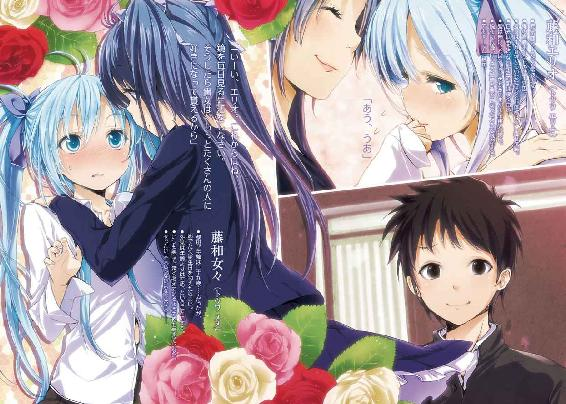

| 電波女と青春男(2)<電波女と青春男> (電撃文庫) | |
| 入間 人間 | |
| (2012) | |

本書（電子版）に掲載されているコンテンツ（ソフトウェア／プログラム／データ／情報を含む）の著作権およびその他の権利は、すべて株式会社アスキー・メディアワークスおよび正当な権利を有する第三者に帰属しています。
法律の定めがある場合または権利者の明示的な承諾がある場合を除き、これらのコンテンツを複製・転載、改変・編集、翻案・翻訳、放送・出版、公衆送信（送信可能化を含む）・再配信、販売・頒布、貸与等に使用することはできません。
わたし、四十歳になった。なってしまった！ きゃーきゅーきぃー！ 四十とは軟弱な幕府の一つぐらい滅びても不思議ではない、人生ではなく歴史の如き重みと深みに挟まれた魔性の数字。子は少を捨て大人の階段におみ足を晒し、ああ肌の張りが良いわ嫉視だわコンチクショウ実の娘だろうとそのコンチクショウぶりは大したものだわ！「モノローグを乗っ取るな！」
そして章タイトルまであんたの悲鳴が占拠してるのはどういうわけだ！ ......いや、何の話かサッパリなのだが、イタコさんばりに口に何かが憑依してしまっていたんですよ。
......さて、気を取り直して。どうも、丹羽真です。部屋がいつもの四十倍騒々しいです。
本日、日曜日、六月六日を持って、四十歳になったと喚く大供さんが休日の昼間を満喫しまくって大変だ。わざわざ俺の部屋で、埃を立たせている。俯せになって、ベッドで足をバタバタ。陸揚げされた海老みたいだ。年齢更新に対する悪足掻きのようでもあるけど。
ちなみにその生足には湿布が貼ってあった。何だかちょっと切ない。
「世間は残酷なのよぉぉぉぉろろろーん。うう、時と物語が停止してれば永遠の三十九歳だったのに。三十九歳名刺をご町内の皆様にばらまく夢が潰えたわ」
ぐっすんおよよ、と意味不明な願望をさらけ出す藤和女々さん。俺の叔母さんであり、決して『叔母』と『さん』の間に『か』が入っているわけではないはずだ。四十肩の例文に名前を載せられてしまう可能性が台頭し始めたことにより、俺の休日は平穏を脅かされている。とばっちりで。
「あーうー、よんじゅっさい......エリオットも四十歳、ホシミミも四十歳、兄さんなんか四十二歳......うけけけ」枕に顔を埋めながら、不気味な笑いを浮かべている。それで一回分、行動を無駄にしているわけだな。でもこの人、こっちが一回行動する間に三回は蠢くからな。生命力溢れすぎ。いや何の話だって感じだけど。
「あの、女々さん。部屋帰れ」シッシ、と追い払う仕草。効果があった試しはないけど。
「女々ちゃんかハニーって呼んでくれないと反応しません、ぷいっ」音通り、そっぽを向く。
脳に蜂蜜塗りたくったその言動を改めろよ、四十歳。こっちは部屋の外にポイしてぇ。
「（バグって）ハニー」
「邪念が籠もってたわ、きゃっかきゃーっか！」
前回から不要な部分だけ成長してやがる。まぁその歳で成長するだけ立派なのかもな。
「これでも極一部の人にはモチモチ先生と呼ばせているほどのお肌のワタクシなんだから、遠慮はいらないわよ、ほらほら」
無言で放置してみようと思ったら、暫くとかそういった間を空けることも許さずに「んもー、照れなくていいんだゾっ！ 憧れの叔母さんはお父さんの妹なんだからよく考えると血液的には父親に恋慕してるのと一緒っていう倒錯っぷりが凄いけれど、呼び方ぐらい自由があって然るべきなのよ！」なんか妄言を綿飴みたいに膨らませて部屋と俺の胃を圧迫してきた。
あかんわ、この人。ちっとも大人じゃない。育たなきゃむしろマズイ。で、俺も言わないと駄目っぽい。近所に誤解される気がしたし、そもそも休日じゃなくなりそうだし。
「......女々ちゃん」「きゅんきゅんっ☆」やばい、蹴りたい。背中とか限定せずに。「お部屋で大人しくしててください」「してるじゃなーい」「自分の部屋で！ ......大人しく！ あんたの今の発言が本当じゃないけど嘘でもない的に聞こえたからまず片方だけ指摘してみたけど、結局どっちも駄目じゃねーか！」「あーあー、長文にがーてなのでーす」
会話を放棄した女々さんがずざー、と砂埃でも巻き上げそうな滑り具合で、正面へ飛んでくる。で「ほあー！」と俺の読んでいた文庫本を丁寧に閉じてベッド方面へ投げた。ああ、橘川英次が......って嘆くほど、その名前の小説家に思い入れはないけど。何冊か読んだけれど、一貫して地の文がくどい。でもその回りくどさが結構、受けてる部分もあるらしい。
さっきの本のラストでは、主人公が靴をぶん投げて凶器所有の殺人鬼を退治していた。滅茶苦茶もいいとこだ。ペンは剣より強しの亜流だろうか。
「そんなことよりアレよ。マコ君、この傷心で幸福ポイントだだ下がりの叔母さんを慰めて」
ニコニコと、形ある善意を求める微笑みが俺に届く。えー、と、だなぁ。心に傷を負った人はそんなに嬉しそうに笑いはしないだろう。しかも、何だその上昇する度にこちらの何かが減算されていきそうなポイントは。
「私がきゅいーんと感じることでお肌がほっくほくになったり、下がれば落ち込んだりもする不思議な感覚を便宜上、そう呼ぶのよ」
「読めてはいけない部分の文章を読み取って、勝手に解説しないように」
「さぁ舐める撫でる泣ける好きなのを選びなさい！」
親切な叔母さんはわざわざ、青春ポイントの減退する行動を事前に教えてくださった。
「じゃあ萎えるで」具体的な行動を省いて、危機回避に徹する。女々さんとやり取りして点数が±零だったら御の字なのだ。
「マコ君の冷たさにはビックリだわ。きっとご家庭では冷蔵庫の中で箱入りに育てられたのね」
「夏の日だまりに放置されたおにぎりみたいな性格の叔母さんよりマシかと」
「だって四十歳なのよ。よく考えて、エリオと年齢足したら五十五歳じゃない。怪奇すぎるわ、年齢のエリア51よ、いえむしろエリオ55なのよ」
「何を嘆いてるのか、まずそこから考えるのが面倒だからスルーしていいですか」
「だぁーめだゾっ♪」慰める必要性を感じさせないはしゃぎ声である。
「それじゃあ......計算合ってないじゃん。エリオって今、十六でしょ」俺と同い年だし。
「私は三十九歳だー！」目前にちゃぶ台が合ったら喜んでひっくり返す勢いで挙手する。
「折り返し地点でもあるんですか、あんたの誕生日」
「誕生日は特別なんだから、その日だけ三十九歳になってもいーじゃなーい」
ゴロゴロと床を転がって、本人なりに考慮した甘える仕草を見せつける。二十九歳を願わないだけ謙虚さは窺えるのだが、如何せん、俺に同意を求めないで欲しい。どうしろというのか。
「えーまー、取り敢えず誕生日おめでとうございます」
「マコ君の基本マイナス野郎！ 想定内すぎるわ！」
捨て台詞らしき暴言を残して、部屋を飛び出す。失敬な、今は＋１だ。五月の入院中に退屈だから計算し直して、間違いはないはず。ちなみに入院中、誰かしかの見舞いによる増加は面倒だから計算していない。でもリュウシさんとナス川さん襲来で帳消しかな、とは思った。
女々さんはそのまま階段をガガガ、と名前に相応しくない雄々しさで駆け下りていった。と思ったら「ルルルー」と鼻歌つきで戻ってきた。ひょこっと、廊下から顔だけ出して部屋を覗いてくる。この人のその仕草からは嫌な予感と過去しか去来しない。ラジオ体操の出席判子を貰うカードに、一日だけ黒点がある感じだ。
「言い忘れてたけど、マコ君！ いーえマコっちゃん！」
「何ですか」言い直した意味は絶対ないだろう。
「お布団に叔母さんの香りいっぱいつけといたから、好きなだけスーハーしていいわよ」
「だーっらっしゃー！」
言い返したいことは山ほどビックリマークつきであるのに、俺の不徳の致すところすぎる話題なので有耶無耶に叫ぶほかない！
「むはは、あー人助けって気持ちいいわー」
両肩を回しながら、馬鹿笑い進行形で女々さんが今度こそ通路に消え、階段を下りていく。
その動きはズバリ四十肩を懸念してるんですね、と後ろ姿に言ってやる気力も湧かなかった。人間は後悔しない行動なんて本当に出来るんだろうか、と世の困難さに責任を押しつけて、色々と嘆きたかった。そして意地でも今日はあのベッドの世話にならん、と決意した。
......で。
その女々さんと入れ替わるように通路を転がってきて、隣の部屋から現れた奴が一人。
上半身が布団に包まれているプチ電波さん。さっきの人の娘。ということは藤和エリオも二十数年後にあんな人になるのか？ いや逆に考えれば、女々さんが二十数年歴史を遡ると、エリオになるってことだよな。うーむ、世界の七不思議に登録してやりたい。リュウシさん的に表現すれば、これこそ身近な神秘の筆頭だろう。
俺の部屋に側転で侵入してきたエリオが、中央を目指して移動を開始する。もぞもぞと羽毛が飛び散りそうな動作で立ち上がり、ずて、と転んだ。どうも正座でもして、足が痺れていたらしい。
「ふふふ」エリオが不敵に笑っている、わけじゃない。本当は「ううう」と足の痺れに唸っているみたいだけど、布団越しだからニヒルな悪役が風邪を引いた状態になっているのだ。
エリオの右足がもぞ、と動く。左足は微妙に曲がったままで、多分そっちの足が痺れてるんだろう。布団というか身体が少し持ち上がったけど、重力に平服して床との隙間を埋めた。
三分間待ってやる、と観察を続けてみたけどエリオは微動だにしない。諦めたみたいだ。
「アホか！」これだから二十四時間に制約を設けられてない人間は！ 『まぁ面倒だったらそこら辺でゴロゴロすればよし』とか妥協癖が酷い。そしてそれが許されるのは、羨ましい。
エリオというか布団を助け起こす。お嬢さんはお怪我もあるはずなく平然としているので、「顔出し」ランプの魔神を呼び出すように命じてみた。
ずずず、と頭部がせり上がってきて、にゅぽ、と布団から顔だけ出す。無表情面ながら、意外に素直になったな。そして相変わらず美少女代表である。例えるなら、それは林檎の描写に近い。林檎がどんな赤とか殊更に強調したり、大きさはどうだとかの描写はあるかも知れないけれど、それの品種を事細かく完全に言い当てたりすることは料理小説や漫画でもないとまずない。林檎と書けば多くの人が赤くて手乗りぐらいの大きさと想像出来るように、エリオは人が美少女とは、と思い浮かべた時のぼんやりとした姿形を忠実に再現しているような造形だ。
世の男は大抵、こいつが可愛いから俺は面倒に手を染められると思えるだろう。俺は違う、外見より中身重視だ。と言い切れないのでそれが悪いか、と自分に開き直っておいた。
「何でまだ日常的に布団にくるまってるんだよ」電波女は前巻で終了したんじゃなかったのか。
「これが一番落ち着く」
「そのまま床の間に飾られたいのか。で、用件は何だ」
会話自体は宇宙に矛先が向かず、俺の鼻先を突くようになったので意思疎通の手間は省ける。ただ、普通な返事がエリオからポンポン飛んでくると、まだ慣れないというか照れる。
最初の印象が強かったからなぁ、こいつ。
エリオはもぞもぞと落ち着くはずの格好で落ち着きなく、左右を見て視線を逃がす。
「お母さん」エリオの口からその言葉が出ると、木製と思って触れたものが金属だったような違和感が生まれる。地球人のエリオとは、まだ交流の月日が浅いのだ。
「誕生日だし」
「うん」
「......だし」これで伝えるべきことを終わらせたがっている模様。
「......中間を話すように」俺がそんなに察しよろしい訳がない。模範解答を寄越せ。
エリオは複雑な表情で下唇を噛みながら、くぐもった発音で真ん中の空欄を埋める。
「お菓子屋さんに行こうって」
「菓子屋」意味なく反芻。エリオが菓子を頬張る様子は、何故か妄想過多の年頃高校生でも想像しづらい。餅を食べて、噛みきれずに引っ張っている姿は思い浮かんだけれど。
「お母さんがお団子とか好き、だから」
......ああ、そういうこと。お祝いね。ケーキとかじゃなくても、好みならいいか。
それで、話を統合して、俺にその話題を持ちかける意図を汲むと......だ。うん。
「買いに連れて行けと？」
「ん」
「あー......まぁ、いいか」
エリオはお日様の照り具合を夕暮れから昼へ巻き戻すように、嬉しさの光量を増やす。髪から舞い散る光の粒子がエリオに感応して、所定の肌の位置に収まったみたいだった。
足の痺れもなくなったのか、エリオが今度は順調に立ち上がる。部屋の入り口へスタスタ。
「おい、布団は脱いで行くようにな」
「む」
若干不服そう。が、ふと何かを思いついたように遠い目をする。
「どした？」
「イトコ」俺をジッと見つめる双眼。目の色までもが、宇宙の装飾を施されているように奥深い。メタリックで、透き通っている。溶剤の混ざった飲料に適さない水のようだ。
「あん？」
「布団、わたしの匂いするけど。お礼にいる？」
「君たち母子は俺を匂いフェチと勘違いしている」
その今考えていることの逆がミステイクで、だけどそいつは大きな正解なのですよ。
新しい自転車は、忘れかけていた世界を俺の眼前に幾つも展示した。
ペダルの回転を無視しない車輪に、ザラリとした感触のないグリップ。煤けた赤色と縁のないシルバーフレーム。塗装の剥げていない籠。嵌るエリオ。......最後だけ余分だ。
強引に布団を脱がして（余談だけど、『んーんー！』と布団引っ剥がしを粘るエリオは不覚にも可愛かった）、ご要望通り一緒にお出かけ中のエリオは俺の後ろではなく、当然のように前方の籠に尻をはめ込んで郵送されていた。「こっちの方が落ち着く」らしい。
何事も落ち着き優先で足下の人道用の線引きは見えていない従妹さん。こいつの生活スタイルを改善させるのは相当、骨が折れそうだ。別に俺にそんな役目は課されてないから、治った右腕共々、骨は大事にしていきたい。カルシウムを過剰消費させるあの人が今のところ天敵か。
梅雨時を二週間後ぐらいに控えた土曜日は快晴で、まだ五月の天候が幅を利かせている。風と日光は程良く乾いて、身体の余分な水分だけを除去して快適さを分け与えてくれているみたいだった。自転車に乗って逆風に煽られるのは、春秋の終わり頃が一番気持ちいい。
エリオに案内された道を通って土手を走っていると、下の河川敷で大人たちと子供が交じって草野球に興じている。懐かしい。野球なんて小学生の頃に、倉庫のサッカーボールが全部使われてる時があって、サッカーの代わりとして遊んでみたことがあるぐらいだ。
敵味方合わせて六人しかいなかったから、単打を三人連続で打つと打者が足りなくなって、外野を守っていた奴が打席へ向かうという変則ルールを採用した。結果、勝ち負けが非常に曖昧になって、まぁ波風立たずに時間を潰せたんだからいいんじゃないかって今では思う。
子供は勝ち負けが絡むと些細なことで絶交して、大抵は数週間か数ヶ月したら仲直り出来るんだけど、それでも時々、生涯の縁をなくしてしまうことだってある。ま、大体の友達とは学校を卒業したら関わり合いを失うのかも知れないけどさ。気分良く別れたいだろ。
対向車が来る気配もないので、俺の目はその野球を見下ろす。今は朱色の浴衣を着て、右近下駄を履いて、野球用じゃなくて工事現場のヘルメットを被って金属バットをフルスイングする小柄な女の......子？ 女性？ 年齢は不詳。だけどそんな和洋折衷の格好の女性が打席に立ち、レフト側へ長打を放っていた。打った本人は最初、反動で足下がよろけていたけどすぐにバットを地面に置いて全力疾走し出す。一塁を回って二塁へ到着し、シャーッと右腕を突き上げる。腕白な座敷童が野球に興じているようだった。
とすると、あれは子供チームではなくて妖怪チームなのかも知れない。夜の墓場の運動会よりは爽やかな気分になるだろうなぁ、と真実を無視して好き勝手に評価してみた。
「野球」と、籠の中のエリオが呟く。布団を除外してる時のエリオの生声は、ピアノの鍵盤をスタッカートに弾いたような音が一文字ずつ続いているみたいだ。聞き取りやすいけど、言葉の意味が分かりづらい。
「興味あるのか？」
尋ねるとエリオはカーペット代わりに出来そうな長髪をぶんぶんと左右に振り乱す。それを目で追いかける内に、野球観戦は終わりを告げた。橋を横切り、土手が消える。
「お前、学校行ってる時は部活とかやってた？」
真っ当な会話を、自転車に同乗してる女の子と交わすなんて青春ポイントのメッカではないか。しかし、乗り方に若干、難がある所為で数字の変動の兆しが見られない。ままならねー。
「部活......天文部」
「へー、文化系か」で、やっぱり宇宙。好きだねぇ、ほんと。
「が、あったらいいなーって考えて帰りにニヤニヤする帰宅部」
「......あっそ」その不気味なニヤニヤさえも、お前なら絵になってたんだろうな。
エリオの指示に従って進んでいくと、自転車が商店街っぽい地域に入っていく。地元の大型スーパーとかを目の敵にしていそうな少々古めかしい店舗が並び、同時に下りたシャッターも散見される。店先に立つ大人や自転車ですれ違う制服を着た人たちが一様に、籠に嵌った美少女を振り返ったり凝視したりするので肩身が狭い。絵柄が釣り合ってないよな俺、と要らない心配までしてしまったわけでは断じてない。
商店街の南端にある、自転車ショップに隣接した和菓子屋の前で自転車を停車させた。硝子越しに見る店内は、何故か白さが強調されている気もした。
外でくるくる回る看板にはイチゴ大福と、新商品のどら焼き餅が紹介されていた。
ついでに店名は『火星儀』というらしい。流石、地元だけでなく宇宙にも根ざすことを試みる欲張りな町である。名前も宇宙にこだわり入れてますなぁ。
「ここしか、お菓子屋知らないから」
「ふぅん。ま、何処でもいいと思うけど。エリオが買ってくれば、女々さんは喜ぶだろ」
四十歳への嘆きで流した涙を『勿体なかったわー！』と二重の意味で感涙するかも知れない。いや、そりゃねえか。素直に好意を受け止めるのが苦手な人種っぽいし。まぁでもさっき、本人が宣ってた幸福ポイントとかいう代物は水位が上昇したりするんじゃないかな。
エリオは照れたのか、頬を微かに染める。それを隠すように、両手の平で顔を覆った。
幟や手作りの広告を、新装開店のパチンコ屋の表みたいに派手に飾った和菓子屋に入る。
「らっしゃーせー......って、随分見知ったお二人さんじゃないか」
ショーケースを磨いていた、白くて丸いのに親しみを込めた声をかけられた。
「.............................................」
え、それ以上描写しなきゃ駄目？ いやあの、ただの大福の皮被った前川さんですけど。
「んー？ 何固まってるのさ転校生......スマキンは、うわ、久しぶりに中身見たね」
「......うん」
動じないエリオは大人なのか、単にコスプレ仲間と認識しているのか。むしろかつての同級生の視線に対し、自身の恥でも感じているのか、俺を壁にして背中に隠れてしまう。
「おやおや、人見知りになったもんだね。そして転校生とラブ、あれもラブこれもラブな模様」
「いやいや、繋がりはラブじゃなくて主にブラッドだから。それで、大福レディーは何をなさってるのでしょうか」
「失敬な、大福じゃない。三色団子の白子ちゃんだ。しろこで、しらこちゃんじゃないよ」
憤慨された。頬が団子を詰めたように膨らむ。あーだから、お団子を頭につけてるのね。
「モチモチ具合が全然違うんだよ、分かるね転校生」
「はぁ、でも表面に粉噴いてるけど」
「塗料が剥がれてるだけだよ、安物だし」
拭き掃除を中断して、正式にこちらに向き直る。防御力とかっこよさを最低限にする不思議な出で立ちを何ら恥じず、背筋の真っ直ぐ伸びた前川さんはやはり長細かった。
団子より山芋のコスプレの方が適材適所だよな、と思ったのは内緒だ。
「そして見ての通り、ここでバイト中なんだ。やっぱり今の時代、マスコットキャラだよ」
「そッスね」大玉転がしの白玉にしか見えない。
「三色の残りの草団子と赤団子があるけど、転校生たちもどうだい。一緒に串刺されようぜ」
店の奥を指差す。和菓子屋という名の演劇部が奥の空間に広がっているような錯覚がした。小学校の放課後にサッカーに誘われる感覚で、休日にコスプレを勧められるのが都会なんだろうか。うーむ、都会はやっぱり油断ならないな。道の脇を自動車がビュンビュンと走っていて、踏み外した時に致命傷となりやすい。田舎なら、田んぼに自転車ごと転げ落ちるぐらいだ。
丁重に遠慮する旨を伝えると、詰まらなそうに前川さんは唇を尖らせ、接客を始めた。
「で、何しに来たんだい」
「いや、店に来たら店員さんの察することは一つじゃないっすか」
「大穴で私を鑑賞に来たっていうのもあるね、うん」
「残念ながら本命の方です。エリオが団子買いに来たんだ」
人の背中に隠れて視線の風雨を遮っていたエリオを、表舞台に立たせる。肩を押して前へ出し、前川さんと正面向かせる。触れる手の平からエリオの肩の強ばりが伝わる。
前川さんは物珍しそうにエリオを見下ろして、エリオはおどおどとカツアゲ被害中の少女みたいにおっかなびっくりと前川さんを見上げる。エリオは身内に対しては真っ当な日本語を用いるけど、他の人と喋る際は句読点だらけになって、息苦しそうにしている。
客観的には、どっちも地球人代表として宇宙会議に出席したら誤解を招くよなぁ。
「藤和が？ ......ふぅーん。布団は？」
「もうないんだよ。なっ？」お外ではね。
エリオは顎を軽く引いたり、目線を横へ必死に逃がしたりして口を開かない。
「店の中って前川さんだけ？ 店長とかは？」進展がないので、場繋ぎに会話を振る。
「サボるから店を開けといてくれと頼まれた。最近多いんだよ」
立場と仕事がチグハグすぎる。しかもそれを承諾するとは、無駄に寛大なアルバイト店員である。格好も自由奔放だと懐も広くなるんでしょうか。
エリオは放っておくといつまで経っても用件を切り出しそうにない。ので、仕方なく「ほら、買うもの思い出せ」とまるでこいつの母親になったように背中を押す。手間のかかる奴だ。
「お団子、えと、みたらし団子買いに来たの」
ようやく、店員さんと名乗る白玉団子に本題を切り出すことに成功した。前川さんは「団子？ はいはい」と胴体を店内各所にぶつけながら店の奥へ回って、ショーケースを開く。
「何本？」
「ご、五本」バッと、手の平を突き出して五本の指を大げさに開く。
「へい毎度」
男前の職人風を気取った返事をして、前川さんが手際よく注文の品を包装する。「手先はまぁまぁ器用な方なのさ、腕を上にあげる能力がないだけで」
淡々と自己評価を下しながら、商品を作り上げて「はいよ」とエリオに包みを渡す。
その構図だけ見ると、前川さんがエリオの上級生か三つ年上の大学生のようだった。
気づけば保護者の立ち位置にいる俺が、財布の紐を緩めてレジに千円札を支払っていた。
「お釣りはあれだ、私が転校生にその金額分だけ学校のパンを奢るでどうかな」
「前川さんの手作り弁当なら喜んで承諾する」
「チェッ」とお手軽に舌打ちして、「ジャラジャラチーン」と効果音を口ずさみながら小銭を返却してきた。「レシートいらないでしょ」と、俺の手に渡る前にゴミ箱に投げてしまう。
「ありがと」エリオが薬指の爪で何かを弾くような調子の小声で礼を零す。
「なーに。これでも知り合いからは、『困ったときには前川さん』と呼ばれているのさ」
それは『困る原因にいつもこの人がいるよなぁ』という、所謂ヤッパリヤハリと同種の扱いなのでは。優越感溢れる得意顔が似合ってるので、崩さないように言及は省くけど。
「あ、そうだ。藤和が誘拐されないように気をつけなよ」
ショーケース磨きを再開しながら、前川さんが妙な忠告をしてきた。
「誘拐、ってなんのこと？」
「最近この近所でよく動物が行方不明になるんだよ」
「動物って、飼ってる犬とか？」
陰湿な動物殺しの犯人を想像して、口に苦みが広がる。
「いや、近所の野良猫とか野良犬とか、後たまに出没する野良イタチとか」
「......保健所かな？」
「んー、それは違うっぽいよ。で、今の藤和は小動物っぽいから、間違えられるんじゃないかと思ったのさ」
ニヤニヤと、俺の背中に隠れがちなエリオに向けて軽い嫌みを零す。こうしてみると、前川さんは結構エリオのことを気に入ってるのかも。町中を布団に包まれて行脚する電波女に対して好意的とは、流石コスプレ前川さん。むしろ同好の士とか考えてないだろうな。
「あー確かに。肩のビクビク具合とか、目のウルウル具合とか、むしろ誤解じゃないよな」
「種類は宇宙ハムスターだね」
あっはっは、と当の本人が上目遣いで拗ねたように睨んでいるのも気にせず笑い合う。
「「じゃあ、また明日学校で」」と挨拶し合って、店を出る。学校で、のあたりでエリオは表情を曇らせた気がしたけど、単に外へ出て日差しが顔にかかり、しかめ面になっただけかも知れない。俺に対しても同様に、五月晴れの光が......おや？ 今何か、空を飛んでいったような。
鳥にしては流線型で、ＵＦＯにしては小規模だったな。
「ありがと」
自転車の籠に乗って、袋を大事そうに胸元に抱えたエリオが、俺に礼を述べる。
「連れてきてくれて」
それから太腿に顔をぺたりとくっつけて、また表情を覆い隠した。照れてるんだろう。
照れるという感情が露骨な子は大体可愛いよなぁと、脳味噌がほんわかと日光にやられる。
こんな奴でも、そんな時はこちらの青春ポイントが加算されるというものですよ。
「いいけど、後で立て替えた代金払えよ」
こっちは別に照れ隠しではない、断じて。
藤和家に帰ると、ちくわの磯辺揚げみたいなのが玄関に転がっていた。
「.............................................」
「.............................................」
思わず隣のエリオを見る。エリオはぼけーっと、それを見下ろしていた。
「お前、双子とかいる？」
「分裂したことない」
ないない、と首を横に振る。だよなぁ。じゃあつまりあれか、何してるのこの四十歳。
そして、その姿を見ながら何となくだが。
あんたの幸福が高まる度、俺の青春は下降線に飛び乗って沈んでいく予感がヒシヒシと。
「よし」まず靴を脱いだ。綺麗に揃え直して、家へ上がる。反応の鈍いエリオも俺に釣られて、靴を脱ぎ出す。揃えたのを見計らって、通路を進み始めた。
「あえ、あの、」立ち止まっているエリオがチラチラと足下に視線を送る。お前がそんな態度を取るのか、と突っ込んでみたくなったけれどここは気持ちよく色々と無視しておこう。
幸いにも、転がる布団と生足は微動だにしていない。
「さーどうぞー。部屋は散らかってないけど狭いよー」
いつぞやの人の台詞を流用してエリオを招き入れる。エリオは「うう」と肯定否定が曖昧な反応で足を止めている。よし、親子を二人きりにしてやろうと言い訳を用意して、俺はずんずんと先に進む。しかし、家の何処へ向かっているんだろうな俺の足。
そうすると二ヶ月前と異なるのは突如として起き上がったお布団こと女々さんが「にょあー！」と叫んでいや何で俺の方へ走ってくるんだよ。取り敢えず、走って逃げた。振り向くと、俺を追うのは見た目ほとんど妖怪だった。誰か妖怪ポストに救援要請してきて。
「えーい、来るな！」「わたひに来るなふぉ命へいひないでくへー！」何叫んでるか分からん！
通路を駆け、左側の居間に逃げ込む。で、予想通り女々さんは曲がれなかった。ずででで、と減速もせずに駆けてドゴッ、と壁に衝突する音が聞こえてきた。現場に行ってみる。
かつて前川さんが夜の公園で『あばばば』とブレイクダンスの出来損ないみたいに地面を転がっていたことがあったけど、それの布団巻きバージョンみたいな姿が通路の奥で繰り広げられていた。俯せになったり仰向けに転がったり、忙しなく布団が飛び跳ねている。
コロコロと手で転がして、悶える女々さんを居間に運んだ。テーブル付近まで移動してからも、足の裏がつったように身体を伸ばして「ふののの」と身悶えを続行する。
鉄板の上の削り節を思い出させる動きだった。
やがて娘を見習ったのか、布団上部から窮屈そうに顔を出して女々さんが「あー」と舌を出す。額には汗を浮かべて、頬が火照っていた。
「舌まで噛んじゃった。マコ君、チューして」
「血生臭いから遠慮しときます」そしてその初めてまで叔母に奪われたくない。マイナス二十五点とか法外な数字を減算されそうだし。
「それにしても暑かったわぁ。エリオったらよく我慢してたわね」
「干からびそうですよね」肌が、と具体的に口に出したら絞め殺されそうな気がした。
「結局、何やってるんですか。体験学習ですか？」
「布団を外したら中から美少女が！ って最高にギャップ萌えじゃないかと気づいたの」
「それはあんたの娘が二ヶ月前に通った道です」
そして美少女って言葉はあらゆる年齢層を網羅できるほど守備範囲広くないです。
「後は、世の中に拗ねてみたの」目の焦点を合わせないままやぶにらみになる。
四十歳の拗ね方ではないし、そもそもいい大人は壁にぶつかってジタバタ悶えない、と思う。
「でもこれだとエリオとマコ君の顔が見られないから不便ね」
さらりと少々気恥ずかしい台詞を口にする女々さんに、照れは見受けられない。
「で、二人でこそこそ何処で逢瀬してたのかしら」
ぷーっと頬を膨らませて、今にも『叔母さんも行きたかったのにー！』とジタバタ暴れそうになっている。この人は恐らく、五十歳を迎えてもそういう態度を取るだろう。
「ただの買い物ですけど」それをデートというかは人によるが、今回は違うだろう。
「ああ（エロ本を購入にね）」深々と顎を引き、深々と納得する。
「納得を捏造するな」しかも誰が女の子に誘われて買いに行くか。
「あー分かったわ。叔母さんとの初デートに向けて予行演習してきたのね」
「「違う」」女々さんが否定に挟まれる。居間に顔を出したエリオもまた、母の冗談を否定した。まぁ、多分冗談だ。本気の可能性は、輝かしい将来の為に封殺した。
エリオが女々さんの側にぺたんと座りこむ。女々さんは特に布団を脱ぐ気配を見せず、もぞもぞとコンパスのように回転して娘へと向きを変えた。「おかえり」とも優雅な態度で挨拶する。エリオはその母親の姿を見て何を考えているのだろう。瞬きの回数を控えた無表情からは、多種の感情を読み取ることは難しい。
例えば、俺の母親が実家でコロネみたいな格好して『お帰りー』と挨拶に出てきたらを想像してみると......間違いなく反抗期に突入していたな、うん。精神に対する家庭内暴力だ。カフカの変身の実写版とか説明されても納得できまい。
「ただ、いま」
もじもじエリオが、屈託バリバリに帰宅の挨拶。むしろ紆余曲折をまるで意に介さず、凝りのない女々さんの態度が普通じゃないのかも。何でこの人、こんなに自然なんだろう。
「じー」
女々さんがエリオの膝小僧を注視している。最適な反応を見つけられず、萎縮するエリオ。女々さんの格好と組み合わせて、蛇と蛙の構図みたいになっている。俺はナメクジとして参戦する気はないので、テレビのリモコンを探した。長期戦になりそうだ、と判断したからだ。
でもそんなことはなかった。基本、女々さんは守りに入らない。
「べろっ」
舐めた。女々さんが蛇のように身体を捻って近寄り、エリオの右膝を。「ひょあ！」と飛び跳ねて後ずさるエリオ。壁際まで後退して、その通過跡には埃の中に光の粒が浮かんでいた。
目を大きく開いて、胸の動悸が収まらないといったように服の上から胸部を押さえている。
「この肌は......若さで潤ってる味だわ！ エリオ・エリーオ！」
「誰だよ」そしていい加減に脱皮しろよ。お気に召したのだろうか、布団スタイル。
「妬ましい！」正直者の女々さんがビッタンビッタンと跳ねる。きっとこれの三十倍ほど性格の酷い人が白雪姫に毒林檎を食べさせたりするんだろう。でも結果の位置から過程を振り返ると、白雪姫は毒林檎を食べたから王子様に見初められた、ということなんだよな。運命は不思議の一言に尽きる。
エリオが無意識のように右膝を手の平で擦って拭き取るのを「ちょーショックー」と言いつつ、ずるずると女々さんも後退する。俺の隣にやって来た。今度は俺の膝を舐める気がしたので、口元に注意をして足を浮かせ、露骨に警戒してみる。
「ところでマコ君はいつになったら私のお世話を焼いてくれるの？ ヘイ、お姫様抱っこ！」
バフバフと胴体が上下する。暴れる被害が減るので、このままでいいかと考えを改めた。
「さっきここまで転がしてあげたじゃないですか」
「はーっ、マコ君は女性のエスコートがまるでなっちゃいないわね」
「布団を上半身に巻いた女性はこう扱うべきだ、とお宅の娘さん相手に教わりましたよ」
で、そのお嬢さんは現在及び腰で、鎖に繋がれた猛犬にじりじりと近寄る子供みたいな挙動で女々さんとの距離をナメクジ風に詰めてくる。
「ああ、娘にまで警戒されるなんて。まるっきり理解されてないわ、おねぇさん悲しい」
「自業自得すぎる......」しかもあんた本人が一番身の程を把握してな以下略。
母の冗談の嘆きを本気で受け取ったのか、エリオがパタパタと慌てて女々さんの前へ戻ってくる。うーむ、純朴な奴。二ヶ月前を知らずに今日のエリオが初見だと、内気で母思いの少女と誤解されかねないな。実際はアレだったから。内布団だったから。内弁慶以下。
「あの、お誕生日、おめでとう」
「あらありがとー」海老ぞって顎を上げながら、にこっと皺、は無視して微笑む。
「けどおめでたくねー！」
微笑みを崩さないまま、呪詛を吐き出した。表情と感情の不一致さにたじろぐエリオ。が、腕と包みは女々さんの眼前へ。「くんくん」儀礼のように匂いを嗅ぐ女々さん。止めろって。
「お団子、買ってきた。あの」ぐ、と喉を詰まらせる。引きつる肩。「おか、あさん」言って、肩を落とす。「好きだから」
「まーエリちゃんったら。おねぇさんもといお母さんに愛の告白？」
......ん？ ああ確かに、『お母さんがお団子を好きだから』じゃなくて『お団子を買ってきたのはお母さんが好きだから』にも取れるな。日本語は意志の伝わりが枝毛のようだ。
エリオは頬を真っ赤にして、テーブル上にあった料理雑誌で顔を覆う。そうやって顔面を隠すのがエリオの照れ隠しというか、防衛行動なのかな。
でも俺はそれより、エリオの愛称はエリになるのか、とそこに注目していた。エッちゃんとかリオちゃんでも大丈夫そうだな。意外性重視ならオリエちゃんでも可。別人になってるが。
「エリちゃんは相変わらずきゃわゆいんだから。お母さんに似てよかったわ」
うんうん、と得意げにしかも迷いなく頷く。ついでにビッタンビッタンと全身跳ねる。よっぽど嬉しかったのだろうか。それとも自分はまだまだ活きが良い、と新鮮な魚類に準えて主張しているのだろうか。両方だろうなぁ、この人はと思わずにいられない。
幸福ポイントに３点追加ねー、と代理で適当に指示を入れておいてみた。
「そーいえば、エリオの誕生日を去年祝うの忘れてた。明日、誕生日にしましょうね」
言葉の意味はサッパリだがとにかくめでたいことを提案して、母親は娘の顔を綻ばせる。
「お団子、食べる？」「食べる食べるー」無邪気さを、装って女々さんが同意する。童女っぽい振る舞いは『どうよ』と俺に視線で感想を求めてきたけど、首を横に振るだけだった。
エリオが包みを開き、女々さんは体勢を『寝』から『座』に立て直す。エリオは団子の串を一本摘み、女々さんに渡そうとする。子供が母の日にお母さんの手伝いを頑張ろうと、ちょこまか台所を動いてるような仕草と表情だった。ぎこちなさと一生懸命さが同居してる。
それを微笑ましく見つめる女々さん。「......」が、見ーてーるーだーけー。手が布団に阻まれて外へ出せない。受け取れない。台無しである。しかも本人は脱ぐ気がない模様。間違いなく気に入っている。そんなに極楽なものだろうか、アレ。......いや、俺も試そうとは、うーん。
俺が考え込んでいる間にも、エリオは団子を指先にぶら下げたまま困惑を深めている。五つ重なる団子からタレの雫が床へ落ちそうにもなっている。助け船がご入り用かな、これは。床掃除とか、後始末を俺が行わなければいけない雰囲気もあるし。
「エリオが食べさせてやればいいじゃん」
「えっ」エリオが俺に、意外そうな目を向ける。何だ、良いこと提案するのは珍しいか。俺が。
まぁ、エリオとは一緒に海へ落ちてみたりしただけだからな。
「あら懐かしい。むかーしむかし、私がエリちゃんにしてあげた時もあったわ」
感慨深げに睫毛を震わせながら、「あーん」と大きく口を開く。「あ、マコ君見ないでよん。ジョジョちんはずかちい」俺はその台詞を貴女から聞かされるのが恥ずかしい。
エリオが恐る恐る、女々さんの口へ団子の串を差し込む。そのまま一気にザクッと突き刺したらどんな反応を見せるんだろう。樽の中で剣を刺された海賊みたいになりそうだ。
「かぷっ」と一気に三つ目の団子まで口に収める。残り二つは、エリオが指でいじいじと串の上へ移動させて、食べやすいように処置した。それら二つを更に口に入れて、もごもごと女々さんの頬が蠢く。「おいしい？」とエリオに尋ねられて、「ほっぺが落ちそう」と答えたが本当に今なら摘めば粘土みたいに取れそうに見えた。
「チラッチラッ」え、効果音を口ずさみながらこっちをジーッと、瞳を逸らさずに凝視してる。瞬きもない。効果音合ってねぇよ、との突っ込み待ちなのか。それとも、或いは。
試しに団子を手に取り、串を口元に近づけてみると「はぐっ」食いついてきた。ハゼさん、じゃなくて女々さんは口に含んだ団子を呑み込む前に、更に口内へその兄弟を追加していく。
二本のみたらし団子を全て口に詰め込み、本人の顔も団子状になった。とてもじゃないが四十代の振る舞いには見えない。若いですよ、とおべっか使うべきか、歳を考えろ、と殺意を抱かれるべきか。無言でやり過ごすのが一番賢いかな、と結論を出している間に女々さんが喉を詰まらせた。「むぐぐぐ」大魔王が卵を産む前みたいな状態に喉が変形している。
エリオ、あたふた。俺、静観。女々さん、あわあわ。
十秒ぐらい経ったら、女々さんが団子を全て呑み込むという形で事態は収拾した。
「危なかったわ。こんな格好で死んでたら、事故死か他殺か疑われそうだもの」
しれっと、取り立てて冗談の様子もなく女々さんが息苦しさへの感想を述べる。
「.............................................ははっ」脱力した、純粋な笑いがじわじわとこみ上がる。
ということで。
藤和家は俺にとってそこそこ騒々しく、それなり楽しい場所になっていた。
青春ポイントと独り暮らしは遠退いたけど。
「にわ君はさー、バイトとかするの？」
六月七日の月曜日の高等学校の二年生の教室の同級生の御船のリュウシさんがそんな話題を持ち出してきたのは、昼休みの半ばだった。
お互いに昼食を取り終えて、残った紙パックのお茶をストローで吸ったりしながらの時だ。
「その内してみようかなとは思ってるよ。部活も入ってないしさ」
それに居候の身分だからなぁ。自分の家じゃない場所で何もしないでいると、何だか据わりが悪い。それが二ヶ月ぐらいの生活で学んだ、ホームステイの感想だった。
またもう数ヶ月暮らせば、印象変わるのかも知れないけど。
「そうなんだー。じゃ、初任給貰ったらジュースでも奢っていただきますかな」あははー、と朗らかに笑って、教室のざわめきにも摘み取られない笑顔の花を咲かせる。
やっぱリュウシさんは可愛いなぁ、と心中で無遠慮に賞賛した。口には流石に出せない。
可愛い女の子と一緒にご飯を食べて、お茶を飲む。そして他愛ない雑談。ある意味学校デートである。そんなこと言ったら駅の本屋の前で英会話教室の勧誘してるおねえさんと仲良く会話したら勧誘デートなのか？ と疑問に思ったけど、造語だから類語は必要ないと結論づけた。
「リュウシさんの方はどう？」
「リュウコやっちゅーに。あたしは、んーむ、しないかな」
「あ、やらないんだ」
「本当に大事なものはお金で買えないのですよ」
「それはちょっと意味が違う」
胸張ってるところ悪いけど。
「まーでもね、今は放課後とか部活で手一杯だし。それにお金をそんなに使う趣味もないし......っあ、あたしはなんちゅーかこう、トゲトゲだから！ 見た目からして個性さんであって、無趣味の没個性じゃないよ！ 風評に騙されてはいけない！」
全く根も葉もない噂ばっかりでけしからんですな、と午後に成り立ての時間帯にパックの紅茶をずびび、と強く啜るリュウシさん。別に誰も『水平線』とかあだ名をつけてないのに。
見た目からして個性......に俺の知り合いの中で該当するのは、二人かな。一人は宇宙人で、もう一人は長身。叔母もある意味で個性あるけど、言及すると呪われそうなので割愛。
「まあ個性の話は燃えるゴミに出して。そっか。じゃ駄目だな」
「ぐび？」ストローをくわえながら疑問系に着手して混ざっちゃったなリュウシさん。
「いや、今日って放課後暇と聞いてみようと思ったけど無理だよなーって」
「ぐび」
リュウシさんの挙動が一瞬停止した。思い出したように口の中身を飲み込んでから、パックを机に置く。背後を通りすがるリュウシさんの友達が、俺たちを一纏めにして何故か笑った。
「またどっか出かけよー、おーっ、って話？」
探るようなリュウシさんの視線。身体の揺れに合わせて、机と床の擦れる音が小刻みに鳴る。
「うんまー、ちょっと買い物に付き合って貰えればなーって。いや、忙しいならいいけど」
「うぇ、ウェイト！」
右手を俺の口元に突き出して、唇の動きを遮るように指を開閉させる。訓練された犬の如く、指示通りに俺は唇を真一文字に結んでリュウシさんの反応を待つ。
「うー......ダムダム。パスパスドリブル、ナイッシュー......キャーリューコチャンレギュラー候補ー......にわくーん自転車キーコキーコ......キャッキャウフフー......悩まし！」
自分の世界と向き合ってるリュウシさんは、架空のボールを床で跳ねる仕草を見せたり、見えざる自転車のベルを指で鳴らしてみたりと想像がパントマイムの形で世間にデビューしている。重大でも重要でもない用事なわけだから、秤にかけて頂いてもこっちが恐縮してしまう。
「ほんと、大したことじゃないから部活優先でいいよ」
「うーん、あれだねー、にわ君は何買いに行くとか決まってる？ それともお店をブラブラ派？」リュウシさん、実は微妙に人の話を聞かない子です。目下一番素直なのはエリオかも。
まぁ自分に素直って表現を曲解するなら女々さん以上の人はそうそういないけど。
「ああうん。今日は従妹がね、誕生日的なものを祝われるらしいから、なんか贈り物でもあった方がいいかなって」何となく、エリオと名前を用いずに従妹呼ばわりしてみる。
「従妹って、藤和さん？」
でも即座にバレた。まるでエリオという名は公で語られるだけで咎められるような、そんなやり取りに錯覚してしまう。確かに、今までのエリオは町中では駄目知名度の高さが際立ってたからな。今も外に全然出ないから、多少は宇宙から帰還してきたのも知られてないし。
「で、よく分からないからリュウシさんに一緒に選んで貰おうかなって」
「えぇー」あれ、なんか反応悪い。「リュウコさん、ちょびっと忙し指数上がっちゃったかな」
「......んー、エリオのこと嫌いだったり？」
唇がムスッとなってるし。分かり易いっていう要素だけは歓迎するけど、他は困惑の材料となる。鍋の底が静かに泡を噴き出してる感じだ。
「嫌いじゃないよー。嫌いになるほど、知り合いじゃないし」
置いてあった紅茶パックを手に取り、逃げ道の小道具に利用する。ちゅぞぞーっと底に残った液体を吸って、リュウシさんの目が黒板上の時計に泳いだ。俺も釣られて見上げると、時計の長針が残り数分とかからず『昼休み』というお弁当を食べ尽くすところだった。
「でもあれだ、なんか怒ってる」素敵な予感は伴わないけど、この話題に踏み込んでみる。
「怒ってないっちゅーに。このイムイムなリュウコさんを怒らせたら大したもんですよ、懸賞金ものですよ。こないだなんか、お母さんに部屋の掃除しろって怒られても怒り返さない逆反抗期っぷりでしたからね、ほんともー」
そこで発散しなかった怒りを溜め込んで、ここで解き放っている感があるのは、俺が思春期で無駄に多感だからでしょうか。
「ま、敢えて言えば、この理不尽なる怒りはにわ君に注がれているね、うんうん」
「えっ、俺？」しかも理屈抜きと自己申告。事前に言えば全て納得出来るわけじゃないぞ。
「にわ君はデリカシーがないことが判明。もうね、デリカリーだよ」
「デリカシーの問題......って、どこら辺が？ しかも何と混ぜた造語なのそれ」
「語感が良いから言ってみただけ。ノンカロリーみたいなもの」
後者の疑問にだけ答えて、リュウシさんがあまり面白くなさそうに俺を見た。
「結局俺、放課後はリュウシさんを諦めるべきかな？」
「残念無念ですが、手の施しようがないですな。そしてリュウコやっちゅーに。やっちゅーに。やっちゅーに」机の下で、上履きを脱いだリュウシさんの右足が三度の振り子運動を行い、俺の足首に読み取り問題の間違いへの罰則を与えた。地味に痛い。
「そっか。じゃあ諦めよう」
そう宣言して、目線を逸らす。ゆっくりと首を振って、リュウシさんの頭部の後ろに控える教室を見渡す。別に他意があったわけではなく、ただ、空気を散らしたかっただけだ。
しかしどうして俺は、エリオを優先して行動を決めようとしているんだろう。青春ポイントに対して少々目を瞑りすぎじゃないかね。
「ねーにわ君」リュウシさんが俺の目線を遮るように首を動かしながら言う。
「ん？」
「ひょっとして、前川さんを捜してる？」
「へぇ？」想定外の人物を指摘されて、素っ頓狂な反応を見せてしまう。
「ん？」と、少し離れた自席に腰かけている前川さんも、名前を呼ばれたことに振り向いて反応する。菓子パンにかぶりついている最中だったようで、口を小さく開けたままだ。
「いや、そんなことないけど」正直に否定する。
前川さんに頼む、うーん......想像中。『わらび餅のお召し物なんかどうだい？』と勧められたらどう反応しよう。というか俺の返答に少々ご不満そうなリュウシさんの方が気になる。
「シュート！」
リュウシさんが突如、椅子から跳ね上がった。そして中身を飲み干したと思しき紙パックを頭上からフリースロー。弧を描き、見事教室の隅にあるゴミ箱へ収まった。
教室内の同級生の注目が不可解そうな視線としてリュウシさんに集まる。リュウシさんがそれを意に介さず、「よしよし」とシュートの成果に頷いていたら、注視はすぐにばらけた。
そしてその機を見計らったように、昼休み完食を知らせる鐘の音が学校に鳴り響いた。
試合終了を告げる、ブザーの音みたいでもある。
「リュウシさんかっけー」
「まーまーまー」と俺一人の声援に謙遜し、手の平で押さえる仕草。「ちゅーか選手の名前間違えてるぜ、お客さんよー。あー......やっぱり、藤和さんを嫌いになっちゃいそうだぜー」
だぜだぜー、と呟きながらリュウシさんが自分の弁当箱を回収して、借りていた人の席を元の位置へ直す。惰性と習慣、どちらの言葉かはさておき、リュウシさんとお昼をご一緒するのは日常の中で大きな楽しみだったりする。俺って結構恵まれてるなぁ、と素直に思う。
日々の中で減退するポイントを相殺して、プラスをしっかり維持してくれる、などと感謝した矢先のこと。
「あ、にわ君」去り際。にこっと、笑顔で首だけ振り返る。
「ん、なに？」
「デリカリー」リュウシさんの爽やかな重低音が、俺の鼓膜にオーボエを響かせた。
あらら、と俺が疑問を空回りさせている間に、リュウシさんは同級生の蠢きの中に呑まれて目立たなくなる。
掃除時間が始まり、今まで話し込んだりしていた同級生が気怠そうに移動していく。机を移動させる後ろの人にせっつかれて、俺も机と椅子を教室の前へ動かしながら、思考を働かせる。
「うーむ......」
リュウシさんの更なる不機嫌を招いていた気がするのは、まぁ気の所為に出来ないとして。
青春ポイント、減ってる気がする。大丈夫か、俺。何か不穏と不安がせめぎ合ってるぞ。後で、というか今からリュウシさんを追いかけて、何故か平謝りしておいた方がいいな。
よし、と席から立ち上がりつつ、昼食のゴミを詰めたビニール袋を持ち上げる。
それとそんなに気に入ったのかな、語感。
「デリカリー」
口に出し、確かめてみる。カの舌触りが良いな、と思った。
その日の放課後。
結局、わらび餅を買わされた。着ぐるみではなく、歴とした食用の。
原因は俺が、まだ団子娘に転身していない前川さんに下駄箱で声をかけられたことだった。
『おーいまことくん。今日の昼休みは何を話してたんだい？』
『え、大したことじゃないんだけどー』
『困った時にはこのマエえもんに相談してごらんよー』
『えー......じゃあまぁ、マエえもーん、助けてよー』
『どうしたんだいまことくん。またチュパカブラ（♀）に血をカツアゲされたのかい？』
『エリオちゃんに買っていくプレゼントが決まらないんだよー』
『ははは、きみはほんとに馬鹿だなぁ。よーし、困った時のマエえもんがきみを助けてあげるよー、ついといで』
デフォルメすればこんなやり取りがあって。
で、まぁようするに前川さんのバイト先である和菓子屋（火星儀）へ連れて行かれて商魂逞しくわらび餅を勧められた、とそれだけなんだけど。そしてつい購入してしまって今、財布の残り最後となったお札をレジに吸い込まれているわけで。ジャラジャラチーン。「まいどー」
他のバイトの人と交代して店に立つ前川さんが鼻歌交じりに接客する。
包装紙に直接、『エリオちゃん誕生日おめでとう』と青色マジックでメッセージが書き込まれているわらび餅を受け取る。前川さん直筆である。腹立たしいぐらいに草書体だ。
「だーいじょうぶ。藤和が号泣する確率、私の見立てだと七十パーセント超えてるから」
「それはきなこが目に入った以外の理由で？」
「バッチッチだよ」余裕綽々な調子で受け答えしながら、お団子さんがレジを閉じる。二度目になると見慣れて、余計に不気味だと思える。もしかしてショーケースの中では人目につかない時、本当に団子や桜餅が動き回っているんじゃないかと想像してしまうぐらいだ。こう、ニョキニョキと隠していた手足頭が中から生えて、『やぁ』とかご近所に挨拶してるわけ。意志のある人形が動き回る話もあるぐらいだから、和菓子が生命体になっても文句は言うまい。で、アレだ。『売れ残って捨てられるか、買われて人に食べられるかどっちが辛いのかなあ』とか羊羹がイチゴ大福に相談するわけだよ。でも、答えはない。捨てられても買われても、一度ショーケースを離れて帰ってきた奴はいないからだ。みんなで頭を突き合わせても一人で不安と向き合っても、解消されない恐怖と戦い続ける。それがこのショーケースの中で繰り広げられてる。人の目が離れる度に。
そういう意味では、どら焼きとか最中は兄弟揃って購入されることも多いから孤独を先延ばしに出来る分、幸福なのかも知れない。だけど段々、兄弟が削除されていって最後の一個となったどら焼きは筆舌に尽くしがたい絶望を味わうんだろうなぁ。
手足が生えて移動出来るなら逃げればいいのに、と思うけどそれは許されていないんじゃないかって何となく考える。
生物としての側面を明かせないのは多分、神様の課したルールなんだろう。人間の世界で生物として認識されていない物体は、人の領域に無遠慮に上がり込んではいけない。
世界は神様の作った檻の中で生まれる。
宇宙人だって、宇宙の檻の柵にひしめいて、地球へその指先を伸ばそうとしているだけだ。
だから、何処にもいないように思えてしまうんじゃないだろうか。
などと延々妄想している割に、意志あるどら焼きが人の口に収まって咀嚼される結末まで上映する勇気が脳にはなかった。
「どうしたんだい転校生、菓子見てぼーっとして。涎垂らすのは勘弁ね」
前川さんの手の平と黒いペットボトルが、俺の眼前で振り乱れている。いつの間にやら店側から回り込んで、俺の隣まで移動してきていた。俺の空想を小馬鹿にするように生えた手足の動きに応じて、胴体の団子が揺れる。しかもいつの間にかコーラを飲みながら。手でその丸っこい腹を押してみたくなったけど、実行に移したら前川さんは間違いなく転倒するだろうと予測して、伸ばしかけた肘を畳んだ。前川さんの細すぎる手足は、転んだ拍子に『ポキッ』と一度きりの楽器演奏となってしまう恐れがあった。
「あ」
和菓子屋の入り口から、正面の家の屋根を遥かに超えて空へ駆け上がっていく物体がまた目撃された。かなり速度がある。ハングライダーではない。小型のロケットっぽかった。
テレビの画面端へ消えるように、店の硝子の枠外へと突き抜けて、かき消える。
あまり目撃したくない格好の前川さんに振り返り、飛行物体の通り道を指差す。
「今の見た？」
「うん？ ああ、あれかい。ロケットだね」
さして興味もなさそうな口調で正体を明かす。前川さんはそれ以上説明の補足もなく、コーラのペットボトルを置いてから（余談だが、表のラベルは何故かポカリだ）箒とちりとりを携えて店の表へ出て行こうとするので、俺もその背中、いや何だろう、団子の裏側ってあるのか？ どう表現するんだ？ 疑問符を大量増加しながら、前川さんを追った。
団子姿のまま外に出た前川さんは、通りがかる人の微妙な視線に対しても物怖じどころか全く気に留めず、長い手を有効に使って箒でゴミを掃き出す。その度胸は見習うべきだろうか。
俺はわらび餅を籠に入れて、自転車の帰り支度を始めながらも前川さんを目で追う。
「ロケット」ペットボトルは手で拾いながら、前川さんが口を開く。
「えっ？」
「さっきのやつは、転校生の家からだと見えないかもね。いや家知らないけど」
前屈みの姿勢を維持して掃き掃除を続けながら、突如として「うー」前川さんが蹲った。何事かと思って側に寄ってみたら「頭を下げてたら、血が集いすぎた」と症状を訴えた。
「.............................................」
三次元での生活にとことん向いてない人である、前川さん。高さは彼女の敵なのだろうか。
「最近、寝不足で疲れてるんだよ」
「そうなんだ。期末試験はまだ先だけど」
「違う違う。夜のバイトが、思ったよりキツくてね」
「.............................................」
思いっきり邪な想像をした自分を健全と取るか、自己嫌悪に陥るべきか。
「あ、落ちてきた」
先程まで空を昇っていた『ロケット』が、推進力を失って空から落下してくる。頭にはパラシュートの花が小さく咲いて、ゆっくりとした下降を可能にしていた。
妄想の逃げ道に、その帰還をずっと目で追う。
「そりゃそうだろうね、別に宇宙へ行かないロケットなんだし」
よろけつつも復活した前川さんが、箒を杖代わりにして空を見上げる。
「あれはペットボトルロケットの打ち上げだよ。日本だと燃料に火薬使ったら花火扱いで許可がいるから、民間人は水のロケットで我慢するしかない」
「へぇ」名前ぐらいは知ってたけど、見るのは初めてだ。
「廃校になった凄い敷地のある農林系学校のグラウンドを勝手に利用して、打ち上げてる人がいるんだよ。変な耳飾りをつけた中年が最近になって時々活動してる。リストラされたのかも知れないね」
「そうなんだー」酷い憶測である。「ていうか結構詳しいみたいだけど、知り合い？」
「いや、知り合いっつーかね......まぁいいじゃないか、あっはっは」事情を隠すのも面倒そうに、話題を打ち切る。気になる引きである。
が、大体の疑問は解消されたので良し。
「前川さんって色々バイトしてるみたいだけど、欲しいものとかあるの？」
「うん？ 勿論さ」
「新しい着ぐるみとか？」定規のぬいぐるみとか似合いそうだな。しかも実用的だ。
「それもある。けど目下欲しいのは、原付とその免許だね」
「へぇ」「両方手に入れたら転校生も運んであげるよ」「いや二人乗りは」「あっはっは、単なる荷物なら後ろに載せてもいいらしいよ」「......考えときます」
自転車のブレーキを解除して、帰路へ方向を修正する。穏やかな晴れ模様だった昼と違って、次第に曇が差しかかる空は、如何にも後一押しで雨を降らしそうだった。きっと、俺が家に着いた頃に丁度降り始めるんだなと勝手に希望的観測で、天気予報してみた。
「あ、そうだ。お祝いなら、私の分も藤和におめでとうって伝えておいてくれるかい」
別れの挨拶の代わりに、祝辞のお届けを依頼される。
「オッケー。前川さんは何気にいい人なんだよなぁ」
「ふっふ。意外に世渡り上手な前川さんと呼ばれているのだ」
「はぁ。色々と呼び名をお持ちで、管理が大変そうですね」
「そうなんだよ。ちなみに高校入学して最初についたのは、『ちょっと縦長なドミノ倒しの前川さん』だった。バスケ部に在籍してた一週間が懐しいよ。最初は期待のスーパールーキー扱いだったのに二日目でルーキーに成り下がり、仮入部最後の日なんかウッキーだったからね。もうさ、ちょっとボール投げるのが上手いチンパン扱いだよ」「......っはは、っぽいね」
期待が泥まみれになった挫折話なんだけど、前川さんの語りがやたら愉快さを含んでいる所為か、こっちも釣られて笑い飛ばしに協力してしまった。
しかしなぁ、俺は何だか前川さんとも普通に会話しすぎていて。青春ポイントをあまり気にしてないっていうかね。自転車で空を飛ぼうとしてからおかしくなってきてないか、俺。
「わらび〜もち〜」と歌いながら箒を動かす前川さんと別れて、帰路に就いた。
暫く走ってから振り向くと、白団子は俺に目もくれずに店の前で蹲っていた。
「きゃー！ まーちゃーん！」だからそれは止めておけと。
「おかえり」
藤和家に帰ると、玄関でツインテール二匹にお出迎えされた。
しかも内一匹は俺に抱きついてきた。首に腕を回してバカップル専用自家製人力メリーゴーランドだねぐーるぐるのキャッキャウフフー「またかよ！」何で俺は叔母にしかハグされないんだ！ いやそりゃ、彼女がいないからか！ え、じゃあ俺の所為？ こう、首を支点にして女々さんが回転する所為で重いわ痛いわ髪の鞭が俺の頬を叩く度にポイントがボチャボチャ落下していく感触に苛まれるのも自業自得？ じゃあ解決するのも自分勝手でいいんだな。
四十歳の女性に抱きつかれる状態に少し耐性出来てしまってるのがもの悲しい。
「ご飯にします？ お風呂？ それともエ・リ・オ？」娘を差し出すな。あんたは土着信仰に基づいて山の穴蔵に生け贄を差し出す田舎村の村長か。「まず離れてください」顎をぐいっと押す。「きゃーん、つれない子」
新妻ごっこしてご満悦だったのか、台詞と裏腹にホクホク顔な女々さんがエリオの隣へ戻る。
あー、それが幸福ポイント上昇中って状態なのね。実に分かり易くて、直視したくねぇな。エリオはアレな母の動向を見守ることより、自身の格好を気にするように視線が天井や床へ跳ね回っている。
その度に、左右で結った髪が出来損ないの振り子運動を宙に描く。髪に手を入れたエリオを見るのは思えば初めてで、何というか、俯き加減とか恥ずかしがってる表情と相まって、そのツインテールは、色々と目を奪われるわけだ。
問題は、もう一方。
「その髪型は、えー......その、」人の頭を指差すという不躾な振る舞いを何とか自制する。
「ふふふ、どうかしら」
「どうかしてるとは思いますが......」
「今日はエリオが小学生だった頃の髪型を再現してみたのよ」
「.............................................」
さて、ここで俺の胸にはどんな思いが去来しただろうか。
一、これが前川さんだったら間違いなくあの怪獣の着ぐるみを着てくるんだろうな。
二、リュウシさんも似合うんじゃないかなと想像が数歩勇み足を踏んでしまう。
三、なんで女々さんもエリオとお揃いの髪型にしてるんだ？
限りなくソフトな表現で三番目の疑問への解答を求めると、女々さんは愛嬌と皺が（中略）の笑顔で答える。ついでに「くるんっ」とか一回転。だからさぁ。
「偶には童心に帰ってみようと思い立ったが吉日生活なのよ！」
偶にはってなに？「......俺は叔母さんの普段の大人像に疑問を持ってしまいました」
いや中身に外見が伴ってるのは普通なら大変素晴らしいことなんですけどね。
しかし四十歳のツインテールなんて、俺以外に目撃談はあるのか？ 何せ需要がねぇ。
「私にもこんな髪型で駄菓子片手に走り回ってた時代があったわぁ。......あったのよぉ」
女々さんが遠い目で左の壁を見やる。最近の子供は駄菓子屋のお世話になる機会なんてほとんどないんだけどな。
「ほんとに、あったのよねぇ」そんな必要以上に深刻そうに言わなくてもいいだろうに。
「おかあ、さんの昔？」
エリオがぼそぼそと、及び腰で話に入ってくる。女々さんは髪型以外は特に違和感のない、母親特有の慈愛の笑顔で「うんうん」と娘に応える。二つのツインテールが向き合う。
「想像つかない？」
「うん」
「今のエリオが鏡を見れば大体分かるわよ」
女々さんがエリオの両肩に手を載せ、口づけでもするように顔を寄せる。
「あう、うあ」回文で驚き、戸惑いを表現するエリオ。
「いーい、エリオ。これからはね、鏡を毎日見る生活をしなさい。そうしたら貴女は、もっとたくさんの人に好きになって貰えるから」
額をコツンと当てて、悪戯っぽく微笑んだ。エリオは気恥ずかしいのか、時々、俺へ視線を寄越して周囲を気にしながら頬を朱色に染める。
隔たりとなっていた布団がなくなって、俺の住む藤和家には親子が生まれていた。これで女々さんの髪型が普段通りだったら感動路線なのに、この人はとことん焦点を外す。
天然なのか故意なのか、定かじゃないけどさ。
「今のやり取りによるギャップ萌えでマコ君が私に惚れ直した確率、七十パーセント以上」
ふふふのふ、と妙に悪人面を意識した笑いを浮かべて俺の反応を探ってくる。「惚れてないしギャップも生まれてない」あんた、いつも等身大すぎるよ。
女々さんは下唇を強調して不満げな態度を表したが、やがてまた笑顔に戻ってエリオの肩から手を離す。
「さ、ご飯の準備しなきゃ。あーあ、マコ君が早く専業主夫になってくれないかしらー」
「すいません。俺、叔母さんの作るご飯好きですから」
「えっ、それは毎朝のおみそ汁を作ってくれということ？」
「飛躍しすぎ。後、通行止めの標識を破壊して進みすぎ」
「段階を踏めということね！ マコ君はお見合いより恋愛派の過程重視、とメモメモ」
「そのひたむきな前向きさをどうにかして下さい」
るららー、と小躍りしながら人の話を聞かない女々さんが、年甲斐もなくスキップして台所の方へ去る。ゆったりとした上下の揺れに、ツインテールもしっかり対応しているのが何だか言い知れない侘びしさを醸し出していた。
「.............................................」
電話が鳴った。藤和家は玄関に電話の子機が置かれている。咄嗟に手を伸ばし、俺が出た。
「もしもし」少し口籠もってから、「藤和ですが」
『お、マコト？ おひさー。ママンの声は覚えてる？』
「えーと、今思い出した」まだ懐かしい、ってほどじゃないな。
『じゃあママの味は？』
「好きな献立をなんて入力したか忘れたなぁ、いやーはっは」
俺の母親からだった。今は、何処にいるんだったか忘れた。詳しく聞いてないし。
『可愛い息子が心配になって電話してみたの。元気？』受話器の奥からトントンと、一定のリズムで音が鳴っている。母親が床を爪先で打っている音だろう、いつもの癖だ。
「うん、まぁ元気。そっちは？」
『元気よん。証拠欲しい？』
「いらない。便りがないことで十分信じられるから」どーせ、欲しいと言えばその場で叫ぶだけだろうし。趣味が駅を歩きながら熱唱とか、そういう人なんだよ。
『ご飯は？ ちゃんと食べてる？ 成長期だからちゃんと肥えなさいよ』
「食べてる食べてる。特に夕食は」食べないと小言のうるさい叔母さんが同伴してるから。
『学校は？ 生徒のサンドバッグ委員会とかに強制就業させられてない？』
「表立った苛めはない、良い学校だよ。つーか、親父の出身校だろ？」
『で、そろそろ彼女とか生えてきたりした？』
「すっかり日本文化をお忘れのようですね、お母さん」
それから、一分ぐらい簡単に、生活について質問された。概ね良好、と伝える。
『じゃ、パパに替わるわね』
母親の声が離れる。入れ替わって、掠れた息遣いと、低い声が耳にその腰を下ろす。
『あ、パパだ。......おい、出だしはこれでいいのか？』
グーよ、グーと母親が褒め称える声が小さく混じっている。
何だこの親。父親は一人だと堅物の癖に、母親が絡むと途端に尻に敷かれる。
『で......うん。そっちでの生活は慣れたか？』
「えー、と。結構、うん、まぁまぁ」
何か、父親と話すのってお互いにぎこちないんだよな。
『妹に迷惑をかけられていないか？』
「イーエゼンゼン」うわー心ない言葉がスラスラ口に出来たぞー。
ていうか、初めて聞いたぞ居候に対するそんな確認。
「あ、マッコくーん」
スキップ叔母さんが見る見るうちにやってくる。遠近法とか活用して永遠に近づかないように出来ないかな。俺の願いは何処にも届かず、間近に女々さんが立つわけだけど。
「お電話誰から？」
「俺の両親からです」
「お、丁度いい。きゃゆーん、お兄ちゃんからの電話替わって替わってー」
「受話器をわざと踏み潰してでも明け渡したくなくなるその言動は何ですか」
「今年はギャップある妹キャラで売り出していこうと」
「.............................................」もはや無言のままに、受話器を譲った。
ついでに、持っていたわらび餅の包みを右手で抱え直す。
「ヘローイン。コカーイン......あ、兄さん電話切っちゃメーよ。そーいうつれない所がマコ君に似ちゃったのねぇ、プンプン。昔は彼女と電話する時だけ長々と続けやがってはっ倒すぞと何度思ったことやら......」
世間話に花を咲かせる、通常オバサン状態に突入したので放置。
残されたエリオと目が合う。まだ同じ場所に突っ立っていた。何か言いたげに薄い唇が開き、声の散歩道を口に整えるけど、俺の顔色を窺うようにして発言を控えている。
「何か言いたいことあるのか？」「言っていい？」「いいけど」「お母さんにプロポーズ？」「してないから」「おとう、さん？」「生後まもなく生き別れて今まさに感動の初対面風に区切って呼ぶな。あり得ん」大体、叔母と結婚は出来ない。勿論、残念がる要素は皆無。絶無。
まぁ従妹とは夫婦になれるんだけどな。それがどうしたという話だが。
靴を脱ぐのを待ってから、エリオが指で俺の肩をノックしてくる。
「イトコ」
未だに俺を名前で呼ばない従妹が、抑揚なく話しかけてくる。自己紹介はなかなか印象的なのをお互いに交わしたはずなんだが。でもエリオに『マコト』とか無感動に呼ばれた日にはこう、転がりかねない。青春ポイントの指針が、エリオ側へ一気にさ。キッカケ一つで。
「ん、どしたい。今の話題を続けるなよ」
「ちょっと相談あるから。来て」
「相談？ まぁ、俺もちょっと用事があるからいいけどさ」
喜ぶかは別としてわらび餅を渡さねば。自腹を切ったわけだし。
「ん」
無表情ながらも満足げに顎を引いて、エリオが通路を歩き出す。俺に相談......うーん、あんまり重くない話題だといいけど。記憶に関することとか。あいつ、一向に何も思い出せないらしいし。まだ気にしてるかも、探りづらいんだよな。
「覚えてたんだ。......じゃあ誕生日......兄さんの馬鹿..............................そうそう、兄さんにちょっと尋ねたいことが......兄さんって女には逃げ......」
まだ女々さんは喋っている。まぁ放っておこう。
背後、玄関の濁った硝子の先で、何かが降り出している形と音を視聴した。適当な予報でも時に当たるみたいだ。何となく落ち込みかけていた気分が高揚し、二階へ至る足取りも軽くなる。が、どんな話でもこっちは明るく振る舞えばいい。それは女々さんを見習おう。
エリオの後を追って、階段へ足をかける。あいつは自分の部屋に行ったのかな。大分マトモになって布団も引っ剥がされて、あれだけの容姿を誇る従妹と隣同士の部屋で暮らしていると最近意識しだして、迂闊にエリオの部屋に入れなくなってきてるんだなぁ、これが。
二階に上がって、自室は素通りしてエリオの部屋へ。宇宙の欠片が敷き詰められた部屋の中では部屋の主がいそいそと、布団にくるまる準備に着手していた。「待て」
キュッキュと適切な結び具合に紐を調整し終えたエリオが『何か？』と言いたげな訝しむ表情で振り向く。
「それは如何なる用件に基づいて巻かれる代物なんだ？ 言ってみ」
「落ち着いて話をしようと」
「落ち着き方にも人間っぽさを取り入れるように」
丸められた布団を奪い取り、紐を外す。「あーあー」と抗議と嘆きの中間めいた声をあげて、事態を見守るしかないエリオを憐れむ必要はない、はず。
なのに普段着を奪われて落ち着かないのか身体を揺すって、上目遣いで俺を睨んでいるエリオと対峙しているとついご機嫌取りしなければ、と妙な義務感に駆られ、丁度いいやと抱えた和菓子の贈呈式に移ることにした。
「ほらこれ。誕生日的な日のプレゼントっぽいもの」
わらび餅の包みをエリオの小さな手に載せる。エリオはきょとん、と目を丸くしながら包みを上下ひっくり返したり、達筆な『お誕生日おめでとう』を眺め回したりして、状況の把握に努めているようだった。そして、この場に適切な感情を模索しているようでもある。
わらび餅が縦横トリプルアクセルを果たしたところで、エリオが面を上げる。
「ありがと」
「うん、ま、お祝いだからな」
「嬉しい」
「なら、良かった」
「すごく好き」
淡々と、読み上げるように礼を畳みかけられるとこっちが心の置き場に困る。しかも主語なしに好きとか言われて、こめかみの部分で銅鑼が鳴るようだった。中身も確認せずに言うか普通、と一瞬指摘しかけたけど、分からないから主語なしに好きと言われたわけで、結果オーライなのかと思わず力強く納得してしまった。
でも、エリオは当然のように号泣しない。どうもこの町の七十パーセント予報は信用がおけないらしい。
「それで相談ってなんだ？」
部屋の隅で埃を被っている天体望遠鏡を一瞥してから、エリオに用件の切り出しを促す。エリオはびくっと、背筋を正したというよりは寒気に襲われたといった感じで行儀の良い姿勢となる。
「あのお母さん、に話す前にイトコ、に聞いてみようって」
普通の喋り方を忘れているように、言葉の句切りに違和感があるエリオ。
両手を肩の前でぐっと握りしめる。血管の浮き出た薄い手の甲と、丸い爪の食いこむ手の平にどんな決意を秘めているのか。眉間に寄った皺、端へ端へと逃げ惑う眼球、への字に曲げた唇に、吐き気を堪えるようにせり上がる頬の肉。......いやちょっと待て、本当に自主的に発言したいのか。嫌々そうな顔にも見えるが。
案の定、エリオは数分経っても話を空気で膨らますことが出来ずに息苦しそうにしているだけだ。力んだ呼吸停止の代償として、大体一分ごとに噎せて、げほげほと俯く。そしてツインテールの先端が、双子のステップを空中に刻む。
「......いやあの、言わないと分かんないから」
テレパシーは期待するな。そもそも俺のコマンドメニューに『ＰＳＩ』の項目はないから。
うんうん分かってる、と言わんばかりにエリオが首をがくがく縦に振って、それでようやく。
握り拳をがむしゃらに振り下ろし、その前屈みの勢いで喉から声を絞り出した。
「働く！」
「ああ？」最後の文字が『け』じゃなくてホッと胸を撫で下ろ、しはせずに。
「わたし、社会、復帰？ する......かも......って、思って、る、かな」
用水路に浮かべた笹の葉のように、語尾と決意が気弱に流れた宣言だった。
......まぁ、意欲はあるということで。初回故甘めに、エリオの社会復帰ポイント、＋３。
女々さん手製の地図に従って町中を進んで、辿り着いた美容院を正面から見上げる。まだ風化の兆候が見受けられない白壁と、二階の物干し台で風に揺れるシーツが目についた。
窓際には花の鉢植えと猫の置物が幾つか飾られている。店の扉には睫毛パーマがお勧めとか、整髪料販売の広告は貼ってあるけれど求人募集の文字はなかった。
今日は遠くで雨に晒されてから吹いてきたような、質感のある風が吹いている。肌に張りつくと水分を置き去りにして通り抜けるから、蒸し暑さを払拭出来ていない。
「ほら下りろって」籠に尻をはめ込んだままのエリオの膝裏に手を入れ、担ぎ上げる。布団がないと、必要以上にその肌の柔らかさを意識してしまって、作業中にエリオの顔が見られない。
エリオの足を地面に下ろして、一歩距離を取る。何故俺がここまで世話を焼いてるんだろうと布団時代から続く些細な疑問に未だ終止符を打てないでいても、「ありがと、イトコ」ってカタコト風味にその唇に礼を言われると、まぁいいのかなと最近の俺は納得しかけてしまう。
今日もエリオは白いシャツとスカートで、申し訳程度な感じに靴を履いてはいるけどやっぱり、裸足だった。女々さんに聞いたけど、子供の頃から靴下嫌いだそうな。
エリオと何でか見つめ合うことに耐えられなくて後頭部を掻くと、手の平に残っていたメモ用紙がかさりと音を立てた。ちなみに今回の女々さんの地図は『→二分』『←三分』と言った平面的すぎる内容だった。というより途中から『Ａ（中キック）』とか『Ｙ（弱パンチ）』など、明らかに格闘ゲームのコマンド入力になっていた。実践したら左親指の皮が剥けそうだ。
エリオは俺が歩き出すまで、その場でジッと待機している。長きに渡る引き籠もり生活の影響で、自発的な行動をすっかり恐れるようになってしまったエリちゃんの背中を押して、入店へと状況を進めていく。
店に入る直前、雲で太陽光を遮られることは多いけど、一応は晴れに分類される空を見上げて、ロケットが飛んでいたりしないかを確かめた。
一体何ポイント溜めれば成功と言えるか不明だけど、こうしてエリオの社会復帰ポイント集めが始まろうとしていた。
今日はエリオの宣言から五日後の、六月十二日。土曜日だ。
エリオの誕生日代理が終わった翌日の朝方、俺の口から女々さんへ報告してみたら『働くの？ エリオが？ んー、別にいいんじゃないのー』と納豆を掻き混ぜながらいい加減に返事された。その時、まだ寝惚けていた可能性も否めない。『それじゃー、髪を綺麗にした方がいいわよねー。行きつけの美容師さんとこ紹介したげるからー』とむにゃむにゃ口を動かしながら地図を作製してくれた。うん、思い返せば確実に寝惚けてたな、あの人。
店内に入ると、入り口側にだけ扇風機が弱で回って、微風に歓迎された。
「らっしゃーせー、何でも切りますよー」
何やら物騒な営業姿勢で出迎えたのは、宣言通りに眠気をぶった切る美人だった。
青色のシャツと、秋空にかかる白雲のような肌。青空のコスプレでもしているような色彩の、二十代前半ぐらいと思しき女性だ。『幾ら美容師でも自分の髪は切りづらいよね』と言わんばかりに伸ばしっぱなしの髪は、先端が腰を越えている。この人が店長だろうか。
ソファに腰かけて、幼児用の小さなピアノを弾いていた女の子に「はい、お客さん来たから奥入っててね」と指示したことから、多分娘なんだろう。「ふぇー」と曖昧な返事をしながら、ピアノを持ってとことこ、奥の扉へ向かう。途中で、俺たちに視線は向けたけれど目が合うとすぐに顔を逸らして、小走りで駆けていってしまった。何故かほんの一つまみの罪悪感が。
店長と思しき人が、鏡の前の椅子を回転させて俺たちへと向ける。そして年齢不詳の要素を高める、無邪気な笑顔でお出迎え。
「はいどーぞ若人カップル。両方お客さんかな？」
「いえ、こいつだけよろしくお願いします」エリオの頭に手を置き、髪の世話を託す。放っておくと足を前へ出しそうにないから、とん、と軽くエリオの背中を後押しする。
勢いさえつけば、何とか人の側まで歩いていけるのが今のエリオだった。最初の一歩を右足で出せばいいのか、それとも左足か。あいつは、それを意識して学ぶ必要があるのかも知れない。何でもかんでも意識しないとこなせないっていうのは、辛いだろうに。
夜、布団に入ってからの呼吸を気にすると寝づらいもんなぁ。
「んじゃ、おいで美少女」店長さんが手招きすると、エリオは勢いに乗って小走りで椅子へ向かい、飛び込むように腰かける。で、太腿に顔をくっつけて顔隠し。店長さんはエリオのその挙動に多少は目を丸くしつつも、微笑みは欠かさない。「うむ、面白い子だ」
椅子の向きを修正し、鏡に向き合わせる。「今の時代、単なる美少女ってだけじゃ影薄いもんね。そーいうちょっち挙動不審な特徴、私は大好物さ」
にひひひ、といじめっ子が標的を見つけたように口端を曲げながら、店長さんがカッティングクロスの用意をする。「でも顔は上げてね」指摘され、おずおずと背筋を伸ばすエリオ。
鏡越しに、後ろでまだ突っ立っている俺と目が合う......うーん。自立も大事だしな。本人もしたがってるのは事実だろうし。取り敢えず口パクで『頑張れ』と励ましてから、さっきまで女の子が利用していたソファに腰を下ろした。それから、店内を見渡す。
目の前に置かれたテーブルには、多分手持ちぶさたなお子様用の飴がいっぱい入ったガラス皿が中央に置かれている。その周りには、女性週刊雑誌と漫画雑誌が並べてある。どっちも馴染みが薄いから、手に取ることはない。男友達との話題についていけるよう、漫画は読んだ方がいいのかなって最近思い始めているけど。ま、今はいいや。
有線放送のかかった店内と、首を億劫そうに振る扇風機。そして、壁にかかっている芸術性の代わりに愛嬌溢れた絵画。多分、さっきの女の子が学校で描いた絵なんだろう。額縁にまで入れて飾ってあって、親バカの匂いがぷんぷんした。バカ親よりはずっと良いけど。
「どんな風にする？」
霧吹きでエリオの髪を濡らし終えてから、店長さんが櫛を入れつつ客の要望を伺う。端から聞いていて、エリオに具体的なものを求めてもなぁと苦笑してしまう。案の定、エリオは目を回し、唇が動揺を着信してバイブレーションする。知恵熱で耳まで真っ赤にして、顔を隠すのを何とか堪えて、結局出た注文は「い、良い感じに」だった。『そこそこに』とか『まぁまぁに』よりはマシか。
「お任せってこと？」こくこく、とエリオが顎を引く。「私の腕の見せ所か。でもキミはいいね、ちょっと失敗しても元がいいから、それなり以下にはなりそうにないもん」言って、バリカンで剃る手つきの真似をエリオの頭上で行う。真に受けたのか、宇宙ハムスターはぶんぶんぶん、と猛烈に首を左右に振り乱した。
「あららー、やっぱ可愛いわー」
客の怯える様を余裕保って楽しむ店長さんは、意地悪な笑い方が本当に似合っている。
着慣れた服の袖に手を通すような、熟知と経験を鏡越しに見た気がした。
店長さんがハサミの指輪に指を通してから、まるで惜しむようにエリオの後ろ髪を手の平で撫でた。
「あなたのお名前なんてーの？」
「エリオ............っ藤和」名字を慌てたように付け足す。
「藤和？ それってジョジョさんの名字じゃなかったっけ」
「じょじょ......女々......えあ、それ、お母さんです......」
「へぇ、ジョジョさんの娘かぁ。お母さんに似て可愛いね」
商売上手な店長さんだなぁ、と感心しかけた。しかも嫌みに聞こえないのは、人柄の所為だろうか。美貌とはやはり、世に通じる才能の一種だと改めて思う。
ハサミがチョキチョキと小気味いい音を従えて、エリオの長い髪の毛を刈り出す。昨日もテレビで流れていた流行歌がスピーカーの中で熱唱を終えて、数秒の静寂が発言の敷居を下げた。
「髪長いですね」当たり障りのない感想を店長さんに振ってみる。
「人の首を絞めやすそうでしょ？」
物騒な用途を自慢げに紹介された。言って自分で可笑しかったのか、「あははっ」と笑声を付け足す。女々さんが過去の卵を孵化させて、舌の上で味わっている時の笑い方に似ていた。
「あの、......ま......」布団を取り上げられて、もふもふを失ってしまった所為で単なる口べたキャラが露呈してしまったエリオ。接客業は諦めた方がいいだろうな。
「うーん、ごめんねぇ。耳はそんなに良くないの」
「名前は、あなたの」お、頑張った。でも社会復帰の先行きがどんどん暗くなるなぁ、喋る度。
「あ、私？ 大井遠江。友達は下の名前をもじってトーエックって呼んだりするよん」
十代の女性の口調っぽい自己紹介がいやに似合う、二十代前半の容姿が快活に微笑む。店長、大井さんは手際よくエリオの髪を切っていく。伸びっぱなしの髪はバサバサと拾い上げに失敗した流しソーメンのように滑り落ち、床に宇宙色の模様を描いた。
エリオ自身は鏡と向き合わないように俯いて、どう思っているかは窺い知れない。
「......ん？」
奥の扉を僅かに開いて、さっきの女の子が店の中を覗き込んでいる。視線は主に、母親の横顔に注がれていた。構って欲しい光線が、眼球から無遠慮に照射されているけど母親はエリオの髪にかかりきりで、気づく兆候はその背中にない。
代わりに、俺と目があった。すぐに奥へ引っ込むけど、『ふぇー』とさっきの鳴き声を口があげているように見えた。それから少しして、ピアノの鍵盤が微かな、辿々しい音を奏でだしたのが奥から聞こえるようになった。誰かへの当てつけか、もしくは気を引く為の行動っぽい。
「そっちの彼氏のお名前は？」大井さんの口から突如、第三者の存在を明かされる。
エリオは髪の毛舞い散るカッティングクロスの前面に顔を突っ伏して覆い隠しを図り、「みぎぃ」目に髪が入ったのか、奇声をあげる。「おぉ？ どーしたのよエッちゃん」
混乱の原因である大井さんは事態をまるで把握せずに困惑顔。
だが今回ばかりは、エリオの混乱にも納得というものだ。
彼氏？ そっちのとは？ まず方角を正確にお伝え願いたい。
一応、まずは待合いソファのお隣を確認してみた。目玉に物体はあれど、人影は映らない。鏡の世界にだけ映る不思議な彼も......いない、と。断言しよう、この店の中では今、俺、エリオ、大井さんの三人しか二酸化炭素を吐き出していない。大井さんの娘は、流石に名前を尋ねられないだろう。もしそうなったらあの女の子は「ぶぇー」と泣き噎びかねない。
ということは、ゴール付近でうろうろしているのを諦めたら、彼氏＝俺という結論が口を開けて待ち構えているのを認めなければいけないようだ。
......う、うん？ 今、俺はどんな気分だ？ いやこれは、深く考察してはいけない、よな。
「いやあの、従兄なんですよそいつの。彼氏とかいう次元ではないです」やたら早口なのは、耳の裏や手首の鼓動が焦躁していくのに各部位も合わせた結果だろうか。
「イトコ......ああ！」ハサミを握ったまま、手の平をポンと合わせる。「キミが例の真君かぁ」
「え、あ、ジョジョ......さんから？」
「そうそう、憧れの叔母さんを見る目が若干いやらしいことに定評のある真君だよね？」
定まるほど大嘘を世間様に吹聴しとるのかあの人は！
二週間ぐらい前に叔母さんと言おうとして『オバチャン』と言い間違えかけて、慌てて舌先で校閲した結果『お婆ちゃん』と呼んでしまったことをまだ恨んでいるのか。
とにかく、居たたまれない。色々に様々で重々しい石を腹に詰め込まれたような気分だ。
「ちょっと、外にいます。何かあったら呼んで下さい」
「あ、逃げちゃった」
夏場、室内に乱入してきた蝉が暴れ回った挙げ句、別の窓から飛び去ったのを見届けるような口調で、大井さんは俺を言葉で弄ったり引き留めることはなかった。
顔を上げると髪を眉その他に張りつけて、全体が豪快な羽根飾りみたいになっているエリオが俺に縋るような視線を投射してきたけれど、やっぱり『頑張るのだ』と口パクして逃げ出した。社会への１ｕｐキノコを探す冒険は既に始まっているのだ、ということにした。
時間と羞恥心を潰す為に、店外をうろつく。それで目に止まるのは、入店の際に一瞥したガラスに貼りつけてある広告や、カラー写真。この周囲には他に目を惹くものがないのだ。
悩ましげなポージングで、着飾った衣装や着飾った髪や着飾った顔を披露している金髪のモデルさんの写真は、国語の教科書の著者近影と同様の末路を辿っていた。つまり、落書きされている。鼻毛伸びていた。口に入って顎を突き抜ける感じに伸び伸びしていた。
何処の小学生がやったのやら。そして何故、人は誰かの顔に毛を追加したりするのを面白がるんだろう、と少し真剣に悩んでしまった。
もう一つの、美容院と何ら関係なさそうな広告。内容は特別豊富ではなく、変な住所だか暗号だかの読めない文字の羅列が、見出しの下に記載されているだけだった。
しかし何だこれ。『お肌と髪の潤いを実年齢÷２に出来るお薬販売します』みたいな紹介かな、下の文が読めないけど。女々さんあたりなら、飢えたシャチばりに食いつきそうだ。
ただその『まだ大人になりたくない人へ』という手書きの見出しが、俺の目の左側に住居を構えようとしていた。貸家だから毎月しっかりと賃金を支払うんだろうな、と挨拶代わりに地主こと眼球がその胴体を縦横無尽にぎょろつかせて、新参を脅迫する。成果は上々で、健常物として三十七度の、塩分がきつい涙を目の端から流出し始め、口元へ吸い込まれていった。
まぁ、えーっと......嘘だけど、でいいのか？ 難しい。この前読んだ小説の影響か、妙にくどくて、しかも嘘ばかりの文章を思い描いてしまった。おのれ、何とか（作者名失念）。
「切りすぎになってない？」
「んー、別にいいとは思うけど」
というか正直、切る以前との明確な違いが分からない長さだ。女の子は何で、髪の切りすぎを気にするんだろう。
「取り敢えずサッパリはしたな」当たり障りのない褒め言葉を選んで評価する。
「さぱぱぱ」頭を振って毛並みを確かめる。揃えられた髪が控えめに翻る。
そのプールに入って、更衣室から出た後の小学生みたいな振る舞いに、ついにやけかけた。
代金は女々さんから軍資金として渡された五千円札で支払う。「はいありがとー。今度は真君も切ったげるから来てね」お釣りを返しながら間近で、にこっと大井さんに微笑みかけられると、『釣りはいらねーぜ』とか世の男性は心の中でそういった豪儀を主張出来る場面を想定してしまうのも、仕方ないと言えた。この人の旦那さんも、まずはその笑顔にやられたんだろうと察する。
エリオと二人で店内に頭を下げてから外に出ると、何だか一仕事終えた充足感漂う空気が殺到してきた。けどすげなく追い払う。これからが、エリオにとっての本番なのだ。
「じゃあ、バイトの面接先に向かいますか」「ん」「でもさ、本当はどんなとこで働きたいんだ？」「なんでもいい」「んー......いやお前が良くても、何でも出来るとは限らないからな」
遠回しに、成果を期待しない方がいいぞと言ったのだが、エリオには通じなかったみたいだ。
よじよじと車体を上って、自転車の籠に収まるエリオ......いやこういう癖から改善していく必要があるんじゃないか？ 社会復帰の為の、正しい常識への溶け込み方を教え込まないと。
しかし今回は、また荒療治になる可能性が高いなぁ。藤和エリオが宇宙へ行っている間、地球の環境はどう変化していたのかって、現実を知ることになるだろう。
気乗りしない部分はあるけど、エリオの前向きな意志は尊重するべきだ、と思うからこうして自転車に跨り、地面を蹴り飛ばす。その意志を俺が車輪で挽き潰さないよう、祈りながら。
バイト面接の準備自体は昨日までに整えてきた。
エリオを連れて駅で証明写真は撮ってきたし、履歴書も俺が書いた。面接のアポを取る電話だけは励ましまくってエリオ本人にかけさせた。実際、彼氏というより保護者の立ち位置だよな。脱電波目指して日の当たる場所に出たエリオを見守り、時に手助けする俺と女々さん......いかん、これではまるっきり、夫婦と娘の間柄みたいではないか。
「別に働かなくても、定時制の高校行くとかそういう進路もあるんだぞ」
働くと言い出した時から、幾度か進学を勧めてはみるけどエリオは頑として首を横に振る。「辞めちゃったから。もう駄目。禁止」じゃあ、部屋に制服を残してる理由は何だろうな。
......まぁ、地球人として生きることを強制したのは俺だからな。その後のエリオが選択する人生には、何処まで干渉することが許されているかもまだ手探りで、掴めていないわけだし。
しかし俺はさ、エリオのお父さんかよ。進学か就職かで頭を悩ませて。こういうの、向いてるのかね。適応力があるのは歓迎するけど、染まるのが早すぎるのも何だかなぁ。
青春ポイントの陰が潜まってさ。学校生活を既にセピア色に染めかねない勢いだ。枯れた桜の木にはかつて甘酸っぱい想い出が......とか、まだ懐古の涙に頬を濡らしたくないぞ、俺は。
「じゃ、通りのファーストフード店に行くぞ」「ん」確か先週、リュウシさんと訪れた時に何気なく見た募集要項の年齢制限は四十歳以下だった。下の設定はされていないから、条件は問題ないだろう。能力が見合うかは、面接担当の方に判断して頂くとして。
エリオがかつて海を目指していた道と、可能な限り重ならない場所を選んで、走り出す。
この町で暮らす為に必要なものを失ったエリオの、一抹の穴埋めになることを願って。
調理場の奥の、事務所らしき部屋へ入っていったエリオが落胆に濡れて裏口から出てきたのは俺の予想通りで、だから、目を逸らしたくもなる。逸らして、何を見ていればいいのか悩ましかった。仕方なく、自分の靴の爪先を見つめた。何の意味も生まれなかった。
採用不採用の結果を追って知らせるとも言われず、この場で断られたとエリオは言葉少なに語った。それだけ告げてから、顔を覆う。地面で。壁際にしゃがみ込んで、顔面をコンクリートに擦りつけた。傷つくぞ、と注意しかけたけど、もう十分傷だらけかね、と思い直して黙った。エリオはこういう行動を直していった方がいいんだろうな、とは考えながら。
髪を切り、清潔な服装に身を包んでいることが一層、落差を培っている。エリオの隣に屈んで、正面の灰色のビルを見据える。俺の目が淀んでいる所為で、白色が濁っているんじゃないかと疑う。目を擦り、重い瞼を大きく上げてもやっぱり、ビルは灰色だった。
ぐりぐりと顔を押しつけていたエリオが、むくり、と畳んでいた上半身を起こす。顔は鼻に擦り傷が出来て、冬の空気に晒されたような赤みがさしている。
綺麗に皿に盛られた豆腐を金属のスプーンでグチャグチャに掻き混ぜたような、妙な後ろめたさみたいなものを、その傷から感じ取ってしまう。
落ち着いたのか、面接の様子をぽつりぽつりとエリオが喋り出した。
質問されたことは、志望動機とは無縁の内容だったらしい。
「きみ、あれだよね。町中を布団被って歩いてた子の中身」「何であんなことしてたわけ？」「あ、学校行ってないんだ。やっぱりね」「その髪の毛って地毛じゃないんでしょ？ え、染めてない？ へぇー......藤和、エリオ？ 外人なの？ あ、違うんだ」「きみはねぇ、町の有名人だよねぇ。あんな格好で町を歩けるなんて、度胸満点だと思うよ、うん。その割に、なんか今はビクビクしてるのはどうしてかなぁ」「でね、まぁ、ウチで働きたいってことなんでしょうけど......あのね、やっぱりさ。変な人を雇いたくはないでしょ？ いやきみがね、お店を経営してると考えてごらんなさいよ。布団巻いてる人なんて嫌でしょ？」「いや確かにきみ、顔はいいからね。そこはいいんだよ」「でも仕事が出来るかっていうより、一緒に働いていて危ないんじゃないかって、他の人が心配するから」「だから、うん、ウチでは残念だけど無理。というか、こんなこと言いたくないけど、余所でもちょっと難しいんじゃないかな」「とにかく、頑張ってね。応援してます」以上、ほぼ一方的に成された面接試験の、要所を抜粋。
「あー......」バレバレだったか。一応、藤和家から遠くを選んではみたのにな。
何故このバイト先を選んだとか、バイトしようと思った理由とか一切質問されなかったらしい。一応、エリオと頭突き合わせて真面目な内容を考えてはおいたんだけど。
同じく格好は特異ながらも社交性がある故、バイト先を上手く確保出来ている前川さんに心得でも教授して貰った方がいいかもな。どっちにしても、出直しだ。
社会復帰への第一歩は派手につまずいた。むしろ寝転んだまま社会の足首を握って、蹴り払われたというか。エリオは、既に普通の社会に復帰することは叶わないのかも知れない。
復帰ポイントは、零がスタート地点じゃないっていうのも痛いよな。何十ポイントの返済が待っていることやら。
この町で就職する、という制限を取っ払えば道は開けるんだろうけど、今のエリオがその道を一人で歩いていけるはずもない。自業自得？ いや、そうは言えないって。記憶を無くしたのが悪いと責められるほど、誰も自分の脳味噌を管理出来てないのだから。
こっちが立ち上がって「エリオ」と声をかけても、膝がなかなか伸びない。このまま帰っても、エリオは簀巻き女となって部屋の隅で活動を停止するだけだろう。ひょっとしたらそのまま、布団女に逆戻りする可能性も危惧される。あの格好で前のめりになると、自力では絶対に起き上がらなくなるのだ。
「......やれやれ」ひょっとして俺は過保護の傾向があるのか、と不安になってきた。
気分転換になればいいや、と深くは考えないで口が動く。
「なんか買いたいものとかある？」
「っえ？」顔を指で擦って、しかめ面を拭き取ろうと躍起になっていたエリオが顎を上げる。
「行きたいところでもいいけどさ。せっかく出てきたんだし、町でちょっと遊んでから帰ろうぜ。昼近いから、ご飯食べるのもアリだな」何故なら、青春ポイント獲得の匂いがするからだ。
そういうことに、しておこう。
エリオの右手首を引いて、起立を引率する。抵抗なく、エリオは蛙から人へ上り詰める。
少し汚れた顔をハンカチで拭いたら「けふ」と一度咳き込んだ。ただその吐息に追随して頬肉の強ばりを排出したように、それがエリオの無表情の復活する契機となった。
「お腹空いたか？」「ん」「うむ。何が食べたい？」「ピザ」やっぱそれですか。「了解。ってーと......ファミレスでいっか」
エリオがまた、自転車の籠に下半身を収める。もはやそれがエリオにとっての標準と認める他ない。それに荷台に乗せて後ろから強く抱きつかれたりしたら、俺の保護者という立場の背骨が折れ曲がることもなきにしもあらずなので、適度な距離感を保つのには適切なのかも知れなかった。いや青春ポイントの観点からすると、二人乗りの方が......でも、何かなぁ。
恐らく、というか確実に、エリオは家へ帰れば布団を上半身に巻きつけるだろう。でも夕食の時間が訪れれば、ちゃんとその布団から抜け出せる落ち込み具合までは引き戻せた手応えがある。
エリオはまだ大丈夫。牛歩以下の速度であっても、戻ってこられる。
振り切ってない。
社会の重力に、ほんの少しずつ引き寄せられている。だからこその、働く宣言だ。
一体何を証拠にとかそもそも、『は』とか言って誰と比較しているんだとか、脳の何カ所かが痣のように疼くけれど、根拠という対処法がないので、我慢するしかない。
つまるところ、俺は悲観せず、楽観の中でエリオを信じている。それだけなのだから、我ながら小気味よくタチが悪い。
それから三時過ぎまで、エリオと町を彷徨き回った。そして、うろつくとさまようで同じ漢字が当てられる理由を足腰で理解した。二人で駅前の放浪者となり、「明日筋肉痛になりそう」と籠の中で両足をぴょこぴょこ振るエリオの頬を引っ張ってお仕置きしてから、藤和家に帰る。
納屋に自転車を放り込み、鍵をかけて玄関へ。エリオは標準での俯きが解消され、昼前に美容室から出た直後ぐらいの面持ちには見た目回復していた。
玄関に女々さんの靴が並べて置かれていたので「ただいまー」と挨拶してみる。エリオも真似するように「ただいま」と無人の通路に、か細い声の線を一本引いた。
二本の音の糸に釣られて、家人が出てくる気配はない。また布団にでも収まって、お姫様抱っこトラップでも仕掛けているのだろうか。一度、筒に入った水羊羹を押し出すように、布団を締め上げて女々さんを『にゅる』っとしてみたいものだ。
出てこないのに立ち惚けているのも時間の無駄なので、言葉でエリオを家へ引き上げる。人の指示がないと大半の行動に踏み切れない今のエリオは、某ゲームの機械の少年みたいだと思った。でもステータスを容易にチェック出来ない現実という要素によって、難易度が劇的に高められているなぁ。
「おやつにするから手を洗っておいで」と孫想いのお祖父ちゃん風に冗談でエリオに言ってみたら「ん！」と気持ち強めに頷いて、通路をとててて、と駆けていってしまう。......え、いや信じたの？ エリちゃん素直になりすぎて、お外で詐欺に引っかからないかお祖父ちゃん心配になってきちゃったよ。就活反対、ニート推奨を家族が願おうとするのも珍しかろう。
ご機嫌エリオが居間の前で立ち止まり、何事か口を動かす。中の人、恐らく女々さんに挨拶しているみたいだ。そして告げ終えて返信が来るやいなや、また洗面所の方へてっこてっこと走っていく。さっき、チョコクレープを奢ってやったはずなんだけどな。やはり女の子らしく、甘い物は食料の内に入らないのかな。別腹っていうか、実は他の内臓に収まってるんじゃないかと俺は密かに睨んでいる。ということを以前、男友達の誰かに力説して『女の子にはスイーツ袋があるんじゃね？ ほら、怪獣図鑑の火炎袋とかみてーにさ。彼女のチョコ好きを見るとそう思うんだよな』と導火線になってしまった。勿論、周囲は羨みが自爆した。
水道が高速道路になっている快音を遠くに聞きながら、俺も通路を進む。居間にはやはり、だらけきった家主がご在宅だった。伸び伸びとだらだらの中間になっている。
女々さんは座布団に尻を下ろし、足を伸ばしきった姿勢でテレビと向かい合っていた。ぼーっと、目の焦点が半ば合っていない。心なしか、横顔がうっすらと赤い。
格好は随分と気の早いパジャマ姿だった。
テレビの中ではバイオリン職人になるとか言い出す少年と少女が乳繰り合っていた。見れば見るほど世間のバカップルを迫害したくなる独り身の情操教育によろしくない内容の映画である。懐かしいなぁと、つい立ち止まってテレビを覗き込んでしまう。そこで女々さんが俺の帰宅に気づいて「あ、おかえりぃ......んむぅ」とぐずぐずな調子で頭を垂れる。
「ただいまですけど、風邪でも引いたんですか？」
「んーんー、ぼーっとなってるだけ。ちょっとのぼせちゃった」
舌まで茹で上がったように、呂律の回りきってない喋りで事情を説明する。
ああ、風呂に入ってたのか。言われてみれば、髪が湿り気を帯びているし肌も潤っている。日も沈まぬ内から湯船に浸かって、休日を満喫していたようだ。と言ってもこの人、土日にも仕事へ出かけることが多い。今日は休みだったみたいだけど、一体、何の仕事してるんだ？
女々さんの隣に座ってから、簡単に経過報告しておいた。
「エリオ、バイトの面接で落とされました」「そう。だよねー」「ねー」
淡々と同意し合う。そりゃあねぇ、と言外に付け加えるように女々さんが苦笑を浮かべる。
「あの子ねぇ、高校に行き直したらお金がかかるからって考えてるみたいなの」
「あー、そゆことですか」お互い、正面のテレビ画面に視線を注ぎながら会話する。
「実際かかるけど」場面切り替わりの暗転時、一瞬、液晶に女々さんの顔が映った。
「ですよね」
「それに学校行ったら苛められるって心配してるんじゃないかしら」
「ありそうですね」想像も、現実もどちらも。
「マコ君学校で苛められてない？ 叔母コンって噂されてないか、叔母さん心配」
「あ、ヒバゴン？ あんたのその誇大妄想が美容院にまで波紋を及ばせていましたけど、あれも苛めですか？」
「.............................................ぼえー」平然とスルー。真面目に耳まで届いていない気がするほどの動じなさだ。どっかの無免許先生に、一定以上の悪意がある言葉を聞くと鼓膜が外れる手術でも施してもらってるんじゃないか、この人。
「これ、再放送かな？」話題を脈絡なく変えてみた。
「んーん、ビデオ。棚で埃被ってたやつなんだけど、つい懐かしかったから」
しっかり返事される。鼓膜改造疑惑上昇中。
ただ女々さんは画面から与えられた情報を、脳に届けていない感じだ。神経が顔の筋肉同様、車道の脇で停車してサボっている様子が、横顔を淡泊に仕上げている。
湯あたり以外にも理由がありそうな、心ここにあらずな調子だった。
「何かあったんですか？」
「んー？ まぁ、あれよねぇ......」また、瞼が下りる。
女々さんの両手がふらふらと、無軌道に空気を追いかける。蝶々のパントマイムのようだ。
「普段、冗談で僕は神だーとか宣ってたらある日本当に、貴方は神ですって称える人が出てきちゃってとなると、実際戸惑っちゃうみたいな感じ？」
「......ファンクラブの会員にでも会ってきたんですか？」
エリオファンクラブ入会希望の男子を上手に騙して、現在会員数五名とかいたらどうしよう、と発言しながら指折り数えて想像していた。
女々さんがこちらの質問と無関係に、「でーん」と謎の効果音を口ずさみながら横倒れになった。トサッ、と思いの外に軽い音を伴って、俺の太腿を枕の用途の為に占拠してきた。
「......あの、叔母さん」
「んー」瞼を緩く閉じたまま、ごろごろ。まだ水気の残る柔らかい髪が、腿の上で踊るのがこそばゆい。暖かいものに覆われて、まるで本当に猫か犬が膝の上を転がっているようだった。
......ふわふわと、良い雰囲気特有の緩い空気が目の端に漂いだしている。散れ、と手で振り払った。そんな粒子出す暇があったらエリオの手洗いでも手伝って来い。
こういう異性との特別な触れ合いが、叔母としか発生しないあたり俺の運命はバグっている。
「キューチーな叔母さんを膝にはべらせてる感想はどうかしら？」
「シャコ貝を膝の上に載せてる感じです」だからどっちかっていうとジューシー。
「べろっ」「ひゃっ！」シャコ貝が膝を舐めてきた。服から肌へ、冷たい唾液が染みる。女の子みたいな短い悲鳴をあげて身体を縮こまらせてしまう。膝で側頭部を蹴り上げて怯ませようかと思ったけど、俺が行動に踏み切るより早く女々さんは更に攻め立てる。
「レーロレロレロレロンパレロリロレレレレロロレロンロレロロロレロロッ」
「おい大変な変態」額を前髪ごと、手の付け根で押し返す。
俺の膝小僧、リズムに乗って涎でベッタベタ。
「つい盛り上がっちゃって」てへっ☆、とペコちゃん風に舌を出して『いっけなーい』で済まそうとする女々さん。人のポイント大幅減退とかまるで気にしちゃいねえな、いやされたら困るけど。いつもの叔母さんのテンションに戻ってきた、と喜ぶ輩がいるものか。この人を年中ぬるま湯にでも浸しておけば、静穏な藤和家が生まれるのかも知れない。
「何でそんな億劫そうな表情からそこまでテンション上がるんですか」
明らかに通常の人間と異なる燃料を採用して気分を高揚させているとしか思えない。唾液を検査したらガソリンでも含まれてないだろうか、この人。
「あ、そだ。聞きなさい、マッキュンよ」
「もうさ、あだ名のあだ名みたいになってるよな......で、何ですか」
そしてまた人の話を聞き流してる。いやもう、慣れたけど。こっちもテレビの中の人に話しかけてると解釈すれば、虚しさが二倍になるだけだな。ほんと、対処法のない人だ。
「エリオのお勤め先に一つ心当たりがあるの。教えるから明日行ってらっしゃい」
「......へぇ」意外に耳寄りな情報に感心しかけたが、「それなら最初から紹介してくださいよ」
そうすれば俺の足やエリオの気分も、乳酸溜め込まないで済んだだろうに。
「今日見つけてきたのよ」
「風呂に入って見つかる仕事って、アヒルの玩具ぐらいだと思ってました」
「場所はエリオに聞けば分かるから」そう言って、その店名や業務内容を話す。
「......あー、まぁ。なるほど、普通のとこよりは上手くいくかも、知れませんね」
俺も聞いたことのある場所だった。足を運んだことはないけど。
「賃金の方は期待できないけど、エリオには適切な職場だと思うわぁ」
何故か妙にうっとりと湿った口調。最適じゃなくて、適切ときたか。概ね正しいだろうな。
「ビデオ、エンドロール流れ始めましたけど」テレビの画面を指差す。
「巻き戻しといてー。ついでに私の年齢も二十年ほど巻き戻してー」寝返りゴロゴロ。
「そんなことが俺に出来たら、大サービスでその倍遡らせてあげますよ」
「わーい」スーパー適当に諸手を挙げて、俺の胴体に爪が突き刺さった。
どたどた、とエリオが慌ただしく通路を駆け、居間に飛び込んできた。そして俺の膝枕を勝手に堪能している女々さんを見て、少々の間固まる。一方の女々さんは柔らかい。頬とか。
「エリオも一緒に寝る？」枕である俺の意向とか一切無視して、娘を誘うな。いや確かに就寝する際、寝具に話しかけて許可を取っていたらそれは単なる電波さんだが。
ぶんぶんぶんと、エリオが両手を左右に振り乱して拒否する。その手から水滴が数粒離れて、俺の顔に飛来した。
エリオが『それはさておき』と棚移しのポーズを取ってから、首を傾げる。
「おやつは？」
「お前がおやつじゃー！」
三千倍の速度で発芽した植物の如く女々さんが飛び起きて、両手という名の蔦でエリオを絡め取る。「うおー！ もち肌がー！ 吸わせろー、色々ー！」年齢は間違えて吸ったら一層以下略ですよ、叔母さん。
揉みくちゃにされて床を転がり回るエリオが救いを掴むために、俺へ手を差し伸べる。
「イトコ、た、助けて」
「エンディング見終わってからな」
テレビに齧り付く振りをして、親子水入らずを見なかったことにした。
......しかし。横目で一瞥すれば、娘の頬を吸いまくっているバカ親か親バカ叔母さん一人。
この人が目の焦点を見失うほど悩むような問題なんてこの世に現存してるんだろうか、と推察しようとしたこっちが知恵熱でのぼせそうだった。
翌朝、エリオはぐずった。布団の中で......まぁ本当に中だな、掛け布団ならぬ巻き布団だし。
冬場に温い微睡みを死守しようと、母親の鶏代わりの襲撃から布団の内側を守り抜く学生のように粘ってきた。ゴロゴロと方向確認なしに転がって離脱したり、足をばたつかせたり。
「わはひゅはひゃひゃねへぇなひんでゅあー！」
「嘘つけ！」ちなみに今、彼女は『私はまだ寝てないんだー！』と熱く主張しました。
布団の作る闇夜は『おひふふ』と感想を述べ、昨夜は十時前に寝て今は午前十時だ。
「宇ひゅうの波ほうがひょうはたひひょーこーを強へへひるからひけん」
「宇宙の波動のお陰で大地は雨の恵みを授かっていますと気象庁が発表したらその言い分を認めてやる。ほら、出ろっつーの」足の裏をくすぐってみる。「うべ！」著しい反応を見せて跳ねた足に顎を蹴り抜かれた。そして俺の手が離れた隙に、エリオは尺取り虫の動き方で前方へ逃亡する。その逃げ方は本気で嫌がるというか、拗ねた子供のそれに近い。
エリオはストーブの火に初めて触れて、熱の痛みと恐怖を刻み込んだ赤ん坊みたいに就活を拒否するようになった。何たる根性なし。うーむ、信じるという前言を撤回したくなってきた。
ああ、見る見るうちに社会復帰ポイントが減退していく。いや減ってる実感も湧かないぐらいにマイナスだらけだから、本人の感覚は麻痺してそうだけど。
よく考えたらこいつ、問題から逃避して宇宙人どうこう宣ってたわけだから逃げることはお手の物というか、選択の基本なんだろうな。ただ今回は以前と、一つ事情が異なる。
「イホコのひゃめを思っへ泣ふ泣ふ大人ひふひていふのに」
むしろ泣いてるのは君の母親ではないのかね、と言いかけたが女々さんはそんなこともないよな、と思い直した。あの人はあくまでも、娘の意思を尊重する。社会復帰にも協力はするが、肯定も否定も口にしない。エリオのあるがままを受け入れているんだろう。
「はたらふぇどたらふぇどらふになはず、ほっと布ほんに潜ふのは、正ひいきゅーじふの過ほし方なのは！」
一方、思うがままに否定の電波を飛ばしまくる俺の従妹。
暫く無反応でいたら、エリオが頭だけ布団上部から、にょきっと突き出す。で、キョロキョロと周囲を探り、俺を発見して微妙に何故ホッと一息吐くんだこいつ。理解しがたいので、まずはその首根っこを掴んでやろうと飛びかかったら、慌ててエリオは首を引っ込めて転がり、俺から遠ざかろうとした。「あ」
エリオの進路には危険がいっぱい。でも止めなかった。
部屋の隅にある、望遠鏡を支える三脚を足首で蹴り飛ばして「ふぉぉぉぉぉ！」効果は抜群だ。横移動だけしか実践していなかったエリオが、上下にバンバン跳ねて、二階の床を軋ませる。湿り気を帯びた埃も舞い散って、不快この上ない。
「ひゃーはひゃーはひゃーは！」少々添削すれば豪快な笑い声になりそうな悲鳴を断続的に上げて、悶え苦しむエリオ。その飛び跳ねが収まりだしてから、改めて説得に移る。
「家の中にいる方が危険じゃないか。今朝の占いでも射手座は金銭運が◎で、ラッキーアイテムは白い傘だった。さぁ早速お外で傘差して幸運ポイント溜めるぞ」
嘘だが。エリオの誕生日は知らないし。そしてこれ以上ポイント制度を増やしてらんねー。
「ほら、お遊びの時間はお終いですからねー。玩具（布団）をお片付けしてお出かけですよー」
幼児に接する態度で優しく呼びかけてみるもまだ「もふもふ」一点張り。時々跳ねて『ばふばふ』。終いには『ねむねむ』と活動停止。二分待ったら寝息めいたものが静寂を焦がした。
「......あー」唾を頭に付けて、座禅を組む。ポク、ポク、ポク、チーン。
よし、このまま連れて行こう。久しぶりに布団女を担いで、エリオの部屋を出た。「もふもーふ！ もふふーも！」抗議はもう受付終了だ。この格好、雨除けにもなるし丁度いいだろ。
エリオを抱き上げてるのを『鏡よ鏡、この町の藤和家で一番若い女々さんはだーれ？』とか細かく検索しすぎてそうな人に見られたら『その指止まったー！』とプリンセス抱っこを要求されかねないので、足早に玄関へ向かった。幸い、見つからなかった。何処かへ出かけてるのかもな、と玄関先の靴を確認してから気づいた。
女々さん曰く、『ここは大丈夫。コネがあるから』とのことなので暴れるエリオには靴ではなくサンダルだけ履かせる。髪の寝癖も知ったことではない。
ビニール傘を一本用意してから、玄関の戸を開く。今日の外は梅雨の予行演習みたいに、さめざめとした雨模様だ。こういう雨の日に自転車で、目的地へと勢いに任せて滑走すると、青春ポイントにも浸り放題だ。ただし、普通に危ないけどな。一度風邪も引いたし。
納屋から自転車を引っ張り出して、籠に荷物という名のエリオを突っ込んだ。軽量で柔軟な臼みたいだな、と抱えながら思った。ガシャッ、と籠を鳴らしながら、エリオが定位置に収まる。いやー、ほんと見慣れた。既にポイントがマイナスになる景色じゃないんだな、これが。
人間の慣れは恐ろしい。俺の青春も悪い意味で鍛えられてしまったようですね。
ここまで来れば抵抗を諦めたらしく、頭部を露出させて普通の会話の形を取ってきた。
「おはよう、イトコ」恨みがましさは視線になく、平常通りの淡々とした挨拶文の読み上げ。
「おう、おはよう......ってそうか、エリオ、傘持って差していてくれ」
右腕を布団から出させて、開いた傘を持たせる。
籠の位置で傘を構えれば、俺とエリオの両方を雨露から防ぐことが可能になるではないか。エリオの意外な使い道を発見して、気分には晴れ間が訪れる。
「それで、どこ行く？」あ、少しぶすっと膨れた。新鮮な反応で、ちょいと可愛らしい。
俺は傘を見上げて、濁りながらもビニールに透けた曇り空に報告するように、言った。
宇宙人は、この灰色の雨雲を越えて俺たちを見下ろせているだろうか、と考えながら。
「七次元キーホルダーを販売してる駄菓子屋。そこの婆さん代理が、お前の仕事だってさ」
『おばあちゃんは最近、店の奥で寝っぱなしだから勝手に入っていいのよ』
昨日、女々さんからそう伝えられているので、遠慮なくお邪魔することにした。
赤色やその他原色の目立つ看板が幾つか表や屋根に貼られた、典型的な個人商店の外装を守っている駄菓子屋の横に、自転車を停車させる。エリオは行き先を聞いてから心持ち、顔つきに嬉々が混じるようになっていた。
看板の中に紛れた店名を目で追っていくと、どうやら『田村商店』というらしい。宇宙人好きと評判のお婆さんの店にしては、地球人の俺でも一目で読める名前だな。
店の前にはバス停から拝借してきたような形のベンチが置かれており、学校帰りにそこで友達とお菓子とか食べたことがある、と今エリオが身振り手振りを交えて説明してくれた。
ちなみに布団を外套みたいに羽織ろうとしていたので無理矢理奪い取った。
「へぇー」エリオにも友達いたんだな。いや当然なんだけど、なんかさ。親の子供の頃がまるで想像出来ないのと一緒で、その人との初対面より過去を、頭の中で想像するのは難しいんだよな。女々さんの二十七年前の姿を写真で拝見したことはあるけど、それでも記憶による静止画のままであり、決してコマ送りで動くことはないのだ。性格はそのままな気がするけど。
古めかしい木製の戸をスライドさせる。立て付けが悪いのか、戸の後半を滑らせるのに結構手間取った。開き終えると、エリオが横をすり抜けてはしゃぐように先に店内へ入っていった。
エリオが店に立つと、薄暗い店内に電子音が鳴った。同時に、レジの上で赤い何かが点滅する。どうやら、誰かが入ってくるとセンサーみたいなものが反応して、来客を奥に寝ているらしいお婆さんへ知らせるようだ。コンビニの仕組みと同じだな。
商品を壁や棚に所狭しと詰め込んだ店をざっと見渡す。
中も昔ながらの駄菓子屋というより、個人商店といった側面が目立つみたいだ。賞味期限がちゃんと未来になっているカップ麺も販売しているし、お湯も用意されている。菓子類もスナック菓子や、小さな冷凍庫の中には市販のアイスクリーム類が置かれていた。
「お、これか」
壁にかかっている、噂の七次元キーホルダーを手に取って眺め回す。......どう見てもただの幾何学模様が折り重なった、紫色の飾りにしか見えん。俺の眼球ではやはり、三次元までを見据えるのが限界なのかな。そして隣に並べてある『根性』の文字のキーホルダーは、何次元の代物なんだろうか。心の範疇だからなー、難しいよなー、哲学的だなー、ということにした。
真剣に検討したら、そもそも「根性って何だ？」とか随分と考察が深みにはまりそうだったから興味を打ち切る。性根って言葉があるぐらいだから、性格の根っこのことなのかな？
後、宇宙人の何とかさんが書いたサインとかツチノコの剥製とか棚に置いてあったけど、こちらは見なかったことにした。大人はよく、子供にこの店の存在を許したな。
エリオが「奥、行く？」と暗がりの先を指差す。「そうだな」と、見学を終了して、レジの脇へ向かう。そこで靴を脱いで、奥へと上がった。エリオが先導し、家屋の方へ進む。
隣接している建物はこれまた木造ながら、まだ倒壊の兆しが何処にも表れていない立派な一軒家だった。雨音が静かに響いて、空気は心地よい冷たさが蔓延している。薄暗くて、煤けた茶褐色が目立つ空間だけれど何だか、青色の洞窟の中にいるような感覚も肌が感じ取っていた。
「多分、ここ」とエリオが通路の途中で立ち止まる。通路の壁に、二枚の襖で閉じられた部屋。
日光と歳月によって黄ばんだその襖を開く。中央に、微かな膨らみの伴う布団が敷かれていた。どうやら顔まで布団に覆われて眠る人らしい。肌の露出はまるで見受けられない。
「おばあちゃん」エリオが、布団の側に座ってから膨らみに親しげに呼びかける。
「はいはい、今から店出る気だったんだよ」と言い訳めいたことを口にしつつ、布団からもぞりと、顔を出す。髪はまだ所々に黒を残しているけど、皺はあの人と比較しても圧倒的に多く刻まれている。そして頬が痩せ細り、眼球が浮き上がっているようだった。......？ 何処かで見たような、気がする顔だな。多分気のせいだけど。
こちらを見る前から「誰だっけね」と忘却を予約してくる。
「おばあちゃん。えと、おはよう。元気？ 久しぶり」
一つずつ伝えていけばいいのに、急いて纏めてしまうエリオ。まぁ、らしいかな。
お婆さんこと田村さんは、皺さえ目立たなくなっているほどの皮に余裕がない細腕を布団から出す。けど、そこから腕が前へ進もうとしない。「あーあー、地球の重力も昔と比べて随分と酷くなったもんだ」お婆さんが凄いことを口走る。重力って、景気みたいに十数年の時間で変動するものだったのか、と衝撃は受けるわけなかった。その手の発言は、望むかはさておき慣れていた。
田村さんの手を握って、老眼鏡のある位置へ誘導する。「ああ、まぁ、礼は言うよ」
曖昧に呟いてから、老眼鏡の蔓は耳にかけないで目の前に置く。それが目の翻訳機となり、世界の輪郭を正していく。
「おーおー、エリオット。お前エリオットだね、確か」
「ううん、エリオ」
「エリオットと女々のガキなんだから、エリオットでいいだろ、ん？」
見た目とは裏腹に、喋りの気前がやたら良い。前へ前へと、文字が背中を押し合っているような早口で、しかも聞き取りやすい。人に有無を言わせない、力強い芯が剥き出しの声だ。
今の話からすると、エリオの父親を知ってるんだよな。
「女々のガキにしては、エリオットの良いトコを上手く引き継いでる。将来に期待しときな」
田村さんの、重力に抗えそうもない左手が、震えながら布団よりさまよい出てくる。その手がエリオの髪を撫でようと宙に浮いたけれど、途中で面倒になったのかまた布団に引っ込んだ。
今度は老眼鏡の蔓で俺を指し示し、「そっちは？」と尋ねてくる。
「知らない顔、単に忘れてたら勘弁ね、まぁないけど、んなこと」
記憶力にはまだ衰えを感じていないのか、面識なしと言い切る。正解ではあるけど、じゃあさっきの台詞は何だ。
「あ、丹羽真と言います。こっちの、エリオの従兄です」
「そう、イトコ」と何故か、エリオが嬉しそうに報告する。田村さんは眼鏡の位置をずらして、俺の顔を観察してくる。老眼鏡を通すと、こちらからも相手の顔が巨大化して映る。
「お前は、えーえー、そうか章二の息子になるわけだから似てて当たり前だね」
「あ、はい。俺の父親のこと」「よーくご存じだよ。あいつは敷居の低いアホだ。入門書みてーなアホだった」
自分の父親が懐古の中で、明るく朗らかで軽やかに罵倒された時、息子はどんな表情でいればいいのでしょうか。俺にとっては親父は厳格と堅物の、急所がない父って印象ばかりだから、現実味の湧かない昔語りだなぁ。
「人間より動物に好かれる奴だったね、女々と正反対だ。で、そういや最近の」「あの、」「何だよ」話の腰を折った所為か、もの凄く不機嫌な態度を取られた。
でも世間話に来たわけじゃないしな、先に話を纏めておかないと。
「それで、エリオがここで働く、っていうか手伝いを、」
「あーあー、そうだね。うんそうだ、女々から聞いた。分かったよ。よしよしお前の話はこれで終わったから、こっちの話していいな？ ん？」
「......どうぞ」マイペースがハイペースなお婆さんだな。
「動物」
「はい？」
俺の惚けた反応を嘲笑うように、田村さんの口端が一際吊り上がる。
「知ってるだろ、今ね、町の動物がいなくなってるんだよ。誘拐、ユーカイ」
「ああ、はい。人から聞いたぐらいで、よく知らないんですけど」
「あははは」いひひひの一文字違いの笑い方が似合わないお婆さんだ。
「キャトルミューティレーションだよ。間違いないね」
「.............................................」
宇宙人の町らしく、動物事件とくればそこに行き着くわけだ。
でもあれって既に、実験で自然や他の動物の仕業って証明されてたよな。
それに、死体が残ってないから何だか表現として不適切な気もする。ああでも、宇宙人の船に連れ去られて実験して、その後に地球へ送り返せば問題なしか。......ん？ 何で返すんだ？
「で、次は私だぁね」
「はぁ。......っえ？」思考の不意を突かれて、驚く際に咳き込みかけた。
「私はね、もう時期キャトルミューティレーションされるんだ」
田村さんが自信満々に、もはや何も受け止めることが叶わなそうな痩せた胸を張る。
またこの手合いか、と思わず隣のエリオの顔を覗き込んだ。
エリオは固まりもせず、むしろ微笑ましいものに鼻先が触れたように、顔を綻ばせている。
ああ、このお婆さん、こういう人らしいな。そういえば、そうだった。
まるで、四月の頃のエリオがそのまま歳を重ねたような人なんだっけ。
「あっそ、うですか」
何とか、目上用の多少丁寧な呆れ方を実践できた。
......ということで、エリオは田村商店で働くことになったのであった。
「にわ君はクレープの右端だよね」
「うぇっ？」
あたしはオニオンリングを、向かい席のにわ君はポテトを摘みかけた手を止める。
「仄かに生地の味はあるけど、他に風味がないっちゅーかね、中身のない部分みたいな」
「え、それって俺、ペラッペラの紙人間だよねってことをそうだよねーって認めないと駄目なのかな。別に取り立てて否定しないけど、気分が四つ折りになるよ。そのまま鶴とか折って二階の窓から飛びたくなるかも」
にわ君は渋い顔をしながらポテトを口に入れて、指に付いた塩をトレイの上で払う。
「いやいや。そーいう部分を好むマニアもいるっちゅー話ですよ。結構いると思うよー、あの端っこのとこ好きな人」うんうんと顎を引きながらオニオンリングを囓る。かりかり、んまー。
「タマネギをそんなに幸せそうな表情で食べる人を初めて見たな」
「あれ？ にわ君、タマネギ嫌い？」ワンちゃん傾向あり？
「単品ではあんまり。特に生のは辛いから、好きじゃないんだな」
「ふーん、食べず嫌いってやつ？」
「いや味の感想言ったじゃん」
あ、そだった。にわ君苦笑で、あたしも照れ笑い。
「俺はあれだな、中身あるクレープっていう集合体の中で、いらない子ポジションかな。だってさ、生地食べたかったらプレーンで焼いて、中心に属せばいいんだしね」
「でもないと困るじゃん？ 端っこないと中身包めないもん、それクレープじゃなくなっちゃいますよ」
「それじゃー、あれだ、クレープ食べなきゃいいと思うよ。今もここのハンバーガー屋が流行ってるし、クレープ屋には諦めていただいて」
「あ、そうだねー。にわ君は所々合理的で、言葉のお片付けが上手ですな」
「......この人は......否定して欲しいところで、朗らかに笑顔なんだよなぁ」
ずこーっと、にわ君が机に突っ伏す真似をする。......んむ？ あたし、何か滑る話した？
にわ君はこうやって、ちょこちょこ不思議な面白さのある人なんだよね。
「あ、そーだ」指をパチンと鳴らしてみた、かったけどヘチョッって感じに指が擦れるだけ。
「ん？」
「あたし、クレープの端っこ好きなんだよねー」
「ぶほぉっっ」
「おぉ、にわ君の鼻と口で金魚鉢がひっくり返っちゃった状態が発生した！」
気管支と烏龍茶に悪戯されたのかな？
......とまぁ、そんな放課後もあったのー。
六月頭だから大体二週間ぐらい前に、にわ君と行ったハンバーガー屋さんでこんな話をした。
だから何だって聞かれると困るけど、最近の楽しかったお話だから、たまーに、思い返す。
主に疲労困憊とかの理由で、俯くときに。
朝練が終わった後の授業は眠くてお家の布団が恋しくて仕方ないけど、放課後の部活が解散する間際は解放感で溢れて、直帰したくなくなるから不思議だった。
やっぱ授業の存在は大きいよねー、負の感情方面において。
「ぅおーい、リューシちゃん」
体育館の床をモップで掃除している途中、部活仲間のミッキーが隣に並んで話しかけてきた。リュウコさんよりギャルギャルしい女の子で、町の『都会』出身でもあったりする。
「リュウコさんの名前を言い間違える悪い子ちゃんは何かご用ですかな？」
何処まで広がってるのかな、あたしの間違ったあだ名。もしや校内中？ キャーリューコチャンユーメージーン、個性ビシバーシ、メリハーリ！ ......喜んでる場合じゃねーちゅうに。
「今日さ、帰りに田村寄ってかない？」
この子が何でミッキーと呼ばれているかというと、何とかランドのネズミ君が大好きだから。女子だけどミニーではない。これ以上は言わせないでくれたマエ！ ちなみに彼女は一人で行って遊び回れる強者です。
「お婆ちゃんの店？ んー......」お腹をユニフォームの上から撫でて多目的な確認。「行こっか。最近、ご無沙汰だし」一年生の冬のときは結構、部活帰りに寄ってたんだよね。
「リューシちゃんは時々付き合いええのぉ」「リュウコやっちゅーに。そしてそれ、付き合いいい人とは言われてないよね明らかに」まー最近は......にわ君と遊んだりしてたし。
でもそのにわ君は、今週に入ってから放課後はササッと教室からおさらばしていく傾向があったり。何か用事でもあるのかな。リュウコさんの好奇心、ボール風に心底をダムダム。
買い物に付き合うの断ったから、つれないのかなー。それはなんか、困るなー。
床掃除が終わったら、あたしやミッキーの掃除分担はお終い。体育館で部活やってるバレー部と共用の更衣室で制服に着替えて、「おつかれー」と挨拶し合ってから外に出た。
鞄の中に放置してあった携帯電話を開いて、着信とか確認。......あー良かった、電池とか全然減ってない。ふふふ......ふぅふぅ。待ち受け画面のカレンダーも見飽きたよね、黒い数字ばっかりで、祝日ないもん。あれだねー、誕生日はその人は個人の祝日ってことでお休みとかにしちゃえばいいんじゃないかな。いえね、あたしの誕生日、月末にあるのですよ。
今日が六月十八日だから、大体十日後。お母さんが毎年、美味しい（でも高い。ふは、フレキシブル）ケーキを買ってきてくれるのが楽しみ。
「んー」と伸びをしたら、背骨の近くがボキボキ鳴った。肘もパッキンパッキン、窮屈さを訴えるように一鳴き。じわーって、足の裏からエネルギーっぽいのが昇ってくる。
明日が土曜日なのは最高。だから今日の部活終了後の晴れやかさは格別。天気も梅雨時ながら、珍しく晴れ晴れとしてるし。風がぬっとりして、溶けかけのソフトクリームみたいに肌にべたつくのは、ああ雨が近いんだなぁって感じるけど。
「リューシお待たせ。相変わらず脱ぐの早いねー」
遅れてきたミッキーが、終始誤解を招く文章つきであたしの肩を叩いてきた。
「ミッキーが遅いだけだってば。さー行くぞ」
自転車置き場を指差しつつ、あたしは意気揚々と大股で歩き出す。てーくってっく、てーてく......てててて、と途中から小走りになって、距離を空けたミッキーの横に追いつく。
「歩くのは遅いんだよね」
あたしと身長に差がないミッキーが、ちょっぴり冷め気味な普段通りのお顔で批評してくる。
「お散歩にはゆとりがあるべきだ、と言うのがあたしの信念なのですよ」
「でも走ると結構速い」
「チーターリュウコと呼んでもよくってよ」ジャガー何とかみたいに。
「脱がないからかな？」
「ミッキー、君の発言は時々、時を越える」
そしてリュウコさんを訳分かんないキャラに仕立て上げないよーに。
あ、でも時々だけに時を越えるって、なんか上手いこと言った気がする！
てくてくと、偶にとてててを交えて自転車置き場に到着する。丁度、同時間に部活が終了したのか、剣道部の子とかも置き場で自転車に跨りながら雑談したりしている。
その中の知り合い何人かと二言三言喋ってから、大人しく出番を待っていたマイカーの元へ。
「そういえば、犬、見なくなったね」
「犬？」
「ほら、黒い野良っぽい犬。偶にこの辺うろついて、学校にも入ってきてたじゃん」
「あ、いたねー。んー、じゃああれかな......例の事件から続いて、誘拐された？」
「かもねー」
籠の中でごろんとお腹を見せて寝転がっているヘルメットをスチャ、と被る。それを横目で眺めていたミッキーが小さく噴き出す。
「何回見ても、わたしのツボを突く仕草なんだよねそれ」
「じゃあミッキーも被ったら？ 見るよりやってみた方が楽しいぜ！」と、バスケ部の上級生に勧誘されたこともありましたな。
「いい、いい。リューシとヘルメットの組み合わせが相性良すぎるだけ」
ケラケラ笑って、うーむ......多分褒められた。じゃ、いっかー、と気分良く自転車の鍵を外す。で、がーっと車体を屋根の外へ出して、ががーっとこぎ出して「うがー」っとミッキーに抜かれた。減速して、あたしに並列してきたミッキーがサドルの上で小さく笑い転げる。むぅ、器用なやつ。
「そして自転車も遅い」
「昔から二人三脚とか出来ない子でした」
おニューの自転車になった途端、にわ君も容赦なく今までの鬱憤を晴らしてきたからなぁ。冗談でぷんぷんと憤ってみたら、『じゃ、リュウシさんの後ろを走るよ』って気を遣ってくれたのは嬉しかったけど、リュウシじゃねーっちゅうに。
校門を出て、帰り道とは正反対の方角へ、寄り道を走り出す。
これから向かう田村のお婆ちゃんの店は子供の頃、友達との集合場所に利用することが多かった。何処の家の両親も大抵、『あの婆さんの話は真に受けるなよ』と注意するような当時から変わったお婆ちゃんで、宇宙人の話をするのが大好きだった。
例えば、『宇宙人はこの世になんかいない、この世の外にいるんだ』ってよく言ってた。『あんたらはまだ宇宙人に連れ去られないようにね』って頭を撫でてくれたりもした。
宇宙人を神様みたいに考えてるから、何だか宗教への信仰っぽいって思ってた。
でもみんな、お婆ちゃんの変な話は好きだった。学校の先生の『勉強しなさい、宿題やりなさい』よりは好きだった......って当たり前かな。でも当時、結構ワクワクしてたんだよ。
それの影響で、町はずれの天体研究所まで宇宙人探しにみんなと行ってみたりもしたし。結局、宇宙人には一度も......ああ、一回だけ会えたっけ。それもつい、こないだ。自称にね。
あの男の子、ちゃんと『お家』に帰れたのかなぁ。
「そういえばリューシさー、彼氏出来たって噂はほんと？」
「はえ？」蛇行運転になって、ミッキーの自転車に体当たりするところだった。
「あ、動揺してるってことはほんとっぽいね」平然と走り続けるミッキー。
「え、いや......この地味っ子リュウコさんが噂になってるなんて驚きハッピー」
「そこかよ」
ジト目ミッキー。バスケ部のレギュラーにはこの気持ちは分かるまい。
「でも彼氏......うーん、身に覚えがありませんな」
あ、ひょっとしてにわ君のことかな？ 言ってから気づいたから、嘘は言ってないゼ。
昼休みにご飯とか一緒に食べたりしてるから、かなぁ？
「火のないところに煙は立たないって言うけどね」
「じゃあ煙のないところで火はぼーぼー燃えないというのかー！」
「リューシ、自分の発言の意味とか考えてみたことある？」
「んーん、全然」ふふふ、ごまかせた。
そうこう話している内に、田村商店へ到着した。店の脇に自転車を止める。そこにはあたしたち以外の自転車が、既に一台停車していた。それに続くように、一列に並べて自転車を置く。ヘルメットを脱いで、籠に入れておこうとしたらまたミッキーが噴き出していた。
自販機と、足の塗装が剥げたベンチ。変わらない看板の傾きに、曇った窓ガラス。
懐かしさと過去のあたしに背中を押されながら、立て付けの悪い戸を横へずらした。
「お婆ちゃん、こんにちはーっす」
昔を意識しながら、店内で座っているであろうと予想したお婆ちゃんへご挨拶。
「あ......」
挙げた右手の指先まで石化した。予想が大外れした所為で。
立ち止まったからミッキーがあたしの背中にぶつかって「なんだよもー」と憤慨するのが聞こえる。でもあたしは首筋も凝り固まって、曲がらない。
相手も動揺したのか、ガサッとポテチの袋を落としてしまう。慌てて拾ってから、袋を胸元に抱きかかえるようにして、こっちを見つめてくる。
「あ、布団女の中身だ」
あたしの肩の上から店内を覗き込んだミッキーが無遠慮に指差す。ちなみに彼女は○ッ○○○○○を指差して『あれの中の人ってさ』と話しかけるとぶってきます。本気の平手打ちを頂きます。関係ないけど。
で、後ろ指みたいに素性を差された藤和エリオさんは挙動不審になりつつも俯いて、こくこくと意味なさそうに顎を引く。そして見つめ合うあたしと、元友達。
「.............................................」
「.............................................」
何でしょう、この気まずさは。布団を着てない彼女を見るのが久しぶりな所為でしょうか。
いいえ、それ以外にも理由がありそうです。
ただ、あたしと藤和さんのその、気まずさの事情はそれぞれ異なってる気がするけど。
互いに辛そうに瞼を下ろしかけながら見つめ合い、そして、
「藤和......エ......リオさん」エルゥリオとか、巻き舌で言いかけた。
「何とか......リュウシ......何とか」自信なさげな言動に相応しく、言葉に正解はなかった。
リュウコやっちゅーに。
「なんかこのベンチってさぁ、座ってるとバスが前に飛び込んできそうだよね」
「ずびずばー（ほんとだね）」
「あ、でも猫バスが来るなら大歓迎なんだにゃー」
はにゃーと、骨の抜けたお顔になるミッキー。彼女はそっち系も精通しております。可愛い物には目尻とか巻かれちゃおう主義なのです。あたしも半分ぐらいはその主旨に賛同。
田村商店の外のベンチに二人で腰かけて、購入したカップ麺を啜っていた。あたしは焼きそばで、ミッキーはラーメン。汁の分だけラーメンの方が太るのではないか、と微妙な警戒を持っているあたしはいつも焼きそば派なのであった。ないときは普通に食べるけど。
話しつつも、目線の多くは焼きそばにもミッキーにも注がれず、店内へ飛んでいく。薄暗い店内だけど今日は幸いにも日光が射し込んで、硝子越しに中の様子が窺える。角度の関係でお店の右半分しか見えないけど、時々、藤和さんの特徴的な髪の色が視界に映りこんで、中で掃除とかに励んでいる様子が伝わってきた。で、それをジーッと見つめる。
「どーしたリューシ」カップ麺をずびびーっと啜りながら、肘で脇を押してくる。
「リュウコやっちゅーに、ミッキー」
「なに、エリオちゃんのこと気になんの？」
「べっつにー」
「ま、気になるのも当然か。なーんでこんなとこで働いてるんだろうねー」
人のお話を聞かないミッキーが具の海老を味わいながら、一人で頷く。ただ後半はあたしも不思議だった。そういえば最近、布団を町中で見ないなーと思ってたけど。
「でもあれだね、ここ来るのもう止めよっか」
「えっ、ホワイ」
突然の敬遠発言に、ミッキーを見る。ミッキーは「ひょっふまへ」麺をずずーっと啜り上げて噛み噛みしてごっくんしてから、その理由を話し出す。
「だってエリオちゃんがいるわけだよ？」
「うん、そーね......」「思考停止してる場合じゃないって、リューシちゃん」「リュウコ」「学校でのことを思い出しなよ。ぶっちゃけエリオちゃんって頭おかしいし、あんま関わりたくないでしょ」「あー......」ミッキーの言い分の根っこが土から出てきて、つい納得。
藤和さんが半年ぐらい失踪して、それから学校に現れた時の様子を思い出す。授業中でも構わずに......昼休みなんて教室中の人を追い出す勢いで......酷かったのはほんとだよね。
あたしは一年生の時、クラス違ったから一部始終の被害者ってわけでもないし、布団巻いて歩いてる姿が『あの格好なんか可愛い』とか思ってたから、そこまで嫌悪感ないけど。
でも、複雑ですな。主に、にわ君方面で。いやいや、リュウコさんとにわ君はお友達ですが。
「エリオちゃんが接客してるのって営業妨害に近くね？ あれ」
「うーん......っあ！ そういう繋がりなのかな」
「何が？」
「田村のお婆ちゃんとこにいる理由。ウチュージン繋がりで」
「あ、なるほどね」ミッキーのその納得は半分ぐらい『どうでもいいけど』が含まれている乾いた態度だった。「そういえばあのお婆さん、店にいなかったね。奥かな？」
「そだね。元気だといいんだけど」
話題に釣られるように、また店の中を覗いた。藤和さんの姿は見えなかった。
暫く無言で、麺を啜ったりスープを飲む音が湿気ったベンチに響く。
四十歳ぐらいで、うちのお父さんと同い年ぐらいに見える人が、あたしたちや田村商店を少し通過してから、自転車を止める。背広着てるから、サラリーマンかな。店の屋根を見上げて、ぼぉっとしている。あの人も町にいるなら怪奇・布団女を目撃しているから、店に入ったら正体の藤和さんに気づいて、ビックリしたり嫌がったりするのかな、と思いを巡らせた。それは嫌な気分であったり、本人が悪い所為だしと呆れたり冷めたりして。混在する気持ちが仕分けされないまま胸の底に横たわった。あたしは藤和さんのこと嫌いじゃないけど、うーん......なのですよ。あ、でも合同体育の授業で『リュウシ』ってあだ名をつけてきたのはマイナスね。
前川さん情報によると、藤和さんはにわ君のイトコで、しかも同居しているという。......一つ屋根の下とは、なんかけしからぬ。あたしが生徒指導の先生だったら、にわ君は丸刈りの刑から逃れられない。ふふふ、あたしが単なる一学生で命拾いしたな......と勝ち誇ってみた。あー、あたしって結構幸せ少女？ 友達にも、何でかよく言われるんだよねー。幸せな子って。
おじさんは結局中には入らず、自転車を発進させた。自転車籠には大きな段ボール箱が積んであって、それが重いのか苦しげに歯を食いしばってペダルをこいでいた。ミッキーも箸を休めてその通り去っていくおじさんに注視を傾けている。あたしはおじさんの持っていた箱を見た。コーラ？ かな。中身。箱の記述が正しかったら。
おっと、ついついリュウコさんの英語スキルが活躍の場を求めてしゃしゃり出てきてしまったぜ。これでも英検三級なのだ。一緒に受けた漢字検定は落ちたけど。
「泥棒してきたのかな、あれ」「どうだろ。違うかも」「じゃあ大人買いだね」「うん、大人買い」ミッキーと頷き合って、それから何となく微笑む。
「あれ、自分で飲むのかな」「なんかの景品かも。子供会とかの」「あ、そうかも。それかコーラマニア」「ミッキーも箱の字読めたの？ ちぇー」「馬鹿にしとるのかねキミは」
笑いながら、カップ麺の残りをお互いに啜る。
「それに、見た？ 今の人の耳」いなくなった人の背中を指差すミッキー。
「え、福耳だった？」
「違うよ。変な飾りつけてた。なんだろうね、あれ」
「ふーん......」
スープまで飲み干したミッキーが、あたしが食べ終えるのを見計らってまた口を開く。
「さっきのおじさん、実は話したことあるんだよね」
「むぇ？」
「エリオちゃんのこと色々聞いてきた。で、適当に特徴教えた」
「へー......」藤和さんって、やっぱりああいう人に追いかけられたりする危ない子なのかな。
君子危うきに近寄らずなミッキーの態度は正しいのかも知れない。
じゃあにわ君は......うーん、君子じゃないのですかな。
「それで、ゴミ、どうする？」
「んー」以前のままだったら、お婆ちゃんが『片付けちゃる』って貰ってくれたんだけど。
何となく、店を覗いてみる。
......あ。店に藤和さんと、もう一人。男子学生が、世話を焼くように側に立っている。
奥にいたのかな。後、さっきの止めてあった自転車。......むむぅ、謎が解けた。
「いいよ、ゴミは持って帰ろう」ぶんぶんと、手を横に振ってノーを主張。
「うん？ ま、エリオちゃんのお世話になるのもなんか嫌だしね」
「うんうん」
適当に返事をして、ベンチを立つ。ミッキーも釣られて、立ち上がった。
二人でスカートのお尻を払ってから、お店を回り込んで自転車の方へ歩き出す。
店の前から去る間際に、一度だけ振り向いた。店の中は、何も見えなかった。
「あ、そだ。リューシ、明日暇？」
「リュウコやっちゅーに。何で？」前へ振り向きつつ返事。
「ストラップ買いに行かない？ すんげー可愛いやつ見つけたんだぁ」
「明日は」土曜日だし、部活も休みで天気も良さそうだから、「予定あるから、ごめんちゃい」
店の中に見えたものは、友達付き合いより優先するものなのだ。
多分、今のところ。
にわ君が入院しているときに思ったんだけど、彼はあたしにとって『飴玉』になっているのかも知れない。昼休みに、一人でお弁当を食べているときにそう感じたの。
なんちゅーかですね、お手元にあってホッと一息というか、お口が寂しいときに飴玉コロコロを求めるみたいな......そういう立ち位置になってるんじゃないかと、思ったのですよ。
お互いが一人でいる時、気楽に声をかけあえるような......そんな感じ。
だから一人でいる時、偶に、悶々となる。
何となく、そうやって、考えてしまう。
んーむ。何だか、変わった状況であることに気づき始めたんだけど。
雨も力強さを増してきたし。骨に染み入るっていうより、肌の上をべとーって垂れるような、水分以外がたくさん含まれていそうな雨のもたらす気温は、正に梅雨。湿度で服が張りつく。
パラパラパラ、と雨がアスファルトの地面や建物の屋根を跳ねる音に、度々気を乱されかける。その度にあたしは目をぎゅっと瞑って開いてを繰り返して、意識を束ねる。
えーとまずは......今日、ここに来てからの始まりを整理してみましょう。
今日は昨日の翌日こと、土曜日。ミッキーのお誘いを断ったあたしの用事とは、つまるところ田村商店を見張ることであった。何故なら昨日、最後に。お店の中に、にわ君を発見したから。なっちょらん！ いえ、自分が何故憤っているか分かっちょらんのですが。
昨日は火種になりそうなミッキーがいたからそのまま帰ったけど、今日は商店ににわ君が来たら、なんかこう、どーん！ な感じに突撃してみようかなーっと。そう計画して、お出かけ。
朝の十時ぐらいに田村商店の近くまで自転車こいで来て、後は物陰から入り口を見張ってみることにした。所謂、張り込みですよ。宇宙人基地こと天体研究所を幼少期に見張っていた経験の活かされる日が訪れようとは。あの時はすぐに飽きてボール遊びに夢中でしたなぁ。
その反省点を踏まえて、今回は用意した携帯音楽プレイヤーでお気に入りの歌に暇を吸い取って貰いながら、家の塀に張りついてこっそりと商店前を覗き見る。耳に流れてるのは、二条オワリっていう女性歌手が一年前にリリースした歌。確かドラマか映画の主題歌に使われてたと思う。六、七年前にデビューしたこの人は、駅前の路上で歌っていて偶然スカウトされたってブックレットの経歴に書いてあった。愛犬家とも書いてあったのは個人的に好感上がった。肝心の歌についてはよく、『後ろ向きに明るい』って評判になる歌詞と曲調で決して素直な感じはしないと、聴いててあたしも同意する。
こんなに売れるなんて世の中は嘘だらけだって、テレビに出演した本人が無邪気に笑いながら語ってた姿が印象に残っていた。だからＣＤ買って、こうして聴いているわけですな。
で、それはさておきにわ君を待っていたら、雲行きが怪しくなってきた。朝方の良い天気が崩れて、雲の形が変わっていく。雲が動く度、墨をたっぷり含んだ筆が幾重にも往復する姿が見えた。二十分ぐらいで、本日の初雨を頭皮で観測することに成功してしまった。
そこで屋根のある場所まで移動しようとして......問題発生。
いえそれがね、この駄菓子屋を見張ってる人、他にもいるみたいなのね。しかも二人も。
一人は三十歳ぐらいに見える女の人で、もう一人は昨日のコーラおじさん。雨がぽつぽつ降り始めた影響で燻り出される感じに移動し出したことで、それが泥濘に出た。しゃかしゃか移動している二人は位置の関係でお互いの存在に気づかなかったみたいだけど、あたしはバッチリ把握出来てしまっていた。それを見終わってから移動したので、雨にちょびっと肩が濡れた。
陰謀の予感がただならぬ渦巻き！ うーむ、我ながら意味不明ですな。しかし伝わるべきとこは色んな方にお届けできたのではないでしょうか。この駄菓子屋に何の秘密が！ みたいな。
駄菓子屋を中心に据えて、通りの奥の曲がり角に身を隠しているのが女の人。反対側に半身を隠して壁に張りつくあたしと、コーラおじさん。コーラおじさんの姿はよく見えるけど、女の人は少し動くとほとんど見えない。
「おやぁ？」あたしの足下で、ぶちの猫が居心地悪そうに座っていた。雨宿りしているのか、あたしと見つめ合っても具体的に行動を見せないで、ジッとしている。
「うがー」両手を挙げて威嚇してみた。......っああ、予想に反して逃げてっちゃった。いつの間に猫を脅かす迫力を身につけたんだろう、あたし。プチ罪悪感が。「戻っておいでー」
チチチ、とその背中に呼びかけてみたけど、雨音にかき消されて反応を引き出せなかった。
涙を呑んで、コーラおじさんの観察に戻る。次に出会った猫には優しくしようと決めて。
コーラおじさんは今日もよれよれの背広で、休日とか関係なさそうな格好だった。確かに耳には......何だっけ、あれ。耳標ってやつに似てるような。電柱と塀の間に身体を滑り込ませて、さっきから落ち着きなくキョロキョロしている。何か探しているみたいな仕草で、もしや彼もにわ君狙い......かと考えそうになったけど取り止めた。サングラスをかけたら安くて古臭い映画のスパイみたいに見えそうなおじさんが監視している田村商店......宇宙人濃度、にわかに上昇中。もしや彼は、何か宇宙的な部署の監査員なのではっ。
何とかファイルの偉い人まで海を渡ってきそうな気配。目的は何だろう、宇宙人のサイン色紙？ あそこに、地球と宇宙人の関係に一石を投じられる秘密の暗号が隠されていたり。もしくは、実はツチノコは宇宙人のペットちゃんでそれが最近の野良動物誘拐の余波で連れ去られて、回収に向かおうと町を走り回っているのかも。うーむ、あたしも大分、お婆ちゃんに植えつけられた宇宙観が毒のように頭を巡っているようですな。常識を疑え、を実践してたらあたしが先に疑われちゃったよ状態に陥りかねない。
コーラおじさんは尚も首を巡らす。でも、あんまり目は良くないみたい。隠れているとはいえあたしを発見出来ないってことは。多分、あたしの服と塀の色が似てるから、くっついて見えてるんじゃないかな。自然保護色を利用するとは、四ヶ月前の忍び込みも捨てたものではない経験である、ニンニン。地球はさておき、町の存亡はあたしの双肩にかかっていそうな雰囲気。見つかったらどうなることやら......って、何でこんなに盛り上がってるのかな、あたし。
藤和さんをあんまり笑ってられない宇宙っ子ではないかね。昔は『ごっこ』遊び好きだったけど。手に汗握る、別目的にすり替わりつつあるこの監視「ふー」「のひょわぁ！」首筋にい、息を吹きかけられたザマス！
不意打ちで足を滑らせて、雨に濡れた道路へお尻をつきそうになったのを咄嗟に助けられる。多分、息を吹いた人と同一人物に。手を掴まれ、体勢を直す補助をして貰った。

「危ないところだったわね」
自作自演の危機と救助に歯を輝かせて笑うのは、さっき見かけた女の人だった。紺色のスーツで、よく見ると顔にちょっぴりの皺がある。でも何だか子供っぽさも残ってる顔立ちだった。持ってる傘も黄色の、小学生の色合いだし。
あたしに気づいて、わざわざ回り込んで背中を取ってきたのかな。ずばり、変な人だ。
「田村商店に何かご用なの？」
「え、あの貴女は？」
「私？ モチモチ先生と呼んでくれてよくってよ」
にこにこーっと、期待の眼差しを向けられる。そ、それはさておきさっきから疑問文ばっかりで、あたしたちの状況は空回りなのではないでしょうか。
「取り敢えず飲む？」と他称モチモチ先生希望が差し出してきたのは、飲み止しのコーラだった。深く考えずに受け取ったけれど、これまた想像は抜きで口をつけない。知らない人から物を貰っちゃいけませんって教えてくれたお母さんの教育が染みついてる、ちょっぴり良い子のリュウコさん故。中途半端に実践して、ペットボトルが手の中で小刻みに揺れていますが。
「食パンくわえて誰かを待ってるの？ 雨の日に物好きねぇ」
「他の友達より優先したくなる友達の為に、ここにいるんです」
「青春ワードこと、友達以上に悩んでいるのね」
「こう、そーいう立場とか考えると、喉のちょっと下がもやーっとなるわけです」
「ふむふむ、それは恋よ」
「変？」
「まぁ大差ないわ」
「そーですか」
よく分からない会話をした。深く考えてはいけない気がしたから、口だけで返事した。
「モチモチ先生こそ、何でスパイごっこを？」
「ごっこじゃないわ」
「マジッスか」
「まぁ保護者参観日ってとこかしら」
「はぁ......実はあっちにも何とスパイ系のコーラおじさんが」
「おじさん？」とモチモチ先生の首が柔らかく捻られる。直視して、「ああ」と一瞬困惑っぽい視線を宿しつつも、直後に「あれは宇宙ストーカーね」と断定した。
「なんと大規模ストーカー」ついレーザービームとか出そうですな、抜き足差し足中に。
「モチモチ先生のファンなのよ、あれ」
「え、ということは、モチモチ先生は宇宙のお餅？」
「アポロ十一号の船内でぺったんこされたお餅デース」
などと知らない大人の人とお話する悪い子リュウコさんになっている間に、自転車のブレーキは雨で滑るように長々と鳴り響いたのであった。「あ」、来た！
自転車に乗ってる時は傘を差しちゃ駄目っていう先生の教えとかに真っ向から反しているあの少年は！「ではこれにてシッケー！」駆け足の用意をその場で始め、腿上げ運動を繰り返す。モチモチ先生は「んー？ あー、んー」とコーラおじさんを一瞥したりあたしを見つめたりして目まぐるしかったけどやがて、「んむ」と納得したように大きく頷いた。
「では、行って参ります！」
「いってらっしゃーい」
笑顔で誰かの出発を見届けるのに慣れている雰囲気で、手を振られた。
モチモチ先生に見送られて、あたしは傘を差す時間も足りない速さで商店へ駆けだす。
走るのは、そーとー速いのですよ。
「おーっす、元気にやってるかー」と店内でちんまりと正座しているエリオに挨拶するより早く、「ちゃーっす！」と背中を押してきたのが私服のリュウシさんだったことにまず驚いた。
昨日の金曜日は、明日が休日ということもあって、夜更かしをしていて寝坊。昼前に起きて暫くぼけーっとしていたが、食事を取るついでにエリオの働きぶりでも見学に行ってみるかと、雨天の中を自転車で滑走。エリオは自転車に一人ではまず乗らない、移動するとしても徒歩になる。それは習慣なのか、恐れなのか。あいつ、自転車にトラウマ持ちなのかな。俺も荷担してる......とは思いたくないけど、心中しかけたのは事実だしなぁ。若気の至りすぎる。
閑話休題。で、自転車こいで湿気った空気が蔓延する店の中に入ろうとしたら、何故かここで全力疾走してきたリュウシさんのご登場。雨に濡れたのか、髪の先端が微かに湿っている。
休日に偶然、町で同級生の女の子と出会って......とか青春ポイントが渦巻くはずなんだけど、偶然っぽくないのが多少気にかかって、頭の電卓のボタンが叩けない。
エリオの社会復帰だの何だのに付き合っていて、今はいいや別にと放置気味でありながら、それでも時折、青春ポイントの存在を思い出してしまうのであった。
「や、やーにわ君。藤和さんも、おはよう」
右手を高々と挙げて、サタデーナイトフィーバーのポーズっぽく決めてご挨拶。それから、店の入り口の脇にある傘立てに、自分のビニール傘を突き刺した。
「......おはよっす」
エリオは浮かしかけた身体をそのままに、中腰の姿勢で一時停止。ぽかーんと小さく口を開けている。「イト」と発言もそこで中断されて行き場を無くし、結局空気と共に呑み込んだ。
側にはエリオ愛用の菖蒲柄の布団が用意されている。藤和家からわざわざ運んできたのか、それとも身体に巻いて歩いてきたのか。恐らく暇を見て身体に巻きつけて過ごすつもりだったんだろう。俺がいると、その自由と奇抜の境界線に挑む装飾を手伝うどころか邪魔されるからな。ていうかこいつ、俺が奥の田村さんと会話して店先に不在の時はその布団巻きのまま接客を試みたことがあった。ぬーん、と無言でお客様へ接近していって、雑貨を購入に来た近所の老婆が腰を抜かしかけていたぞ。しかもそれを店長の田村さんは黙認してたし。同時に呆れてもいたけど。ちなみにエリオの布団コスを眺めての田村さんからの一言は、
『血は争えないもんだ』
それはエリオの父母、どちらへ向けての感想だったんだろう。その後に『当たり前だ、血が逆流したら死んじまうんじゃないかい全く。流れに逆らうってのは本当に意味がない、何せ人生は運命のドミノ倒しの一つに過ぎないんだからさ、和を乱すどころか流れを止めちまうってのはほんといかがな物かと思うよ』と呟いていたのは果たして、近くで座っていた俺に向けられたものだったのだろうか。無言でいたらわざとらしく、『ふん』と鼻を鳴らしたし。
しかし今は、奥で布団に伏せている田村さんのことを考えている時じゃない。勢いよく入ってきて、挨拶もして、しかし微妙に友好的ではない気がするリュウシさんが問題だ。
「えー今日は、当店に如何なるご用で」揉み手しながら、ご用件を伺ってみる。
それはわたしの仕事だ、と異議を唱えるエリオの視線は無視して、リュウシさんにお尋ね申すと「なにって、そりゃー、うん、買い物さー。ショッピングですよ」
ルンルン、と口ずさみながら足首をぐりぐり捻って商品棚の前を歩き出す。その動きは柔軟性に富んで、足の筋肉が鍛えられてるんだなぁと感心する。チャプチャプと、リュウシさんの持っているペットボトルの中身も一緒に揺れる。
「それ、コーラ？ 持ち歩いてるの？」そんな魔の飲料を。俺は飲めないからな、炭酸。
「これ？ さっきそこの角で、モチモチ先生がくれたの」
「.............................................」なんか、どっかで聞いた名前だな。
既聴感があるぜ、ということにしておいた。そしてどんな言葉だそれ、と創作しておいて思った。やっぱり娘の職場での様子は気になったりするんだな、あの人でも。エリオが勤務を始めた初日、様子を見に来て出入り禁止のお達しを受けたらしいから、こっそりと、ってとこか。
「あ、藤和さん」
知ってか知らずか、そのモチモチ先生のご息女にリュウシさんが話しかける。エリオはビクッと肩を持ち上げて、今にも物陰に駆けてリュウシさんの視線から隠れそうになっている。
チラチラと俺に救援の合図を送っているけど、ここはまず静観してみた。この二人がどんな会話をするんだろうという興味もあったし、それに、社会復帰するんだろ？
「えっと、あれね、あれなのよ......お婆ちゃんは元気してるの？」
「お、奥」いるよ、とエリオが震える人差し指で田村さんの所在を示す。あの人、ほとんど店の表へ出てこないというか出てこれないっていうか。介護が必要な体調っぽいんだけどな。
「そっかー。えー、後で上がらせて挨拶させてもらおっかなー」
チラチラチラ、と俺とエリオを交互に連続で一瞥してくる。今日はほんと、どうしたんだろうこの人。普段の変とはまたことなる奇行を見せているけど。
「あのっ」エリオがつんのめるような勢いで、リュウシさんに話しかける。
「えっ？ な、なにさー」やんのかこのー、と可愛らしいげんこつを胸の前に構える。
「い、いらっしゃい、ませ」ぺこり、とエリオが改まって頭を下げた。
真面目というか、間が抜けているというか。両方かな、タチの悪いことに。
しかも本人は『別に忘れてないぜ』といった様相の、ちょっとした得意顔をこっちに見せてるし。うーん、出来ればリュウシさんが入ってきた直後に言えるといいんだけど、今回はしょうがないかな。リュウシさんは入店というより突撃って感じで門戸を叩いてきたし。
「それでリュウシさんはなに買いに来たの？」くるりと、右の商品棚の方を振り向く。
「えっ！ うん、ちょー買うよ」
俺とエリオのやり取りを無言で見つめていたリュウシさんの目に光が灯る。パソコンの省エネ状態になってたのかな、今。話の流れに慌てて乗ったように、目の前の棚にあるお菓子を俊敏に掴む。ポテチのコンソメ味だ。最近食べてないけど、味の種類って随分増えてるよな。
「そうだ」気づいて、一度店の奥に上がる。通路を進んで、台所で回収して、引き返す。
リュウシさんは、俺が離れた時の状態を保って立ち尽くしていた。
「はいこれ」
「うむん？」俺の差し出すタオルを取り敢えず受け取ってみるリュウシさん。
「髪と肩、少し濡れてるから」それで拭けば、と思って。
「ほ、ほっほぅ」
リュウシさん、最初に軽く驚愕してから、その後に何とかしたり顔を作ったという反応だ。俺が親切な振る舞いを行うのはそんなに予想の枠組みから外れているのだろうか。
目の前の女の子に、俺は如何様な評価を下されているか少し気になった。
「コーラとか貸して。持っとくよ」親切をどんどん上乗せする。別に普通の高校生から、親切な態度の高校生（下心含む）にキャラを変えようと思い立ったわけではない。いやほんと。
ポテチの袋とコーラを預けて、リュウシさんがタオルを両手で包む。肩をごしごしと拭いてから、髪は弱めに水滴を拭き取る。そして真っ直ぐ額に下りてきている前髪を摘んで、嘆息。
「最近髪がまたゴーティクルしてきてね、も、やんなっちゃう」
「またパーマかける？」
「うーん、電流とか直撃してアフロさんになった方が経済的かも知れませんな」
あまり冗談を発している口ぶりと表情ではなかった。この人はそういうとこ侮れないからな。
タオルを動かす手を止めて、リュウシさんの目線が上に飛ぶ。どうもアフロの自分を想像しているらしい。漫画なら間違いなく周囲にぽわぽわって効果音が浮いてる、気の抜けた顔だ。
「ロック歌手みたいでかっちょよくないかな」
「かっちょよくないです」癒し系キャラの失敗作みたいになりそうです。批判ざくざく。
「そーですか」ちぇ、と舌打ちした。どんな想像図を思い描いたのやら。
首の裏側までタオルで撫でてから、最後に頭を左右に振る。水気はもう飛ばない。
「リュウコさん、見事に乾きました」
「パリパリですね」髪が。確かに出会った当初よりも、直線的に変化してきている。
「あたしたちの関係も、乾いちゃったわね（もじもじ）」
「何の報告ですか」
「タオルせんきゅー」おふざけを終了して、愛嬌のある声でタオルを返却する。
「どういたしまして」
「にわ君は今のお気遣いで、リュウコさんポイントを３点獲得ですよ」
何そのポイント。何でみんな似たような制度を作るかな。そしてポイント制度はもういい、管理しきれない。
「そのポイントを得ることで如何なる特典が？」
「７ポイント溜まるとあたしをリュウシさんと呼べなくなります」
「良いことすると制限のかかるポイントって斬新だね」
交通違反の点数だってもう少し不条理じゃないんだけど。
タオルと交換でポテチとコーラを返す。そしてリュウシさんは「うーむ」と唸りながらもエリオと向き合い、「これ、くださいな」とポテチの袋を差し出した。
エリオは「ありがと、ざいーます」と体育会系を真似して失敗したような挨拶でポテチを受け取って、レジへ小走り。からんからんとサンダルを鳴らして、お金の出てくる箱に抱きつくように飛びついた。拙い手つきでレジを叩いて、「ひゃ、百二十円ぐらい......です」とリュウシさんに言った。リュウシさんはその人間以外に体当たりする接客姿勢に顔を引きつらせつつ、出した財布から値段丁度の小銭をエリオに渡した。エリオは指がぎこちなく曲がった手で、それを受け取る。手の中に収まっている硬貨三枚を、ぎゅ、ぎゅと二回握りしめた。
その顔はうっすらと唇だけを微笑ませて、満足げ。背伸びに成功した子供のような誇らしさも感じられた。ま、見ていただけの物に自分の手で触れるのは分かり易い成長だしな。
ちなみにエリオが田村商店の店番で得られる日給は、五百円。ワンコインである。一ヶ月、毎日働いたとしても約一万五千円。十六歳のお小遣いにしては多いけど、バイト代にしては驚嘆すべきだ。新製品の洗剤効果による白さぐらいの驚きである。その例えは意味不明だが、しかし一日の売り上げが三千円もいかない店でそれだけの金額が貰えるなら、むしろ好待遇なのかもなー、と後で考えるようになった。エリオを雇うっていうこと自体が採算度外視だし。
「それじゃあ、ちょっとお婆ちゃんの顔見てこっかなー」
リュウシさんがちらりと奥を覗くように、横目で見る。そして『いいのかな』って是非を求めるように、エリオを見つめた。エリオはレジに小銭を入れてから、迷わずに言った。
「あ、案内するです」妙な日本語ながら、エリオが嬉々としてサンダルを脱ぎ散らかす。裸足になる口実が出来て嬉しがっているようだ。うーん、裸足が許される仕事ねぇ......在宅勤務？
リュウシさんが何とはなしに俺の顔を覗いて、『一緒に来ないの？』な空気が生まれる。その流れに沿って、一緒に田村さんの所へ向かうことにした。最近、しょっちゅう会ってるんだけどな。エリオの様子を窺うついでに上がって、体調が悪いときは世話したり。後はエリオの昔話を聞いたり、聞いて楽しいかは知らないけど俺の話をしたり、偶に女々さんの話を聞いたり。衝撃的だったのは、女々さんの幼少期の話を纏めると、ちょっとお馬鹿だけど非常に素直で可愛らしい女の子になるということである。田村さん自身も『まぁ大体合ってるね。その馬鹿の度合いが酷かっただけで』と証言を認めていた。それは月日の残酷さなのか、それともちょっと何処かで何か間違えたのか。人間って、不思議だねぇ。
エリオを先頭に、真ん中がリュウシさんで、しんがりを俺が務める三人組は通路を行く。三人も同時に歩けば、閑散とした通路もそれなりに賑わうものだ。田村さんの旦那さんが生きてた頃は、これに近い音が響いていたんじゃないだろうか。旦那さんは二十年以上前に亡くなった、と女々さんが話していたけど。
エリオが「ここ」とリュウシさんへの説明を補足しながら、通路の襖を開く。中はいつも通り、中央の布団が小さく盛り上がって、注視すれば中身の呼吸に伴う上下もちゃんと行われている。頭まで布団を被せているから、
「おばあちゃん、リュウシが来た」
「リュウコやっちゅーに」
エリオの誤った紹介に突っ込みを入れつつ、リュウシさんが田村さんの側に正座する。
「あぁ？ リュウ......が何だって？」
布団越しの所為で明確に聞き取れなかったのか、顔を外に出して眠たげに問い直す。
「リュウコだよ、お婆ちゃんオッス」やー、と右手を挙手しながら朗らかに挨拶。
田村さんはその顔と右手を見上げて、それから重い瞼に潰されるように目を瞑った。
「誰だっけね」
「うぇ！ この個性あるリュウコさんを忘れてどーすんのさー！ 没個性じゃないぞー！」
架空の何かと戦うように、リュウシさんのへなへな拳が宙を横着に切って舞う。
「下らない冗談に決まってるだろうに、なぁに取り乱してるんだい。御船流子だろ」
亀の形態模写みたいな状態の田村さんが、やれやれと呆れて息を吐く。リュウシさんは「だ、だよねだよね、ちょっと乗ってみた」と赤面しながら言い訳に流れた。
「マコト、眼鏡」田村さんが俺に老眼鏡を取るよう命じてくる。すっかり下の名前呼ばわりが定着してしまったな。老眼鏡を取りつつ冷静に考えると、田村さん→マコト。女々さん→マコ君。リュウシさん→にわ君。前川さん→転校生。エリオ→イトコ。うーむ、伝言が後ろへ伝わるに連れて劣化していっているような感じだ。せめて名前順が逆だったら......それも怖いか。
老眼鏡をかけるというよりは、鼻の上に載せるといった方が正しい使用法で視界を確保して、田村さんがリュウシさんを見上げる。リュウシさんがはにかむと、田村さんは「ああ」と何か合点がいったように呻き、顎を布団に沈める。
「エリオとは別の友達グループでここに来てた子だね。はっきり思い出したよ」
「あーえっと、そだね。藤和さんとは小学校違うから」
そう言って、エリオをチラ見。エリオはそうそう、と小さく顎を引いた。何だか二人の空気は微妙に余所余所しい。リュウシさんはまるで、エリオと友達だって証明されるのを避けるような、そんな雰囲気が感じ取れた。
「何だお前ら、友達じゃないのかい？」
その空気を察して、ずけずけと田村さんが踏み込む。姿勢は防御を重視した甲羅スタイルなのに、攻めることにも全く躊躇がない。亀の甲と年の功が組み合わさると、より強力なんだなぁと場違いな感心をぼけーっとした態度で享受していた。俺はまぁ、口を出さない方が賢明だ。
二人の間にあるのは、エリオが退学した事件に関してが大半を占めるだろうし。だとするなら、当事者じゃない俺が口を挟むのもなぁ。
「う、うぅん......ともー、だちー、か、なぁぁ？」
リュウシさんの曖昧極まりない笑顔と、何一つ固まらない言葉の群れが仲良く傾く。今にも沈没しそうだ。エリオもまた、おどおどとして『友達』という単語の処理に困惑している。俺に助け船の救援要請を、その目線で送ってくる。どうしろと言うのだ。俺だって、お前と友達なのか何なのか、まだ整理がついてないんだぞ。血の繋がりが微妙に難解にしているのだ。
「やれやれ、電波が混線して嫌になるね」と田村さんが頭上の靄に対してぼやいた。
「いいかい、今から私が思いっきり話題を変えるから。だから空気を換気しな」
「う、うん」「お、おーっ」一人は頷き、一人は右の握り拳を掲げる。
田村さんが「げほ」、と大根じゃない咳払いを実践してから、皺だらけの陽気な声を絞り出す。その様子は、古い瓶の底に微かに残った甘い汁を舐める為に、必死になってその瓶を口へ傾ける人みたいだと思った。
「お前の父親、確か直弥だったね。あいつは元気かい？」
「うん、元気！ こないだも日曜日に登山とかしてたよ」
リュウシさんもそれに応え、明朗な調子で話す。ただ、少し演技であることが否めない。
「懐かしいねぇ、あいつは小二の時にＵＦＯを見たって大騒ぎでこの店に飛び込んできた」
きししし、と思い出し笑いが田村さんの頬に湧く。リュウシさんは今の勢いは何処へ行ったのか、「へぇ......」と微妙な顔でその話を受け止めているようだった。まぁ、父親の武勇伝とかではなさそうだしな。むしろほら吹き列伝の序章を飾っていそうな話題だ。
「それでそれで？」エリオは他人事ながらも、ＵＦＯという単語に飛びつく。こっちは演技臭くないというか、既に先程までの会話を忘れている感じだった。失念しがちだが、エリオはあの女々さんの娘である。情報を都合良く取り捨てするなど呼吸と同列の部類だろう。
「結局嘘だってバレて、友達に吊し上げ喰らった。当たり前だ、そんな簡単にＵＦＯが見つかるかい。あいつらの用心の度合いは半端じゃないんだよ」
田村さんがまるで知り合いを紹介するみたいに、ＵＦＯの機密度の高さを語る。
「だよね。望遠鏡覗いても見つからないし」
同意するエリオ。真面目な顔同士で議論される題材では、普通ないよな。
父の軽度の恥部を聞かされて俯くリュウシさんも、話題の浮遊感に苦い愛想笑いを浮かべるだけだった。
田村さんは涼しい表情で耳をそばだて、「外は雨か」と呟く。次いで「最近、天気を何も見てないよ」と愚痴か何か判別のつかない一言を零し、眼球が窮屈そうに天井を見上げた。
無言が続くと、リュウシさんとエリオは気まずそうに視線を飛び交わせる。どっちも、相手を宇宙人として扱って、その生態を探っているようだった。
そしてその二人を、一歩離れた位置から観察するのが俺。
「ん？ なんだまたか」と天気へ向けた意識を水平に戻した田村さんが呆れる。
三者三様の立ち位置に気づき、それをどう解釈したのか、こう言った。
「あのねお前ら、人様の家で色気づくな。フルカラーになるな、ラブコメるな、余所でやれ」
シッシ、と心底うざったそうに手で追い払う仕草を見せる。
そういうことではないのだが。でも、良い茶化し方ではあったと思う。
「コメってません！ リュウコさんはシリアス担当です！」とか飛び上がる人も出たし。
そうやって、この場の空気を凌ぐキッカケには、なったから。
大体、俺がそんな青春ポイントの坩堝に片足を突っ込んでいるはずもないのだ。
俺の日常は基本白黒で、きっちり彩色された人が枠の中へ時折登場してきて、僅かな色彩を足下に残していく。俺はそれを大事に保存して、『青春ポイント』と名づけたのだ。
......まぁ、即興で定義してみただけなんだけどな、パート２。
それから暫く、田村さんが半ば一方的に喋るのをリュウシさんが聞き手となっていた。田村さんなりに気を遣ったのかも知れない。けど普段から良く喋るので、大差ない気もする。
そして帰る段取りとなって、俺も見送りに表までついていく。エリオは座りこんだまま動かない。リュウシさんも立ち上がって襖に手をかける間、口を中途半端に開けて、そのまま声をかける機会を見逃したように、丸まったその背中に何も言わずに立ち去った。
雨の日は立て付けが一層悪くなる扉を多少強引にスライドさせて、外へと出た。天気は小雨から中雨（なかさめと読んでしまおう）に変化して、正面の家の壁を眺めるのにも視界に邪魔な雨がどんどん入り込んでくる状態だった。屋根に当たる雨粒は弾くというより、その屋根を削り取るような作業音めいたものを鳴らしていた。
「リュウシさんは今日、自転車？」
横に並んで傘を広げようとしているリュウシさんは、憂いを引っ提げた表情で頷く。
「ん、そう。自転車はここからちょっと遠くに止めてあるけど」
あれ、おかしいな。『リュウコやっちゅーに』が返ってこなかったぞ。既にあのやっちゅーに中毒になりつつある俺としては、物足りなさに突き動かされてリュウシさんの周囲を駆け巡り、『やーい、お前ん家、リュウシやーしき！』とか囃し立てたくなる。嘘だけどってやつだ。
そんな俺の気には無頓着に、リュウシさんが傘の留め具を指で弄りながら言う。
「藤和さんって、大人しくはなったよね」
奥歯にポップコーンでも詰め物してるような言い回しだな。ちゃんと心の歯医者に行って正式な詰め物して貰いなさい、と助言しかけて、意味不明だから自重した。ノー電波。
「うん？ ああ、そうだね。消極的っつーか」内向的っつーか。布団的な意味で。
「昔はもっと毒舌で、べらべら喋ってたんだよ」
「へぇ」毒舌はともかく、べらべらは想像つかない。無表情で、舌をぐるぐる回すエリオの姿が思い浮かぶぐらいだ。田村さんの家の通路で薄暗さに紛れたら、新種の妖怪みたいだ。
「にわ君」
俺と自分の間の何かを切り裂くように傘を大袈裟に振って、リュウシさんが改まる。
背筋を伸ばして、俺と見つめ合うことに恥じない。こっちは頬がむず痒いけど。
雨を背景に、女の子と正面から向き合う。その風景に、青春ポイントの切れ端が木の葉のように心中を飛び交う。けどそれが集まって山の賑わいを見せることは、今回はなさそうだ。
「こんなこと言うのも、まーあんまりやだよねーなんだけど」
髪を指に巻きつけながら、勿体ぶると言うより、言い辛い様子を見せて前置きを引き延ばす。「なに？」促すと、おずおずと、痺れた足を引きずってくるような調子でリュウシさんが声を紡いだ。途中で一度、店の中へと横目線が走った。
「藤和さんね、すっげー評判悪いんだよね。特にうちの学校では」
「ふむ」当事者じゃない新参なので実感湧かないけど、頷いてみる。
「だからね、こうあんまり仲が良いのを他の人に知られちゃうと、教室の隅にどすこーい！」言って、両手を前へとバーッと突き出す。傘の先端が俺の脇を掠めた。「されちゃうかもねーと、リュウコさん的にはにわ君の将来がほんのり心配なのです」
「ああ、なりほど」孤立無援になっちゃう、ってことね。
確かに学校っていう場では起きうる確率高いよなぁ、それ。あそこは集団意識以上に天下を牛耳れるものがないし。エリオを嫌う人間、取り分けクラスの中心に接触できる女子が一人でもいれば、一気にウィルス感染の如く、俺への疎外が引き起こされるだろう。
リュウシさんはバツが悪そうに足下を見下ろしながら、架空の小石を蹴るように足を振った。
「昨日、あたしの友達のミッキーとここに来たんだけどね」
「ミッキーと友達なのですか」
いきなり凄すぎませんかリュウシさん。いやむしろリッキー？ 随分とパチモンくさいな。
「あ、ミッキーは同じ部活の友達なの」つまりあの格好で『バスケットは、好きですか？』と勧誘して迫り来るいやそれはもういいか。ちなみにあの漫画はリュウシさんと買い物に行った際とかに、地道に本屋で購入している。全巻揃う見通しは今のところない。
「なんか、ミッキーはもうこの店来るのやめよーって。エリオちゃんがいるからー、って。あー、みんなそういう風に思ってるんだなーって。あたしは藤和さんのこと微妙なんだけどね、こう......色々ごにょごにょだから。でも学校では、普通、そうなのかなーって」
「......だねぇ」ミッキーさんの反応が、概ね正解なんだろうな。
エリオを擁護することは難しい。個人の都合があるっていうのは別に免罪符にはならない。それぐらいなら理由どうこうを主張せず好き勝手に振る舞った方が、幾らかマシだと俺は思う。
最低の最底辺か、最低の最上位って違いしかないけど。まぁ、エリオは後者だろうな。誰も理解出来ない振る舞いで、学校の同級生とかに迷惑かけたんだろうし。
だからエリオにバイト先なんて存在しなかったり、他人にその行動が引かれたりするのは至極当然の、自業自得なわけである。そこは本人も否定できないだろう。
人生が何度でもやり直せるはずはない。何歳からでも、致命的なものを抱えていれば。
エリオの過去が人生に致命傷かは、まだ完全に判明してはいないけど。
「えと、あのさ」ちょいちょい、とリュウシさんが俺の服を摘んで意識も引っ張ってくる。
「ん？」気づけば意外と近くまで接近してきていたリュウシさんに、少し頭がボォッとなる。
「にわ君、あたしのこと、嫌いになった？ けーべつした？」
上目遣いで、微妙に甘えた声を出した......と思う。リュウシさん鑑定士の資格はまだ取ってないので、細々とした差異を見抜くのは難しいけれど。
「何で？」
「いやなんか、あたし嫌なやつじゃん。今までは、なんか、にわ君に良い子ちゃんなとこばっかり見せてたからさ、頑張って。だからさー、なんちゅーかさー......」ぐずぐず。
あー......そうか。うん、そういうことか。分かるけど、でも別になぁ。
「危ない人には近づきたくないし、独りぼっちは大嫌い。それって普通じゃん」「ふふふ普通ちゃうわい！ リュウコさん、個性ありすぎて刺々しいって評判じゃい！ 刺さるぞこらぁ！」「いやそうじゃなくてね」「分かってるよー。いやつい、シリアスな雰囲気に耐えられなくて。シリカゲル的なものを摂取するのは苦手なのです、はい」普通誰でも苦手だが。そしてシリアス担当じゃなかったのか。というか、周囲にそれ専門の方が誰一人いらっしゃらない。
飛行機の中にお医者様がいらっしゃらない感じと似ている。訳分からんが。
「照れ照れ」真面目な空気を吸い込むと、リュウシさんは赤みがかるようです。
背景の降雨量が増してきている。俺が視線を外してリュウシさんが背後に振り向いたことで、「あ、じゃあ、さよなら」の雰囲気が流れ込んできた。
リュウシさんも、傘を空に向けて差す。花開いた傘の雨音を弾く音色が、やたら鼓膜に張りつく。
「アドバイスありがとう。エリオとの付き合い方、少し考えてみるよ」
「えー、考えるっちゅーかさー、でもそーか、あたしの言ったことってそうなんだよね。うーん......あああああ」悶え始めた。頭を抱えて傘も下ろしてしまい、雨粒がだぼだぼとその首の裏側に降り注ぐ。「ちょっと、リュウシさん？ またタオルをそちらに投げる準備がいる？」
「のわあわああああああああ！」
急に叫んで、そのまま走り出した。大きく両方の腕を振って、傘意味ねぇむしろ邪魔になってねぇかあれ。傘の受ける空気抵抗の影響か、左右のバランスが狂った体勢で駆けていく。
「あたしの弱さがにくーい！ 気がするー！」
何事かを叫び続けながら、雨の中を疾走していくリュウシさん。自転車を跨ぐと遅いのに、足は速いんだな。そして雨中を傘の恩恵なく走るとは、彼女も青春ポイントを求めているのだろうか。......そういう話じゃなさそうだけどさ。後頭部を掻く。
「エリオかー......」キーワードのようにも聞こえる、不思議な名前。
エリオは既に、学校を去っている。
しかし藤和エリオの影響は依然、学校に在籍しているのだ。
不公平だ、と俺の口は理由もなく呟いていた。
「などと言われつつ、何故俺はここにいる......」
考えるまでもなく田村さんの部屋へ引き返して、布団の側で座っている自分に首を傾げる。わざわざ座布団まで用意して、その上にあぐらを掻いて頬杖突いて、くつろぎすぎだろう。
「お前の煎れたお茶はまぁまぁ美味い。エリオよりマシだね」
お婆さんと二人でお茶まで啜って、お爺さん代行を務めているような気さえする。
二人で熱い緑茶に舌をつけて、微妙な距離感を保って座っている。田村さんは震えながらも布団の上で正座して、湯飲みと水面が不安定ながらも茶の湯を楽しんでいる。
お茶を煎れる為にこの家の台所に立つ度、俺の心は少し不安定になる。
台所は、濁ってしかも端にクモの巣が張っている窓が一つだけ、その上今日は天気も雨空と来て、夜とはまた違う薄暗さに満ちている。全体的に煤けて、誰も使用していないような生活臭のない空間だ。小さなコンロは火がつくか怪しい気もするし、棚に重ねて置いてある皿には何も載せられないような気がする。子供向けの、可愛いウサギの絵のついた皿が一番上に置いてあって、何だか無駄に大きい切なさを覚える。皿の上には、田村さんの大切な過去が載っているようだと思ったからだろうか。
「エリオにこないだお茶を入れさせたら、あの馬鹿、火傷するところだったよ」
お茶の味よりも苦々しげに呟く。
「女々はどれだけ娘を甘やかしてるんだか」
布団を巻いてるのが途中の通路の奥に転がっていたけど、見てはいけなかったものリスト筆頭に名を連ねている郷土妖怪スマキンなのは言うまでもない。
「それで、何で田村さんの掛け布団巻いてるんですかあいつは」
「知らないよ。急に巻いて外に転がりだした。いじけてるんじゃないかね」
冷静な分析だった。二重引き籠もりの経験者たるエリオの心情を見抜くとは。まぁ分かり易いけど。テンション上がったからって布団の内側だけで発散したがる人はいないだろう。
「それで？」
「はい？」湯飲みを手の平で覆ってから、顔を上げる。
「何か悩んでるんだろ？」
田村さんが左目を瞑ったまま、右目だけ俺に向ける。幸い、ウインクには見えなかった。
「歳を取ると人の心が簡単に掌握出来たりするんですか？」まずは尋ねる。
「何故俺は、とか呟いてたら誰でも分かるだろ、ぶわぁーか」
唾が飛びそうな口の開き方で、俺を軽々しく罵倒する。それから、「雨音が激しくなってきたね」と、億劫そうに天井を仰いだ。雨漏りを心配してるのだろうか。
「相談に乗ってくれるんですか？」
「聞くだけは聞いてやる。相談になるかなんてのは知ったことじゃないね」
こっちの手を引っ張りながら、逆の手で胸を突っぱねてくる態度だった。老人特有の気難しさを現代風に訳すと大抵、ツンデレになるのは不思議だなぁ、と思った。
「偶には人の話も聞いてやらないと、いつか私の話を誰も聞かなくなる。馬鹿祖父さんの教えだけどね、一応は守ることにしてるんだ」
田村さんのデレている相手は俺じゃなくて、亡きお爺さんの方にらしい。良いことだ。
実際、相談するか少し悩んだけど、声を潜めて、通路まで届かないようにして話し出す。
「いや、実はエリオのことでちょっと」正確には、それに伴う俺の問題を。
「あれ相手にちょっとで済むなんてお前は凄いねぇ」ごもっともです。
「さっきのリュウ、コさんが言ってたんですけど、エリオって町では凄い変人扱いというか、ぶっちゃければ嫌われてるんですよ」
「へぇ、それで？」興味の薄そうな口ぶりで、続きを促す。
「で、俺はまぁ、従兄な所為かエリオとはそれなりに親交があって、そういうのが学校で噂になると孤立するよーって、助言されてですね」
「ああ、ちょっと待て。お茶飲むから」
そう言って、田村さんが震える手で湯飲みを持ち上げる。そばを啜るような音で、液体を喉へ嚥下させていく。俺もそれに習い、お茶で口内を湿らせた。
「はい、いいよ。続ける」けぷ、と小さく空気を吐き出した。
「それで、どうしようかなって」悩んでる、んだと思います。
実際、学校で孤立するのは学生にとって致命傷だ。青春ポイントとか舐めたことに余裕割いてられるはずもないし、心労も溜まる。一時的なだけじゃない傷を負う可能性だってある。
うちの学校も当然、表立たない苛めぐらいはある。
そちら側に回るのは嫌だな、と正直に思う。
ただ本当に頭がそっちの問題に対して働いているか怪しいものだった。漫然と、今の状況を受け入れて、このまま意外と平穏に続いていくんじゃないかと、根拠もなく楽観し、静観しているような。
それに対する不安が、根底にある。俺は何もしないで、何も手放さないつもりなのかと。
「ふぅん......そーかいそーかい」適当に相づちを打って、いい加減に顎を、ゆっくりと引く。
「.............................................」ずずー。「.............................................」ずずー。
「ババアに縋っても一緒に溺れるだけだよ。引き上げて貰おうなんて考えるんじゃない」
このババ殺しめ、と既に実行したかのように罵られた。
「どうしようなんてのは可能性の探索中。どうするって悩んで初めて、現実の地に足がつく。アドバイスなんてのはそれから求めるもんさ、他人の脳味噌の空想に誰が手を貸すかい」
叱咤して、湯飲みの水面を派手に揺らす。田村さんの言い分に、俺は虚勢を張る。
「いや、始めから自分で考える気ではいましたから」
「それでいい。馬鹿でも考えれば何か思いつくよ」
そこで田村さんは、何かを思い出したようにお茶の残滓を小さく噴き出した。
「馬鹿の考えは損得を抜きにすれば大体正しい。何しろ単純だからねぇ」
今度はお上品に、懐古に伴う優しげな頬と皺の緩め方だった。
助言なのかな、これ。ようは自分で考えろってことだけど、まぁ、話を誰かにすると、意外に心の何処かが楽になったりはするよな。荷物の余りを押しつけるみたいに、少し軽くなる。
では、考える。仮に、エリオと縁を切った場合のことを。
エリオが『イトコ』『イトコ？』ってスタッカートに呼びながら、振り向かない俺の背中をてこてこ歩いてついてくるのを無視しきる......い、いや、無理じゃね？ もう無理じゃね？
「一つ言えることは、友達なんざいなくても人は生きていける、ってことかね」
短い無言にも耐えられないのか、田村さんがあっさりと口火を切る。
結局、助言めいたものを俺に与えてはくれるみたいだ。喋り好きが黙するのは難しい故。
それか素直じゃないお節介焼きなんだろう。七十年前はさぞモテたはず。
「友達ってのは酸素でもなけりゃ水でもない。どちらかというと嗜好品の分類だよ。あればあったで充実するだろうし、なけりゃないでどうにでもなる。コーヒーや煙草と大差ないもんだよ、他人の存在なんてのは。煙草を吸わない人間が煙草を所持してなくても普通なんだから、友達がいないなんてことは恥じる必要なんざないし、たくさんいるからって誇るのはただのアホだ。中毒ですって宣言してるようなもんさ。まぁコミュニケーション能力に自信は持って結構だろうけどね、それは酒に強いとかそういうレベルの話だよ」
そこまで一気に言い切ってから田村さんが、ほぅ、と息を吐く。肩ががくりと落ちて、肺への酸素の供給をゆっくりと再開する。
「つまり今いる友達も、敵になるかも知れない周囲の友達も、恐れなくていいってこと」
「.............................................」友達と聞いて、まず浮かんだのはリュウシさん。
あの子も、周囲が敵になったら俺に人差し指を突きつけるんだろうか。最初に自転車置き場で会った時、冗談めいて言ったことは、最後まで笑い話に出来るのか。
「もし孤立することが怖いなら、長々と生きるんじゃないよ。私を見てみな、もう友達も旦那も、みーんな死んじまった。残ってるのは、私だけじゃないか」
明るく強気に泣き言を漏らすような、矛盾した勢いのある物言いだった。
「私だってそろそろさ。次は私の番だろうって、最近は毎晩考えてる。宇宙人が私をキャトルミューティレーションしちまうわけ」イッヒッヒ、と今度は似合う笑い方で締める。
「ゆっくり悩みな。悩みなんてのは大抵、一日で解決するもんだよ。残り三百六十四日は休めばいい」
最後に一言付け加えて、湯飲みを枕元に置き、小刻みに震えて布団に横になる田村さん。
上に布団を被っていないと、その上向きの後背部は物寂しい。薄く、張りがない。
「考えろ、悩め......」天井を仰ぐ。屋根の木目は水が染みこんでいるように深い色合いになっている。今にも滴が垂れてきそうだ。舌を外へ突き出してみるけど恵みはなく、ただの馬鹿面になるだけだった。
エリオとの関係は、他の人との関係にも影響してくる。
例えば、まぁリュウシさんとかもそちらに該当するわけで。
だから、どうしよう、だな。
襖一つ隔てた通路でごろごろと転がって構ってオーラを発している愉快な馬鹿は放置。
スマキンは無視できる。エリオは無視できない。ここ、大事なところかも知れない。
湯飲みの中に舌を伸ばし、薄緑の水面に触れる。
お茶は温くなり、飲み頃だった。
がーっと一気飲みで胃に収めて、ちゃぷちゃぷと胃の中でも揺れるのを楽しんだ。
「今日は転校生の家に遊びに行っていい？」
学食でカツ丼を食べていたら、『貴方の部屋が見たいの......』と囁かれた。
思いっきり誇張表現だが、行き着くところは一緒だろう。
六月二十五日。金曜日の、昼休みのことだ。
正面に座っている前川さんが、カツ丼の味つけの話題が終わった直後に言い出した。
割り箸で摘んでいたカツの衣が重力で剥がれ、豚肉だけとなる。
「え、いやあそこは俺の家じゃあ、」
唐突な提案に面食らい、どうでもいい部分を指摘してしまう。
「ああ、そうだったね。藤和の家だ。で、いいかい？」
最後の『いいかい』の部分が妙に艶めかしく聞こえた。耳が病んでる。まずい。
「きょ、今日は両親帰って来ないから！」
「元々別居中じゃないのかい、確か」
「そうでした！」しかも台詞が意味不明。
前川さんは箸で摘んだ付け合わせのタクアンを電灯にかざしながら、
「安心していいよ、私もちゃんと帰る。転校生を取って食べたりしないさ」
大人びた物言いで、からかうように微笑む前川さんに心臓が些か過剰反応する。頭痛い。
「そ、そっかー。俺ん家に来るのかー」
「転校生、米粒が掬えてないぞ。箸がスッカスカしてる」
「急に遠近感が失われて。ブルーベリーを蔑ろにしてたから反乱ですよこれは」
友達の女の子を自分の部屋に招く。厳密には来るだけど、しかし、これは３ポイントだ。５ポイントは既に獲得してしまい、更に４ポイントが時期限定であることを考慮すれば、平常時に取れる最高のポイントと巡り会う機会ではないか。などと解釈垂れているが基本、緊張しているだけだった。女の子を部屋に呼ぶなんて、小学六年生の時が最後だ。
「いやでも、何で？」
「興味本位だよ。転校生がどんな部屋で過ごしてるか、見てみたいだけ」
バイトも休みだしね、と動機に暇であることも追加する。それからタクアンを囓った。
放課後は前川さんと自宅で......見学会？ 別に俺は目新しいものを発見出来ないだろうけど。まぁいいや、午後の授業も手につかない程度に心臓ドギバグさせておこう。
冷静に動悸を把握しようとしてみたら、少し吐き気を伴った。
「そういえばさ」
「うん」
「前川さんって、友達いる？」
質問が意外だったのか、前川さんの目がぱちくりと瞬きを繰り返す。
「転校生が友達だけど」
「うん」上手い返し方だな、と思った。
少し間が空く。それからもう一度、別のことを尋ねた。
「もう一つそういえばさ」
「うん」
「前川さんはエリオのこと、どう思ってる？」
俺の質問に対し、前川さんの特に大きくもない目が、更に細められる。
失言だったかな。前川さんはエリオと俺の関係を知ってるから構わないと思ったんだけど。
それにここは教室じゃない。雑多な空気に紛れて、互いの雑談は耳に入る前にかき消える。
「藤和を見ると、考えてしまうことがあるよ」どんぶりを覗き込みながら、前川さんが言う。
「何を？」
「人の個性に適材適所があるのなら、藤和は一体、何処に収まるべきなんだろうって」
至極真面目に、前川さんはそう語った。ついでに箸で残った米粒を拾う。
エリオの収まるべき場所。
布団の中。......笑えない。
どんぶりの底の米粒を食べきってから、前川さんが言葉を付け足す。
「それと取り敢えず、思うのは」
「うん」
「ここの学食のおばさんはカツ丼に見切りを付け、親子丼を作るという適所に収まるべきだ」
ごもっとも、と全面的に同意しながらタマネギを摘み、囓った。
「さ、行こうか」
放課後になった途端、前川さんが鞄を引っ掴んで俺の席まで近寄ってきた。
普段はすぐに教室から出て行ってしまうモデル体型の同級生が、一直線に入り口と正反対の窓際、転校生の席へ向かう姿は、教室内の注目を少々さらってしまう。
群集の中に溶け込んでいたリュウシさんもその例外ではない。こっちに小走りで寄ってきた。
「にわ君たち、どっか遊びに行くの？」
今日は鞄の他にサブバッグを背負っているリュウシさんが、ほんの少し不機嫌そうに本日のご予定を伺ってくる。あのバッグを持っている日は、部活に参加する日だと最近気づいた。
「転校生の家に遊びに行くのさ」
「うぇ......」
行き先を聞いて、微妙な反応を示した。怒るわけでもなく、羨ましがるわけでもなく。
反応が産声を上げて、だけど踏み出す先に悩んでいる迷子の顔。
その表情の出所は、すぐに理解できた。
俺の家は、エリオの家でもあるからなぁ。六日ぐらい前の件を引きずってるんだろう。
「で、色々やる」
「うぇー！」
でも次の前川さんの台詞はそんなもの引きずってなどいられなかったらしい。
引きちぎって、枷を失って、目一杯驚いて、元気出してこー、おーっであった。
「色々とな！ 色がいっぱい！ 色、色を知る......むー！」
リュウシさんが何事か想像して、前川さんの全身を舐めるように見渡してから飛び跳ね出す。
「リュウシも意外に耳年増だと思わないかい？」
にこやか爽やかに、前川さんが俺に同意を求めてきた。その胸ぐら、は掴めば単なるセクハラなので、ジト目で見上げるだけに留めた。
「あんた、どーして語弊を招く言い方しか出来ないんだ」
「五平餅の格好をして語弊を招くとかどうだろう」
「誰がダジャレコスプレ談義をしろと頼みましたか」
「だってただ部屋で睨めっこしていても面白くないじゃないか。ゲームしたり、オセロしたりするかも知れないことを総称して、色々やると言ってみた」
「確信犯ですか」
「ふふふ、困ったときには前川さんなのである」
自分でもその言葉の意味を自覚してたのか、この人。
「やー」リュウシさんが持っていたサブバッグを投げ飛ばした。生徒の合間を縫って、教壇に綺麗に載った。
そしてくるくると何故か二回転してから、俺に微笑みを振りまく。
「リュウコさん、実は今日、部活お休みなんだよねっ」
「.............................................」
前川さんと顔を見合わせる。こっちは見上げて、相手は見下ろす。
「私は全然構わないけど？」むしろ楽しんでいる、余裕の顔つきだ。
「私は優秀なサポートキャラを目指しているんだよ。ま、今回はね」
得意顔なところ悪いが、こちらとしては意味不明な言い分だ。
ま、しかし。
と、いうことで。
リュウシさんと前川さんが、藤和家を訪れることになった。
待て、後編。
五月二十日。コーラを分け与えてくれるストーカーが私の身の回りに誕生した。
......いや、まだ身元が判明したわけじゃないし、そもそも何だこれはって私も状況の整理がついてないから報告には早いんだろうけど、えーと、考えろ考えろの方向性で。
バイト先の和菓子屋で、ゴミ出しに店の裏口から出たら、ポカリスエットのペットボトルに詰めたコーラが何故か扉の脇にそっと置かれていた。しかも五本。『毒は入っていません、普通のコーラです。俺は炭酸飲めないので差し上げます』ペットボトルの底に挟まれたメモ用紙には、古風な感じがする字でそう記載されていた。〇〇さんへの差し入れですとか、ファンです、コスプレ頑張ってくださいという出所を知らせる文章は付属していない。
「.............................................」
教育者的視点ってやつを働かせるとまず、褒めるべき点を物事から抽出しないといけないらしい。えーとまぁ、不要な食べ物を流しに捨てないって姿勢は大事だよね、良いと思う。じゃあ買うな、もしくは貰うなって突っ込みたいところなんだけど、取り敢えずどうしよう。
こんな怪しげなものをがぶ飲みするほど、私の環境は砂漠じゃない。
ボウリングのピンにでも利用してしまおうかと思ったけど、就労期間中なので遊びは控える。外に置いておくと目立ちそうだったから、ペットボトルを店内に運ぶことにした。重い。少なくとも三分の一前川さんぐらいはありそうな重量で、持てるかボケーって何度も呟きながらも結局は転ばず、何とか運び終えることが出来た。テーブルにどんどんどどん、ってコーラ共を陳列して各自を一瞥してから、あ、しまったと思う。炭酸入りのペットボトルを無計画に揺さぶったのはマズかったかも知れない。
「なにそれ」
店長代理の小牧さんが、鍋の中身を木じゃくしでゆっくりと掻き混ぜながら、私の持ち込んできたものへの詳細を尋ねてくる。確かこの人は今、ういろうを作っているはず。
小豆色のカバーが張っている椅子に腰かけてから、「外に置いてあったんです。差し上げますって書かれてました」と報告した。小牧さんは「ふむ」と、顎に手を当てる。
小牧さんは年上の美人で、店長よりよく働く代理を務めて、私の知る大人の中ではかなり真面目な部類に入る人だった。少し自信家な部分は目立つけど。
バイト先の和菓子屋は、余所で作られた菓子を購入して売るのが主な商売なんだけど小牧さんは店内で独自に和菓子を作って、それを少数ながら表のショーケースに飾って、販売もしている。結構買っていく人がいるから、というより恐らく売れなくても店長はそれを見咎めない気がした。この和菓子屋、昔からある所為なのか地元民に非常に密着していて、固定客が売り上げのほとんどを占めているみたい。手土産とか紅白饅頭とか葬式饅頭もここが流通に一枚噛んでるから、店頭販売が多少いい加減でも潰れないのだと最近知った。昔から、店の表を見ることは多かったんだけどね。いつ見ても客が入ってる様子がなかったから、不思議だった。
「どうするのそれ」小牧さんが鍋に視線を戻して、他人事のように言う。
「警察に届けます？」
「いやいいや。冷蔵庫にでも入れといて、後で飲むから」
ピッと人差し指で、業務用冷蔵庫を指差す。
「え、飲むんですかこれ」
「貰ったんでしょ？」
「出所不明ですよ」
そう言いつつも、私の頭には『もしかして』と思う犯人候補が浮かんでいた。
最近、ペットボトルロケットを打ち上げている人がいるのだ。あれは作成に五本ぐらい炭酸用のペットボトルが必要だから、意外と用意が大変なんだよね。小学校の図工の授業では、資源分別回収の日に集めてきて面倒を凌いだけど。
「大丈夫。私はこんなことで死なないから」
コーラの処置よりも菓子作りに夢中といった様子で、会話も上っ面だけに感じられた。
「とろみが出たら......ほぅほぅ」脇に置いてある本と鍋の中身の様子を交互に確認して、木じゃくしの動きを止めた。次の作業に移るらしい。私もそろそろ、店番に戻らないと。
「ていうか」「はい？」小牧さんがもう一度振り返って、私の白い胴体をゆっくり、上下に顎を振って眺めてから、言った。今度は若干、不信感を眉の付近に表していた。
「なにそれ」
「店のマスコットガール目指してます」
あ、言い忘れてたけど私は今、白玉団子のしろこちゃんの格好してるから。
小牧さんは「ふむ」とまた顎に手を当ててから、「貴女の名前、何だっけ」と首を傾げた。
「前川さんって良く呼ばれていますけど」
「なるほど。よし前川さん、外の掃き掃除してきて」
「この格好でですね」
「その格好でです」
「あいあいさー」
箒とちりとりを持って、のたのたと厨房を出た。
「え、本当に行くの」っていう声が後ろで囁かれた気もするけど、気にしない。
明日の放課後、ロケットが打ち上がったら現場に行ってみようと決めた。
何故平日の昼過ぎにロケットを打ち上げているのか、多少の興味もあった。
学校での昼食は大抵、学食で取ることにしていた。両親にお弁当を要求すると大抵、店の残り物がおかずの大半を占めるから。両親は居酒屋を経営している。何で始めたかは知らない。
それで、その店先で出た残り物はさ、朝ご飯でも食べてるんだよね。しかも夜も、店を手伝うときはついでに居酒屋で食べていくし。そうなると一日三食同内容、ってこともあり得てしまうので、昼は学食のお世話になることにしていた。そして今日は何故か、転校生が向かい側の席に座っている。
「ここの親子丼、美味しいね」
私のお勧めに従って注文した親子丼を左手のスプーンですくいながら、転校生が嬉しそうに感想を述べる。右手はまだ、包帯巻きで釣り下がっていた。彼は先月の終わりに骨折したのだ。
「ちょっと味付けが甘めだけどね」
私が言うと、「そうかな」と転校生は首を傾げた。転校生は濃いめの味付けが好みらしい。
役に立つ機会はあまりなさそうだけど、走り書きのメモだけは頭に残した。
「それで、今日はどうしたんだい転校生。リュウシと昼食を取らないで」
「偶には学食も利用してみようかなって。それにリュウシさんといつもご飯食べてるわけじゃないよ。今日はバスケ部の女の子たちで集まってご飯食べてるらしいし」
弁解するように、スプーンからすくった米と卵を落としつつ早口で喋る。別に私に気を遣う理由はないと思うんだけど。むしろリュウシの気を揉んだ方がいいかも、ね。
転校生と最初に呼んだ所為か、もはや時間の経過で『元転校生』となりつつある今も、目の前の彼を転校生と呼ばざるを得ない。正直、名前もうろ覚えだった。
リュウシが名字を読んでいたっけ。えーと......みわ君、だったかな。それっぽいね。
「あ、そうだ」
「ん？」スプーンをくわえたまま、転校生の上目が私に向けられる。お、ちょっと可愛い。
今日、ロケットの打ち上げ現場に行く際に転校生を連れて行ってはどうだろうか。
何しろお会いする相手の得体が知れない。ストーカー疑惑だってある。
ロケットを打ち上げてる相手がもし屈強で、本物のスペースシャトルの搭乗員ばりに万能な人間だったら、私なんて槍投げの代わりか、もしくは水道のホースに詰め込まれてニュルニュル出るという宴会芸の材料にされてしまいそうではないか。後者が特に想像すると恐ろしい。
か弱い前川さん（見た目からすれば冗談だけど、中身を知れば笑えない現実）を守る頼れる殿方が必要な......んだけどでもよく見たら、転校生は現在利き腕使用不可だった。無理して連れ回して、怪我を悪化させるのも夢見悪そう。うーん、でも他に男友達はいないしね。
「やっぱりいい。気にしないで」
「ふぉぅ」くわえたまま返事する。
結局、放課後の予定については言及しないまま食べ終わって、解散となる。
「それじゃ、みわ君」
別れ際、試しに名字で呼んでみた。すると返事の前に、頬の引きつった変な顔をされた。
『誰だそれ』と別人と取り違えられた時みたいに歪み、或いは『惜しい』と悔しがるような表情も一瞬見せた。ひょっとすると彼はみわ君ではなかったのかも知れない。
どっちにしても私には似合っていないみたいだから、次回からまた転校生と呼ぶことにした。
好物はまるごとバナナ。今度から誰かに尋ねられたらそう答えようと思った。
「んまいです」素直に美味しかった。今までスーパーで見かけながら無視していたのを後悔するぐらいであった。
二十一日の放課後、職場の上司こと、小牧さんから戴いたんだけど何の気なしに食べて、褒めちぎる。小牧さんはそれを聞いて変化少なめに微笑んで、箸を動かす。
「良かった良かった」
小牧さんは、今日はホットケーキを二枚焼いて食べている。お昼ご飯の代わりだと言ってた。ナイフとフォークなんてここにはないので、割り箸でケーキを切っている。そして昨日のコーラをラッパ飲みしている。今のところ小牧さんに変化はない。泡を噴くのはコーラだけだ。
「パン工場で働きたくなりました」
「別に良いと思うけど」
「明日からバナナの着ぐるみ着てきます」
「止めやがれ。もしくは辞めやがれ」
などと心温まる会話で、有意義に校外の時間を過ごしていた。
「ところで今日はバイト休みじゃなかった？」
「休みですよ。ちょっとお茶しに寄りました」
「それに何で店の表で食べてるの？」
「ここ、特等席ですから」厨房に引っ込むと、ペットボトルロケット見えないし。
店の表の入り口から、ロケットが空へ飛び上がっていく様子をよく観察出来るのだ。テレビで見るロケットの打ち上げ画像を何百分の一にスケール縮めた発射だけど、空を群れ成して飛ぶ鳥や飛行機よりは、店番中の私の目を惹いた。位置は大体、分かっている。
ここから程近い農林系の廃校だ。私が中学三年に進級した年に潰れたから、もう二年前か。うーむ、十五歳のういやつ前川さんが恋しい......のはともかく、まるごとバナナを食べきってしまった。手がちょっと汚れたので、小牧さんが見てない隙を狙って指についたクリームを舐めた。しかし二人とも、和菓子と縁のないもの食べてるね。それで、何の話だっけ。ああ、ロケットの話ね。その話題がそもそも宇宙へ飛びかけてたよ。
ペットボトルロケットは学校のグラウンドとか砂浜といった広いところで飛ばそうね、って小学校の先生に教わっていた。部屋を明るくして離れて見てねとは教わってない。当たり前だ。でも明るくないと見辛いし、打ち上げる人以外は離れてろとも習った。これも当然。
つまり何が言いたいかというと、ここから近い場所で、グラウンドとかあるのはその廃校だけだよって話だった。打ち上げてるのが良識的な人だったら、それを守るだろう。
守ってないならそもそも、もっと問題になってるだろうし。
「あ、ロケットだ」小牧さんの呟きに、顎を上げる。店の向かいにある家屋の屋根から、ロケットが生えだしていた。あっという間に突き抜けて、空を疾走していく。
「あれ、何の為に打ち上げてるんですかね」
私が呟くと、小牧さんはホットケーキに皿のメープルシロップを塗りたくる手を休めて、答えを返してきた。視線はペットボトルロケットに注がれている。
「宇宙目指してるんじゃないかな」
「推進力が水なのに？」
「垂直に飛ぶものって、結局みんな宇宙を目指してるだけだと思う」
「そうッスかね」何となく、自分が鏡の前で飛び跳ねてる姿を想像する。
「重力振り切ってさ。バーッと。でもほんとに宇宙行ったら死んじゃうからさ。ごっこなんだよね、結局。本物目指すのは難しいってことかな」
大人風に憂って、フォークとケーキの欠片を口にくわえる小牧さん。
過去に重力を恨むことでもあったのだろうか。けど、私がそれを知る術もないし、それは今回の件と別段関係ないから、深入りする必要も感じなかった。
そろそろ行こうか。ロケットさん（仮）にさっさと帰られたら困るし。
「それじゃ、また明日」
「さよーならー」
小牧さんはフォークを左右に振って、手の代わりとした。そしてコーラを飲む。
店を出るとき、明日、小牧さんが腹痛で休んで仕事が増えないといいな、と心配が疼いた。
高校の敷地の外に自転車を止めて、特に何かを警戒することもなく校門から中へと入った。
農林系の学校の名残は周囲に放置されっぱなしのビニールハウスや、耕さずに荒れ放題の畑から十分感じ取れる。誰も掃除していない所為で、風で飛んできたと思しき菓子パンの袋や土に汚れた葉っぱが地面にひしめき合っている。一年ぐらい前にはここにホームレスが住み着いてるって商店街の人たちが問題にしていたけど、まだ住んでいるんだろうか。
畜産も授業の範疇だったんだなぁ、とグラウンドへの道中で知る。
牛舎に当然のように牛が一頭いた。ぶもぶもと鳴いて、穀物を食べている。忘れ去られたのか、誰かが飼っているのか。ひょっとするとロケットさんのペットかも知れない。
耳標をつけて、家畜である証明をぶら下げている。名前は、ハナ。女の子かな。
「ぶもー」私を見つめているから、鳴き返してみる。見てるだけで、反応なし。
たったった、と牛舎の前から三歩遠ざかる。まだ見てる。もう三歩。まだ見てる。もう二歩。あ、俯いた。牛の注意する範囲から外に出たらしい。今度、牛の着ぐるみで前を歩いてみようか、と頭のメモ帳に悪戯予定表を書き込んでおいた。
途中、その他には二階の教室の窓に黒い犬が張りついているのを目撃した。......犬だね、間違いなく。舌を出してはっはと息吐いてるっぽい。教室を占拠して我が物顔のつもりなのかな。......あ、でもこれって例のアレかな。
近頃、野良動物の失踪事件が増えてるらしいけど。ここで誰かに飼われてるのかな。もしくは、廃校の中に集った野良動物の住居棟が生まれてきている。前者の場合、その目的がもし虐待なり何なりだったら......後で、凄惨な事件現場がないかだけ、確認してみようか。ただ暮らしているだけなら、誰かの趣味だろうからそれ以上は関与しない。別に悪いことではないし。
飼う場所がなくて、ここを利用しているだけかも知れないのだから。
すたこら、と校舎にくわえて馬を走らせるコースみたいなのを越えて、だだっ広いグラウンドに出た。今通ってる学校より明らかに広い。生徒と教師全員でこっちの学校に移住すればいいんじゃないかなと思った。
本邦初公開のロケットさんは、別に身を隠すような身分でもない、と主張するようにグラウンドのど真ん中に座っていた。背広姿のおじさんがあぐらを掻いて地面に座りこんでいるのは、何だか自由の象徴めいていて、同時に無職の証明っぽくもあった。
水飲み場から引っ張ってきた青い水道ホースで地面に適当に水撒きをしている。ホースの先端を指で押さえて、湧き出る水道水に鉄砲水めいた勢いを作り出している。
脇には先程飛ばしていたと思しきペットボトルロケットが転がっている。張本人で恐らく間違いないだろう。私は若干丸まったその背中に近づいていく。近くまで寄っても、ロケットさんは振り向いたりと反応しない。水の勢いが強くて、その音に私の足音が呑まれているのかも知れない。かなり近くまで寄った。後、大股で三歩ぐらい距離。少し迷って、声をかけた。
「ちーっす」
一年生の四月に、運動部をたらい回しされた時に身に付いた体育会系挨拶でいってみた。
ロケットさんは、自身がロケットになることを夢見るようにお尻で跳躍して、「うわっ！」と驚き方の典型を採用した。腰を捻って振り返り、ついでにホースの水が半円を描いて地面を濡らした。座ったままの姿勢で首が窮屈そうな表情で私を見上げて、そしてまた驚く。
「あ、きみは、」そこで言葉につまる。まさかそこまで散々驚いて私を知らないんじゃないだろうなと一瞬心配しかけたけど、明らかに不審者に怯える様子とはかけ離れているから、それはないか。
ロケットさんはホースを握っていない右手には飴菓子を持ち、その他に取り立てるような外見的特徴はほとんどない。耳にピアスも髪に金色もない、極自然な四十歳って印象だ。ただ、着ている背広はヨレヨレで、酔っぱらって路上で寝るオッサンみたいだった。
いるんだよねー、うちの店の前、夜に散歩してると偶に。
「そっちは私を知ってるみたいですが、こっちは貴方を知りません」
「そりゃ、そぅだろうな。え、そうか？ いやでも、そうなんだろうな」
何故か喋る途中、二回ほど首を傾げていた。うーん、私はこの人と面識があるのかな。取り敢えず、危険な人ではなさそうな雰囲気だけど。身体もひょろっちいし。
「今日は聞きたいことがあって来ました」
「ああ、なに？」
「コーラを店の裏に置いたのは貴方ですか？」
「うん、それは俺だ」
あっさりと認める。良いことをしたって自覚はないけど、悪いことをしたって考えてもいなさそうな頷き方だった。
「もう飲んだか？」
「怪しかったので飲んでないです」
正直に告げる。ロケットさんは「怪しい？」と返ってきた発言を訝しみ、ホースを地面に置いた。その代わりに、ペットボトルロケットを抱きしめるように膝の上に載せる。
「メモ、置いてなかったかな」
「あれのお陰で余計に怪しさが増してたんですが」
「そうかな」と自身の残した文面に自信があったのか、不評に素直に疑問を持っている様子。
「出所不明なものはちょっと」
「俺が子供の頃は、よく分からない駄菓子とかも平気で食べてたけどな」
「そういう大らかな時代は終わったんです」
ロケットさんはもう一度、今度は少し間を置いて「そうかな」と呟いた。若干寂しげに。
まぁでも、あの商店街には未だにそういった空気が漂っているけど。それを都会側に住む人は古臭いと恥部扱いして、排斥したがっている。都会側に住処を持ち、商店街で商売を営む私の家はなかなか特殊な立ち位置にいるんだよね、普段は意識してないけど。
古い家に住んでる子が、小学生時代に苛められてたのを教室で時々見かけたりもした。
が、今の話とは特に関係ないのであった。
「それで、何で私に？」
「きみの、そうファンなんだ」
ロケットさんは咄嗟に思いついた感がありありの、急ごしらえな理由で正当化を図る。ペットボトルロケットの表面を可愛がるように撫でて、落ち着きのなさを露呈していた。
「......嘘っぽいんですけど」そして貴方はまた怪しさを増す。
「いや本当だよ。これは嘘じゃない」ある意味で、とか言外に付け足していそうな言い方だった。んー、でも確かに、私に差し入れを贈る理由なんて個人的思い入れがある以外、特に思いつかない。ということはもしや、援助交際とか申し込まれるのでは。純情商店街的な土地の気風を半分受け継いでる前川さんとしては、そんなこと言われたら即、セクハラと見なすけど。
ロケットさんが私の靴から頭まで、恐らく普通の人を眺めるよりも時間をかけて見渡して、破顔一笑する。笑い顔はあまり人様に見せず、常に顔を引き締めてた方が好感度高そうだ、という感想を持ったが口外しない。それが本人のためになるかはさておいて。
「今日はいつものおかしな格好していないんだな」
「おかしいとは失敬な。正当なるコスプレです」
「ああ、そりゃ、失敬」と困惑して、悪びれはせずに軽く謝罪。
こいつはくせー、ファン以下の匂いがするぜー。ていうか、明らかに違う。前川さん愛好家の言動じゃない。となるとホッとすればいいのか、新たに危機感を募らせればいいのか。
私にコーラをくれる理由がまた霧に包まれてしまう。......いやでも、ちょっと待った。何も私にとは限らないのではないか。私のファンだとかそういう嘘くさい理由を省いたら、贈り物をする動機は消えてしまう。他にも和菓子屋で働く人はいるわけだから......それをごまかすとか照れ隠しで私にとか、そう言ったのかも。例えば本命は小牧さんとか。あり得る。
私が訝しむ視線を寄越しているのを、どう判断したのかロケットさんは手の中のロケットを額の前付近に掲げる。
「このロケット、飛んでるのは見えてたりする？」
「え、はい。見えますよ、何で飛ばしてるんですか」
「あー......ま、ただの趣味だよ。本物のロケットを宇宙に打ち上げることは出来ないから、代わりとしてこいつに空を飛んで貰ってるんだ」ロケットの先端を手の平で撫でる。

「......宇宙ですか」その単語が会話に出てきたことに、微妙に安心感を覚えるのは末期かも。
「宇宙はいいよなぁ。深海も夢がまだまだ埋まってていいけどさ」
「ああ......」息を吐いて、ざわついていた胃の底や頬の筋肉が一斉に落ち着きを取り戻す。
この町で生まれた人だな、って色々納得出来た。性格や挙動が変で、宇宙好きな人が多いんだよね、ここ。例えば藤和とか。でも、悪い人間はそういう人の中にほとんどいない。
みんな、不思議に憧れる無邪気な子供みたいな部分を抱えて大人やってる気がするのだ。
「きみ、あれだ手先は器用な方かな」ロケットさんが、微妙に早口で尋ねる。
「ええ、まぁまぁ。中学の技術の授業はいつも５の評価貰ってました」
体育は１だったけど。マラソン大会も最下位に近かったし。ほら、風圧とか、きつくて。
ロケットさんの顔がぱっと明るくなる。「それはいい」とか呟いてから、若干唐突な依頼を切り出してきた。
「実はさ、ペットボトルロケットを作製して欲しいんだ」
「はぁ？」
「作ったことは？」
「ありますよ、小学校の図工で」今時っ子を舐めてはいけない。鉛筆もナイフで削れるのだ。
小学校の時にそれで意地を張った所為か、みんなが鉛筆削りを使う横で彫刻刀をシュッシュと往復させる羽目になってしまったけど。振り返ればあれが人生、妥協も大事だと学んだ前川さんの人格形成における分岐点である。あそこで学ばなかったら、まだ熱血さんだったはず。
「あ、やっぱり。俺らの頃からずっとやってるんだなぁ」
この年代特有の、郷愁への弱さを存分に突かれて顔がほころぶ。そのまま私がずっと無言を通したら、思い出話の桜が狂い咲きになることは軽く予想できた。
「でも自分で作れるんじゃ？」視線を指代わりに、お膝元のロケットへ向ける。
ロケットさんは「まぁ」と肯定はしつつも口籠もって、後頭部を掻く。
「いやあれだ、公私共に忙しくて趣味にばかり時間をかけてられないんだ」
嘘つけこの野郎、と一瞬本気で口走りそうになった。しかし、黙らざるを得なかった。
直後、ロケットさんの口から提示された、ペットボトルロケット一体につきという値段は、現在のバイトの時給が『お小遣い』になってしまいそうな額だった。
「たくさん作って欲しい。ただ一つ作ったら、その度にここへ届けに来て欲しいんだ。試射とかしてみたいし」
「んー......」渋ったり悩んだり、が単なる表面上のポーズだって自分でも理解している。
夜に作製すればいいか、と既に半分答えは出して、先の話を頭が考えている。
不審な部分もあるけど悪い人ではなさそうだったし、何より、魅力的な提案だった。
危険を載せた天秤の傾きを操作するには、反対に実利を載せるのが一番手っ取り早い。
「分かりました。ロケット作り、やらせて下さい」
掛け持ちの、夜のアルバイトを確かに承諾する。
誰かが困ったときには前川さん、なのだ。
というわけで、男一人に女三人というＲＰＧで男性プレイヤーが組みそうな四人組が放課後、藤和家に到着したのであった。両手に花を持ちきれなくなったので、籠にも活け花のように女の子が詰め込まれている。勤務を終えた裸足エリオを途中で見かけたので拾って、俺の自転車の籠に収まっているのだ。リュウシさんとの微妙な空気は、リュウシさん側だけ引きずっているようだった。エリオはリュウシさんに特別な反応を見せず、ぼーっとしている。
そのリュウシさんは自転車乗り場までの道中で『あー、これでレギュラーがまた遠退いちゃったよー。早く秘密兵器から脱出したいなー』と嘆いていた。無理して来るほど、藤和家は夢と希望のワンダーランドじゃないが。頭でいつも爆竹鳴ってそうな人はいるけど。
「ふーん、ここが藤和の家か」
自転車をいち早く庭に止めた前川さんが、一般的と評されそうな家屋を正面から、しげしげと眺め回す。首を上向きに、長時間固定しすぎたのか（といっても精々五秒ぐらい）「うぅ」と足下がふらつく兆候を見せていた。他人に流されない性格ではありそうだけど、血流には身体の主導権握られっぱなしのようだ。『私は今まで一度も入院したことないのさ』と以前、何かの会話のついでに言っていたけど、出来ればそのまま事故に遭わずに生きて頂きたい。
「へー......」家への薄い感心を敷きつつ、ヘルメットを被ったままのリュウシさんがてこてこ歩いて俺の隣に寄ってくる。さりげなくエリオから距離を取るようにして。
「布団が壁にべたべた貼ってあったりするかと思ったけど、立派な木造ですな」
リュウシさんが率直に、想像と違っていた旨を報告する。その発言にエリオが横目で一瞥したけど、反論はないのか、また実家を見つめ直す。こいつの場合、『それもアリだな』とか一理を感じていそうで怖い。布団のカタログを所持していないのが不思議なマニアだし。
「私は白い布が被せてあるかと思ったんだけどね」
話題に便乗して前川さんが言う。それ、何処かで見た記憶があるぞ。
近くの小学校で、何かの区切りとなる鐘の音が鳴る。散歩で門の前を通ったことがあるけど、藤和家から十分ぐらいの距離にある学校だった。エリオもそこに通っていたらしい。少子化が叫ばれる昨今にしては珍しく、生徒数がポケットの中のビスケットばりに増加して校舎を改築、教室を増やすといった工事に現在励んでいた。地域の夫婦仲が円満ということだろう、多分。
昼休みの時間が終わって午後からの授業に参加するように、グラウンドから教室へ戻るように、その鐘に釣られて俺たちの足は玄関へ動き出す。見た目は戦士とかに収まれそうな前川さんを最前列に、リュウシさん、俺、エリオと続く。リュウシさんとエリオの間に俺が挟まってるのがミソであるような気もする。エリオに関しては単に、『背後からの不意打ちに備えてる』だけかも知れないが。こいつは一体、何と戦っているんだろう。少なくとも、世間には敵意を剥き出しにされているわけで、味方は少ないだろうね。女々さんと、田村さん。
それに......俺？ うーん、まぁ、今のところは。このままずるずる、惰性かなぁ？
「む、鍵がかかっている」先頭の前川さんが扉の頑固さと家の常識に異議を唱える。
「普通、無人なら鍵かけてあるっしょ」合い鍵をポケットから取り出して、前川さんに並ぶ。
「うちはかけてない時多いからね」「空き巣のみなさーん、聞きましたかー？」
適当なやり取りを交わしつつ、鍵を外す。「開いた開いた」と素直に喜ぶ前川さんが戸を開き、何故か開閉をガラガラと繰り返す。妙に楽しそうなので、邪魔しないでおいた。
鍵を穴から引き抜いて振り向くと、リュウシさんとエリオはそのままの位置で停止していた。
「何でスペースそのままに立ち止まってんの」
別にここ、入場制限ないから。割り込みとか誰も怒らない。
「いや、にわ君は三番目だから。僧侶ポジション確保しときました」
リュウシさんが朗らかな顔立ちのままガッツポーズして、成果を読み上げる。
どっちかというと、貴女の方が僧侶（癒し系）なのですが。
しかしさっきから、緊張というより胸騒ぎが断続的に内臓をせり上げている。厳密には俺の家ではないけど部屋へ同級生の女の子が二人、遊びに来たという事実が胃の上側を締め付ける。
一対一ではなくて、複数。なかなか異例の事態だ。出番かと日の下に現れた青春ポイントたちも身の振り方に迷い、指示を仰ごうと立ち往生している。俺も、どうなるか悩んでいるのに。
扉を玩具にするのも飽きた前川さんが「お邪魔します」と通過儀礼風の薄っぺらい入場挨拶をこなして、藤和家の玄関に入る。「お邪魔、しまーす」お邪魔、のところで区切って、後半はエリオに振り向いて挨拶したのがリュウシさん。流石ヘルメっ娘の良い子ちゃんである。
続く後ろ二人組は「「ただいま」」。しかも「らっしゃーせー」とか普通に返ってきた。早々にローファーを脱いで通路に上がった前川さんが慣れ親しんだようにそんな歓迎をしてくれた。色々間違ってるけど。本人もそこは自覚しているらしく、決まり悪そうに首を掻いている。
「間違えた、これは店での挨拶。おかえりだったね」
まだ完全に間違いを払拭出来ていないようだ。まぁ家主と前川さんの家人トレードが成立するなら、喜んであの大供を放出するけどな。あの人なら鮭より早く帰ってきそうだけど。
「店？ 前川さん家って、何やってるの？」前川ローファーの隣に靴を並べ終えたリュウシさんが、腰を伸ばしながら質問する。「ああ、リュウシは都会側に住んでるから知らないかな」「リュウコやっちゅーに」「商店街の方で居酒屋やってるよ。リュウシが大人になったら是非訪れてくれ......って、その頃まで商売が続けられてたらの話だけどね」
あっはっは、と他に適切な語り方が存在しないから笑ってみた、といった様子の前川さん。
「取り敢えずはお目当ての、転校生の部屋に行こうか。何階？」通路の先を前川さんが指差す。
「二階。けど、面白いものなんか何もないよ。マジで」
「何言ってるんだい転校生、トランプのカードだって、それ単体じゃあ面白くも何ともないよ。大事なのはそれをどう扱って面白さを見出すかさ」
やたら男前かつ前向きに、まだ見ぬ人の部屋の面白みがないことを肯定してきた。そこまでエンターテイメント性が欠けていると言われると、ゲーム機ぐらいは部屋に置いた方がいいのかなと考えてしまう。昔、家にあったやつは引っ越しの整頓ついでに売っちゃったんだよなぁ。
どことなくバスガイドが似合いそうな前川さんが自分の家内を引率するように真っ直ぐ歩き出して、俺たちもその後を追う。笛の音が遠くから聞こえてきそうな行進ぶりだった。
女の子三人の間に俺という男が混じっていると、黒い魚ことスイミーのポジションを何となく連想してしまう立ち位置だ。いや、懐かしい。そういえば赤い実はじけたって話も国語の教科書にあったな。どんな話だったかな。確か、女の子が魚を買いに行く話だった気がするんだけど......間違ってはいないはずだけど、物語の中心には掠っていないような。どうでもいいか。
階段を上って、通り道にあるエリオの部屋を前川さんが覗く。
「ん？ ここは、藤和の部屋かな」「そう」と最後尾から小さな肯定。「ふぅん、確かに藤和っぽい......あ、うちの学校の制服が掛けてある。コスプレ用に飾ってあるのかい？」
前川さんが自分基準で判断した、制服の用途に対して「ち、違う」と否定するエリオ。
じゃあ、何の為に。俺はその答えをエリオの口から聞きたかったけれど、俯いてスカートの裾を握るだけで、声の門戸は固く閉ざされたままなのであった。
「あ、どせいさんだ！」
一方、リュウシさんが部屋の中を覗き込んで食いついたのは、ボールチェアに置かれた肌色のぬいぐるみだった。四十センチぐらいの全長を誇る......何の生物なんだろう。一本、某磯野さん家の家長みたいな毛を頭に生やして、赤いリボンを結んでいる。土星さん？ 宇宙関係なのかな。エリオの部屋にあるわけだし。うーん......土星にはこういうのが住んでるっていうのが人類の最先端の見知なのか？ ナサもビックリだろう。
女の子が好きそうな、可愛らしいデザインのぬいぐるみではある。ててて、と部屋に入ったリュウシさんがぎゅーっと抱きしめるそのぬいぐるみは、明らかに顔より巨大で、意外に重量級っぽい。「きゃーいーなー、ぽえーん」あんたが可愛いよ、とその横顔に思った。
くいくいと、エリオが背中から、俺の服の袖を引っ張ってくる。首だけ振り向いた。
「あ、あれ、わたしの」
姉が好き勝手に私物で遊んでるのを母親に報告する、拗ねた妹みたいに俺に言ってくる。
「......自分で言いなさい」俺はきみのお兄ちゃん違うぞ。同い年なんだから、一応。
「う、うー」
エリオがとてとてリュウシさんに近寄って、バシッと強引にぬいぐるみを奪い取った。いや、返したか？ 一応、あいつのだし。問答無用すぎるけど。
リュウシさんは夢見心地だった表情をその勢いに剥がされて、「え、あ、」と指先が震える。
「こ、ここに、座ってるの」エリオがぬいぐるみを最初の位置に置き直す。
「ごめん、ね」
座布団へ座りこむついでに、その上にあったマッチで出来た家とか尻でグシャッと潰してそうなほど歯切れの悪い謝罪を口にするリュウシさん。
先日同様、また微妙な空気で二人の間が歪んで、分厚い布がかかったようにお互いの手足が相手に上手く届かなくなる。
どうしてこの二人はこうもギクシャクするかな。世間代表的な感性を持つ（かぁ？ 若干の疑問はあるが、今更撤回出来ない）女の子と、一度、常識を踏み外した元スマキンではやっぱり相性悪いのか。
そして、今回は傍観者たる前川さんがぬいぐるみを覗き込んで一言。
「この程度の大きさで満足するなんてリュウシは子供だな、やれやれ」
デカい人がなんか上から目線で言ってる。はふぅ、とか呆れの息まで吐いている。そしてリュウシさんがにこにこ笑顔だった理由を勘違いしている模様。
「私なら百七十九、九センチのどせいさんになれるのに」
「着るな」そこまで縦に引き延ばしたらこれ、別の生物になってるんじゃないか。
「じゃ、うん。じゃあ、次はお待ちかねのにわ君の部屋いこーっ」
おー、と右手を前へ伸ばすことのついでみたいに、棒立ちになっていた足を部屋の外へ動かす。そのまま先頭がリュウシさんとなり、前川さんと順番を交代した。エリオとまた一つ距離が空く。もう一度離れることを試みたら、この四人組は昔のゲームの左右みたいに繋がっていて、リュウシさんはエリオの背中側へ回るんじゃないだろうか。ふと、そんな気がした。女々さん辺りから電磁波とか放出されていて、その影響で俺も頭脳に支障が出たのかと発想に関して少々心配にもなった。
「おー、ここがにわ君の部屋ですかー」
一足早く部屋を覗き込んだリュウシさんが、取り敢えず安っぽく感動する。
「ほー、ここが普段、転校生がごろごろ寝転がってる部屋」
使用法まで限定して、前川さんが空間を表する。
「おー、イトコの部屋」何でお前まで反応を合わせてるんだ、エリオ。来慣れてるだろ。
俺としては別段見るものが、増えていたら怖い。机から出っぱなしの椅子に座ってから、部屋の中心で内部を見回している二人の同級生を観察する。うーむ、殺風景な部屋が華やぐ。
二人が部屋にいてくれれば、空気清浄機の役目でも果たしてくれそうだ。
部屋に見るものもないエリオはベッドに腰かけて、パタッと背中から倒れて寝転がり、掛け布団を身体に巻きつけようと横に転がって「どんな狼籍の働き方だよ」右足を引っ張った。
巻かれかけていた布団の中央からずぽっとエリオが引き抜かれる。目をぱちくりさせて、『何か問題でも？』と言ったご様子で小首を傾げになられている。
「何してんの、お前」「こっちが聞きたい。何するイトコ」「お前のイトコとして当然のことを行ったまでだ。布団巻くな」「勤務後、自宅ではくつろぎスタイルでいたい、働き盛りの十六歳」「やかましい」「布団にわたしの匂いつくかも」「よ・ろ・こ・ば・な・い！」
人のどうでもいい弱みだけ学習しやがって！ 二十四年後、エリオが女々さんになるという奇抜な未来予想図の輪郭に、太い線が引かれるのを見届ける。次は下書きの清書かな。
「ねぇねぇにわ君」と、リュウシさんに声をかけられた。微妙に棘のある声色だったので、自然、猫背気味だった背筋が真っ直ぐに伸びた。
「うん、なに？」こっちを見つめていた目が細さを失い、普通通りに丸っこくなる。
「これが前に話してた深海魚の図鑑かな？」
本棚を確認していたリュウシさんが、一冊の本の背表紙に指をかける。
「そうそう、それ。写真とかイラストが結構多いから、他のやつより面白いよ」
「へー」抜き出して、パラパラと適当に図鑑を捲る。「うわー、キモ可愛いキャラのヌード写真だらけだー」相変わらず、微妙にずれた感想をお持ちの人である。
リュウシさんは、動物園に連れて行ったら猥褻物陳列罪を声高らかに訴えるのだろうか。
「ね、にわ君はどれがお気に入りなの？」
その場で床に座りこんで、ハードカバーぐらいの大きさの図鑑を広げる。で、リュウシさんが俺に、隣へいらっしゃいと手招きしてきた。「はいはい」とお招きに預かる。
リュウシさんの右隣に、片膝を突く形で腰を下ろす。リュウシさんの開いていたページには、深海のタコが四匹掲載されている。この中に俺のお気に入りは泳いでいない。
「これ、可愛いねぇ」と真ん中に映るジュウモンジダコを指差す。「ほんとだねぇ」あっさり迎合した。別にお気に入りが一匹増えても構わないじゃないか。
「で、にわ君の一押しは？」
「えーっと、俺はね」左下のページ数を確認してから、何ページ戻ればいいかに目安を付ける。十六ページ捲って、左下に載っている写真を指差した。
「ユメカサゴ？」リュウシさんが名前を読み上げる。
「うん。綺麗だろ、これ」
赤色で、頭部にはカチューシャのような形の白色を浮かべた魚が尾を振っている。
「ほんと。周りはキモさんなのに」
「その周りと浮いてる感じが気に入ってるんだ」
「ふーん。でもにわ君は浮いちゃ駄目よー」
「ああ、勿論......」頭頂部に視線を感じて、顔を上げる。
エリオがぽつんとベッドに座って、こちらをジッと眺めていた。目が合うと途端、見せつけるように掛け布団を身体に巻きつけ始める。「あーもう」何だあいつは。構って欲しいのか。
お子様め。そのまま成長すると、立派な大供になりかねないぞ。
ぴょん、と折り曲げていた足腰を解放してエリオの元まで跳躍する。あいきゃんふらーい。しゅたっ、と舞い降りて布団を端から引っ剥がした。お代官様の遊びより色気がないな。
「あーれー」何故か前川さんが後ろでアテレコした。その前川さんはまだ部屋の中を彷徨いている。何を探しているんだろう、大体予想つくけど。
歩き方と目の配り方が、元三十九歳児のそれと似通っていたからだ。
「肌色の少ない部屋だね」
どういう感想だ。死体を隠してる殺人鬼の部屋じゃないんだから。
「邪魔しないの」エリオがぷんすか、と俺の手の中にある布団を引っ張る。
「おーい、にわ君こっちこっち」
リュウシさんがさっきより強めに手招きしてくる。引っ張りだこだなぁ、おい。
何だよ俺、急にモテ期到来か？ でも一気に放出するのを止めてさ、長続きさせてくれよ。
青春ポイントはさ、出来事が直接的すぎると逆に反応を示さなくなるものなんだよな。
「今戻るよー」布団の端だけを掴んで、身体を出来る限りリュウシさん側へ伸ばす。首を限界まで伸ばして、図鑑を上から覗き込む形を取った。リュウシさんと頭部をぶつけそうになる。
「それで、他のお気には？ ちゅーか、布団離したら？」
「いや外すとね、地方のマスコットキャラクターをしつこく狙う奴がいるからね」
「巻けばいいんじゃないかなー。ぐるぐるしてればいいんじゃないかなー」
えぇい、他人事だからってお気楽に言ってくれる。そして何故膨れっ面。ヤキモチか、決めつけるぞ、自意識過剰な高校生の想像と空想を甘く見るなよ。マジだったら、えーと、どうするんだ、俺。くそ、経験という対処方法が咄嗟に手取り足取りしてくれない。少ないから！
「おーい転校生、こっちこっち」「あぁ？」前川さんの声に従って振り返る。
布団を身体に半分巻いたエリオがばふばふと、人のベッドの上で飛び跳ねていた。
「だー！」埃が舞うだろ、そうしたら換気しないといけないだろ、なんか勿体ないだろ！
そして前川さんは、何を優雅に椅子に腰かけて笑っているんだ！ エロ本でも探してろ！
「にわ君、チチチチ」離れようとする俺を懐かせようと舌を鳴らすリュウシさん。
野良猫扱いか俺は。それって同級生以下、以上どっちよ。
結局、エリオとリュウシさんの間を布団づたいに三十周はした。
俺は汗だくになり、勿体なさを感じながらも窓を開き、女の子たちの空気と熱気を外へ逃がした。
外は彼方からいずる夕闇が空の切れ端を呑み込み始めて、世界が裏返っているみたいだった。
さて。困ったときにいるのは、実はもう一人いたりする。お分かりだろうか？
性格その他が少々困ったちゃんの、藤和女々さんである。丁度、前川さんたちが帰ろうかという時間になってから、帰宅した女々さんと鉢合わせた。で、口々にモチモチ先生と呼ばれた。
前川さんとリュウシさん共々、女々さんと面識があったらしい。そういえばリュウシさんは、女々さんからコーラを貰ってたみたいだし前川さんは......何だろう、関係の糸が見えない。
女々さんが前川さんに何事かを耳打ちして、「よーし話ついた！」と手の平を叩いたり、その後に「また出かけてくるから」と宣言したり。前川さんも一旦、家へ帰ると言って靴を履いた。何か取ってきて、こっちへ戻ってくるみたいだけど......一体、どうなってるのやら。
普段なら女々さんがこんな祭り事に食いつかないはずがないのに、随分と忙しそうだ。何か悪だくみしてるのかね。日常的に人に悪戯ばかりで、区別つきづらいけど。
更に女々さんは『私がいないから、女の子たちで夕ご飯を作ってみてはどう？』みたいな内容を提案してきた。
「げほごほ、私が一食作らなくて済むし、こほこほっ」
「咳払いの意味が分からない」
その後紆余曲折あって結局、リュウシさんは家に電話をかけて遅くまで藤和家に滞在することとなった。前川さんを待って、何かして、ご飯作って食べて、それから帰る、つもりだ。
そうして、女々さんと前川さんは家を出て行き、残ったのは俺、エリオ、リュウシさん。
......まるで三角関係を築こうという流れに乗ってしまったような、予定調和の如き展開だ。
いや、空気が一層淀んでるのは先程までいた女々さんの二、三言の所為で、取り分け俺とリュウシさんがお互いを意識なんてしちゃってるわけなのだが。
玄関で俺たちは顔を見合わせて、苦笑い。それから誰かが居間へと歩き出して、他の二人もそれに続く形で動き出した。たんたんたん、と足音だけは小気味よく鳴る。
居間ではエリオを頂点に、俺、リュウシさんの位置で三角形を模して、テーブル前に座る。
「.............................................」珍しく正座しているエリオは無言。二の腕を撫でて、布団に保護されてない肌は落ち着きがないといったように視線を彷徨わせている。
「あ、えーっと......前川さん、何を持ってくるんだろーね」
リュウシさんがエリオではなく、俺に向けて話しかけてくる。
「何だろ。想像つかない」着ぐるみとかの可能性がある、とは口にしなかった。
「うん、分かんないよね......」語尾が擦り切れて、会話がそこで止まる。
俺とエリオ、もしくは俺とリュウシさんだけなら会話なり何なり弾みそうなのに、不思議だ。
生活音の一つである時計の秒針が鳴ったりしない所為で、室内は完全に無音。耳鳴りが盛んに活動を始めた。秋になって鳴き始める鈴虫の音色とそれは、不快感が似ていた。
鼻が乾いて、喉に焦げたような味が広がる。それは退屈を味わってる時の症状だった。
「......テレビ、見る？」リモコンを握って、エリオが俺の顔色を窺う。こいつなりに退屈の受け流し方を振ってきたのだろう。「そうだな」と俺が同意して、テレビが灯った。
ゆっくりと鮮明になっていく画面に、寿司が映った。格安でネタは新鮮、味は高級な寿司を売り物にしている店の紹介番組らしい。リポーターと、名前のうろ覚えな芸能人が大きな口を開けて赤身の寿司を頬張り、美味い美味いと連呼する。他に褒め言葉は生まれてこなかった。
テレビの音量が大きめに設定されていて、無言の部屋をあっという間に、音の洪水が埋めていく。数種類のバラバラな効果音とＢＧＭを聞き分け出来なくなり、鼓膜が窒息する。
何だか、余計に落ち着かなくなった。溢れる音と部屋の状況の噛み合わなさが酷くて。
居たたまれなくなったので席を離れて、台所で可能な限り時間をかけてお茶を入れてきた。
三人分用意して、居間に戻る。二人はまだテレビと見つめ合っていた。
「粗茶ですが」
エリオの前に湯飲みを置く。エリオはそれを見下ろし、水面に映る自分を観察して。
何を思ったか、その湯飲みをリュウシさんの前に滑らせた。湯気も半歩遅れてスライドする。
「お茶ですが」
リュウシさんも何をどう結論として判断したのか、その湯飲みを俺の前へと滑らせる。『西部劇の酒場でよくある奢りだよ』ごっこでも始まったのだろうか。
「......他茶ですが」
再び、エリオに湯飲みを託してみる。エリオは間髪入れずにまた、リュウシさんへお茶を差し出した。リュウシさんも眉根を寄せながらも手は湯飲みへと伸び、「御茶ですが」と俺へ返してくる。湯気は面倒そうにその後を追って、たち上るのも面倒なのか横道に逸れたりもした。
退屈の乾きがその湯気でほんの少し、湿り気を帯びたように思えた。
そして以下、延々と一つの湯飲みをテーブル上で回し続けた。
残り二つの湯飲みはテーブルの隅に追いやられ、次第に命の灯火の如き湯気を失う。
途中、子供会の行事で、空き缶をひたすら潰す作業に付き合わされた日のことを思い出していた。
四十分ほど経過した頃、前川さんが帰ってきた。
「ただいま帰ったぞー」何故、一家の大黒柱であるお父さん風に帰還を宣言する。
しかし、今の空気を換気する清新な風は彼女を置いて他にない。流石、困ったときには前川さんである。
トストスと身長にそぐわない軽い足音が、玄関から居間へと近づいてくる。
入ってきたのは、白衣を着て夢のないプレゼント袋を肩に担いだサンタだった。
「博士的ポジションを務める故、今日は基本に立ち返って白衣を着てきた」
身長百七十九、九センチ（自称）の、制服の上に白衣を着て眼鏡までかけている保険医さんが透明なポリ袋を担いで、肩で風を切る。お医者さんごっこの最中にこの人が現れたら、真剣に腹でも捌かれるんじゃないかと不安になる鋭利さが全体から生まれていた。
ポリ袋には、中身のないペットボトルがこれでもかとぎゅう詰めされている。後、底にはノズルみたいなものがごろごろと幾つか転がっていた。
「ちなみに眼鏡は伊達」くいっと、空いた手で眼鏡をずり上げる。
「うわー、かっけーっすわ」見上げるリュウシさんが素直に感心している。
確かに背丈と相まって、見事に格好良い出で立ちになっていた。
「ふふっ」とか笑って真っ当な格好を正当に評価されてご機嫌の前川さんが、「お茶を頂くよ」とテーブル隅の青いコップを長い手で取り、口に傾ける。
「何だこれ、温くて飲みやすいお茶だね」
温い茶に対する嫌みではなく、褒めている口調だった。前川さんはどうやら猫舌の様子。
「で、それはなに？」
三人を代表して俺が尋ねると、前川さんが「ああ、」と湯飲みから口を離す。
「ペットボトルロケットを作るんだよ。藤和と転校生に作らせて欲しいと、モチモチ先生からのご依頼だからね。これはその材料さ」
ガサ、とポリ袋を持ち上げる。これが、女々さんの悪だくみ？ もしくはそれの一環？
「リュウシの分も用意してきたから、一緒に作るだろ？」と前川さんがリュウシさんの反応を窺う。リュウシさんは、唇に指を当てて首を捻る。
「うー......ん。あたし、作り方分かんないけど。そしてリュウコやっちゅーにね、定着すんなっちゅーのにね」
「大丈夫、私が教えてやるよ。手順はもう覚えてるからさ、人にも教えられる」
「じゃあ、作ってみよっかなー。でも、急にどしたのかな？ 藤和さんのお母さん」
「さぁね」と前川さんは含み笑いを零しつつ、疑問を回避する。
「藤和、転校生でもいいけど女々さんの部屋に行って、ハサミ、カッター......いや部屋まで案内してくれないかい。作成に必要な道具はそこにあるらしいから」
「じゃあ、俺が案内するよ」腰を浮かしかけたエリオを制して、俺と前川さんが居間を出る。
電灯によって昼間よりも明るい通路を歩く傍ら、前川さんに質問をぶつける。
「なぁ前川さん」
「ん？ なんだい。そして今から工作の間は先生と呼ぶように」
白衣のポケットに手を入れながら歩く前川さんが、役職の改善を求めてくる。
リュウシさんもそれぐらいポンポンと景気よく、呼び方変えられたらいいのにねぇ。
「......前川先生」女々ちゃんよりは抵抗感なかった。
「うんうん」ご満悦そうに笑顔で、肩を揺する。
「こないだ飛んでたりしたペットボトルロケットと、これって何か関係があったり？」
「お、鋭いねぇ」
前川......先生が、受け持ちの生徒の優れた回答を評価するように口笛を吹く。
「でも花を愛でるのに、花言葉を知る必要はないんだよ。転校生」
「俺やエリオが何の関係あるのか、気になるんだけど」
「私も花言葉はさっぱり知らないんだよ。悪いね」
比喩表現で返されて、返事の意味を絞りきれない。
「あ、一つ知ってるね。彼岸花の花言葉は確か、悲しい思い出、また会えることを願って、あなただけを想ってる......みたいな感じだったはず」
「いや、話題のシフトが間違った方向にいってる気が......」
「ま、大したことが起きてるわけじゃないよ。多分。何しろペットボトルだし」
結局、そこで有耶無耶にごまかされた。
何処かで進行しつつある物語に、俺はどんな立ち位置で参加させられているのだろうか。
「さて、前川先生の工作教室の始まりだ」
居間で、テーブルを挟んで向かい合う前川先生が、図工の時間の開始を告げる。
俺の両隣に、エリオとリュウシさんが着席して生徒としての準備はバッチリ。けど。
......うーん、俺って、この二人の間を隔てる為の屏風か何かに利用されてないかな。
二人の仲は改善を目指した方がいいんだろうか。リュウシさんも結構、田村商店を利用するみたいだし。ただそれを俺が大きなお世話していいのか、疑問ではある。
「藤和は作り方覚えてる？」前川さんがエリオに、知識の有無を問う。
「......知らない」左隣がぶんぶん、と首を派手に振る。
「私と小学校が一緒だったわけだし、図工の授業でやったはずなんだけどね」
「あれ、家に持って帰って、お母さんに手伝ってもらった......から」
エリオが恥ずかしげに縮こまりながら暴露する。多分、手伝ってもらったというのは、『ほとんど女々さんに作ってもらった』なんだろうな。前川さんも察したらしく、苦笑い。
「それじゃあ仮免扱いということで。さて、まずはペットボトルを一本用意して」
言われたとおり、三人ともペットボトルをテーブルに置く。各自に用意されたペットボトルは五本あり、一つのロケット製作に全て消費するらしい。今日、初めて知った。
「次に各自に配った噴射ノズルを用意。で、それをペットボトルの飲み口に取り付ける」
さっきのポリ袋の底に転がっていたノズルを、ペットボトルの口にしっかりとはめ込む。俺とリュウシさんに比べてエリオは若干もたついたけど、ここは問題なく作業を終えた。
「出来たね。じゃ、それは一旦置いて、二本目のペットボトルを準備」
「出来ましたー、前川先生」リュウシさんがあどけなさを意識して返事する。生徒がはまり役だな、この人。いやそもそも、まだ高校生なんだけどさ。
「ペットボトルの下に線があるね。そこよりも外側をカッターで切り落とすんだ。カッターは一つしかないから、一人ずつやってくよ」
まず手本を見せるように、前川さんが手早くペットボトルの底を切り落とした。「コツはカッターを動かさずにペットボトルを前に回して切ること。林檎の皮むきと一緒だよ」
そう助言して、リュウシさんにカッターを手渡す。リュウシさんは「なんか、図工って懐かしいなぁ」と鼻歌交じりに作業の手を動かす。この子は何でも楽しめそうで羨ましいな。
そして俺も問題なく作業を進めて、次のエリオは、大丈夫かと一同が固唾を呑んで見守る。エリオはカッターをぎゅうぎゅうに、指が鬱血しそうなぐらい強く握りしめて「いやもう少し緩めて。でもしっかりとは握るように」少し緩まる。そしてペットボトルをパキポキペキと指が食いこむほど強く握って「ここ、スクラップ工場じゃないから。でもしっかりとは握ること」少し緩まる。で、ギ、ギ、ギとゆっくり、カッターの刃がペットボトルに沈んでいく。慎重に、カッターの刃が欠けそうなぐらい力を込めて。もしペットボトルからカッターが外れたら、勢いよくエリオの胴体の何処かが、衣服ごとぶった切りの目に遭うだろう。無事を願った。
その甲斐あってか、何とか怪我なく切り落としに成功した。この後もこんな調子でエリオの番だけ手に汗握らないと駄目なのか、と考えると胃の底に石を呑み込んだ気分だった。
「......ま、いいか。じゃあ次はその下の線に沿って、残った部分をハサミで切るよ。大事なのは、下から切っていくことで......」といった感じに、前川さんの指示の元、作業を進めた。
次にスカートの部分を、三本目のペットボトルを材料に作成した。今度もカッターで大まかに切って、ハサミで残りを切り落とす作業だ。これで、本体の部分は完成らしい。
「ポリエチレントップを先端にして、二本目のペットボトルが上、一本目を下にして、底にスカートくっつけて......ほら、本体は出来たよ」
とんとんとん、と縦にパーツを重ねて羽根無しロケットを床に立てる。俺とリュウシさんも、裸ロケットを仮組み立てしてみた。エリオは未だに、ハサミでペットボトルを切っている。
手伝ってやろうかと手を伸ばしたけど、「いい、今度は自分でやる」と言い切ったので見守るだけに留めた。端から見ていると危なっかしくて、女々さんが過保護になる気持ちも理解は出来る。
「このロケットは明日に飛ばすんだってさ」前川さんが言う。
「明日？」
「午前十一時に、最寄りの砂浜へ集合との女々さんからのお達し」
前川さんに作成の指示を耳打ちした以上、女々さんも関わってるとは想像ついたけど。最寄りの砂浜って以前、エリオと夜に行ったりしたあの海か？ 自転車で一時間以上かかるぞ。
エリオの作業が終了してから、前川さんの指導はロケットの翼作りに移行する。必要な部分をペットボトルから切り取って、木の板で押し潰して平らに加工する。この作業は唯一、前川さんが誰よりも不得手となる力仕事だった。力を少しの時間込め続けると、「うあー」だからなぁ、この人。白衣の効果で何とか威厳を全放出せずには済んだけど。
潰した翼の原型に、ペンチで折り目の癖をつける。それからマジックで印をつけて、ハサミで切る。切った翼を二枚、両面テープで貼り合わせてからホッチキスで止める。後はビニールテープでホッチキスの部分をカバーして、翼が出来上がった。
後は翼を本体に十字に張りつけて（これが一番面倒だった）、さっき積み上げていた各パーツをビニールテープで連結させて、「はい出来上がり」とエリオがなるのを待つわけだ、やっぱり。俺とリュウシさんはテープの貼り方とかに多少の不格好さはあるけど、体裁は保たれたロケットを完成させて、手元でじっくり眺め回す。久しく忘れていた、創作による達成感が少し重くなった頭の疲労を解きほぐして、柔和な熱を頭皮に与える。
つけっぱなしのテレビのチャンネルをニュース番組に変更して時間を確かめると、午後七時を過ぎて八時にさしかかろうとしている。大体、一時間半ぐらいがロケット製作に注ぎ込まれたことになるわけだ。空腹なことに納得し、それに加えて都会の女の子はこんな時間まで外出が許されるのか、と驚く。俺の以前住んでいた田舎は、午後八時なんて外に人影があったらそれは不審者と決めつけていいぐらい、閑散とした夜が各家庭を包んでいたのに。
「大分遅くになったね」テレビを見た前川さんが呟く。おや、都会の標準でもそうなのか。
「そうだね。そろそろ帰る？」
「いや、転校生と藤和のご飯を作ってあげないとね」
前川さんの言葉に、リュウシさんがぴくりと反応する。リュウシさんが俺を見て、俺がリュウシさんを見る。うー、さっきの女々さんの言葉が蘇ってきた。本人同様、しつこいな。
前川さんは余った時間にロケットの装飾まで施していた。色まで白に塗って、変わった羽根の生えた、流線型の生物を模している。本人曰く「スカイフィッシュ」だそうな。
「実物を見たことないから、漫画の知識を参考にしてるけどね」
「当たり前だよね、それ」
俺から照れたように目を離して、ロケットを色々な角度から確認しつつ、リュウシさんが突っ込む。
でもこの町はスカイフィッシュの目撃談も多いよ、と前川さんが独り言っぽく呟いた。
「明日に飛ばすってことは試射する時間もないし、全部綺麗に打ち上げられることはまずないだろうね。大抵はＵＦＯと誤解されるような軌道を描くか、途中まで飛んでから、地面に急落するか。私のスカイフィッシュも、単なるシーフィッシュとして一生を終えるかも知れない」
そこで前川さんはエリオを横目で一瞥して、意地悪そうな尖った笑みを浮かべた。
「それこそ、宇宙から糸で釣り上げでもして貰わない限りはね」
宇宙ネタでからかわれた、と察するぐらいには常識が身に付いたのだろうか。
作業終了間近の手を止めて、微妙に膨れっ面となるエリオを尻目に、前川さんは頬を柔らかく緩めて目元を細める。今度はからかうというより、微かな微笑ましさを含ませていた。
「期待してるよ、藤和。お前の宇宙パワーで、きっとこのロケットたちは空へ飛ぶってね」
さて、授業も終わってお次は自給自足給食のお時間です。女々さんはまだ帰ってこない。
こうしてみると、普段は縁のない作業を行ってから夕飯作りという流れは、自然学校とかそういった行事に参加してるみたいで、無駄に高揚感に溢れていたりもする。
それに加えて、女子の手料理を食べられる。これはもう文句のつけようがなく３ポイントである。内容なんざ半分どうでもいい、そういった状況が大切なのである。
相談の結果、俺含め、各自で思い思いの料理を作ることになった。台所で作業するのは同時に二人が限界なので、先に前川さんとリュウシさん、後に俺とエリオが包丁を握ることとなる。
俺とエリオは台所の椅子に腰かけて、同級生のエプロン姿を後ろから眺めるだけで青春を噛みしめられるよなーとか眼福を有り難がっていた。まぁ前川さんはそのまま白衣だけど。
先程、母親に『ハムサンドなら作れる』と保証された腕前を持つエリオは自作のロケットをよっぽど気に入ったのか、ここまで持ってきて堪えられないように笑いを零しながら鑑賞している。表面も黒色に塗装して、ムラのある塗り方が手作り感を一層、強調している。
「作ったのは、これで三つめ。家でも作った、から」
「へぇ、女々さんが？」
エリオが羞恥心に背筋を折られたように俯きながら、顎を引く。が、すぐにまた伸びた。黒いロケットが人力で宙を舞い、俺の視界を埋め尽くす。
「でもこれ、わたしが作ったし」「はいはい、偉い偉い」おざなりに頭を撫でてやった。
思いの外嬉しそうに身をよじっているので、悪い気はしない。
けど振り向いたリュウシさんの包丁が鈍く光ったので、早期に打ち切った。うーん......ヤキモチ、妬かれてるっぽいぞ。てことは多少意識されてるのかな。うーむ......要調査、見極め。
もしかして大穴として、リュウシさんがエリオ狙いだったら大恥かくだけだしなぁ。
嬉しさと戸惑いの入り交じる、悶々とした気分を抱えながら女子二人の背中を眺めて出番を待った。隣のロケット娘の相手も時折交えて、宇宙に水燃料で飛んでみる空想もした。
二十分弱で「出来たよ」との前川さんの報告が来る。ただ二人は、作った料理を後ろ手に隠していた。「残りの料理が出揃うまで秘密」とリュウシさんがはにかむ。
要望通り、二人の料理を見ないようにしながら位置を交代する。エリオが名残惜しそうにロケットを台所の隅に立てかけて、リュウシさんからエプロンを、ぎこちなく受け渡される。「潤滑油がいるねぇ」と前川さんが揶揄したけど、全く持ってその通りだと思った。
俺が何を作ろうか悩んでいる間に、エリオが冷蔵庫からハムを取り出して、まな板に並べる。それをダンダンと包丁で切り始めた。というか、叩きつけ始めた。それは死後、廃屋に一家で引き籠もって日常ごっこをしている屍人お母さんの挙動を思い出させた。何を作る気だろう、こいつ。
こっちも簡単なのでいいか、と卵を二つ手に取った。手の込んだものなんか無理だし。
そして俺とエリオの料理も完成して、一斉に机に提出する。
食卓を彩るのは、どんぶり四つ。白黒印刷で結構な色合いですね。
「何でみんな、ご飯に何かを載せるという形態の料理なんだろう」
「手軽だし」「得意だし」「ハムだし」
最後の子には『もう少し日本語を頑張りましょう』の判子でも額に押してあげたい。
「私が作ったのは親子丼だよ。少し冷めたかもね」
前川さんが先陣を切って料理の紹介に入る。学食の親子丼よりも綺麗に卵が整って、匂いも上々。全員で箸を文句なく伸ばして、さっきのテレビの芸能人みたいに「美味しい」の連呼だった。語彙が不足しているというより、それ以外をべらべら喋っているならその間に丼の中身を箸で掬いたいということなんだろう。讃辞なんて後で饒舌に言えばいいわけだ。
リュウシさんは鶏肉を避けて食べていたから、俺がその肉を箸でかっさらう。
でも優秀なのを最後に残しておくべきだったんじゃないかと、半分以上満たされた胃腸の重さからそんな後悔を抽出し始めていた。
「でもうん、間違いなく３ポイントだな」
唐突かつ稼げるときに宣言しておく。最近、エリオの面倒を見ていて低下しっぱなしだった気もするし。
「ポイント......？ まぁ褒め言葉と受け取っておくよ」
まんざらでもなさそうに、前川さんが空になった丼を引っ込める。
次に、リュウシさんがノートの落書きを見せる時みたいに、僅かな羞恥心と評価への期待をない交ぜた照れ笑いで、丼を持ち上げる。
「あたしのは鶏肉抜きの親子丼」
親が蒸発してらっしゃられるじゃねえか。
「これ、玉子丼って言うんじゃない？」どんぶりを覗き込みながら伺ってみる。
「でもにわ君は親子丼が好きっちゅー風の噂がですね、あるからですね」
ごにょごにょ。何処からそんな風評が、って前川さん経由かな？ 確か一ヶ月ぐらい前に学食で親子丼をべた褒めした記憶がある。いやでもあれは、学食の味つけを評価しただけであって親子丼そのものに敬意を表したわけでは......いいか。今日から大好物にすれば。
そして、前川さんと品目が被ってるのはわざとってことなんだよな。うーむ、挑戦的だ。
「まーいいからさー、食べてみてよ。ささ、どーぞ」
リュウシさんがずずいと、どんぶりを俺の口元へ突き出す。他の二人は箸を宙で交差させて、手をどんぶりへ伸ばせる雰囲気ではなかった。
リュウシさんのは俺専用なのか。折れ線用なのか。意味不明に少し動揺してしまっている。
前川さんがにやにや、事態を面白がっているのが背景として気になった。目を伏せ、可能な限り丼の中身だけ見つめるようにしてから、箸を握った。
玉子丼に箸を差し込み、まずは一口賞味する。うん、卵と、あれ、何か他に具が混じってる。舌の上で転がすと、大根っぽい形だ。鶏肉じゃない、微妙に柔らかい。まぁいいか、と妙な食感で噛み千切った。それから、じわぁ、と甘い汁が歯に滲んだ。果汁百パーセントだった。
「......」飲み込んでから、「あの、リュウシさん？」後味も甘ったるい。
「お味はどう？」
女の子が服を試着して尋ねる『似合う？』ぐらい、強制力溢れる質問形式だ。
しかし俺は味云々の前に指摘しなければいけない。
「これ、パイナップル入ってない？」
「うん」とあっさり肯定した。笑顔も崩壊しない。
「リュウコさん、酢豚のパイナップルが大好き派ですから」
背景の二人が箸を綺麗に揃えて置き、茶を啜っているのが眩しかった。
「いや美味しいよ。俺、甘い味つけ好きだし」と特に前川さんに聞こえるよう喋りながら、バクバクとパイナップル丼を頬張った。「ねぇ、美味しいかな？ どうどう？」と味の感想を求められたら「いや、食事中には喋るなとの母に躾けられたので」「さっきまで普通に喋ってたじゃん」などというやり取りを駆使してごまかした。結局全部、俺が食べた。食べきった。
喉が甘い。茶を飲むと、焦点のぼけた苦みが口に広がって微妙に気味悪くなった。
あとの二つは面白みがないので、纏めて紹介。
「目玉焼き丼」俺作。女々さんの部屋にあった漫画に載ってたから流用した。
「ハム丼」スライスハムをぶつ切りにして、熱々ご飯の上に並べてあるだけだった。炊飯器内の残量の関係で白米も少ない。こっちは当然エリオ。
取り立てるほどの感想もなく、黙々と四人で食べた。俺は流石に、ほとんど摘まなかったけど。全員が「どんぶり飽きた」に陥って箸を投げ出しかけたものの、何とか完食。
「ご馳走様でした......」意気消沈に、食事終了の挨拶が台所をのたうつ。
前川さんの親子丼を最初に食べておいて、むしろ正解だったかも知れない。最後の方は味の挟まる余裕もなく、胃が埋め尽くされてたし。
満腹の所為か、誰も席を離れようとしない。ぐてーっと、頬杖を突いたりしている。
俺も、丼洗わないとなと頭の隅では思っていても、重苦しい上半身を下半身が動かせない。
「あ、もう九時近いや。前川さんはまだ帰らないの？」
まるで、『お前より先にはここを出ないぜ！』とばかりに探りを入れるリュウシさん。
前川さんは「うん」とあっさり首肯して、薄く唇の端を釣り上げる。けどその口が何かを言う前に、俺の隣に座るエリオの発言が飛び出した。
「え、じゃあ、泊まって、く？」
「「え？」」面食らい、惚ける俺と前川さん。
それは泊まるという行為に対してでもあり、そもそもエリオがそんな提案をしてきた、ということに対しての驚きでもあった。
一方、迅速に飛び跳ねたのはこの中で唯一、運動部所属の菜食主義者。
「どどどーいうことさー！ おうよー、よー、よー！」
いきり立ったリュウシさんが、随分とへっぴり腰にエリオを詰問する。食後すぐでも元気だなぁ。
「あえ......いえ、それでいいん、じゃないかなって。外、暗いし。危ないし、宇宙人、とか」
しどろもどろに、喋りながら理由を探してる様子のエリオ。でも、部外者に対して怯えているエリオが宿泊を勧める発言とは。
久しぶりに同年代の女子と作業したから、それが楽しかったのかね？
まぁ、他人と関わろうとする姿勢を見せたから、社会復帰ポイントは確実に加算なわけで......いや、俺の青春ポイントと同時に上昇するのはこれが最初で最後かも知れないな。
目を点にしていた前川さんが、エリオの提案に早々に乗っかる。
「じゃあお言葉に甘えようか。女々さんも、遅くなったら泊まっていって良いと言ってたしね。ペットボトルのついでに着替えも持ってきたからバッチリさ」
あっはっは、と前川さんが陽気に笑って白衣の裾をはためかせる。
前川さんと一つ屋根の下で夜を過ごすわけか。うーむ......心臓がキリキリと糸で上部を巻きつけられたように痛む。
ぐる、と一瞬首だけ反転させたんじゃないかと錯覚するぐらいの捻り具合で、リュウシさんが俺たちに振り向く。「けしからんなのです！」とか前置きして、
「にわ君的にはどうなのよー！ スライムみたいにぐてーっとしてないでさー！」
「うーん。いやいいんじゃないの。女々さんとエリオがいいって言えば」
「日和る理由がホワイだよ！」
「ここ、俺の家じゃないからなぁ」俺自身、居候の身だし。実家ならともかくね。
それに同級生の女の子が家にお泊まりなんて、拒否する必要零じゃあーりませんか。
「なー」適当にエリオに同意を求める。「なー」オウム返ししてきた。いや、お前の家ではあるだろー。言葉のキレが悪くなって、つい思考まで間延びしてしまう。
「じゃ、じゃーあたしも泊まっちゃおうかな！ どぅ、どぅ、どーよ！」
「リュウシさんも？ ......いいんじゃないかな」余計にドキる。だって同宿ですよ。
「修学旅行先取りなのですよ！ 風紀委員的にも見過ごせないしね！」
「へぇ、リュウシさん風紀委員なのか」
俺が五月に入院している間に委員会の所属は決まっていた。俺は、ホームルーム委員。最後まで埋まらなかった席に収められたわけだ。今のところ、この残り物に福は感じられない。
しかし、リュウシさんと前川さんが俺の家に泊まっていったんだぜーって学校の友達に話したら学校生活が一変しそうなほどの反応が待ち受けていそうだな。他の男子への優越感はさておき。
「それで着替えは？」未使用のバスケ部のユニフォームはあるけど。
「え、あーちょいと取りに」忍び足風の挙動で台所を出ようとする。
「わたしの、貸りる？」
エリオがまた、意外な助け船を出す。今度はへぇ、と短く感心の息を吐いた。
リュウシさんも面食らった様子なものの、曖昧に、顎を引く。
「うん、じゃあお願いしちゃお、っかな」
「それがいい。それがいーいー」
脳細胞が緩くなっているのか、エリオがそんな無邪気な受け答えを見せた。
単に眠気に襲われてるだけの可能性も否めないが。こいつ、普段から十時には寝てるし。
エリオの惚けた態度に困惑しながらも、リュウシさんがスカートのポケットから携帯電話を引っ張り出して、何処かへかけ出す。恐らく両親にだろう。
「......もしもし、お母さん。あのねー」と話し始めたので、俺の憶測が正解となる。
ただ、その通話の中で「今度は家出じゃないってー」と弁明しているのが印象的だった。リュウシさんは家出の経験があるんだ、と意外な過去を知って息を漏らす。しかし、そのほんわかと間延びした空気の持ち主の背中を眺めていると、どうしても家出という反抗行為に結びつけるのは困難だった。
人は色んな過去があって、見かけによらない自分を作っているんだなぁ。
薄ぼんやりとした頭は、そんな当たり前のことに尊さを覚えてしまうのであった。
六月の梅雨時であっても、夜の十一時近くになれば外の空気も少しは冷え込む。
タオルを頭に巻いたまま、湯冷ましのつもりで庭へ出た。
草履が草を踏む音が心地良い。ただ、憂鬱も伴う。また草むしりをしないといけない。
風呂上がりで火照った肌に、六月の雨水を含んだような質感の風が染み入る。流した水分を補っているようで、普段ならまとわりつく湿気も心地良い。ただ、十分後にはしかめ面の原料だろうけど。
停車している二台の自転車の近くまで歩いて、空を仰いだ。
空は曇で、星も月も掲げられていない。遠くに朧と輝く、町の光を目で追った。
俺は落ち着いて風呂に入ったけれど、女子は烏の行水もいいところだったみたいだ。
さっきまで、風呂騒動でてんやわんやだった。
修学旅行気分増長の為に、風呂には女子三人で入ろうという流れになったのだが。風呂場に向かって暫くして、「わぎゃー！」だの「むぎゃー！」だの色艶と無縁な声が聞こえだした。
そして、怒りを原動力にしたかのように通路を駆ける足音。
右手にはエリオの小さな頭部を鷲掴みにして、左手はのぼせた前川さんを引きずる湯上がりリュウシさんが居間へ飛び込んできたのだ。バスタオルを身体に巻きつけただけの格好で。
怒りで我を失っているところ申し訳ないが、そんなにこちらの青春ポイントへ貢献してよろしいのでしょうか。顔を逸らすことなどせず、正直にリュウシさんを見つめたりした。
「何でこの子は服を着たままお風呂に入るのですか！」
「間違えた」お湯の滴るエリオが淡々と理由を報告する。「間違えたんだってさ」「何を！」
俺の補足になってないフォローに叫ぶリュウシさん。でもエリオは普段から、服来て風呂入るから藤和家住民としては見慣れてるんだよな。驚きようがない。以前など布団にくるまったまま入って生地がお湯を吸って潜水して溺死しかけていたぐらいだし。
「ざ、座標」とエリオがリュウシさんの疑問にしどろもどろな答えを放つ。リュウシさんの勢いに押されてちょっと怯えている。「ｘ軸かｙ軸か！」とリュウシさんも少々錯乱気味にキレているので一層、場の混迷が増した。
「で、こっちは！」
「あうあうあー」リュウシさんが手を引っ張り上げて、頭が力なく垂れ下がる前川さん。
「どうして一分ぐらい湯船に浸かっただけでこんなにユデダコしてるの！」
「血行良いから」「血が、血が足りない......」「それ、最悪の組み合わせじゃん！」
などということがあった。風紀委員として、修学旅行の予行演習にはなったのだろうか。
それと女々さんは三十分ぐらい前に帰宅して、早々に自室へ入って横になってしまった。明日は忙しいとかぶつぶつ呟いていた。明日の砂浜の何かに備えているのかも知れない。
のっぺりと、奥行きのない風が吹く。隣の家の塀にかかる、大きな木の枝が扇ぐように揺れた。前川さんも外に出た方が、熱を冷ます効率が上がるかも知れない。
教えに行こうか、と反転して、でもまだ外で佇んでいたいと思い直し、更に反転、元通り。
前川さんがうーうーと唸る前に、風の吹き抜ける音を聴き続けていたかった。今日の少し荒れた風は、実家の近くの山で響く音に似ている。空を、何かが飛んでいる音だ。
自衛隊の基地が近くにあった所為か、飛行物体の滑空する音がお馴染みになっていた地域。ここは何が飛んでいるのだろう。やっぱり、「ＵＦＯ、かな」或いは、空飛ぶ自転車。
玄関の戸が開く音。小さく振り向くと、エリオのあまり使わないサンダルを履いたリュウシさんが、外へ出てこようとしていた。俺と目があって、何処か安心したように笑む。
「やっほー」と挨拶したら、「やっほっほい」と両手を振って応えてきた。エリオから借りた青と白の縦縞パジャマを着て、歳が一層幼げに映る容姿となった。カツカツとサンダルの鳴き声と共に、俺の方へと向かってきた。
「シャワーだけ簡単に浴び直して来ちゃった。あっついー」
「そっか。前川さんは？」
「縁側で転がって茹だってる」
「エリオは？」
「その前川さんに団扇をパタパタしてる」
「ふーむ」なかなか相性いいのかもな、あの二人。
リュウシさんが俺の隣に並んで、「はい」と冷えた缶ジュースを差し出してきた。「あ、どうもどうも」受け取り、プルタブを引いてから缶を口に傾ける。オレンジの酸っぱい味がした。
「明日、雨が降ったらどうするんだろーね」
「んー、まぁその時は女々さんに聞いてみるよ」
「そだね」リュウシさんも、自分の持つジュース缶に唇をつける。「ん、おいしっ」
小さく、優しい吐息を零して微笑む。その口元を見ていると、心臓が高鳴った。
「何かが空を飛んでる音みたいだね」
曇り空を見上げて、リュウシさんが呟く。やっぱり、そう聞こえるみたいだ。
「隕石でも落ちてくるのかなぁ」
「そういうのって、何年も前から分かるらしいね」
「もー、夢がないこと言わないの」
リュウシさんが冗談っぽく膨れっ面になって、俺の意見を非難する。
夢って、隕石が落下したら人類滅亡するかも知れないのに。そういうのを夢見て生きてる人もいるかも知れないけどさ。
少なくとも今、降ってきて欲しくはない。せめてリュウシさんと話し終えるぐらいまで。
「実は明日ね、あたしの誕生日なんだ」
「えっ」足下の草を踏み直す程度に動揺と驚きが身体を伝った。
小さな悪戯を報告するように、リュウシさんが照れ笑いを浮かべる。
もう少し早くに知っておけば、贈り物の用意とか出来たのに。
「そうなんだ。じゃ、一日早いけど、おめでとうしますか」
缶をリュウシさんの前に突き出す。リュウシさんも手を前へ出して、お互いの缶をぶつけて「「乾杯」」と地味に祝った。甘みのないオレンジジュースを、喉へと流し込む。
「やっぱり誕生日には特別なことが起こって欲しいって願うの。だから隕石が、どかーんって」
身振り手振りを交えて、リュウシさんが特別願望を語る。
「うーん、じゃあ明日、海の用事が終わったらみんなで祝おうか」
「祝う？」
「誰かが誕生日を祝ってくれるのは特別じゃないかも知れないけど、大事なことだと思うし」
リュウシさんは暫し瞼を瞬かせていたけど、やがて頬を朱に染めながら「それもいいね」と微笑む。
「うん。それが一番かも」
強く納得したのか、大きく顎を引く。それから視線が少しの間、左右に飛んだ。
「その場のノリで決めちゃったけど、やっぱちょっと、照れるよね」
えへへへ、とリュウシさんが右手の甲を指で掻く。
「同級生の男の子の家で、泊まるなんて」
「そうかな」強がってみた。逆に俺がリュウシさんの家に泊まる状況を想像したら、ねぇ。
「そうだよ」リュウシさんは握り拳を掲げて断定を求める。
「いやだってさ、教室の数学の授業でリュウシさんが居眠りしているのを眺めたりもしてるわけで」「見てんじゃねーよ！」くわっと目を見開いてキレた。「そしてリュウコやっちゅーに」
まったくもう、と呆れつつ缶に口をつける。その缶の噛み方というか、傾け方が大げさで少し子供じみていて、可愛らしい。
「同じ部屋で寝泊まりするならともかく、別々なんだからそんなに気にならないよ」
うぐ、とリュウシさんの喉が膨らむ。派手に噎せて、涙目になりつつ、恐る恐る尋ねてくる。
「同じ部屋......じゃ、じゃないよね。にわ君とは」今度はこっちがうぐ、と喉をつまらせる。
「ち、違います」
「ですよね、うん、うん」
二人して声を上擦らせて、足下を見つめた。
段々、冷たさの増していた風が急に火照った頬に、また心地よくなる。
ああ、そうだ。これは先に話しておいた方がいいか。
「リュウシさん。この前ノ、の、話なんだけど」声が途中で裏返った。
「こ、この前？」おや、まだ動揺してるな。
二人で深呼吸を促して、心の底の予震が収まるのを待った。
「オッケーですか？」
「オッケーイです」
「では、あくまで現時点での報告を」
「うん？」
「例えばエリオが町中を歩いていて、昔のクラスメイトに絡まれてたりする。で、それを通りがかった俺が目撃する」
「......うん」
「そうしたら、俺は多分エリオに味方するよ」
リュウシさんの睫毛が震え、憂うように俯く。
いや、馬鹿だなぁとは思うけど。
でも、なぁ。見捨てられるほど、賢くなりたくもないし。
「まぁエリオじゃなくても、例えばその立場に前川さんやリュウシさんが立っていたとしても、俺は味方しちゃうだろうけどね」何しろ皆さん、見目麗しい女の子ですからな。
「.............................................」リュウシさんは無言中。時々、左の瞼がひくつく。
「エリオを助けようとした時、もし俺と一緒にリュウシさんが帰っていたらさ。その俺の背中を蹴り飛ばしちゃえば良いと思う」
俺がしたことで迷惑をかけるわけもいかない。そこまでやれば、仲間とは思われないだろう。
むしろリーダーに担ぎ上げられる可能性さえある。
「孤立しても、何とかそれなりに楽しくやってくから。心配しなくていいよ」
独りでも、箒をギターの代わりにして盛り上がることだって出来る。エンジョイライフ。
嗜好品に頼らないで、芳醇な青春を目指すっていうのも面白そうだし。
それにまぁ、エリオの味方をすれば当然、エリオは側にいるんじゃないかな。
だから、可能な限り朗らかに、エリオへの姿勢について話してみた。
もしそうなった場合、青春ポイントは地を舐め、甚だ低くなるんだろうなと、滅入る部分も根底に渦巻かせながら。
リュウシさんは俯いたまま、それに対する返事を紡ぐ。
「あくまで現時点で、の話ですけどね」
「.............................................」
リュウシさんが顔を上げる。無表情ではない、諦めのような静けさを含んだ顔付きだった。
「あたしはそういうとき、藤和さんの味方にはなんないよ」
「うん」
「でも、」
そこで区切って、リュウシさんが一歩距離を置く。
手を後ろに組んで、はにかんで、僅かに前屈みとなって。
「でも、にわ君の味方にはなると思う」
そう言って、リュウシさんが硬直する。
見つめ合う。
照れ合う。
赤面し合う。
「うきゃー！」
逃亡した。玄関へ、慌ただしく駆けて中へと去っていく。
俺も何処かへ逃げたい。主に羞恥心から、心臓のせり上がりから。
と思っていたらリュウシさんが玄関から顔半分だけ出して、「まこっちゃーん」と新種のあだ名で呼んできた。「なーにー？」
「あんまり身体冷やすと風邪引くから、早めに戻ってくるのよー」
「りょうかーい」
随分と足腰が不安定になっているお母さん役に返事をしてから、頬を掻く。
風を切り裂く何かが生きる、空を見上げる。
隕石は雲を突き破りながら降ってこない。
俺たちはきっと、明日を迎えられる。
「......４ポイント、かな」
この充足感と、頬のにやつきはさ。
そして翌日となった。
規則正しい起床を営むエリオと、それと前川さんに休日の午前八時起きを促される。
「嘆かわしいね、転校生。鶏の鳴き声がないと早起きは出来ないのかい」
「うちの家では休日、午前中に起きれば健康優良児扱いだったよ」
朝食は、前川さんが作った卵サンドとエリオが作ったハムサンド。
それを分け合って食べて、身支度を整えてから各自のロケットを持って外へ。
ちなみに何故か、今日のエリオは髪型をツインテールにしていた。
下駄箱の前で理由を尋ねると「この前、イトコが喜んでたから」などと平然で宣ってきた。
いつ俺が拍手喝采でツインテールを出迎えたんだろう。段々、俺の藤和家での立場が嫌な方向に固まってきているのではと、いつぞやの女々さんの件を含めて無駄に不安を覚えた。
「転校生と海へ行くっていう予定がこういう形で実現するとは予想外だった」
自転車に跨りながら、前川さんが何かを面白がるような口調でそう告げる。クラゲがプヨプヨだから海は禁止と宣言していたリュウシさんが目聡く、その発言に「ピピー！」と口笛を吹く。甲高い口笛の音は、俺には出せない音階まで上り詰めていた。
エリオは当然、俺の自転車の籠という適材適所......かぁ？ な位置に収まっている。
「藤和は面白いな。三人乗りのイカダに四人が乗って島から脱出しようとした時、一人をイカダの材料として丸太の横に仰向けに括り付けて大海に漕ぎ出すのが正解って感じだよ」
前川さんのその例えは、理解と不可解の境界線を踏んだ、反応しがたい表現に満ちていた。
そういうわけで、指定された砂浜へと出発する。
何で女々さんの指示に従っているんだろう、と疑問を車輪と共に回しながらも、足はペダルを踏み込んで加速していく。
前の自転車で二時間以上かかった道を、一時間強で走破した。
そして、エリオと因縁深い例の砂浜では。
既に十六機のペットボトルロケットが発射台と共に空を睨みつけていた。
一人、先客もいた。ロケットの打ち上げ準備を進めている、背広の男だ。
こちらに気づいて、準備を中断して砂浜から歩いてくる。
「あ、宇宙ストーカーだ」「私のファンだね」「知らないおじさん」「誰？」
四者四様に、目の前の中年を評価する。ていうか前半二つは何。
「きみは、」「あ、ども」前川さんが会釈する。また前川さんの知り合いか。女々さんの件と言い、その縦長さが顔の広さの秘訣なのだろうか、と不躾に感心することしきりだった。
中年は俺たちが各自抱えているペットボトルロケットを眺めて、「ふむ」と頷く。
「藤和女々に頼まれて来たのかな」
「はい」と、エリオが母の名にいち早く反応して返事をする。
やっぱり、と中年は何処か嬉しそうに目尻を緩める。
「じゃあ準備を、手伝うってほど残ってないけど、自分のロケットの打ち上げ用意をしたらいいんじゃないかな。必要なら俺も手伝うから」
親しみやすい調子で、指示と協力を提示してくる。
それから、エリオの顔を一瞥して、ふっと肩の力を抜いて微笑んだ。
面識のなさそうなエリオは首を傾げるばかりだった。
「早めに準備だけしとこう。いつ女々が来るか分からないしな」
そう促す中年は赤色の彩色が施されたペットボトルロケットを、大事そうに抱えている。
俺の視線を察したのか、赤いロケットを見せびらかすように掲げて苦笑する。
「これはオマケだ。俺が準備するから触らないでくれ」
「はぁ」そういえば、女々さんを起こすのを忘れてる気がした。
中年が砂浜の方へと振り返り、その間際、こう呟いた。
「俺の青春がこいつにかかってる。頼んだぞ」
こちらの耳にも、その独り言は届いた。そして、だから俺も何か手伝おうと決意出来た。
俺は筋金入りの青春男。パッと見『あおはるお』と読めなくもないから、敢えて言おう。
せいしゅんおとこなのである。アホなほど、愚直に。
正直なところ、ここへ至るまでの過程は把握出来ていない。
何にどう関与していたかも不明瞭で、流されてるなぁとしか感想を持てない。
でもまぁ、いいじゃん。細かいことはさ。
他人の青春ポイントの獲得に手を貸すのも、偶にはいいだろ？
特にそれが５点満点なら、こっちも最高の気分だ。
「あの人はね、神様に連れ去られちまったんだよ」
二十八年前、夫であるおじいちゃんが死んだ時に、田村のおばあちゃんはそう言った。
わたしがまだ十二歳で、来年中学校にあがるっていう時の話だ。
「キャトルミューティレーションされたんだね、きっと」
お葬式と埋葬が全部済んでから、家に帰って来るまでおばあちゃんはずっと泣かなかった。当時はまだ、おばさんって部分も僅かに残す顔付きで皺もほんの少し少なかったけど、その顔をくしゃくしゃにして泣き喚いた......ってこともなく、淡々としていた。傍目からすれば。
もう夕方なのに店を開け始めて、レジの脇の座布団に座りこむ。大人は、おばあちゃんがショックで動転してるんだって可哀想扱いしていた。兄に連れられて、店を訪れたわたしはそこで、おばあちゃんがそんな話をしているのを黙って聞いていた。
「神様は悪質だよ。他の動物と違って、人間を奪う時は内臓なんか取りゃしない。魂を奪って、それから地上にポイ捨てしてくるんだ。祖父さんの死体、綺麗なもんだったよ」
おばあちゃんが、おじいちゃんに対して毒づくように神様をけなす。おじいちゃんは夜に寝て、朝に起きられなくて死んだ。老衰ってほどの年齢じゃないのに、もの凄く穏やかな顔で。
死因は、不明だった。お医者さんも調べたけれど、さっぱり分からなかったと言っていた。だからおばあちゃんは、神様が連れ去ったって考えたのかも知れない。
「人間は神様の玩具で、実験動物なんだよ。酷いもんだ」
兄は黙って棒状のチョコアイスを食べて、当たりの文字がないことにしょげる、ふりしてた。
おじいちゃんが好きだった兄は、その夜、わたしや他の家族が寝たかどうか様々な方法で確認してから、毛布で顔面を包んで泣いた。寝たふりしていたわたしたちは全員、それを眺めていた。釣られて泣く人は、いなかったけど。
おばあちゃんは壁にかかった、おじいちゃんの手書きの、宇宙人サインを見上げる。テレビで見た野球選手のサインそっくりだった。「パクリだよ」とおばあちゃんが呟く。
今のおばあちゃんに何を話せばいいのか分からなかった。
だからわたしは、話じゃなくて質問を、いつも通りに口にする。
「神様って、ウチュージンなの？」
おばあちゃんは皺をくしゃくしゃにした顔で、多分、笑うか泣くかした。
「そう、神様は宇宙人さ。だから色々、どうしようもないんだよ」
あの頃の夢を見て目覚めた日、私は四十歳になっていた。六月六日、覚えやすい誕生日。
「そっか......」私、妹キャラでもいけたのね！ じゃなくて。「おろろーん」早朝から四十肩。
現実を覆う天井から逃れるように、布団の上で寝返りを、う、打ちづらい。主に足の所為で。
「あいたたた......」どっちかっていうと、肩より筋肉痛が酷いみたい。ふくらはぎが大人しくしていない。ストライキ中で、じわじわと、起床に呼応するように痺れと熱が高まってる。
「寝汗を......うきゅう」右腕が上がりづらい。二の腕がチームワークを乱して、私のありとあらゆる動作をお邪魔してくる。二日前の大捕物が、今頃になって負の面を表立たせるとは。
「しかし！」口とか舌はペペラペラでも痛まない。「歳を取ったわねぇ」なーんて言ってたまるものですか。
ほっぷすてっぷじゃんぷと軽快に......「か、かーるいす」起き上がる。ちょっと頑張った。テーブルの方まで転がって、支えに利用した。うう、腰が......中腰のまま、じりじりと迫ったりしてた所為かしら。今日はお休みにしとこう。あ、でもご飯をあげにはいかないと。
よっぽど疲労が蓄積されていたのか、社会人としてあるましき時間帯に目が覚めたみたい。時計を眺めたら、もう十一時過ぎだった。
パジャマをのたのたと脱ぎながら、パステルカラーのカーテンを開く。外は五月晴れの残滓の光が降り注ぐ、爽やかな晴れ。でも次第に梅雨がやってくる。梅雨は、四十年生きている内に好きじゃなくなった。色んな人と別れた季節だから。
エリオットとか、おじいちゃんとか。兄がジューンブライドして別の町へ引っ越したのも、別れといえばそうかも。後は、年齢。主に年齢。「むきょー」カマキリのポーズを取って見えない何かを威嚇してみた。上半身素っ裸で、青少年にはちと刺激の強い景色かも知れない。
「マコ君の思春期教育に良くないわ」うんうん、と教育者ヅラして中断。兄さん家に帰すとき、『育てさせる奴を間違えた......』と嘆かれても困るしねぇ、と甥っ子を猫扱いしてみる。
お着替えお終い。化粧は......まーいっか。お出かけ前にちょいちょいと仕上げようっと。
ごそごそと化粧棚を漁って、湿布を取り出す。最近、これのお世話になりすぎて薬の匂いが染みついてきた気がする。ぺらーっと昨日の湿布を剥がして、新しい湿布を足にぺたー「ひえー」ひんやり染みて一人でぴくぴく悶えた。微妙に快感になってきてるわ、湿布中毒？
「さて」部屋の中をうろうろ。慣れてくると、立ち止まった時の方が足痛い。止まれない。
さまよいながら、考え事。考えるのだ、それが私の基本であり全てなのだ。
今日は女々ちんのおたんじょーび。洗濯とか掃除なんぞやってられねー。
「ぽえー」想像中。エリオに誕生日を報告してみる。『お、おめでと』めでたくねぇ！
「ぽえー」想像その２。マコ君に報告してみる。『はぁ。おめでとうございます』めでつぁ！
「ぽえー」想像その３。四十本の蝋燭が刺さったケーキ。刺しすぎて剣山みたいになってる。ふゅいーと火を吹き消そうとしたら、横に歪んだ火がエリオの髪に引火。大慌てで転がるエリオ。ぶっ倒れるテーブル。ターキーと家族の笑顔がぐっしゃぐしゃ。えらいこっちゃ。
「うーむ」顎に手を当てようとする。「うきゃ」手の甲の引っ掻き傷が地味にまだ痛む。私、人間以外にはあんまり好かれない性質みたいなのよね。小学校の飼育当番で、ウサギの軍団に苛められたことあったわ。やつら、なかなかどーして爪が鋭いのよ。逆に兄さんはチャボとウサギとアヒルを引き連れて、新しい音楽隊でも結成しそうな勢いだったけど。良い匂いとかしてたのかしら？ 私からすれば、家の匂いしかしてなかったんだけど。
「くんくん......」自分の匂いを嗅いでみる。加齢臭はまだしない。当たり前である。失敬な。
「さて、と」やるべきことを考える。掃除、洗濯、炊事、ご飯やり、仕事、マコ君で遊ぶ、それとお世話諸処。何から手を付けよう。よりどりみどりの面倒が溢れて、ちょい泣きそう。
よし。シャキン、と両手を伸ばして両翼に変え、ぶーんと部屋から飛び立つ。
「まずはマコ君をからかってこよーっと」
それから色々と一日のことを、考えよう。
有言実行にマコ君をからかってから、部屋をルンルン出て行って、階段で落ちかけた。精根尽き果て、体力の限界だわ。身体をジタバタさせすぎて、背中に自転車の前輪を括り付けられたような重力を感じる。足と腰がやばい。これは......ちょっと、無理。今日はお家から出たくない。何しろ誕生日だし。なんか許される雰囲気あるよね。うんうん、お仕事お休むぅ。
でも、学校には行かないとねぇ......はふぅ。
今日は部屋でロケット作りの方に専念しようっと。そろそろ試作一号機を完成させないと。
そうと決まれば、早速有給休暇の申請をせねば。玄関に置いてある電話まで歩いて、子機を取る。「ぺ、ぽ、ぱ」登録してあるにも関わらず、暗記してしまった番号を指で打ってコール。
恐らく既に出勤しているであろう、バイトちゃんが出るのを待つ。
『......はい。この番号は店長ハウスからですか？』
「イエース。実は今日、急務がある気がしたから動けないの」
『そのご報告から私の理解できる部分を抜き出すと、サボるとしか伝わってきません』
「マーヴェラスだわ。国語の期末試験に期待しちゃっていいんじゃない？」
『んー、まぁ数学よりはマシかなーっとは思いますけど』
「お仕事の方は店長代理の指示を仰いでね」
『......代打の方がレギュラーより優れてるのも考えものッスね』
「私は名ばかりだもの、棚牡丹で経営権を任されてるだけだし。んじゃグッバーイ」
がちゃりこ。はふぅ。中学生時代、学校にずる休みを報告する時ぐらい緊張したわ。
足は動かし続けた所為か、鈍い反応を維持し続けることに慣れてきたけど、腕が今度は辛くなってきた。右腕が心臓より上がらない。しかし筋肉痛を極力、家族に悟られたくない。何故なら、なんか格好悪いから。やっぱ見た目も大事よ、人間はね。中身だけじゃあねぇ。
うーん......腕を使わず、自然に生活する方法......あ、そうだ！ ピコーン、と電球が灯る。
布団にくるまればいいのだ。ふふふ、娘に教えられるとは私も歳......が若々しい！ 学習能力現役バリバリだぜひゃっはー！ ということにしておいた。
マコ君とエリオが二人で何処かへ出かけていくその背中を見届けてから、干す前の布団が畳んである自室へ舞い戻る。そして、洗濯紐でぎゅうぎゅうに布団を縛ってから、すぽっと収まる。完璧だ。ぬっくぬくしてる。早速暑い。蒸し暑い。サウナ？ しかも何も見えない。
いや、暗闇は見える。そして光の焼きつけも、漂っている。完全な夜は布団の内側にない。寝返りを打ってみる。打ちやすい。どんどん転がって、でも壁がないか気にして回転を緩やかにしてみたりする。心配事を考えて、考えて、結局片付かないで抱えて生きる大人になった。
「四ひゅっ歳はぁ......」
田村のおばあちゃんは四十歳のとき、何を思ったりしたのかな。
そしてこの暗闇の中に、十五歳のエリオは何を見ていたのだろう。
私に見えるものは、小規模な思い出の上映会。タイムマシンに乗ったみたいだった。
翌日のお昼過ぎ、兄さん夫婦から電話がかかってきた。電話のお目当ては勿論、息子のマコ君。そこで、社会生活を営む為の常識が欠けてしまったエリオは万が一にも電話に出ないだろうと思っていたけど、平日の昼とか誰もいない時間帯に電話があったらエリオは出てしまうんじゃないかと考えた。出てそれが知り合いだったら、どう説明しよっかなーとか。
一応、一部の親族以外にはエリオは内緒なのよ。大人は色々面倒だから。
マコ君とあーだこーだとやり取りをして、電話を替わってもらう。懐かしい息遣いが聞こえてきた。堅物の四十二歳は、呼吸にまで規則性を採用している。息苦しくないのかしら。
『......ん？ 真？』
「ヘローイン。コカーイン」まずはジャブ。シャブちゃうわよ。
『失敬、間違い電話になってきたようだ。番号と日付と相手を確かめてかけ直そう』
「あ、兄さん電話切っちゃメーよ。そーいうつれない所がマコ君に似ちゃったのねぇ、プンプン」
『お前な......息子に迷惑かけてないか？』
「昔は彼女と電話する時だけ長々と続けやがってはっ倒すぞと何度思ったことやら......」
『変わらない奴だな......お前、昨日誕生日だったろう？』
「覚えてたんだ」
『当然だろう』
「じゃあ誕生日プレゼントちょーだい」
『知ってるか、六月六日は兄の日だ。そっちが記念的なものを贈るべきじゃないか？』
「兄さんの馬鹿。浮気の証拠を義姉さんに提出するわよ」
『切るぞ』
「そうそう、兄さんにちょっと尋ねたいことがあったの」
エリオが玄関から離れていくのを見計らい、本題を切り出す。
『お前はどうしてそんなに本題へ入るのが遅いんだ。なんだ？』
マコ君がまだ側にいるので、少しだけ会話を引き伸ばす。
「兄さんって昔から、女には逃げられるけど動物には逃げられなかったよね」
『切るぞ。お前を』よし、いなくなった。
「動物を懐かせるコツ教えて」
『知るか。骨付き肉でも与えてろ』
「お兄ちゃん冷たい。アッチョンブリケ」
『うるさい奴だな。犬か猫でも飼いだしたのか』
「野生のイタチも飼ってるわよ」
『飼えてないだろそれ。アニマルセラピーで都会の老婆の孤独死でも防ぐ気か？』
「お宅の可愛い息子さんを預かった。童貞のまま返して欲しければ年齢に触れてはいけない」
『じゃあメメゴロウ王国でも建国する気か。あー......コツか。コツ？ そんなのあるのか』
「兄さん、首傾げてないでちゃんと言葉をキャッチボールしてよ」
『お前の正論はいつも素直に腹立たしいな。心でも開けばいいんじゃないか』
「動物って何処ら付近に心があるの？」
『知らん。そして、じゃあ分からん。だからだ、つまるところ』
「うんうん」
『考えろ』
「兄さんは教師に向いてないわね、教員採用試験落ちて日本の平和に貢献出来たじゃない」
『考えるのは得意だろ？』
「まぁ、ね。でも人にはなーんにも考えてないっぽいって見られること多いけど」
『顔の所為だろうな』
「あ、みんな見惚れるから？」
『......考えることは、お前のたった一つの長所だ。大事にしておけ』
「兄さんはその唯一の欠点である、妹を過小評価する点を改善した方がよろしくてよ」
『切るぞ』
「うん。私も夕ご飯作らないと。お宅の可愛い息子さんをフォアグラにしちゃうゾ☆」
『その前に一つ、生活の知恵を忠告しておこう』急に声が小さくなる。しかもスーパー早口。
「なぁに？」
『浮気の証拠は燃えるゴミに分類していいからな』
切られた。ツーツー鳴って、兄さんの言葉の反響に一躍買う。
「口から出任せだったのに」ほくそ笑む。
手に入れたこの火種が何を焼き尽くすか。
それはまた、別の話。
更に翌日、六月八日。新年まで後二百六日で、私の誕生日から二日後。
朝、少し早めの食卓でマコ君から『エリオが働きたいって言ってますけど』との報告があった。納豆をぐりぐり練りつつ、寝惚けているフリをして聞き流すのを演じてみた。私は、エリオのその働きたいという意志ではなくてその先の、どうすれば娘は働けるのか、ということを考えなければいけない。行動の方は当面、マコ君にお任せすることにした。
朝食を取って出かける準備を済ませてから、「行ってきまーす」と玄関で挨拶。すると既に目覚めているエリオが二階からとててて、と階段を駆け下りてきて、「行ってらっしゃい」と小さく手を振りに来てくれる。エリちゃんはええ子じゃのぉ、昨日私に似てると褒めておいてよかったわい、イッヒッヒ。なんて勿論思わない、主に後半。
外に出て、納屋に入る。絶好調継続中のふくらはぎの筋肉痛がマイカーを前にして引きつるけど軽やかに無視。四年前は新品だった自転車に跨って、ゆっくりと、ペダルを踏む。
景気づけにチリンチリンとベルを鳴らす。チリンチリンと、チリチリと、チリチンと！
「うるさいよ」二階の開いた窓から、甥っ子が注意してきた。「それは愛の鞭？」と尋ねたら「死人にうつ鞭ですよ」とハイパー適当に返事された。若かりし兄さんによく似た声で。
こっちにも「行ってきまーす」と、曇り空を見上げながら手を振って挨拶したら「はいはい、前見て運転してください」と小さく手を振ってきた。うーむ、マコ君のツン具合はなかなか硬め。うちのご飯の炊き具合と似てる。きっとデレたらべたついてくるわ。ワクワク。
高鳴る胸を原動力に、チャリンコをこいで三日ぶりにお店へご出勤。重役出勤どころか、重役休日を堪能したお陰で顎を引いて俯くことはない。むしろ上を向いて運転。小鳥が空を舞うように、私も工事現場の看板に華麗に衝突しそうになった。アホやってる場合じゃないわ。
並み居る通勤通学中の会社員や学生の隙間をくぐり抜けて、裏路地的な道から商店街の方へ入る。昔はここを走り抜けて......途中で転んだりした。仲間内で一番足が速かったけど、その分、足下不注意になっていることが多かったみたい。まぁ転んだお陰で道路には飛び出さず、結果として商店街をのろのろと走る原チャリや軽トラに轢かれなかったのだから良しとしましょう。現に今も、筋肉痛の所為で大した速度のでない自転車は、朱色の女の子が乗る原チャリと上手くすれ違って、事故を回避出来た。人間、何が幸いするか分からないものよ。塞翁が馬。桃太郎の話だって、お婆さんは『川に洗濯なんか行きたくねーよ。だりーよ、ジジイ行けよ、むしろ服着んな。その歳で失うものあんの？ 家建て直せよ、川辺によ』とか怠け癖を存分に発揮しながらも、渋々川へ出かけたら桃を拾って十年ぐらいしたらその桃から出てきた息子だか孫が鬼をぶっ飛ばして財宝ザックザクだったわけだから、運命のドミノ倒しは面白い。
小さな坂を下る際、手足を離して自転車の全自動操縦に期待してみた。今日は上手く車輪が回って滑り落ちるように下まで到着できて、爽快だった。普段は大体、直線でＳ字を描く。
重役どころか幽霊社員みたいな時間を空けて、店の前に到着する。自転車を駐車場の隅っこに止めて、裏口から店へ入る。こそこそするか堂々と入るか迷ったけど、結局胸を張った。
店内では店長代理が、もう開店準備に着手していた。テキパキと目まぐるしく動いて、それを追う私の眼球にエクササイズを奨励するようだった。その店長代理こと、小牧ちゃんが私に気づいて小さく会釈する。セミロングの髪もお行儀良く、一緒に頭を垂れた。
「おはざいます、店長。三日ぶりですね」
「うむ。そして私にとってはコマッちゃんも三日ぶりになるわけだから、何だかよく分からないけど平等な感じね！」
「いつも思いますが、そんな偏った脳味噌の使い方でよく不平不満が出ないもんですね」
純粋に感心するような言い方だった。「褒めてる？」「めっちゃ褒めてる」「わーい」
手放しで喜んでみた。小牧ちゃんは『あんたすげーよ』と言わんばかりに、呆れ目で私を見つめてきた。けどそれもそこそこに、台の上の作業に戻る。真面目一徹で、彼女がいることでこの店は回っている。というか私、必要かな？
「店長譲ろうか？」
物は試しに尋ねてみた。小牧ちゃんは一瞥もなく「別に結構です」と昇進を拒否した。
「貴女みたいなのが上司だから、部下は真面目に働こうって思えるんです」
お前は反面教師に向いてるって、就活に何度も失敗した兄さんが私に愚痴ってたわね。
「お陰で、先月入ったバイトの子も真面目ですよ」
「あ、あの何とかちゃんね。えーと......下の名前、ど忘れしちゃった」
「何でしたっけね」
あの子は見た目の印象が強すぎて、他の情報が登録されづらいのよね。
「それはさておき......私、店長継続？」
「ま、意外と存在感ありますし。いいんじゃないですか、マスコット店長で」
「ふふふ、それは自信あり。昔の彼氏にも、もし人類と地球を百人の村で例えても、キミは五人ぐらいいる気がするねって言われてたのよ」
「それ、絶対人間枠で登録されてないから」
苦笑しながら、小牧ちゃんが別の作業に取りかかる。この子、こんなに勤労意欲溢れる素敵な女の子なのに、履歴書の特技の欄に『頭脳明晰』って書いてきたのよねぇ。『いや、真剣に考えたんですけどそれぐらいしか思いつかなくて』と頬を掻きながら補足していた姿を昨日のことのように思い出す。
「仕事していない割に疲れた顔してますね。大丈夫ですか？」
「全然元気よ。その割にお仕事しないけど」
まったくだ、と小牧ちゃんが大仰に顎を引く。
「そういえば、変な例え話を昨日してきた少年がいましたよ。あ、お客なんですけど」「んむ？ どんなお話？」「人類が半分間引きされるとして、貴女は生き残る方の半分に選ばれる自信がありますか？ って。小説のあとがきの受け売りだって言ってました」
「ふぅん。小牧ちゃんは何て答えたの？」
「ありがとうございます、またお越し下さいませって商品をお渡ししました」
「その子、教育の行き届いたお店だと感心してくれたかしら」
「どうでしょう、苦笑いされましたが」
椅子に腰かけて膝に肘を突く前屈みの姿勢で、小牧ちゃんの働きぶりを観察する。......じー、じじーー、じじじーーー、「じじじじじ」「室内で蝉の真似は止めてください」
査定お終い。飽きた。椅子をお尻で吹っ飛ばすように立ち上がる。
「ちょっと出かけてくるー」
「おやつの時間までには帰ってくるのよ」
「あはは、来月になったら真面目に働くから。よろしくー」
ハンドバッグを振り回しながら、スキップで店を出た。滞在時間、十分弱なり。
この展開を見計らったみたいに鍵をかけ忘れた自転車に飛びついて、跨り、「ひゃっほー」というかけ声を追い風にして道路へ飛び出した。加速はまあまあだったけど、ペダルをこぐ足がぐにゃぐにゃなので初速を維持も出来ず、安定する頃には車輪はへろへろになっていた。
目指すは田村商店。チリンチリーン、シャカシャカー。......はぁー。
というわけで、途中で息が多少上がりそうになったけれど「ぜは、ぜは」おばあちゃん家に到着。自転車から降りる際、一瞬爪先立ちになった左足の筋肉がピキィってスポ根漫画の故障描写みたいに引きつったけど、多少の冷や汗を流すだけで済んだ。うむうむ、ここに来るまで働いておかなくて良かった。
道すがら発見した、野良っぽい犬のいた場所を振り返る。後で、探して捕まえてこようっと。
昔から立て付けが悪い、右の戸に敢えてこだわって開く。ガタガタと冊子から外れそうなぐらい揺さぶって、何とか細身の、針金の如しの私が通れるぐらいの距離を空ける。肩が引っかかったけど、横着に通り抜けて店に入った。いつも通り、ベルっぽいブザーが鳴る。見上げる。暫く見つめてから、顎を引いた。
店の中には誰もいない。薄暗さの中で、商品だけが寂しげに揃えられている。ここへ来る度、私が掃除をして整頓しているけど、前回訪れた時と物の配置がほとんど動いていない。少しだけ逸らしたくなった目に活を入れて、真っ直ぐ、顎を引かないよう心がけた。
「.............................................はぁ」待っても、おばあちゃんは店先に出てこない。出てこれないのかも知れない。足の調子が悪い時は布団から起き上がることが出来なくて、半ば這って部屋を出るんだけどトイレに間に合わなくて......介護、何度勧めても絶対断るから。
私はほんのちょっぴりの落胆に踵を重くされながら、靴を脱いで家の方へ上がった。外で季節外れの雪が降って音を吸い込んでいるみたいに、通路は静まりかえっていた。それに、空気がひんやりとしている。人の吐息と無縁の、廃墟みたいな純粋な空気に満たされていた。
通路中央の襖を、ノックをせずに横へ開く。中央に敷きっぱなしの煎餅布団が、ほんの少し膨らんでいる。微かな吐息に合わせて膨らみが上下しているのを見て、ホッと息を吐く。
「今出ようと思ってたんだよ」
いつもとおんなじ、言い訳めいた物言いに笑ってしまう。頭まですっぽりと被った布団から、震える右腕が表立つ。来客が誰か見るまでもなく分かっているらしく、「女々、眼鏡のある方に手を導いてくれないかい」と声をかけられた。横着もの、と笑いながら「うん」と枕元に滑り込んで正座して、おばあちゃんの手と腕を握る。細くて、皺だらけで、お肉のない腕。
子供の時より視力が衰えたはずなのに、今の私の方がそのか細さをはっきりと見て取れてしまう。下りた前髪が視線を遮るはずなのに、全く効果を成さないで現実を見せつけてくる。
「お前の手」ほんの少しだけ力を込めて、私の手を掴み返してきた。
「えっ？」
「目隠しのお触りクイズだろ？ 簡単すぎる」
陽気な調子で、舐めるなって感じに勝手にクイズしてくる。このおばあちゃんは......お口の方はちっとも衰えを知らないんだから。
「正解」と賞賛してから、老眼鏡を取ってその手に渡す。右腕を布団の中へ戻す作業まで手伝ってから、そこで腕を離そうとした。でもおばあちゃんはそのまま、私の右手全体を指でなぞって、離そうとしない。何か指文字で伝えてるのかなって一瞬思ったけど、軌道に法則はなかった。
「おばあちゃん？」
「ああ、表面の艶がいいね。元気そうだ」
顔を見て確認してくれればいいのに。
暫くすると私の手を離して、老眼鏡をかけたおばあちゃんが頭だけ出した。
俯せの顔が私を捉える。
「で、今日は何しに来た」
「おばあちゃんに会いに来たの。おはよ」
「ふん、毎回同じこと言って、いつからお前は面白みのないガキになったんだい」
おばあちゃんからすれば、私なんてまーだまだ子供扱い、かな。いやちょっとウェイト、実は私、親族にも『大供』とか渾名をつけられてるらしいわよ、風の噂によると。
つまりそれは私が若く見えるということであり、ひゃっほーいなのねうわっほーい。
「私、もう大人になったんだけど」でも一応言ってみる。
「馬鹿め、大人はこんな時間に遊んでないもんさ」
「おばあちゃんは？」
「在宅勤務中だよ、見りゃ分かるだろうに」
「じゃあ私も営業の外回りになっちゃおーっと」
「口ばかり回るようになって」
おばあちゃんが嬉しげかつ無愛想という、両立の難しい態度で私を評価する。もぞりと、両足が布団から出て前足だけ引っ込めた亀みたいな状態になった。
「服、洗濯するから。脱がすね」
「ぶわぁーか。人の世話するぐらいなら働きなって教えたろ」
「むしろお風呂入る？」
「後でいい、後で。今は......ほら、なんか話せ」
「なんかって......」話し好きのおばあちゃんにしては珍しく、私に会話の主導権を譲ってきた。
「今日は舌が回りづらいんだ」
おばあちゃんはぶっきらぼうにそう言う。私は、それが冗談であることを願った。
「......あ、そういえば最近ね、町で動物の消える事件が多発してるみたい」
いけしゃーしゃーと、その話題を振ってみる。おばあちゃんは「あぁ？」と顔をしかめてから、「ああ」と合点がいったように目を逸らす。
「一週間前にも聞いたよ、それは」
「まだ続いてるんだって。野良犬とか野良猫が町からほとんどいなくなったって言ってた」
「ふん。キャトルミューティレーションか」
何やら可笑しそうに、おばあちゃんが呟く。聞き取りづらい、潰れた言葉だった。
「動物の死体とかは出てないよ」
「そっちの、死体が残る方は色々証明されちまったからね。神隠しってのがキャトルミューティレーションなのさ、きっと」
布団の中へ足が引っ込む。悪戯を思いついた子供のように笑っているおばあちゃんの顔は、皺の集合体で、そこに確かな精気を感じられない。凧のように、骨と皮で身体が何とか繋がれているような。日々の風の中に浮かんで、だけど突拍子もなく、ほんのちょっとだけ強い風が吹けば、バラバラと原形を留めず落下していきそうな。
「ワクワクする？」殺風景な部屋に視線を巡らしながら、口を開く。
「なにに？」
「キャトルミューティレーション。宇宙人、町の何処かにいるかも」
おばあちゃんが噴き出す。子供がクリスマスにサンタを見るまで寝ない、と言い出すのを見た親の反応みたいだった。
「いても見えやしないよ」
「見たことがないものを見えないと断定するのは難しいんじゃないの」矛盾だけど。
「今もきっと、私の側にいるさ。お前にはそれが見えないだろ？」
「じゃあ今、部屋の中を暴れ回ったらやっつけられるかな」言いつつ、腕まくり。
実はちょっと本気。それを察したのか、おばあちゃんは私の言葉を普通に無視した。
「そろそろ私の番なんだよ」
「二十年前からそう言ってるけど、大丈夫じゃない」
「ふん。......馬鹿の考えに期待する方もきっと、同じ馬鹿なんだろうね」
「ほぇ？」
「気味悪い声出すな。相変わらず、気の抜ける顔と性格だよ」
「そういえば、お前見てるとヤメタランス光線出てるって、兄さんによく言われてたかも」
そろそろ、話題を変えよう。前髪をくしゃくしゃと指でかき乱してから、「あー」と発声して音の濁りを整え、取り除く。
「おばあちゃんがさ」
「あぁ」
「四十歳になった時、どんなこと考えた？」
「よんじゅう......？ そういえば、お前、先週ぐらいに誕生日だったかね」
「え、うん」思い出させるな、と暴れて埃を立たせるよりまず先に、覚えていたことに驚いた。
それも多分、年齢まで。
おばあちゃんの足がまた、鈍重な動作で布団からはみ出る。そして今度は地面をその小さな指で踏みつけ、ほんの僅か、前進した。畳に食いこませた指はもう一度、おばあちゃんを二センチほど動かす。部屋を出ようとしているんだ、と気づくのに二秒以上かかった。
「おばあちゃん、トイレ？」身体の下に手を入れて、身体を支える。
「ばーか。お祝いをやるんだよ。好きな菓子一個、無料サービス」
「......あは、懐かしい」昔と一緒だ。十二歳まで、毎年飛び跳ねて喜んだっけ。
違うのは、私はおばあちゃんの背中を追って暢気に歩いてはいられない、ってこと。
おばあちゃんを背負う。肩を貸そうと思ったけど、
「普段は歩けるんだ、今日は偶々調子が悪い」苦々しそうにおばあちゃんが頭上で弁明する。
「うん、知ってる」乾いた声だ。かさかさと皮が落ち着かない唇みたいな触感。
「あーあれだ、筋肉痛。昨日、コーラの箱持ち上げようとしてみたし。腰痛い」
「わー奇遇。私も今日、筋肉痛でお仕事早退してきたの」
「......お前は一生、二足歩行の大人になれないね」
おばあちゃんは呆れ、そして私は胸が疼く。
筋肉痛の私が背負っても、何処も目立って痛まない。その程度の軽さ。
じくじくと、肌が膿む。
立ち止まる。目を閉じる。息吹を舌で追いかける。大きく大きく、深呼吸した。
自分じゃない誰かが私の口を介して何かを喋り出そうとするのを、拒否する。
「ん？ もう疲れたのかい、お前。知力、体力のない分は根性でカバーしろってどっかの爺さんも教えてたろうに。ま、お前に一番期待できないのはその根性だろうけどね」
「おばあちゃん」
「私に下りろと命令しないでくれー、あっハッは」笑う途中で声が裏返った。
「やっつけるよ」
「お前の怠け癖をかい？」
「いいえ、それはペットです」なははー、と笑い飛ばして目を見開く。
歩き出す。そして、思いつく。
「ねぇ、おばあちゃん」
「ん？」
「一人、素敵な人材を派遣しようと思うんだけど......」
エリオはここで働かせたらどうだろう。今回の考えは、割と名案だと思った。
週末、六月十二号が完成した。単に、ロケットの製造月日を名前にしただけの安直ネーム。父親がエリオットだったからエリオと名づけたぐらいの駄目ネーム。だがそれがいい、と言ってくれる殿方を募集中。やっぱいらない。
「いえー、でけたー。ぶぉんぶぉんー」
完成直後のペットボトルロケットを両手で掲げて、部屋の中を走り回る。ああ、童心に帰るわ......む、世間（電波）から突っ込みの嵐が、普段と大差ねーよ、とな。
いやいや、その微かなギャップに人は萌えるのですよ。まぁ多分。ぐぉーん。......うーん、ロケットだから宇宙行ったら飛行音ないのよね。無音で駆け回るのはちょっと虚しい。
「テスト飛行お終い」次は人力じゃなくて、水力の方面で試してみましょうか。
マコ君とエリオは無謀な就活に出かけているので、家の中は雑音が省かれている。それに視線も。こそこそと持ち出す必要もなく、堂々とロケットを屋外へ運んだ。
外は雲ばかりの晴れ、という出歩くには優しい気候。でも夜には雨が降り出すらしい。マコ君たちが帰ってくる前に全部済ませようと、自転車の荷台にロケットを置いて、紐で縛って固定する。仕事は勿論、今日も外回りの営業。化粧も忘れて来ちゃったけど、ホホホ。
ようやく解放されてきた筋肉痛をふくらはぎから一掃するように、地面を蹴飛ばして自転車を加速させる。目的地は、廃校になった農林系の学校。動物のお世話と、ロケットの試し打ち。
チリンチリーン、シャカシャカー......と、到着はいいけど、何で道中でいつもベル嬉しそうに鳴らしてるんだろー、私。つい癖でやってしまう。七癖の一つかしら。
ビニールハウスが連なる、敷地内の土畑の付近に自転車を止める。鍵をかけてから、ロケットの紐を外した。「ひゃっほーい」海へ駆け出すサーファーみたいに掲げて走る。
まずは校内へ、鍵の壊れた扉から不法侵入。ロケットは廊下の入り口に置いて、待機させた。裸足でぺたぺたと踏むリノリウムの道は、雨粒が染みているように足の裏を潤わせる。
おばあちゃんの家の通路に似た、閑散とした空気の中を進んで、二階へ上がる。二階の資料室まで歩いて、戸を容易く開いた。杜撰な管理よね、始めからほとんど鍵はかけてなかったの。
中の埃っぽい空気は未だに慣れない。机に置かれた、動物たちのご飯を持ってすぐに引き返す。そして、各教室に一匹ずつという贅沢な割り当てで暮らす動物たちの世話を行う。
どの子も元気に、私には懐かなくて可愛らしい牙を剥く。「オープンユアマインドなのよ」兄さんのアドバイスを鵜呑みにして語りかけてみるけど、効果なし。呑み込めず、喉詰まりそうになった。時間と手間を必要以上に浪費しながら、何とかご飯と掃除のお世話を終えて、二階から三階へ上がる。三階にはこの間、おばあちゃん家の行き帰りで発見した新入りワンちゃんもいる。教室の匂いが不思議なのか、入って暫くはいたるところで鼻を鳴らしていた。
階段を上っている途中、こんなことがお前の『考えた』結果か、って兄さんに鼻で笑われる幻聴に襲われた。いいえ兄さん、まだ考えてます。過程ですわ、と元気よく返事した。
やっほー、とイタチや犬に挨拶して、軽く噛まれたりしながらご飯を分け与える。
このご飯代が予想より遥かにかかるから、長期戦は無理ね。そろそろ準備しないと。そう思って、今日はロケットを持ってきた。宇宙人は宇宙にいない。もっと、身近に潜んでいる。
全ての動物たちへの世話を完了させてから、ご飯の余りを資料室に戻して、それから一階へ下りた。緑の線が一本走る廊下で横たわっている、ペットボトルロケットを引き上げて回収。
靴を履いて、今度はグラウンドの方へ駆け出す。こっちのご対面は初対面だけど、流石に噛みついたりはしないでしょう。女々ちんを毒牙にかけられる殿方って感じでもないし。
校舎の渡り廊下を通り過ぎて、化学工場みたいな印象の研究棟が見えるグラウンドの方へ移動する。左手には枯れたプール。この学校が機能してた頃、夜中にこっそりとプールへ忍び込もうという計画を、仲間内で立てるだけ立てて楽しんだわ。遠足の準備ぐらいワクワクした。
結局一度も実行には踏み切らなかったけど。
「すいませーん」
トラックの線が設置された第二グラウンドの中央で、今日もロケットの打ち上げ準備を行っている男性に、朗らかに声をかけた。アイロンがけと断絶されて、ヨレヨレになったスーツを着た同い年ぐらいの......ウワーこの人ちょー若々しく見える、大学四年生？ 就活中？ ってことにしとけば必然、私も二十二歳のピッチョピチョな女子大生に......おろろーん。
男性は三十代ぐらいには見えるわ、一応。右の耳に変な飾りつけている、ちょっと若作りに失敗した印象のファッションが目を引いて、道行く人に逆効果だなぁって嘆かれていそう。
ロケット男は自転車のタイヤの空気入れを押す作業から手を離し、「うおっ！」酷く驚く。ロケット仲間がやって来た、という歓喜にまるで満ちていない、けれど不審者に怯えているわけでもなさそうに。中学校の教室で、ちょっと可愛いけど接点のない女の子に話しかけられた男子みたいな反応だった。
「初めましてどーも、ワタクシ、こういうもの......」あ、名刺出そうとしたけどこれ、三十九歳のやつだわ。出したら年齢詐称になるかも。かもじゃなくてまず確実に。切なさ増量中。
「は、初めましてだって？」男性は下唇を舐めて、憤るように前屈みになる。
「はい？」
「いやあのさ、わざと？」目が左右に飛び回る。
「何がでござんしょ」
「女々、じゃねえや、藤和！ ......だよな」
あら、姓名両方とも言い当てられちゃった。お知り合い？
「中学までは町に住んでた、ほら......思い出せますか？」
あたふたと身振り手振りで動揺を表しつつ、男性が私の過去に訴えてくる。なんかちょっと泣きっ面になってるわよこの人。言葉の蜂をご所望？
「うーん......」こめかみに人差し指を当て、念じるように瞼を閉じる。思い出上映中。「何年前に会った？」「最後は、二十年以上前」「ふむふむ」年代を再設定して思い返す。
......あ、ひょっとして。
「山本君？」
「おい、『くん』まで含めても一文字も合ってねーよ」
「でも大体思い出したわ」
「名前が大体に入らない思い出し方って......」山本君（偽）がしょんぼりする。
「いやほんと、大体思い出したって」
「あ、じゃあさ。ホシミミのことは覚えてるわけ？」
顔を上げて、確認のように話題を振ってくる。
「うん。友達だったし」
「俺も友達だった気がしたんだけど......」
ホシミミっていうのは、同い年の女の子。高校生ぐらいの頃に妊娠したとか報告して学校辞めて、別の土地に引っ越しちゃった友達。
私の知る限りでは一番頭の良い子で、探偵ごっこでは決まって名探偵役だった。
「あいつ、死んだんだってさ。もうずーっと前に。知ってたか？」
「ううん、初めて聞いた。そっか......死にましたか」意外なような、案外すんなり受け入れているような。他と噛み合わない、単品の車輪がからからと回っている感じ。
お葬式に出たかったような、棺の中を見なくてホッとしたような。
どっちにしても、神様のボケー。
「ホシミミを知ってるってことは、私の友達だったのね」
「大体でいいからさ、思い出した大体の中身を列挙してくれ」
「二十何年前に、別の町へ引っ越していった私の友達」
「全部、俺の話にあった内容だよなそれ......」
がっくりと項垂れる。そうポンポンと、私の罪悪感を刺激しないで頂きたい。
「当時、影薄かったからしゃーねーのかな」
弱々しく笑って、何かを期待する視線を向けてくる。同調して笑い飛ばせばいいのかしら。やったらそれを契機に泣きじゃくってしまいそうなんだけど、山本君ったら。
「こっちにはいつ戻ってきたの？」
さも懐かしげな様子を装って質問してみた。気配り女々ちゃん、起動中。
「先月。仕事辞めて、こっちに帰ってきた」
ようやく真っ当に会話が成立した錯覚に、山本君の顔がほころぶ。惰性に操作されたように空気入れを押し込んで、ペットボトルへの空気注入を再開した。
「あ、ちなみに独身な俺」それがどーした。
そして脈絡なく、ぶもー、って鳴き声が木霊するようにグラウンドに響く。私は首を振り、出所を追う。目の届く範囲に、音に合わせた動きは発見出来ない。
「動物？」あの子たちの声にしては、随分野太かった。
「ああ、牛舎があっちにあるだろ。あそこに牛が一匹だけ残ってるんだ」
山本君が校舎側の、私がいつも校内へ入ってくるのとは別方向を指差す。知らなかった。あっちには馬を走らせるコースみたいなのがあるのは見たんだけど。
「俺がロケットのついでに世話してる。結構楽しいよな、動物と触れ合うの」
「イヤサレルヨネ」いや、されるよね。爪とかで。
「あのわけ分からんところがいい。人間は、分かりすぎて面白くない」
人間関係を悟ったような物言いで締めて、満足げに頷く。
「でお前、ここには何しに？ つうか仕事は？」
「ちょっとね。それとこのロケット、打ち上げるの手伝ってもらおうって思って」
最近、ロケットを飛ばしてる変なおじさんに。でも顔見知り（らしい）とは予想外。
「ああ、いいよ。俺がやってやるよ」
山本君が手の平を向けて両手を差し出して、受け取りの姿勢を作る。
「何でここでロケットの打ち上げしてるの？」
「え、あ、まぁ、趣味みたいな。今仕事なくてさ、暇だからさ。まぁ、さ、うん」
自分の方のロケットを放置して、私のロケットを挙動不審に受け取る。
「俺は宇宙大好きなんだよ。だからロケット遊びしてる、うん、そういうことだ」
「へー」動機が胡散臭いけど、取り立てて興味がないので言及はしない。
「あぁ、会ったことはないんだけどさ、お前の娘って、ほら、宇宙好きなんだろ？」
「え？ うん、そうね」
私に子供がいること知ってるんだ、ホシミミのことと言い、先月のご帰還の割に情報通ね。
「奇遇だよな、俺もなんだ」
「つい今し方聞いたわ」人をお若い認知症と思ってるのかしらこの山本は。
「やっぱ、宇宙好きが多いのかなこの町って」
私は好きじゃないわ。二十八年前のお葬式以来。
「藤和は何でロケットを？ まさか、俺に、いや、まぁ、趣味か？」
「やっつける準備」グラウンドを見渡しながら、宣言。
山本君が目を丸くして、私の額付近を見つめる。ついでに自分の腰を二回叩いた。
「やっつけるって、何を？」
「宇宙人」
「......ペットボトルで？」腕の中のロケットを見下ろす。
「猫除けに使うよりは効果ありそうじゃない」
「こいつじゃあ飛行機にも届かないんだけど、宇宙人って鳥が自家用車代わりなのか？」
首を傾げて苦笑しつつも、山本君は律儀に発射準備を進めてくれる。作業は迅速で、手慣れている。昔から手先が器用とか、そういった要素が......あったかなー。うーん、思い出せない。
水飲み場から引っ張ってきたホースで、ペットボトルに水を入れて、それから妙に張り切って空気を入れていく。廃校になったけど、まだ水道通ってるのよね、ここ。
やがて山本君は準備を終えて、発射台に設置されたロケットの脇に膝を突いて屈む。
「ロケットから離れて、るな。よし」「うん」「じゃ、見ておけよ。飛ばすから」「うん」「３、２、１......！」
零、と私が心中でカウントを刻み終えた瞬間、それは飛んだ。
振った炭酸飲料の中身が噴き出す速度感が、逆流してわき起こる。
地面の土を噴射の勢いで巻き上げ、空へ駆け上っていくペットボトル。
一直線ではなく、左右にぶれつつ。その所為か、最高到達点に支障が出たかも。
普段、遠くから見上げている山本君が打ち上げたロケットよりも高さが不足している。
でも。
「サラマンダー（今付けた自転車の名前）よりはやーい」
空を昇るものをこんな身近で見上げられたことに、ちょっと感動していた。
「楽しいだろ？」
楽しさを共有してくれる人が現れた所為か、山本君の顔が必要以上にほころぶ。うーん、笑い顔は締まらない感じがするわね。普通顔の方が、男前度が高いと思う。
「でもさっきのは軌道がイマイチ安定してないな。翼の大きさが均等じゃないのかも」
山本君は見慣れている所為か、愉悦と同時に、冷静に観察もしてくれていたみたいだ。
「ふぅん、要研究ね」宇宙人を狙い撃つ為に。
上空で風に流されつつも、何とか学校の敷地内に落下し終えたロケットを回収する。何故か山本君も一緒についてきた。ずっと後頭部に手を置いて頭を掻いている。
「て言っても、俺よりロケット作りの上手い奴がいるんだけどな。ああ、町に」
「へー」
「で、お前ってさ......エリオット、は？」私の顔を気まずそうに窺ってくる。
「エリオット？ 町にはいないわよ、どっか行っちゃった」家族と一緒に、また引っ越しって。
そういえばエリオットの家族って結局、一回も見たことない気がする。学校の授業参観にも来なかったし、家へ遊びに行ってもいつも、働きに出てるとか買い物に出てるとか言って。
「またロケット作って持ってくるから、打ち上げお願いね」
「ああ、いいけど、うん......」
「それとね、一つお願いがあるんだけど」丁度いいや。運命に導かれてる感があるけど。
「おお、なんだ。お前のなら大抵良いぞ、うん、叶える。任せろ」
何で唐突に言葉が動揺して乱れるのだろう。言葉の節々で無駄に頼りがいをアピールしてるのも、疑問符ポンポン。
そんな挙動が怪しい山本君に「これこれこうこう」お仕事のお願いをすると、「何だそりゃ」と気難しい顔立ちに出迎えられた。「駄目？」と甘えた感じを装って後押ししてみる。
「いや、うん......いいけどさ。分かったよ、早めにだったな」
「わーい、ありがと。......っよし、それじゃーねー」
「ああ......」
曖昧に手を振り合って、別れ「藤和......じゃなくて、女々......ちゃん、いや、さん！」
「はい？」決闘でも申し込まれそうな鬼気迫る感じに名前を呼ばれた。くるーり。
「いやあの、な......俺と......前提に、っていうか、そうさ、遠回りじゃなくて」
女の子風にもじもじして、爪先で地面にのの字を描く。うーむ、不気味。熊がウサギの真似をしてるみたいに見える。
「......どーした山本」
「だから山本じゃねえよ！」「えー、じゃあ名前なんだったか、」「だから俺と結婚してくれ！」
「
...
...
は
い
ぃ
？
」
今、意識が八行分ぐらい分断されてた。いや、女々ちゃんよくわかんなーい、なんだけど。
......こっちの方も、わかんなーい、で済ませるのは駄目？
山本君、夕焼けの力も借りずに真っ赤っか。私は......ど、どうよ。知らねッス。
遠くで牛が、ブモブモと暢気に鳴くのを尻目に。
私は喉の奥でひゅるひゅると空気を空回りさせ、絶句した。
六月十二日、午前十一時半。
名前も不明瞭な殿方に、求婚された。
おじいちゃんの葬式前後以外は、兄さんと一緒に駄菓子屋へ行く日は既にあまりなかった。
兄さんは十四歳になって学校での友達も出来ていたし、いつまでも駄菓子屋で集合、ってわけにはいかなかった。その線引きは、小学生であるか、中学生であるかっていうものだった気がする。わたしは小学六年生で、その年が駄菓子屋通いの最後になるんだろうなって漠然と感じていた。エリオットも多分、同じことを思っていたんじゃないかな。
エリオットは、わたしと同い年の外人さん。わたしが家族と住んでるアパートの近所に大きな一軒家があって、そこに暮らしている男の子で、女の子ほぼ全員の憧れの的だった。
整形しゅじゅちゅ......手術とかを疑う人も出ないくらい、引っ越し当時から完全な美少年なのがエリオット。六歳の時にこっちへ家族と越してきた、って本人が初めて会った時に説明してくれた。私は最初、彼こそが田村のおばあちゃんやおじいちゃんが話す宇宙人だと思った。
色素の薄い、角度と光の調整次第で虹みたいな色合いに映る不思議な髪の毛から、電球を仕込んだ雪のように輝く粒子を勿体ぶらずに放出する。透き通る（でも実際透明だったら人体模型君）白い肌に、地元民とは一線を画する目鼻の整い、高さ、美麗さ。
なんで、駅前とかのシンボルとして飾られてないのか不思議なほどの存在。
女々ちゃんことわたしも、思いっきり一目惚れした。初恋だった、と断言出来る。そして運良く、友達一号にはなることが出来た。そこから進展するのに、十年以上の時間を経る必要があったけれど。ちなみに意外にも、エリオットの初恋は実らなかった。
後にも先にもエリオットをフッたのは、ホシミミだけだと思う。ホシミミ曰く、『宇宙人なところが嫌』だったそうな。そう言われたエリオットは、優しい苦笑いを浮かべるだけだった。
聞いた当時は『うきぃぃぃ、勿体なーい！』って夜な夜なお化けになりかけたけど、その二十数年後、私は結果としてエリオットと一緒に暮らしていない以上、彼には何か問題があったのかなぁと振り返ってしまう。うーん、子供のときは、何の欠陥もない気がしたけど。
エリオットと一緒に、駄菓子屋へ行くのは十二歳のわたし。隣を歩くだけでも、がちがちに緊張した。エリオットの前髪から広がる粒子を微かに吸い込んで、わたしも綺麗になれるんじゃないかなって期待してた。ふはは、そんなもん必要なかったぜ！（二十一歳の私、乱入）
おばあちゃんは、おじいちゃんが死んで一ヶ月ぐらい経ってからも無休で田村商店を経営していた。おじいちゃんの葬式後の一週間ぐらいは、この店に来ていたわたしより年上の人たちもいて満員状態だったけど、今は落ち着いた数しかいない。
外のベンチにはホシミミが腰かけて、文庫本をパラパラと捲っていた。脇には氷水の入った、水滴だらけのペットボトル。エリオットが嬉しそうにホシミミに話しかけるのを、わたしは黙って見つめていた。そして、回想している四十歳の私は視点を幽体離脱して思う。
あの時、エリオットの告白をホシミミが受け入れていたら、彼女は死なずにまだこの町にいたんだろうかって。でもそうなるとエリオが生まれない可能性が出てきちゃうから、困ったわねぇ。私の幸福ポイントは大抵、家族から与えられるものなのよ。
お店に入ると、上のブザーっぽいのが鳴る。秘密基地っぽくていいなぁって、いつも見上げてる。おばあちゃんが無愛想に「いらっしゃい」って声をかけてきてくれたから、「こんにちは」ってエリオットと一緒に挨拶する。この頃からおばあちゃんは、顔色とかすっごく悪くなってきていたのに、わたしは気づいていた。でも、その話は誰ともあんまりしなかった。
エリオットはまず飲み物コーナーの方へ行って、わたしはお菓子の棚に向かう。お菓子は一日一個だけ買っていいってお父さんたちと約束してたから、真剣に選ぶ。ぐるぐると、棚を回って。他の子を押し退け。そしてさりげなくエリオットの近くに立って、会話を盗み聞き。あわよくばお話の輪に後続参加を狙ってた。エリオットの隣に、隙あらばこうすすすーっとね。
エリオットと複数の男子が、ガラス張りの小型冷蔵庫の前であーだこーだ話している。「ぼくん家は煙火、ああ花火屋でさ。エリオットも去年のお祭り、ぼくの父さんが打ち上げた花火見ただろ？」うん、見たよってエリオットが柔和な調子で頷く。そうすると更に別の男の子が「おれん家、花屋でさ。しかも葬式用の花ばっかり売ってる店なんだよ。友達の祖父ちゃんが死んじゃった時の葬式も花を持っていって......なんか、ギクシャクするよな」だよねぇ、ってエリオットが困った調子を多分に込めた笑顔で答える。わたしはどっちも花のお話ですな、と共通点に気づいて得意顔になっていたりした。
お家のお仕事話を今度はエリオットもふられるけど、笑顔で内緒とごまかしていた。実はぼくもよく分からないんだ、ってもう一度、滑らかに言ってまたごまかしているみたいだった。エリオットは家族の関係した話になるといつも、そうやって曖昧な発言ばかりになる。その時はエリオット自身も何処か、希薄に感じられた。
それはさておき、そんな話をしていて、エリオットを中心に盛り上がっていた。わたし、輪に入れない。
むー、男の子同士仲良くて結構ですね、ってなんかぷんぷん怒ってた記憶がある。そうやって怒りつつも、お菓子選びに戻ったりした。甘いものでストレス発散！ なんて知識は当時なかった。でも美味しいから、単純に機嫌は回復した。
わたしは悩むと大体いつも、小さなお菓子を選ぶ。商品名は忘れちゃったけど、枝豆一粒ぐらいの大きさの、四角いお菓子が詰まったやつを手に取る。緑色とピンク色があって、お餅かガムみたいな食感で、味は甘い。これを付属してる爪楊枝で刺して、もちゃもちゃ食べるのが好きだった。
お菓子の入ったプラスチックの小箱を持って、おばあちゃんの元へ小走り。「これちょーだい」と差し出すと、「はいはい」といい加減そうな態度を装っておばあちゃんがレジを叩く。
「ん、その手はどうかしたのかい？」
お菓子を持っていたわたしの右手を見て、おばあちゃんが首を傾げる。「んー？」と釣られて右手の指先を見ると「あー」と思い出す。「猫に引っかかれたの。お兄ちゃんが連れてきた灰色のやつにね、触ろうとしたらぎーって」
「あーまたか。お前、ほんとに動物に嫌われるタチだね」
「ほんとだねー。ふしぎ発見！」
「それにしてもお前、こればっかり食べるんだね。一つ覚えが好きなお馬鹿に育ったのかい？」
「えー、わたし馬鹿じゃないもん。こないだね、テスト、百点だったよ」
お金を払ってから、靴を脱いでおばあちゃんの隣に上がる。おばあちゃんは特に文句もなく、黙ってわたしを座らせてくれた。しわしわの手が、わたしの頭を乱暴に撫でる。
「いーや、お前は馬鹿だよ。親の顔見てれば分かる」
「そんなことなーいー」輪ゴムで適当に閉じられた、お菓子の箱を開く。
「賢い子は、こんな店に来やしない」
自嘲っぽく口を曲げて、おばあちゃんが言う。
「ガキは馬鹿だからここに来て......で、歳を取って賢くなったら、来なくなる。うちの祖父さんみたいにずーっと馬鹿でガキだと、こんな店なんか継いじまうんだけどね。私の親がやってた店なんて、潰しちまえばいいのにさ」
「あう」兄さんのことを言われてるみたいで、ちょっと落ち込む。「じゃ、わたしはずーっとここに来るよ。大人になっても、ずーっと」
「馬鹿たれ、大人になったらちゃんと働きな。......私もそろそろかねぇ」
「なにが？ 食べる？」ちゅぷっと一つお菓子を刺して、おばあちゃんの口元に運ぶ。
いらねーよ、と適当にあしらってから、おばあちゃんが何かを諦めるように呟く。
「キャトルミューティレーションさ」
目の中で小規模な爆発が起きた。その言葉は、おじいちゃんの葬式の後に、おばあちゃんが口にしていたのを思い出す。おばあちゃんの、自嘲めいた語りは止まらない。
「祖父さんと同年齢なんだ、順番的にそろそろ、なんじゃないかってね」
「えー、駄目だよ！」
おばあちゃんの手の下で、ジタバタと暴れる。お菓子が全部、床にこぼれ落ちた。
「駄目っつってもねぇ。神様は宇宙人の技術で目に見えないから、振り払いようがないんだよ」
おばあちゃんは優しくというより、弱気の所為で角のない話し方になってきている。
対照的にわたしは直線で、色んな角度で気持ちが跳ねる。見上げたその顔はやっぱり土気色で、栄養が循環しているのを感じられなかった。
「えとね、うー、じゃーその何とかかんとかをわたしが何とかするよ！」
「ほーぅ、どうやってだい？」
引っかけ問題を出題したように、おばあちゃんが意地悪く笑う。
わたしのちっこい頭では咄嗟に思いつかなくて、「うーうー」唸る。がんがん唸る。で、結論。「思いつかん！」脳細胞がプチプチ潰れ始めたから、思考放棄。
「ほーら、やっぱり馬鹿だぁ」
「でもおばあちゃんいなくなるのやーだー！ やーなーのー！」
「はいはい、ありがとうね。でも踵を床に打ちつけんな、ぶっ壊れるから」
ぶっきらぼうにお礼を言って、頭を撫でてきた。わたしのことじゃないのに、わたしが泣きそうになってた。それはおじいちゃんのお葬式よりも、喪失感に満ちている想像だったのだ。
「ま、もし何とかしたいんなら考えるんだね。マクガイバーもビックリするぐらい考えな。馬鹿でも、ずーっと考えてりゃあその内何か思いつく。うちの祖父さんも馬鹿だったけど、三日悩めば変なことは思いつけたもんさ」
「......うー」
「やっつけちゃえばいいんじゃない？」
常に軟化している、優しい喋り口が横から介入してきた。エリオットだ。
レジにペットボトル一本の値段分の硬貨を置いてから、わたしとおばあちゃんに微笑む。
その笑顔におばあちゃんは鼻を鳴らして、わたしはどぎまぎ。
改めるようにもう一度、エリオットは言う。
やっつけちゃえばいいんじゃない？
柔らかい笑顔のまま、最も単純な方法を口にして。
エリオットはコーラのペットボトルを、一気に傾けた。
なんてことを回想していたら、お風呂でのぼせた。
ポロプーズ、もといプロポーズされてから逃げ帰って、お風呂入っていた。何で？ まずその湯船に浸かっている原因が不明だった。かなり動転して、気づけばビバノンノンしてたのだ。
お風呂場から出て、ユデユデダコダコ、取り敢えず裸のままずるずる床を這って冷たさを堪能する。ちべたい。火照った肌に気持ちいい。でもすぐに冷やっこさが失われる。だからずりずりと移動する。ヤモリヤモヤモ。玄関まで着いてしまったら、壁を蹴って反転して、引き返す。インターバルバル。脱衣所まで戻ったら、寝転がりながら下着とパジャマを着込む。
「立て、立つんだぁ......のわー」左目を髪が覆って眼帯のように視界を塞がれながら、何とか立ち上がる。床に触れる足の裏が熱い。皮がぶよぶよに膨れ上がって、中に五、六匹ほどの蜂を飼っているみたいに不安定。がんがんがん、と通路の壁で側頭部を削りながら移動して、居間になだれ込む。ずざー、と滑り込んで鼻先が摩擦で焼けた。は、鼻が一層低くなってしまう。
危惧して、むん、と顔だけ上げた。顎を床につけ、いつぞやのおばあちゃんみたいに、足の指で床を蹴って前進する。にゅぎゃ、予想より前へ進んだのはいいけど、想像より擦れた胸が痛んだ。ふむ......おばあちゃんはぺたんこ、と。我ながら何を記録してるのかしら。
結局、膝で移動してテーブル上のリモコンを引っ掴んで、床へ前のめりに倒れる。手を伸ばして、ピ、と電源ボタンを押した。テレビが芽吹く。再放送ドラマの誰かが誰かと結婚式を挙げていた。消す。もう一回つけて、チャンネル変更。カロリーオフのトンカツの作り方を実践していた。そのキツネ色を直視して、お腹の虫が喚く。新種の動物ばりにぎゅるりかする。
「うう、ご飯作るのめんどい」応急処置として、チャンネル替え。教育番組になって、語学の練習に途中参加した。「あーべーせーでー」そういえばエリオットは外人だけど、日本語以外サッパリだったわ。むしろ日本語も少し怪しかったけど。国籍不明な男である。
「......うー」
のそのそと起き上がって、棚を開ける。舞い上がる湿気った埃。積まれたビデオ。でーぶいでーを見る機械がウチにはまだないから、ディスクじゃなくてテープに回ってもらう。
ガシャコンとビデオデッキにテープを押し込んでビデオ用のリモコンをテレビの上から取る。「随分見てないわね」リモコンの操作がうろ覚えになってる。適当に押していたら再生が始まったので、私はまたくたばった。まだ身体の熱が引かない。内臓もその熱気に当てられて、どうにも落ち着きがなくて、寝転ぶことさえ苦痛になってきていた。
昔、子供だけで映画館へ見に行った映画が始まる。エリオットとホシミミと、後何人かで自転車に乗って行った。一緒に出かけるはずだった兄さんは風邪を引いて、アパートで寝ていた。後日、テレビでその映画が放送されたときは、家族揃って鑑賞した......のはさておいて。
右目だけでテレビ画面の変化を追いかける。左目は床に伏せて、繊維にその眼球を浸す。だけど入ってくる情報は、映画の内容と暗闇一つ。左目は、見えるべきものが見えていない。
参った。冗談で大人の魅力でモテモテだーって言ってたら、真面目な対応を求められる場面に出会してしまったのよ。うー......んー......。山本君は確かにこう言ったわ。
「結婚してくれ」
耳の残響が鬱陶しい一文を、反芻してみる。恥ずかしくて身悶えそうになった。
「......マジッスか」
思えば求婚されたのはこれが人生初なのよね。そりゃービビるわよ、腰退けるわよ。
「知らない人に申し込まれても......いや、知ってるのよね」ぜーんぜん、覚えてないけど。
困ったわぁ、断ればいいのかな。そもそも今更結婚する気あるの？ 誰と？ 山本君？ エリオット？ いやエリオットはない。居場所も知らないし、何より、上手くいかない気がするし。エリオットは、とっても高級な美術品みたい。飾る場所、いるべき場所に、相応の位置があるはずで、それは少なくとも私のこの家ではないように思えた。かといって、山本君をウェルカムと手招きすることは私にはとても無理そうだった。
今までずっとエリオと二人暮らしだったわけだし、家に他の誰かの居場所を用意出来る自信がない。マコ君に関しては、私の子供みたいなもの。血縁の一切無い、家族以外のものを家族にするのは、もの凄く抵抗がある。うー、考え続けたら堂々巡りで、お腹痛くなりそう。
これ、幸福ポイントが下降か上昇、どっちに進むべきか悩んじゃってるよねぇ。
それでも、考えないと。私は、そうやって色んなことに取り組んできたから。
「......はぁ」
布団にくるまって逃げていた、あの時のエリオに、私がするべきだったことは。
『考えること』を教育するべきだったのかも知れないわ。もう一度、何度でも。
教えていればもしかしたら、エリオはまだ高校生だったかも知れないのに。
後悔ばかりで、何かを得ても喉越しスッキリとはいかない人生。
「......にゃーん」テレビの中で猫が鳴いたから、デュエットしてみた。
今抱えている問題は、後悔なしに片付くといいんだけどねぇ。
それから、脳味噌腐乱中にマコ君とエリオが帰ってきて。
おばあちゃん家に行くのだ、と指示を与えてから足を舐めて、取り敢えず元気が出た。
不思議ね、マコ君はいつも私に元気を与えてくれる。
......なーんて綺麗に締めれば、舐め回しの件もすっきり洗い流されるのかしら？
それからの一週間は概ね、今年の六月基準の日常を繰り返すことになった。
動物失踪の件は既に噂が広まって、町に浸透しているから野良犬たちを誘拐するのは打ち切った。あの子たちは、まだ暫くはあの学校で暮らしてもらうことになる。宇宙人をやっつける日まで。学校で懲りずにロケットを打ち上げている山本君に発見されないよう、以前より慎重に校内へ忍び込むことを心がけ、動物たちのお世話をこなす。
一日の他の時間は、まず田村商店を覗きに行く。エリオの働く様子を参観しに行くのよ。初日はお客さんもいないのにカチコチに緊張してて、私がお店に入ったら慌てて飛び出してきて転んで地面で鼻打って血流してたわ。で、私が鼻血を拭いてティッシュの栓を入れてあげた。
手間のかかる子ねぇ、そこが可愛いんだけど。そして心配でもある。
その後、エリオは私がこうしてお店に来ることを『駄目、絶対』と拒絶した。『社会、復帰、中だから』とぶんぶん頭を左右に振って、オマケに『来るな来るな来ちゃ駄目』と両手でバリケードを張られた。その封鎖を突破して抱きついてみようかと思ったけど、エリオからすればお遊びじゃないわけだから、邪魔ばっかりもいけないわと自重することにした。
その約束の所為でおばあちゃんに会いづらくなっちゃったけれど、こっちの準備が終わるまではかえって、丁度良いかも。
でもその日の夜、マコ君は出入り自由だと聞かされてつい苛めちゃった☆ 二人とも。
それと二日目に偶然知ったのだけれど例の山本君が、ここにコーラのペットボトルをまとめ買いする為になかなかの頻度で訪れるらしい。鉢合わせる前に知れて良かったわ。というわけでエリオの要望もあって、お店は誰にも気づかれないよう、こっそり覗くことにした。山本君襲来への警戒にもなるから、一石二鳥ね。
後は夜、自室でペットボトルロケットの工作に勤しむ。山本君のアドバイス通り、今度は尾翼を調整してみたりもする。四枚の翼が均等の大きさになるように、今度は丁寧に仕上げる。ホッチキス、ハサミ、カッター、両面テープ。机の上に無造作に転がる文房具はほとんど、おばあちゃんの店で昔に買ったもの。物持ちいいのか、単に使ってこなかっただけなのか。
エリオが小学生の頃に、一緒に何度かロケットを作っていたから作製の手順は本を参考にしなくても、指先が覚えていた。噴射ノズルとポリエチレントップも、買ってきて未使用になっているやつが納屋に仕舞ってあったから買わなくて済んだし。うちのエリちゃんは空飛ぶものに赤ん坊の時から興味津々だった飛翔と浪漫溢れる娘なのよ。まー一時期脳味噌もお空をふわふわしてたけど、それはご愛敬ってことで。
でもロケット制作で一番面倒なのはペットボトルの確保なのよね。五本ぐらい必要なんだけど、うちのマコ君は炭酸飲めないから冷蔵庫に入れても小人さんの役目を果たしてくれないし。
山本君とかどうやって確保してるのかしら。試し打ちを手伝って貰いに行けるかバーローなので、あれからはただロケットを作るだけに留まって、試射も出来ていない。
最後に、余った時間は偶に自分のお店へ顔を出して仕事する。うん、完璧。夏休みの一日のスケジュール表も形無しね。そういえば、あれに二十四時間『生きる』とだけ書いて提出した結果、居残りさせられた生徒が確か小学生の頃、一人いたわ。先生にもの凄く怒られていた。でも実はその子は病気で、余命が潤沢に残されていなかったことが後日明かされて、先生は泣いて謝罪していた。その子は翌年の......確か六月に、病死した。クラスのみんなでお葬式へ出かけたから、良く覚えている。ああ、あれも六月だったのね。本当、別れの多い月だこと。
なんておセンチ女々ちんになりながら、一週間後の土曜日に田村商店の付近で棒立ちしていた。今日は何だか、お客さんが大勢集っているみたい。二人ほど、不審人物の後ろ姿を見かけた。一人はエリオと同年代ぐらいの女の子で、もう一人は青春真っ直中の中年。
私を含めて三者が物陰に身を潜めて、田村商店を見張っている。平和な町並みに、突如としてスパイ大量発生とは何事かしら。人間用のバルサンでも焚いて燻り出されたの？
そして六月十九日が雨天を上空にお招きし始めた頃、私は年頃の女の子の首筋に息を吹きかけた。山本君と遭遇するより、こっちの方がマシでしょう。お肌ぞわぞわを狙っての吐息によって「のひょわぁ！」と素敵な反応で飛び跳ねてくれた。完全に私には無警戒だったみたい。
靴の踵を滑らせて、スッテンコロリンと地面でお尻を濡らしそうになった女の子の手を引いて助け起こす。その手首から伝わる脈が激しい。瞼も猛烈に瞬きを繰り返している。
ほっぺを指で突いたら、ぷにってしそうな可愛らしい顔立ちの女の子だった。はて、何処かで拝見したことあるような......エリオの友達にいたのかな？ 相手は私に覚えがないみたいだけど。
自己紹介の前に、中身を捨てるのが勿体ないから、持ち歩いてちびちび飲んでいたコーラをさりげなく女の子に譲る。ふふふ、恙なく譲渡成功。いい加減、味に飽きてきちゃったところだった。そんなに炭酸好きじゃないのよねぇ、女々さんは良い子ちゃんに育てられたから。アパート暮らしの時代は麦茶ばっかり飲んでたわ。
閑話休題ということで、女の子とお話する。それと関連して、山本君の所在を女の子に教えてもらう。彼の正体は女の子には私のファンと説明したけど、ひょっとして今はエリオを眺めることが目的かも知れない。山本君は私の娘についても既知だったし、エリオからの籠絡を目論むつもりかしら。老獪、それとも小癪？ 町から出て、彼は何を学んで来たのやら。
少しの間、女の子とモチモチ先生の神秘に迫っていたら「あ」と瞳孔を引き締める反応を見せてきた。田村商店の方を見て、何かを発見したみたい。私は山本君に見つからないよう、必要以上に隠れていたからその方面の視界はコンクリートの塀に席巻されていて、窺えない。
「ではこれにてシッケー！」って腿上げ運動を盛んに行った女の子が駆けていっちゃう。「行ってらっしゃーい」とそれを見送って、遮蔽物を失った正面の視界に山本君が映る。
「うあー......」黄色の傘が弾く雨粒の音が、頭皮のすぐ側で演奏を繰り返す。
旧交を深めるべく、彼に歩み寄って声をかける？ いやいや、その時のギクシャクぶりを想像したら、足が子鹿ちゃん状態に陥っちゃう。指数で表すなら、八十ギクシャクね。平常時は三ぐらいなのに、三角ネジをプラスドライバーでこじ開けるときぐらい指数が跳ね上がるわ。
しかも立ち話も何だし、お茶でもどうなんてお誘いをもし受けたらキョドる。絶対キョドる。乙女街道一直線だった女々ちゃんは、そーいうお尻の軽いお付き合いには免疫ないの。予防接種まだなのよ。......え、台本？ ここで嘘だけど？ いるかボケー、神の手は引っ込みなさい。
「う、うっうー」錯乱気味なので踊ってみた。雨々がチャプチャプで、ランランした。
ちょっと落ち着く。考えるのは大事だけど、それが過ぎたときは身体を動かすに限るわね。
傘の下でキョロキョロと、何かを道の遠くに探すような山本君の仕草。探されている。多分、私が。エリオ目当てなら、さっさと店内へお邪魔するものね。
視線から山本君を解除して、今日は店先覗きを諦める。
このまま引き返して、丁度発見したから久々に猫だけ学校へ誘拐して、帰ることにした。
山本君と町中で出会うのは、心の何かが望ましくないと拒否していた。
彼とは茶飲み友達より、ロケット友達。
決着はグラウンドでつけよう！ ってことなのね。
「......んむぅ？」
何か間違っている気がしたけど、その不正解の部分を抽出することが叶わなかった。
「歳かしらねぇ」認めたくない部分の輪郭を文字の切っ先でなぞるように、呟く。
脳味噌の大事な部分が少しずつ、葬儀場に運ばれていく様子を雨空に幻視した。
二十八年前、今の行動全てに通ずるあの日。
エリオットは他人の手品の種を明かすように、軽々しく笑いながら言った。
見えないものをやっつけるなんて、酷く簡単だよ、と。
他の人が見せれば嫌みな笑顔なのに、エリオットが浮かべると美術の体裁を整える。
「やっつけるって、どうやって？」
おばあちゃんの手の平から頭を離して、身を乗り出す。わたしが零した緑のお菓子を手の付け根で潰してしまったけれど、その微かな痛みも今は置き去りにしてエリオットに問いかける。
おばあちゃんはそんなわたしを退屈そうに眺めて、無言だった。
エリオットはコーラをもう一口飲んでから、穏やかな口調で断定する。
見えないものに触れる方法は、信念しかない。
「しんねん？」明けましておめでとう、と続きかけた唇をきゅっと結ぶ。
そしてその信念を表すのに必要なのは、儀式と祈り。
大人びた物言いで言い切るエリオットは、その時だけ兄さんよりも大人に感じられた。
「ぎしき......？」
儀式と聞いて、紫色の布を全身被って目の場所だけ真っ赤な人たちがお香の焚かれた薄暗い部屋でえんやーこーらーって踊る姿を思い浮かべた。
そして祈りという言葉からは、世界名作劇場の女の子が、貧乏で馬小屋に寝泊まりしながらも、朝日と神様に向かって跪き、お祈りするシーンを思い出した。
「しゅーきょー？」
取り敢えずそう尋ねると、エリオットは「実はぼくも分かんない」と相好を崩して、肩をすくめた。「ぼくは、ぼくの目に見えるものを信じられるかどうか、観察するだけだよ」
笑顔に追いやられ、細められた両眼がわたしを見つめる。侵食されている、と感じる。
鳥肌が、二の腕の塗装を剥がして本質をさらけ出す。何の本質？ エリオットの、視線の。
柔らかい顔立ちなのに、それを構成しているのは全て、直線。曲線という自然が存在しない。
おばあちゃんがわたしの固まった背中に手の平を載せて、とん、と軽く押してきた。
「そんなことより、菓子片付けな。早いとこやらないと、掃除料金を別途に取っちまうよ」
「ほっほーい」毎週見てるアニメの主人公の真似をして返事してみた。頭を叩かれた。
床に散らばったお菓子を指で摘んで、ぱくりと「落としたものをそのまま食うなバカタレ」べし、と再度頭を平手で叩かれた。「あう」痛くはないけど頭を押さえる。「集めてから水で洗っといで。そんなに綺麗な家じゃないんだ、ここは」「おばあちゃん、自分のお家なのに」「自宅だからよーく知ってるんだよ」
額をデコピンされた。今度は爪が掠って少し痛い。「おばあちゃん、爪切ってよ」「ふん。お前が私より年上になったらその注文に従ってやるよ」「むーりーじゃー」
そのやり取りを眺めて、エリオットが改めるように微笑む。目が完全に隠れる笑顔で、今度は心臓が中級エクササイズを始めてしまった。「うほ、ほ」胸痛い。キュンっていうか、ズシィっと響く。小学校の体育のソフトボールで、女子ソフトのチームに参加してる本格派の子のボールを受け止めたときと、その衝撃は似ていた。
「こら、色気づいてんじゃないよ」
「い、いつもフルカラーだよーだ！」
お菓子を箱に戻して、家の奥へ走る。台所で水に浸し、揉み揉みしてついでに手も冷やす。「はー、ちべてー」わたし、暑いの嫌い。基本、夏より冬が好き。寒いのはけっこう我慢出来る。最悪、布団にくるまってごろごろしてればいーもんね。
洗い終えて水切りしてから、おばあちゃんとこに戻る。「こら、水滴垂れてるよ」目聡いおばあちゃんが注意したけど、構わず膝元に座って、にこにことお菓子を口にする。
もっちゃもっちゃと......かみ終わったガムみたいになってた。表面にしか味がついてないんだよね、このお菓子。
「.............................................」
お菓子の味が薄まった代わりに、さっきのエリオットの言葉が色濃く焼きついていた。
見えないものに触れる、その信念を表すのに必要なこと。それは、「ぎしきと、いのり」
日捲りカレンダーを捲ると、『25』っていう数字が大きく、目に飛び込んできた。
本日は六月二十五日、金曜日。儀式の準備の日。大忙し......ってほどでもないけど。
頭の痛い問題を解決しましょうか。明日、気兼ねなく、空を見上げる為に。
「......と、そーのーまーっえに」居間でくるくる回りながらテレビのリモコンを操作する。
普段は観賞しないニュース番組にチャンネルを合わせて、暫く回る。「るららー」と陽気な回転が「うえ、気持ち悪い......」となって三半規管の限界を感じだしたあたりで、番組内容が天気予報に変わる。無軌道に回る自業自得な眼球に翻弄されながら、もつれる足で何とかテレビの前に不時着した。横倒しに寝転がりながら、耳鳴りと共にテレビを見る。
明日の天気予報は、晴れ時々曇と。逆じゃなくて良かったわ。降水確率が三十パーセントぐらいあるけれど、梅雨時ならマシな条件下じゃないかしら。「よーし」へなへなと、右手を掲げる。「......暫く寝転がってよーし」不登校の中学生みたいに、躊躇う理由を三半規管に押しつけて免罪符を作成した。だって、求婚してきた相手にこれから、会いに行くわけよ。
うだうだ、って寝返り打ったり爪を切ってみたり、小物類の整頓したり埃がうっすら溜まってるカーテンの縁やらを掃除して三十分ぐらい経ってから、ようやく引き延ばしを諦めて出かけた。脇に抱えるのは、黄緑色に胴体が塗られた六月二十一号。何だか週刊誌のナンバーみたいになってるわね。六月十七号は、塗装に失敗しちゃったから今日はお休み。
この前と同じく、ロケットとマイチャリでタンデム。地方では『ケッタ』と呼ばれたりもする自転車に跨って、立ちこぎでガーガーと、中途半端な晴れ間に陰陽を彩られた道を走り出す。
潰れたクラゲみたいに広がる都会と、古い町並みの境界に位置する住宅街は昼間、閑散としている。平日だから子供たちの声も小学校に集ってるし、吠えるのは犬ぐらいね。家の開け放した窓から、人を見かける度に元気よく反応する焦げ茶の犬が近所に住んでるのよ。子犬の頃から、現在の老犬として歳を重ねるまでずっとその犬は鳴き続けている。生き甲斐なのかも。
人も車も道路に配置されてないから、少し長めの直線に入って、最高速への加速に挑戦してみた。筋肉痛を終えてから一回り逞しくなった太腿に力を込めて、グングンと、周囲の景色を横へと引き伸ばしていく。向かい風の勢いが扇風機の弱だったのを、中に変える。
エリオットに初めて出会った時の、鼓動の加速を全身で再現するように。
勿論、どれだけ車輪が回転数を貯えても宙に舞い上がったりはしなかった。シャカシャカギュオガガー、と地面を突き進んで、やがて動物とロケットの住処へ私を運び終えた。
「ありがとー」自転車のハンドルを手で撫でながら、十年近く現役を張る彼にお礼。料金は今度、タイヤに空気注入でよろしいかしら？ 車体磨きのサービスもお付けしちゃいましょ。
ロケットを縛る紐を外して、右手で限界まで持ち上げてみる。旅客機のディスプレイ模型を片手で飛行させて、部屋を走り回った時を思い出す。あの時よりは、このロケットは空へ近づけるかしらね。手を伸ばせば届いてしまいそうな空へ、雲へ、太陽へ。
さてと、行きましょうか。
グラウンドにホースで水を撒いて、土埃を抑えている中年一人、発見。
今日も今日とて孤独なロケット中年である山本君へ近寄り、片手を挙げてご挨拶。
「ヘーイ、シューゴロー」
私に反応するとき、まず最初に彼は必ず酷く驚き、戦く。そんなに神出鬼没な生き様ではないはずなんだけれど。むしろ幼少期の山本君の方が、よっぽど影薄かったような。
「そっちの山本かよ......ていうか山本から離れろ」
「そう？」ススス、と背走で後退した。「離れ方の解釈が物理的すぎる！ いや、もう山本でいいや......だからあれだ、逃げないでくれ」「そう」ザザザ、と摺り足で前進し直した。
山本君と正面向き合って見つめ合う。素直にお喋り出来なくなっちゃいそう、ということはつまり解決策としては捻くれてお話すればいいということね、うんうん。
「で、ああ、っと......ろ、ロケットの打ち上げ？」
私の抱えるロケットを曲がった人差し指で差しつつ、あーあーと視線が逃げ惑う。
取って食べられる寸前の獲物みたいね。
「そうなのよ。ついでに断りに」
「へっ？」
相手の気が動転してるのを眺めると、こちらは落ち着いてしまう不思議。天秤みたい。
それに何より、地に足着いてない状態ってことは、からかう好機ってことじゃないの。仲良く心臓バクバクさせてられないわ。
「いやあのな、この間の発言は......完全に忘れ去られたら嫌だけど、まぁ、ちょっとテンパっててさ、唐突っつーか......なんだ、悪かった」
「うーん、別に悪い気はしないんだけど。でも断る」
山本君、両眼球がベースのお外へ盗塁しかける。でも私の牽制球に、むしろ正面から押し返される形で定位置に戻った。
「断るって、あの、いやちょっと待て。経緯とか話とかさせてくれ」あせっ。
「いいわよ、是非聞かせて頂戴な。しかし断る」にこっ。
たじろぎながらも、ホースから手を離して本格的に照れる姿勢に入る山本君。足首と手首と本命の首が統一性なしに捻られて、スプリングの折り重なった玩具みたいな動きだった。
「子供の時から、好きだったんだ」
「ありがとう」照れるってば。特にそうやって、歳月を持ち出してこられると。
「いやまぁ、あの、そんだけなんだが」
ホースを拾い上げ、ヤケになったみたいに水をグラウンドの土へ撒き散らす。
「仕事辞めて、町に帰ってきてさ。やることもないからふらふらしてて、駅前で自転車に乗ってる藤和を見かけたんだ。自転車をさ、すっげー楽しそうに、子供の時とおんなじに乗り回してるから、なんか、目とか......そう、心も、改めて奪われて、ですね」
羞恥心に負けそうになるぐらいなら、始めから恥ずかしい表現を追加するなっちゅーねん。
楽しそうっていうのは、いつも半笑いっぽい顔立ちしてるらしいから、それが原因かもね。
自転車こいでる時は、食べ物の想像とかして体力の無さから逃避してることがほとんどだけど。
「帰ってきて、残ってた昔からの友達が藤和しかいなかった、っていうのも理由かも、知れないんだけどさ。......恋しいに加えて、人恋しいみたいな」
「.............................................」コメントしづらいので、曖昧に微笑んだままを維持。
「ああ、そうだな......仮に俺じゃない、まぁエリオットでもいいんだけどさ、他の奴とでも結婚する気とかはあるのか？」
「ううん、ない。ぜーんぜんない」
出来る範囲で軽やかに否定する。山本君は微かに、落胆を目の下に浮かべる。
「勿体ないな。そんなに、ほら、綺麗、だし」
「ふふふ、一人のお相手に縛られたくないお年頃なの」
「ガキの時はエリオット一筋だった癖に」
「冗談はさておき」「うん」「娘と、今は甥っ子が暮らしてるんだけど、それで十分なの。誰かを好きになったり、誰かに好きでいてもらったりする、そうねぇ、言うなれば幸福ポイントは毎日十分な量、家族から貰ってるのよ。私の家族に今、旦那さんはいらない」
エリオの保護者を、私とマコ君で務めている関係が存外、気に入ってしまったのよ。
「エリオットとも結婚したことないし、私は生涯独身を貫こうかなーって」
「そうか......うん」
ホースの先端を空へ向け、水の虹を作り出した。
感情の四角を全て重しで押さえているみたいに穏やかな顔付きで、山本君が小さく噴き出す。
「分かったよ。ていうかあれは、久しぶりに藤和と話したからちょっと暴走しただけだ」
「ちょっとで人生の一大事を決断するとは、軽率な生き様が身に付いてるわね」
「普段はもっと落ち着いてるさ、流石に四十にもなればな。跳ね回る元気もないって方が表現として正しいか」え、私はほぼ毎日家の中で飛び跳ねてるわよ。実は私、まだ四十歳じゃないとか！
四捨五入したら......零歳。つまりマコ君やエリオと同い年。親子だけど同級生。ＳＦ要素も介入してないのに、そんなことになったら設定諸処がゲシュタルト崩壊するわね。
ていうか、こんなこと口走ったらまたマコ君に冷めた目線で見つめられちゃう。きゃーん。
「聞き分けの良い大人に育ったわね、山本君」
「いや、正直なとこあんまり諦めてねーんだけど」
「残念ながら死火山よ」
「取り敢えず、じゃあ友達からでどうだ？」
「あれ、最初からお友達だったんじゃないの？」
私がおどけて言うと、山本君は「そうだった」って、わざとらしく目を丸くした。
「ロケット、飛ばすんだろ？ 貸せよ」
「ありがと。明日、本番だから最後に確認しておきたかったのよ」
「本番？」疑問に瞳を揺らしながらも、ロケットを受け取る山本君。
「行ったでしょ、宇宙人をやっつけるのよ」
「ポリエチレンで？」
「山本君にも協力して欲しいの。田村のおばあちゃんにはお世話になったでしょ？」
「まぁな。あそこに行ってたから藤和と会えたわけだし」
今度は発言の自覚がないのか、山本君の肌が紅ショウガの生産ラインを稼働させない。
「協力って、具体的に何するんだ？ ロケットを打ち上げろと？」
じょうごでロケットに水を注ぎながら、山本君が興味なしの社交辞令風に尋ねてくる。
「全くその通りよ」言ってから、日程と場所を伝える。
「ああ、これが例の俺に頼んだ仕事なわけか」
「ピンポーン。準備の方は？」
「出来てるよ。お前の頼みだから必死に頑張った」
またもさらりと、羞恥心なしに人の心の柔らかい場所を刺激してきた。う、鳥肌が。
ロケットから顔を上げた山本君が、ぐるりと首を振って周囲を見渡した後に、私を一瞥した。
「話は変わるけど、お前の娘って背ぇ高いよな」
「ほぇ？」
「あれ、百八十以上あるんじゃないか。お前の作る飯、そんなに美味いのか？」
山本君が、『娘』の話を振って『母親』の私に回答を求めてくる。......むむっ？
腕を組んで、頭の中でエリオの等身大模型を組み立てる。カラースプレーで大まかに色を仕上げて......と。よーっし、出来たわ。さて、ちょっと考えてみましょうか。
「藤和、どうかしたのか？」疑問の根本である山本君は無視するとして。
今のは一体、何の話をしていたのだろう。エリオの何処に百八十という数字が......スリーサイズ？ 何処であっても全体像に当てはめるとちょっと奇形すぎるわね。合計の数値かしら、山本君がそれを知っていたなら『出動！ ポリスおじさん』の巻なんだけど。
じゃあＩ。Ｑ？ 戦闘力？ 周波数？ どれに該当したとしても凄すぎるわ、マイドーター。
うーん......そろそろ現実逃避を諦めると、山本君自身が最初に回答を口にしているのよね。背丈。百八十センチ超えの。そうなると今度は、一体誰の話をしているんだろうという疑問に不時着してしまうわけだけど......あれ？ 一人、該当者が身近にいるわね。
私の娘ぐらいの年頃で、背丈がそれだけ備わっている婦女子は、その子ぐらいしか町にいないと思う。
「山本君」
「そうだな、俺は山本だ。それがあだ名なんだ。で、なに」
「貴男、勘違いしてるわよ」
「はぁ？」手元が狂い、水が派手に土へ零れた。
「それ、私の娘じゃないわ」
白玉団子じゃなくて布団の簀巻き女だもの、うちのエリちゃんは。
山本君の目が点になり、そこから他の点と繋がって線になるには相応の時間を要した。
「え、あ？ あの、あれだろ、和菓子屋で働いてる、変な格好の女子高生」
「それはうちの真面目な従業員」
「だって、俺は聞いたぞ。町中で変な格好をしてる女の子だって」ふむ。間違ってない。
「確かにそれで合ってるわよ。四月までは」
「四月ぅ？」
「そういえば山本君は五月に帰ってきたと言ってたわね。じゃ、布団エリオは町で見れないか」
「ほ、本当に？ 違う？」「うん」「......そういえばあの女子高生、背丈を特徴にあげてなかったな......普通、まずそこを挙げるよな。おかしいとは思ったんだ、どっちにも似てないし」
ふむ、確かに似ていない。というか前川ちゃんは、自分の両親にもあまり似ていないって言ってた気がする。まーあんまり関係ないけど。
「思い込みの激しい人だこと」
「ほんとだよ......でも誤解するだろ。町中を普通に、どせいさんの着ぐるみ着て歩いてる女の子が変じゃないっていうなら、俺の四十年は虚構の尻を追いかけて生きてきたことになるぞ」
うちの娘をどんな子と思っているのかしら、この山本は。
「じゃあお前の娘って......今、どんな格好なんだ？」
「ちょー普通にきゃわいらしいお召し物。うちの娘は日進月歩なのよ」進む方向はさておき。
マコ君には感謝感激ね。今度、お礼にほっぺにチューしてあげなくちゃ。
「......俺、お前の娘に見せる為に、ここでペットボトルロケット打ち上げてたんだぞ」
項垂れる山本君が、ペットボトルロケットへ込めた祈りについて明かす。
「あの和菓子屋から軌道が正面に眺められて、しかもロケットを打ち上げられる広場としてここを選んだんだ」
「そうだったの。でも何で？」
「宇宙に興味のある子と聞いたから、こう、食いつくんじゃねえかなって」
「あ、私狙いの一環？」言ってて段々、照れなくなってきた。感覚、麻痺したかしら。
「そう」
「じゃあ、その耳標も？」
「キャトルミューティレーションとか、好きかなって。牛が近くにいるし」
「なるほど。ちなみに私、牛タン好きよ」
「あいつは乳牛だよ......」
ホースを手から滑り落として、今にも地面に両手を突いて挫折しそうな山本君が、辛うじて会話出来ているといった感じに受け答えする。
エリオの布団を、マコ君が引っ剥がした影響がこんなところにまで表れるなんて。流石二巻の話、前提に一巻という土台あってこそよね......はれっ、何のことでーすか？
「いいじゃない。打ち上げたお陰で、私と山本君はまたこうして出会ってるのよ」
「まぁ、そうだけど」
ショックが大きいのか、折角、私が恥ずかしい台詞を口にしてあげたのに山本君はさして反応しない。きっと別れて帰路に就いて、お風呂に入った頃に悶え出すでしょう。
「でも残りは全部無駄かよ、あのロケット」
山本君がグラウンドの隅の、小さな倉庫のような建物を睨む。
「えっ？」
「ペットボトルロケットの大群。その別人に頼んで、大量に作製してもらったんだ。仲良くなる口実が欲しかったからさ、内職代も支払って......置き場っつーかロケットの墓場だな、もう」
「.............................................」
大量のロケット。......丁度良いじゃないの。
バッタの群れのように。
旅行鳩が空を覆い尽くすように。
儀式はハッタリを効かせて、大がかりに。
エリオットのいつか送信した電波が、私の脳を揺さぶり、頬の筋肉を適度に緩める。
「山本君」
「あん？ うん、山本ですよー、えっへっへ」自暴自棄に陥ってる場合じゃないわよ。
仕方ないわねぇ、と私がクモの糸を垂らして引っ張り上げる。
「ロケットの発射台もたくさんあったりする？」
「え、ああ。製作キットで一式、纏めて購入したからな......痛い出費だった」
「そう。じゃあやっぱり貴男は、私にとっての、最高に素敵なドミノよ」
私の運命の背中を押してくれる旧友に、微笑みかける。
山本君が頬どころか首筋まで真っ赤に染めていくのを見て、私はこれからもこのびぼーに関して調子に乗ろうと思いました、はなまる。目指せ十年後、五十歳のギャップ萌えキャラ。
その日の夕方過ぎは、玄関へのお出迎えが普段の六割り増しで賑やかだった。
少年少女計四人が二階からぞろぞろと玄関へ現れて、横一列に並んでから「お帰りなさい」と挨拶してくれる。エリオが同年代の女の子と並んで立っていることに女々ちんうるうる......みたいな？
「マコ君のお友達......」言いかけて、驚きに口を噤む......んん？
「あ」左端にいた女の子と目があって、お互いに初見ではないことに気づく。
ていうか、四人とも知った顔だったわ。
「モチモチ先生だ」「モチモチ先生？」「も、モチモチ先生」「....................................」
左から順に、ほっぺぷにぷにちゃん、私の娘と間違われた背高ノッポちゃん、慌てて空気を読んだ娘、そして微妙に頬を歪めて無言の甥っ子。その甥っ子に、三人の視線が横目で集う。
「イトコ、言わないの？」エリオがマコ君に至極真っ当そうに尋ねる。いいぞエリオ、悪意なくマコ君を追い詰めてあげなさい。マコ君は案の定、嫌そうにしながらも無視しきれない形で、
「女々さんは女々さんじゃないですか」
「異形の側面を見せつつある世界的に重要なヒロインが奇異な視線に晒されながらも、その子をあくまで一人の女の子として受け止めて肯定する主人公っぽく良いこと言った風に満足げなマコ君であった」「噛まずに三人称風のナレーションを言い切れて、得意げな女々さんであった」「皮肉を交えて返したものの、イマイチだったと首を捻ってしまうマコ君であった」「いい加減、このナレーション合戦が不毛だと気づいた女々さんであった」「では止めるのであった」うんうん、と顎を引く。マコ君は溜息を吐きながら額を押さえ、「疲れる」と呟いた。
この藤和家の普段通りなやり取りを端から眺めて、目を丸くするほっぺぷに美ちゃん（仮称）。「うわー、どっちも舌が回るの早いねー」感心する箇所が微妙に別の的だった。お隣の前川ちゃんがプッと噴き出して、「何だよー」とほっぺちゃんの憤りを買った。微笑ましいやり取りだこと。娘が......もとい、姉妹を持った気分だわ！（目をくわっと見開いて言い切る）
「四人の美少女に囲まれて、マコ君も幸せ冥利に尽きるわねぇ」「何進法で数えたらこの状況でその数字が生まれるんですか？」「照れてるの？」「あんたは少し恥じらって下さい」
まだまだ私に対してつんけんしているマコ君が、呆れた様子で嘆いていると「あ、じゃあ、」と慌てた感じでエリオが動き出す。この子は長らく人と交流を途絶えさせて生活していた所為か、初動の流れというか、タイミングを忘れちゃってるのね。自ら動くことに怯えてるっていうか。なんて少し真面目に考察していたら、エリオが裸足で玄関へ下りて「あ、コラ」マコ君の静止も無視して、私の背後に回る。
「わたしが抜けて、お母さん、」エリオが背中を押し押しして、交代の形で私を一列に参加させた。「えと、これで美少女、三人。数字合ってる」三本指を立てて、にこっと微笑むエリオ。
「エリちゃんったら......」なんてお母さん思いなの。偉い人やお金持ちにならなくてもいいけど、思いやりのある強い子に育って欲しいと願ったことはあったりなかったりなんだけど、うん、けど良い子よ。端から見るとこの行動、嫌みに取れないこともないけど。
「娘公認の『び・しょう・じょ』です。どーぞよろしく」
両隣のお仲間に握手を求める。前川ちゃんとぷに美さんは『あー......まぁ、いっか』って妥協を滲ませた笑顔でその手を握り、一方のマコ君は釈然としない、複雑なものを瞼の裏に隠した目の細め方を見せつつも、一応は手を差し出してきた。だからその手を掴んでぐいっと引き寄せて、首筋を唇ではむはむしてみたのであった。やーん、文章の前後繋がってなーい。
「ひょあほう！」殺人鬼に道端で遭遇したように恐怖の衝撃で両足を滑らせ、子犬の足みたいにじたばたと床を蹴ってマコ君が尻もちをついた。後頭部も壁でしこたま打つ。
あースッキリした。やっぱりマコ君の反応はちょっぴり大げさなぐらいじゃないとねー。
「前川ちゃん、ちょいちょい」「はい？」お帰りの挨拶も一段落着いたので、マコ君を興味深そうに見下ろしていた前川ちゃんを手招きする。相変わらず自然薯みたいに縦長な子が近づいてくると、思わずたじろぎそうな圧迫感が上からのしかかってくる。「耳をお貸しなさい」って指示を出して腰を屈めさせるだけでも、上空を怪鳥が通過したような存在感が蠢いた。
前川ちゃんの耳元に口を添えて「耳たぶ噛んだらぶっ飛ばしますよ」む、エスパー？
「前川ちゃん、ペットボトルロケット作ってるんですって？」
「ええ、はい。よくご存じで、あのおじさんとお知り合いですか？」
「大人は横の繋がりが広いのよ。社会に出ると縦とは溝が深すぎて、つい横だけが肥大化していくという悲しい現実が待ち受けているの、うるうる」
「バイト先では店長への溝と敷居が低すぎて、従業員がみんな飛び越えてるんですがね」
「店員と目線の高さを合わせた現場密着型ってやつよ」「密着してねーじゃねーか。どの勤務態度で言ってるんです」「やん、前川ちゃん怒っちゃメー。せっかく可愛い制服コス似合ってるんだから、とびきりの笑顔でいましょ」「だからコスじゃねーっての。店長、実は藤和だけじゃなくて転校生の母ですか？」「実はエリオとマコ君は兄妹で、私はほんのちょっぴり歳の離れた姉説が巷で飛び交っているともっぱら脳が」「うっせーいいから用件お願いします」「ロケットの材料は余ってる？」「はい、ありますよ」「ペットボトルも？」「何とか。こないだ資源回収のときに貰ってきたのが」「じゃあ今夜、エリオとマコ君にも作らせてあげてみて。明日、打ち上げるから」「え、今夜？」「遅くなったら泊まっていいから」「はぁ」
「よーし、話ついた！」耳から顔を離して、大きく拍手を打った。
何事だ、っていう視線が集うけど、意に介さないで笑顔を振りまく。脱ぎかけていた靴にもう一回踵を収めて、兵隊さんっぽく敬礼のポーズを取った。
「じゃ、またちょっと出かけてくるわね」
「え、何処にですか」マコ君が悶え苦しみから解放されて尋ねてくる。
「ナ・イ・チョ」唇を尖らせ、所謂エッジを効かせたってやつね。なんか違うかしら。
「どうして腹立たしい言い方にわざわざ変換するんですか」
「晩ご飯は、そうね四人で作ってみたらどう？ 冷蔵庫の中身は好きに使っていいから」
なにが入ってるか覚えてないけど、ＣＤラックとかに使ってるわけじゃないから食べられるものだけ仕舞ってあるでしょ。エリオはハムサンドしか作れないけど、おなごが他に二人も揃っているんだからきっと食卓に料理の花が咲き乱れることでしょう。
「りょ、料理ッスか」ほっぺたちゃんが困惑気味に反応する。
「意中の彼を狙い撃つチャンスよ！」親指を立てながらスーパー適当に煽ってみた。
「いぃ！」ほっぺちゃんが大仰に肩を引きつらせ、視線を彷徨わせる。ふふふ、でも見逃さなかったわ。ほっぺちゃんの目線は一瞬、横目でマコ君に注がれたことを。
「彼って、ここ、俺しか男いないじゃないですか」
随分と暢気な調子でマコ君が指摘してくる。鷹揚なのか、鈍感なのか。普段、女の子とイチャつきてーなーとかその類の想像でいっぱいの男子高校生の癖に、実践する立場に慣れてないから実感湧いてないのかしら。兄さんなんか一目惚れした女の子をほとんどストーカーしてたのよ。同一人物に五回告白して四回フラレたし。義姉さん、気味悪くなかったのかな。
「そうね、マコ君しかいないわ」
「そうですよ......って、ヴぇ？」声が上擦って、ほっぺちゃんの横顔を見つめる。
ようやく気づいたのかしら。二人で視線交換会やってるし。
その視線の中間で、エリオはぼけーっと、自分には関係ない話題なのかなーって様子だった。マコ君に懐いてると思ったけど、それは保護者を慕う気持ちなのかしらね。
うーむ、混乱の種だけ植えちゃった感じが。ここは無責任に逃げときましょうか。
帰ってきて人間関係がどんな色彩に染まっているか、楽しみにしつつ。
「私は一回家に帰るよ。すぐ戻ってくる」前川ちゃんが靴を履く。
「そうね。行きましょ前川ちゃん」
「あ、おかあさん。行ってらっしゃい」
「はい、行ってきます」エリオに挨拶されるのがまた普通になるなんて、思わなかった。
歯応えのある幸せを噛みしめながら、前川ちゃんと一緒に玄関を出る。外は雲がかかる濃い暗がりの切れ間に小さな夕日が灯って、遠くに立つ人をシルエットへ染め上げる。黄昏時だ。
子供の時だったら、こうなるまでに家に帰ってないと両親に怒られた。うちは門限が少し早めで、友達同士で遊んでるときもそのお開きを見届けることは少なかった。
一回だけ、門限を無視して夕方が終わる時間まで友達の家で遊んでいたらお母さんが迎えにわざわざ訪れて、何だか気恥ずかしかった記憶がある。俯きながら、繋いで手を引っ張られてお母さんと一緒に夕暮れ時の帰路を歩いた。母は怒らなかったけれど、少し寂しそうだった。
その母も、もういない。孫の顔を見ることもなかった。
「ロケット作ってどうするんです？」柔らかい夕陽を見つめながら、前川ちゃんが口を開いた。
やっつけるのよ、という言葉を呑み込んで空を仰いだ。
「勿論、飛ばすのよ。祈りを込めて」
見上げれば目前にありながら。
伸ばした手が届かない、遥か遠く。
観念の、宇宙へ。
夜を迎え始めると、田村商店の中は益々、暗闇が行列を成す。
冷え切った空気に浸る瞼が微弱に痙攣して、眠気を誘う。欠伸が一つ出た。
私はやっぱり店に入ってから入り口で待って、そして大体の通りに成立しない出迎えを省いて自分で奥の家へ上がった。通路の襖を開いて、おばあちゃんの寝室に立ち入る。
「こんばんは、おばあちゃん。お加減どう？」
裸電球が煌々と室内を照らして、通路の暗さと比べると不自然なほどに中は明るい。でもおばあちゃんは布団を丸被りだから、特に何も関係ないのでした。
「ふん、良かったら辛気くさく寝てないで、楽しいハイキングにでも行ってるさ」
拗ねた子供みたいな尖った口調で、おばあちゃんからの挨拶兼返信が来た。のっそりと布団が捲られ、顔半分を表へ晒す。今日は少し体調が良いのか、自前の手で枕元の老眼鏡を取った。
「こんな遅くになんだい、ガキの分際で背伸びするんじゃないよ」
「おばあちゃん、実は私、もう大人なんだけど」
布団の左脇に座りながら、おばあちゃんの叱咤に反論する。
「へぇ、何処が大人だい？」若々しい、挑発的な口調。
「中身とか」
「お前、解剖されてこい」
「じゃあおっぱい！」
「ぶっ飛ばすぞクソガキ」
子供のように可愛がってきた相手に発するとは思えない、つい眼球えぐっちゃったとかいう行動が伴いそうなドスの利いた声だった。
え、おばあちゃんてば未だに発育不良を気にしてるの？
むむむ、ギャップ萌えキャラ候補にライバル出現の予兆。
「ようは外見だけだろ」
「なー！ 言ってはいけないことを平然と！」
「見た目は大人、頭脳は子供。うは、最悪だ」
愉快痛快の成分で固めた薬を飲んで、久方ぶりに大笑い出来たという様子のおばあちゃんの大口開けに、私は堪らない安堵感を覚えてしまう。最近、ずっと失われていた感覚がじわりと、心の底に滲んで、熱の膜を張った。ハンモックのように頼りなく揺れるそれに心が恐る恐る触れて、『いつまで保つの？』と確認するように、小さなノックをした。答えはない。
「っこい、しょ、と」おばあちゃんが潰れた腕立て伏せみたいな姿勢を取って、何とか起き上がろうと試みる。「いいよ、寝てて。すぐに帰るから」
「うっせ。私が座りたいんだよ」乱暴に言って、引きずるようにした足を折り重ねて正座する。
それから息をゆっくり、上半身が壊れないか確かめるように吐きながら、背筋を慎重に伸ばしていく。膝に載せた手の平が震えて、今にも肘が折れ曲がりそうだった。
身体の底から湧く苦痛から逃れるように、苦々しい表情で背筋を伸ばしきったおばあちゃんが私をジロジロと眺めて、「ふん」と鼻を鳴らす。ついでにすする。
「確かにまぁ、図体だけはでかくなったもんだ」感慨とか一切なしの、事実への言及。
「おばあちゃんは、背、縮んだ気がする」
「当たり前だ。お前が歳取って大きくなりゃ、大人は小さくなるもんさ」
「うん......」
「それにね、六十年前測った時より三センチも縮んでるんだよ、何処がへこんだりしたんだろうね」私の意図しない方向へ、生真面目に憤慨する。冷蔵庫に取っておいて翌朝食べようとワクワクしていたお菓子が、家の誰かに食べられてしまった時みたいな怒り方だった。
「ったく。宇宙人が人の背丈を吸い取ったのかね」
宇宙人、という単語に私の眉と頬が過敏に反応を示す。
おばあちゃんにとっての悪いことはいつも、宇宙人によって行われている。
それは他の人の言葉で言い換えれば、『運命』と呼べるかも知れない。あとは、『諦め』とか。
「エリオはどう？ お役に立ててる？」話題がそっちに流れないよう、舵取り。
「お前、あの子をどれだけ甘やかしてたんだい。親バカめ」
質問に罵倒で返せと教えられたのかー......って、別にいいわね。問題は設問に対して、段階を踏んだ返事ではないだけで。
「接客も満足に出来ない子を店先に置くなんて、経営者としての心臓の太さを我ながら疑う」
「ほんとよねぇ」
「お前が寄越したんだろ。あの子はこれからも色んなところで苦労するだろうね」
「でしょうね」
「お前の図々しさを見習わせな。そうすりゃ、ちっとは苦難とも闘える」
電球を目指して飛んだ、小さな羽虫をおばあちゃんが目で追いかける。私も釣られて天井を見上げるけど、その頃には何処を飛んでいるか、判別できなかった。
おばあちゃんの目線が水平に帰還するのを待ってから、私は本題を切り出す。
ああ、いつも後に後にと、大事なことを回してしまうのは悪癖ね。
「おばあちゃん」
「何だガキババア」ぶっ飛ばすわよ。
「明日、暇？」
「やだね、めんどくさい」
「.............................................」
「......なに、泣きそうな顔して。あー、うざったいね。嘘だよ嘘、暇だよ暇、嫌みかと思うだろ、一日中寝てるだけの人間にんなこと聞いて。で、何か用事があるのかい？」
「うん」姿勢を正す。正座して、中途半端に肩で別れた髪を直して。改まる。
「明日、海行かない？」
「はぁ？ 海水浴ぅ？ 駄目だ駄目だ、あんな魔の所行」
とりつく島もないように皮と骨を左右へ振って、行楽を拒絶された。
「海なんか今更行けるかい」
「なんで？」
「分かるだろ？」
「体調の問題？」
「ぶわぁーか。ボディラインに自信がないんだよ」
「色気づいてんじゃねーよセピア色」
「ふん、ドドメ色がちょっと脂肪厚いからって調子乗るんじゃないよ」
うぎぎぎ、と不毛に視線が拮抗する。そういえばエリオの胸はどれくらい成長したのかしら。
「大体、もうすぐこの世から連れ去られるんだから、何やっても無意味だし」
それが失言だとも思わず、おばあちゃんは自身の考えを容易く口にする。
おばあちゃんが、そういう態度だから。
だから私は、二十八年前から、考えてここまで来たんだ。
浅薄だろうと何だろうと。水中を藻掻くように、両腕を大きく振って。
「一日だけ付き合ってよ。ね、お願い」
拝み倒すように、祈りを捧げる。
ここまで、行動で紡いできた糸は強度が限界を迎えようとしている。
後は、最後まで保つかどうかに、人事の介入はない。
天命以外の何かへと、私は祈る。
やがて、ぽつりと。真新しい、懐古への言葉が生まれた。
「それ、懐かしいね」
「え？」
「章二が惚れた女をデートに誘うとき、いつもそう言ってたんだろ。一日だけ、一日だけって。それでデートが終わったら、また誘っていいですかって平気な顔して聞くんだろ、あの子は。今日のデートは今日で終わったから、次回はその時のデートをしようってね。アホだ」
壁の外、町の外を見渡して、兄さんのアホ面を笑うようにおばあちゃんが遠くを見ながら。
穏やかに、緩い海風を楽しむように安らいだ顔つきで微笑んでいた。
「良く知ってるね」顔を上げ、驚きながら口を開く。
「お前がここへ来て、全部話してくれたんだろ」
「あ、そうだった。じゃあ、良く覚えてたね」
「当たり前だろ。お前が話したんだから」
そう言い切ったとき、おばあちゃんの土気色の頬がほんのり、色づいたように見えた。
「よー分からないけど、付き合ってやるよ。何なら店を休んでもいい、臨時休業だ」
「......っよし。ワガママ聞いてくれて、ありがとう」
「お前、普段からワガママだらけなんだから礼なんか言ってたら喉潰れるよ。そんなこと一々口にするの、止めときな」
「じゃ、帰ろーっと」勢いよく立ち上がる。
「おー帰れ帰れ。私はスーパー眠いんだ」シッシ、と追い払う仕草。
「明日、私が迎えに来るから。寝坊しないで準備しててね」
「あー分かった分かった。お前こそ遅れるんじゃないよ」
「ほっほーい」おどけても、おばあちゃんは私の頭を叩かない。今はそれでいい。
振り向いて見れば、襖は開けっ放しだった。
「女々」今日ここに来て、初めて名前を呼ばれた。
通路側から振り返ると、おばあちゃんがまた息を吐いて、背筋を震えながら屈めている。
「気をつけて帰りな。今はお前が母親なんだ」
「うん。ありがとう。また明日」
大きく頭を下げてから、襖を閉じる。
「......ふ、ぅぅぅぅ、ぅぅぅぅ」
おばあちゃんを真似するみたいに、肺の全ての空気を吐き出していく。
額を襖につけて、目を瞑る。じわじわと蘇る思い出が暗闇を十六色に彩っていく。
お菓子を抱えた女の子が走り抜けていく幻聴が、通路の後ろ側に響き渡った。
待ってろ、宇宙人。
たとえお前が誰にも見えなかったとしても、ロケットは遮二無二突き抜けるだけなのよ。
「なーんて意気込んでお布団の中で明け方まで悶々としてたら寝坊しちゃった」
悪びれない私の報告を聞いたおばあちゃんは、『慣れたよ』と言わんばかりに落胆もない。
「そーかいそーかい、お前は昔から大人だったんだね。三歳の時からちーっとも変わってない」
「てへり」
「言い訳しないところだけは成長を認めてやるよ。で？ 海行くんだろ、連れてきな」
約束通り、寝間着じゃなくて余所行きの服を着て、布団の上に座って待っていたおばあちゃんが私に手を伸ばす。私はそれを切符の拝見のように受け取り、掴み、そしておばあちゃんを背負った。今日も軽い。これからも軽い。私が大人......四十歳になったから。うきぃ。
「おーおー、息が荒い」慌ただしく上下している私の肩を揶揄する。
「全力で自転車こいできたから。ちょっと、膝がワライダケ囓っちゃってる」
「ガキの頃はあれだけ走り回ってもケロッとしてたのに、そんなとこだけ大人ぶって、まぁ」
その台詞の何処にそんな内容が伴っているか定かじゃないけど、妙におばあちゃんは嬉しそうな口調だった。テレビをぼんやり見ていたら、成長した昔の知り合いが出演していてつい笑みを零してしまう。そんな印象を、最近のおばあちゃんとの会話から時々感じる。
外へは、店の入り口側から出た。私にとってはやっぱり、この建物の入り口は家側じゃなく、店側なのだ。そのこだわりに対するおばあちゃんの感想は、掠れた息遣いだけだった。
外は、予報通りに薄灰色の曇が朝から空を覆っている。海へ到着する頃には晴れ間が覗いてるといいなぁって、期待はせずに希望しておく。
「昔と自転車が違うね」停車中の自転車を眺めておばあちゃんが言う。
「高校生の頃まで乗ってたやつは、エリオットを追いかけている最中にぶっ壊れちゃったの」
「へぇ」何だか詰まらなそうにそっぽを向いた。
荷台に乗ったおばあちゃんの両手を私の腰に回して、交差した手首をタオルで緩く縛る......予定だったのに「いい、籠に乗る」とかおばあちゃんが言い出して、二重の意味で戸惑った。
「お誘いした相手を荷物扱いするのはちょっと」それに籠には既に、ロケット君が搭乗中。
「うっせ。手を縛られて運ばれるなんて逮捕されてるみたいで嫌だね」
そう言い放って、「ほら、乗せろ」って私の背中をせっつく。複雑なものを覚えて、痰のようにそれが喉で絡みながらも、要求通りにおばあちゃんを籠に収めてみた。
クリアブルーの胴体を誇るペットボトルロケットの六月十七号は荷台に、別の用途の為に持ってきたタオルで縛る。前回試射した二十一号の方が出来映えはいい気もするけど、敢えてこっちを持ってきた。何故なら、出る前に見たテレビの占いで今日のラッキーカラーが青色だって言ってたから。祈りという不確かな行いを補強するのはやっぱり、根拠なき占いじゃないかしら、と思うの。
「乗り心地は？」
「想像以上に悪い。尻の肉が薄いから、尾てい骨が痛すぎる」
「やっぱり後ろ乗る？」
「やだ」
駄々っ子ばりに首と、今日は上で纏めてない長髪を振って座席の変更を拒否した。ペットボトルロケットについても言及せず、ただ早く済ませろって態度を一貫している。
私は一人と一つが搭乗を済ませたのを確認してから、最後に運転手として自転車の運転席に跨る。後ろのブレーキを蹴って、ゆるゆると、バランスを取りながら車輪を回し始める。
「おじいちゃんと海に行ったこととかあるの？」
「夏に近所の川で泳いだことならあるねぇ。確かガキが溺れてたから、仕方なく橋から飛び込んだよ。当時は携帯電話なんてなかったうえに周りの家も少なかったから、悠長に助けてる余裕がなかったんだよ。下手すりゃ私も溺死してたんだから、いい迷惑だ」
「うーむ、おばあちゃんのツン具合もなかなかのものですな」
「何の話だいまったく。っおっおっお、」籠が揺れる度、おばあちゃんがえづくように反応する。そして「尻が痛い」と何度も嘆いた。何か喋ってないとこの状況が恥ずかしいと言わんばかりに。じょじょに、人通りのある道へ入っていくことへの抵抗感と戦っているのかも知れない。
「先に言っとくがね」おばあちゃんが向かい風に混じって、言葉を後方へ流す。
「なぁに？」
「水着は用意してないよ」
大人は小賢しいので、自衛の意味も込めてノーコメント。
全力でペダルをこいで、風で言葉を全てかき消した。
速度が上がる度、子供心に抱いた、無根拠な確信が蘇る。
今なら飛べそうじゃん、って。何度も何度も、車輪が空を回り、駆け上る姿を想起する。
はたしてそれは、本日のラッキーカラーを守った所為なのかしら。
一時間以上の自転車こぎっていう重労働の果てに待つ砂浜へ到着したとき、空は気を読んだように雲を退け、不純物のない日差しを地上へと降り注がせていた。
灰色の雲が、飛行機の大群が横断したみたいに分断されて、その隙間から輝かしい太陽が人目の直視を許さぬご尊顔を覗かせる。その日に肌が触れて、血流が早まるのを感じる。
「あちーね、まったくもう。鼻が乾いちまうよ」
日光を忌避した生活に幾月も身を置いていたおばあちゃんが、顔の皺を鼻中心に集めて太陽に文句を垂れる。乾いた肌は干しぶどうみたいで、それ以上は干からびそうもない。
丘みたいにせり上がった高台で自転車を止めて、まずはロケットからタオルを取り上げる。次いで、おばあちゃんを籠から下ろした。今更のように「なんだいその玩具。それで遊ぶ気かい？」ってロケットの同伴の意味を尋ねたけど、私はいい加減に頬を曲げる、笑いの出来損ないの顔でごまかしてから、おばあちゃんをまた背負った。高台の先端まで歩いて、そこでおばあちゃんを地面に座らせる。ここからなら、海と空を一望できるはず。
「また尻の痛む場所に座らせて」ぶつぶつと愚痴りながら、おばあちゃんが取り敢えずといった風情で海を見つめる。白波もない穏やかな海辺の風は、当然だけど潮臭い。
鼻孔に砂を張りつかせるような、質量の多い空気が遠くから舞い込んできた。
「さて、と。やーまもーとくーん」おばあちゃんの隣に立って、ここからは見渡せない位置にいるであろう、山本君へ呼びかける。下で砂浜を踏む音が行ったり来たりして、やがて「おーい」と返事が来た。山本君も随分、『やまもと』が板に付いてきたわね、反論も来ない。
おばあちゃんは不機嫌そうに、皺だらけの眉間を険しくして事態の様子を見守っている。
「これもー、よろしくー」持っていたペットボトルロケットを、緩やかに、空高くへと放り投げた。上昇途中、太陽光が胴体を貫いて青い光を私の目に投射してきた。海中から見上げる光に、それは酷似していた。溺れる者にとって、それは希望と昇天が隣り合わせになった、苦痛から解放される輝きとなる。友達と素潜りで遊んでいた時、勝負事に意地を張った結果としてそれを強く感じた。
ロケットが視界の外へと落下していく。「とれたー？」「何とかー。前振り入れろー」のんびりと注意して、山本君の奏でる砂音が下から離れていく。後は、カップラーメン完成の如く暫し待つ。無駄に腕を組んで、海と対峙する感じを醸して大げさに立ってみた。
「さっきの声、聞いたことある気がするね」おばあちゃんがさして興味なさそうに呟く。
「そう？ うん、面識あるかも」
受け答えしつつ、「もーいーかーい」と山で山びこを楽しむべく叫ぶように尋ねる。
「まーだだよー」って、ほっぺぷに美ちゃんの間延びした声が返ってきた。
「今の声もだ。つい最近、けたたましかった記憶がある」
「おばあちゃんは顔が広いね」と言ってから「もーいーかーい」「まだじゃないかなー」
今度は微妙に低音の、マコ君の声が跳ね返ってきた。おばあちゃんと顔を見合わせる。
「章二の息子」面倒になったのか、正解だけ口にする。
そんでもって「もーいーかーい」「まだですけどー」お次は前川ちゃんの凛とした声。
「これはないね」「飽きさせないよう、おばあちゃんの人間関係に新キャラ投入してみました」
さて、と。次は多分、「もーいーかーい」「も！ もぅぃーょー......」おお、我が娘。
おばあちゃんは『なんだこの組み合わせ』って推理するみたいに目を細め、膝に肘を突く。頬杖で気怠そうに顔を支えて、「なんなんだか」と子供みたいな口調で事態の不明瞭さを嘆いた。
少し間を置く。押して寄せる波を見つめて、家族で海へ行った日のことを思い返す。クラゲがぷよぷよだったことを手の平が思い出して汗をかく。エリオが海から帰ってきて、保護された日を思い出す。本人や衣服が何も傷ついていないのに、冬の海に震えていた夏服のエリオ。時間旅行を果たしたとしか思えないほど、抜け落ちた半年間の記憶。そして布団の中に閉ざしてしまった半年間と、今、自分の足で歩き出している姿が並列になって砂浜に立つ。
思い出が海の泡のように浮かんでは、心の水面より上を求めて消えゆく。
最後に見た、エリオットと海で初キスを交わした画像は自らの手で引き裂いて、笑う。
よーーーーーーーし、と一歩、高台の限界まで踏み出してから、声を張り上げた。
海よ割れよ、と雄々しく願いを込めて叫んだ。
「もーいーかい！」
向こう側で息を吸う、一瞬の間隔が空いて、そして、
「「「「「もーいーよー！」」」」」
「よーし、行ってみよー！」
私の号令と、突き上げた右腕に呼応するように、水流が砂浜を蹴り飛ばす音が響いた。
五体のペットボトルロケットが並列して、重力を突き破っていく。反射の要である水を空気で噴射し続け、水中を突き進む魚群のように空中を邁進していく。一際目立つ金色のカラーリングを施されたロケットが頭一つ分抜けだし、空への先陣を切っている。
スペースシャトルの何百万分の一が限界の高さで、スペースシャトルの何万分の一が精一杯の燃料噴射音で、迫力も何もかも敵いはしない。
だけど空を飛ぶ、本物のロケットが私たちの顎を上げさせ、目で追わせ、色めき立たせる。
夢も希望も祈りも、その小さな胴体に収納して。
おばあちゃんも、事態に完全に出遅れはせず、混乱した五感でロケットの軌道を追っている。それを横目で一瞬確認してから、すぐに上空のロケットへ目線を戻した。
「あっ」と軽い落胆に近いものを吐き出す。各自が打ち上げたロケットは最高地点まで到達して、今まさに自由落下を開始しようとしていた。
先端のポリエチレントップを地上へと向けて、今度は次々に飛来していく。押して寄せて、引いていく波の潔さを見習うみたいに、帰還時は重力に抗わないで視界から去っていく。
「うー！ でも、まだまだ！」
地団駄踏んでる場合じゃない！ おばあちゃんも、ボケ面かましてる場合じゃない！
やや間を置いて、と感じてはいるけどきっとその時間は実際には秒刻みで、続いて第二波が舞い上がり、空を再度彩る。ペットボトルロケット二列目の、空中への行進。
木訥な印象を与える黒色のロケットが出遅れて、しかも軌道がまるで安定してない。翻れば好き勝手飛んでいて一番気持ちよさそうにも見えるけど、誰よ作ったやつ！ 不器用さんか！
「おばあちゃん、ちゃんと見てるね！ よしよし！」
「おい、これ、」
「あ、次来た！」
三番手、中堅を担う五体が迷いなくスタートし、五種の軌跡を描く。
「あ、見て見て！ 私の六月十七号、すっごい飛んでるよ！」
おばあちゃんの肩を揺すりながら、トップをひた走るクリアブルーを指差す。おばあちゃんはぽかんと口を開けて、「ああ」としか呻かない。「味気ねー！」とその様子を笑い飛ばす。
ラッキーカラーが燃料に加護を与えたのか、私のロケットが第三波のグループでは最長距離を駆け上がって空に記録を刻み込んだ。そして最高地点でその尾を翻して、頭から落下していく。こっちはその浮遊感に名残惜しさを覚えて歯軋りしてしまうのに、当の本体はあっさりと、鮮やかな地上への引き際だった。あれが精一杯だったのだろうか、未練は生まれていないだろうかって心配する私を嘲笑うように、フッといなくなってしまう。
エリオットが連絡もなしに何処かへ消えた時と、状況が重なって私の何かが歪んだ。
「エリオットのアホー！」思わず叫び、罵倒して心の平穏を取り戻してしまう。
そして恐らくペットボトルロケットとしてはこれが最後の、第四波。
一斉に、役目じゃなくて生き甲斐みたいにみんな飛んでいく。
目を惹くのは海に最も近い位置を飛ぶ、一見ペットボトルには映らない物体。
外見が、付属のパーツにも凝った魚のデザインに変更されている。愚直に太陽めがけて昇る、スカイフィッシュのような純白の胴体は速度と相まって一本の白線を中空に描く。
飛行距離は決して最長というわけではないけれど、その姿は他のどれよりも見る人に心象を作り出し、他のどれよりも生きているように空を走る。
命が燃え尽きたように落下していく空魚を、どうか誰かが受け止めていますように。
「女々」「あ、ちょっと待って。最後にまだあるから」「はぁ？」
儀式の本命が。今か今かと、一秒を一分に感じさせる濃縮した時間に身を置いて。
「来た！」
視界を吹っ飛ばすように、地下から地上へ、地上から空中へ、そして上空へ。
滅茶苦茶な速度で、出鱈目な高さに至ってしまう赤い装飾のペットボトル。
もう少し、もう少し、もう少し。
祈りと羨望を見上げる視線に込めて、何処までも見送りたい衝動に駆られる。
だけど、私はあの子の運命を知っているから。
届け届け届け、宇宙人に当たれ！ 土手っ腹当たれ！
内臓見たけりゃ、自分の見てろ！
祈りの言葉が、自然と口をついて出た。
さんはい、
「やぁぁぁぁぁまもぉぉぉぉぉぉとやぁぁぁぁぁぁぁぁぁぁ！」
遥か上空で、閃光と轟音と爆炎が孵った。
「ぎゃあああああああああああああああああ！」あは、おばあちゃんが飛び跳ねた。
ペットボトルロケットが、爆発したのだ。私の予定通りに。山本君の設計通りに。
真昼の花火が火の粉を降らす。赤い粒子が地上へ舞い散るみたいに風に踊り、朱色の糸のような音の余韻を鼓膜へと繋いでいく。
爆発に震えた大気から下降してきた空気を吸い込んで、肺まで震えるようだった。
下からも黄色い声がキャーキャーと飛び交っている。山本君は他の人に知らせてなかったのだろうか。安全性を考慮して、打ち上げ直前には距離を取らせたと思うんだけど。
おばあちゃんは上を向いたまま、完全に固まっている。目線の焦点はペットボトルの爆発した地点へと固定されて、瞬きという仕事を瞼が放棄している。
一方の私には、沸いていた。胃液と共に、達成感が身体の奥で。沸騰して、煮詰まる。
エリオット、私、やってみたよ。
何とかしてみようって、頑張ったよ。
これで、やっつけられたのかな？
自分の中で、その疑問への返事が形作られるのを、ジッと待った。
潮風が全てを押し流し、花火の欠片を高台へ微かに運び終える。
圧倒的な満足感を消化し終えて、身体の隅々へと血管を通じて巡っていく。
足の指がざわめいて、熱気に肌がふやけそうになっていた。
「お前......あれ、」おばあちゃんが、開いた唇を動かさないまま喋ったように見えた。恥も外聞もなく叫んだことに照れているのか、目の置き場に困っているみたいだ。
「あはは、素人作じゃないよ。花火職人の息子の、何だっけ、山本君お手製の、ペットボトル花火。燃料も火薬使って、本体もカーボンで強化してあるんだって話してた」
「ああ、ああ......そうかい、てことはさっきのは、安代だね」
あ、そんな名前だったんだ。安代君。仕事は、覚えてたんだけど。エリオットとの会話を盗み聞きしたという、つまるところエリオット関連で記憶して。
おばあちゃんは感情が耳鳴りで麻痺したみたいに、眼球がぐるぐると回って何も捉えていない。泡を食っているって表現が似つかわしい気がした。
「どうだった？」
「ビックリしたよ」おばあちゃんにしては捻くれず、率直な感想を返してくる。
「ダミーをたくさん打ち上げて宇宙人を油断させて、最後に本命を打ち上げたのよ」
どっかーん、と爆発音の物真似を後続させて、あの衝撃を五感に反芻させる。
「不意、思いっきり突かれたでしょ」
おばあちゃんと、その周囲に漂う宇宙人が、ね。
「当たり前だろ」っておばあちゃんがしかめ面で答えてから、「ババアには優しくない刺激だよ」とぼやく。大分落ち着いたのか、「あービックリした」ともう一度、感想を口にする。
「それぐらい驚いてくれないと、ここまで頑張った甲斐がないってものよ」
「なんだ、私をショック死でもさせるつもりだったのかい？」
「生きた心地がした？ 久しぶりに」
おばあちゃんの中の、宇宙人こと無気力は死にましたか？
瞬間でも、時間でさえなくても。
おばあちゃんが、惚けて開いていた口を噤んで、強く結ぶ。
私を探る目が蠢いて、それに疲れたのか一度、ぎゅっと瞼を閉じる。
そのまま頬杖を突き直して、「まぁ」と淡々を装って言った。
「色んなことが馬鹿馬鹿しく思えるぐらいには、清々しかったね」
「あは」
私が笑うと、「笑い事じゃない」とおばあちゃんが苦々しく呟いた。
「でも、私もあんなに派手に爆発するとは思ってなかった」
「......で、これだけ？」おばあちゃんが問う。
「うん、これだけ」お終い。後は余韻を楽しむだけ。
「これを考えたのかい？」
「考えた」
「ずーっと？」
「ずっと、ずーっと。おばあちゃんをキャトルミューティレーションしようとした宇宙人は、こうして退治されました。やっぱねー、動物だけで止めときゃ良かったのに深追いするからねー、窮鼠が猫を噛んじゃうわけ」
「ハッ。動物まで自作自演して、ご苦労なこったね」
「そりゃどうも！」胸を張った。勿論、おばあちゃんへの嫌みさ！
「やっぱり馬鹿馬鹿しい」肩をすくめる。
「ほんと、苦労したのよー。筋肉痛にも慣れちゃった」
右肩をぐるんぐるんと回す。「そりゃ筋肉ついただけじゃないのかい」そうとも言う。
「あ、ていうか私が動物捕まえてたことに気づいてたの？」
「当たり前だろ、そんなことあれだけ嬉しそうに報告するかい、普通。それに、」
勿体ぶるように、そこで言葉を句切る。
「それに？」
「手の甲に大きな引っ掻き傷があったからね。ありゃ猫かい？」
「ああ、」二週間ぐらい前に、右手をべたべた触ってたときね。
思わず、手の甲を見下ろす。もう跡も残っていない。
「お前は、昔から動物に嫌われてたよ」
「それも、良く覚えてたね」
馬鹿にするな、と言った憤りを唇に集めながらも、それを見せびらかさずに反対を向いた。
「だから、お前のことなんだから覚えてるに決まってるんだよ」
「えへ、ありがと」
素直に嬉しかったので、明快に喜びを表現する。そうするとおばあちゃんは益々私と正反対を目指して、百八十度の回転を繰り返して結局、こっちに顔の向きが戻ってきてしまった。
その愛想の欠けた態度に最高の愛おしさを覚え、満面の笑みを見せつける。
「というわけで、やっつけたからね」
二十八年の歳月をかけて、おばあちゃんの宇宙人を。
「あれでかい？」
「うん。命中して、見事宇宙人も爆発したじゃない」
そんなもんかねぇ、と呟くのを無視して、こっちの台詞を続ける。
「だからまだまだ、神様は連れ去ったりしないから。『お祖母ちゃん』をね」
敢えて強調して、勝訴を祝う。
「はっ。ボケ『孫』に宇宙人の何が分かるんだい」
旧姓『田村』のお祖母ちゃんが私を鼻で笑って切り返し、顔に微かな若さを取り戻す。
宇宙人の施した死に化粧を振り解いて、自然体に。
良かった、と胸を撫で下ろす。
高台の下へ首を突き出し、砂浜を覗き込んでみる。マコ君が、女の子たちに囲まれていた。エリオに、前川ちゃんに、ぷに美ちゃん。お祖母ちゃんの身体を支えてそれを見せ、笑い合う。
「アホ章二の息子にしては、ベクトルが羨ましいことになってるみたいだね」
「そうよね、兄さんは女の尻を追いかけて町を出ていったもの」
駆け落ち同然だから、両親にはいい顔されなかったけど。だから、こっちにもほとんど帰ってこないし。マコ君も、本当はこの町で暮らす私なんかに預けたくなかったでしょうし。
「ていうかマコ君もお祖母ちゃんのひ孫なのよね。今更だけど、どう？ 対面のご感想は」
「エリオと一緒に初めて訪れた時、お前と章二が来たかと思ったよ」
懐かしさの酸っぱい味を噛みしめるみたいに、おばあちゃんの頬が窄まる。
「それと、走馬燈に過去を見せられてるのかとも覚悟した」
「ホントにネガティブな祖母だなー」
「祖父さんが死んでからはずっと、こんなもんだよ。低空飛行な思考だったさ、いつ地面で削れて墜落しても、後悔する気力もなかった」
吐き捨てるようにそう呟いて、それを呼び水に胃の底の鬱憤までも吐き出す。
「独りになってから、神様を、宇宙人を逆恨みして、理不尽を無理矢理噛み砕いて生きてきたよ。だってそうだろう。生物が必ず死ぬって言ったって、いつ死ぬかにはちゃんと差があるんだ。それを誰が運命ってやつで決めてるか考えたら必然、見えないものを恨んじまうんだよ」
矢継ぎ早に、息せき切るようにお祖母ちゃんの全力の早口が波の音を爪状に切り裂く。
一方、砂浜の方ではハッピバースデーをトゥーユーする暢気な賛美歌が、まるで息の合わないカルテットで合唱され出していた。あの中の、誰が今日誕生日だったのかな。
「それは都合もいい。何しろ見えない触れない相手だ、恨み辛みを解消する方法がない。だから、納得出来る。理不尽をグチャグチャに消化出来ないまま腹の底に抱えてても、どうしようもないって諦念湧いて、生きられる。後ろ向きだけどね、苦しいけどね、死なない程度に前向いて、注意払って生きていけるようになった。祖父さんが死んでも、娘が死んでも。私だけが、ひ孫の顔を見られるぐらい生き残っても」
そのグチャグチャのものを反芻しているような、歪な声。
嗚咽がいつ混じりだしても不思議じゃないけど、お祖母ちゃんは泣かない。
ハッピバースデー、リューシ。私の耳は下手な歌をそう解釈した。りゅうし、粒子？
「なのに、この、馬鹿孫は」睨む。私を。度の過ぎた悪戯をした孫を、叱る祖母のように。
「ごめん」頭を下げる。色々なものに、謝る。
完璧に良質な親であれないことを、エリオに。人間の都合に付き合わせてしまった動物たちに。利用する形になってしまった友達の、山本君に。
相手の意志を無視して、願望を押しつけてしまったお祖母ちゃんに。
......でも。
私はただ、お祖母ちゃんに長生きして欲しかった。
私の都合だけで。やっつけたかった、運命を。
「別に謝ることじゃあ、ないね」とお祖母ちゃんがカラカラに乾いた声で言う。それから、
「女々」
「なに？」
「エリオにあの癖を教えたのはお前かい？」
「癖って何が......あー、布団ね。ううん、勝手に身に付いてた」
「ふん......ありゃあ祖父さんの癖じゃないか」
お祖母ちゃんが、泣いているのか笑っているのか、どちらかの表情を私に見せた。
「あの人もああやって、都合が悪いと布団の中に逃げてたよ。商品の菓子を食べ過ぎて私に怒られたり、変なキーホルダー作ってガキに売りつけようとしてるのを咎められると、決まって布団の中だった。ふて腐れてさ」
「あはは、血筋だっ」パンパンと、二回拍手。「人間って、不思議よねぇ」
お祖母ちゃんが自転車の籠に乗るって言い出した時も、良い意味で驚いた。
血とか運命で、何処かで繋がっている。ドミノ倒しみたいに、連なって。
それに抗うことはとても無理なんだろうけど、でも、ドミノの倒れる方向ぐらいは、変えられるんじゃないかなって思う。私は今日こうして、おばあちゃんのドミノを宇宙人側に倒させないように出来たんだろうか。
「不思議といやぁ、私もだ」
「ん、何が？」
お祖母ちゃんはここ最近では一番、素敵な笑顔になってロケットの目指した青空を仰ぎ見る。
「祖父さんがくたばった頃、私は体調が急激に悪くなってきてね。そろそろくたばるかって話を、ああそういえばお前にしたね。で、あれから二十八年経って体調は悪くなるばっかりなのに、ちっとも神様が私を招きやしない。知り合いの医者が十五年ぐらい前に、もうそろそろ死にますよって太鼓判を押したのに、まーだ生きてんだよ」
そう言ってお祖母ちゃんは、地面に寝転んだ。両手を羽ばたくように広げ、大の字を描いて。
「空気読んだのかもね」
「あ、空気？」
「私が宇宙人を」神様を。「退治するまで、待っててくれたんじゃないかな」
「本人がかい？」
「うん」
「......ふん。ヒーローショーじゃないんだから。スペシウム光線を最初から撃ちゃいいんだ」
否定しながらも、その口ぶりは悪くないっていう満足感に満ちていた。寝転んだまま私の顔を真っ直ぐ見つめて、思念が蒸発したような、深々とした息を長く吐き出した。
肺を空っぽにするように吐息を漏らし終えて、それからにんまりと、安穏が顔を占領する。
「ほんとに、馬鹿は思いもつかないことをして、」その後も何かもごもごと口の中が蠢いたけど、お尻の方は聞き取れなかった。口元や目尻は程良く緩んで、悪い内容ではなさそうだけど。
取り敢えず、前半にだけ反応してみる。
「馬鹿じゃないってば。この間、雑誌のクロスワードパズル、十分で解けたもん」
うっせ、と小さく呟かれた。「馬鹿なぐらいの方が可愛げあるもんだ」と言ってから、
「私が死んだら、あの店はエリオにやるよ」
「......もう」またそんなこと言って、に次の発言を被されたから、ごまかして呑み込む。
「まぁ、まだくたばらねーけど」
早口で、そう付け足した。
「えー、お祖母ちゃんのケチー。常連さんの私にも頂戴よー」
「お前には母親から貰った菓子屋があるだろ」
「あれは既に私の手から離れているもの」
「手を繋いでやったこともあるのか怪しい働きぶりの癖に、よく言う」
「ねぇ、お祖母ちゃん」
「うん」
「帰るとき、寄り道にも付き合ってもらっていい？」
追加デートのお誘いをして、顔色を窺う。お祖母ちゃんは即座に口を開いて、
「ああ、いいとも。どうせ、」
そこで、お祖母ちゃんの上半身が微かに胸を反らす。
肘を地面に打つように立て、腹筋を引き絞る。服の上からでも分かる変化だった。目元も引き締まり、奥歯を噛みしめているのが顎の浮き上がり方で伝わってくる。
懸命がお祖母ちゃんを突き動かす。衰えた筋肉を、すり減った骨を、退化の足踏みを揃えられずにもどかしさを味わい続けた脳を。繋がれない三拍子が何度も横転を繰り返し、けれど諦めずにゴールテープの紐を目指していく。私は伸ばしたくなる手に爪を食いこませ、ジッとその時まで耐える。バースデーリューシの歌が一巡し終えて、静寂が募った。何かが生まれるのを無言で見守るような、そんな空間を波音が静かに、透明に覆っていく。
そして、身の丈の一生懸命がようやく、頑固者の重力を絆して。
その時お祖母ちゃんの髪から艶やかな粒子が生まれ立つのを、私は確かに見届けた。
「どうせ、店は臨時休業だ。孫に付き合って遊ぶ以上の贅沢、あるもんかい」
お祖母ちゃんが手を、精一杯に上へと伸ばした。
私はそれを愛おしげに握りしめ、親指で何度もその手の甲を撫でた。
お祖母ちゃんと一緒に、お祖父ちゃんの墓参りに行こう。
墓前で最初に伝えるべきことは、既に決めてあった。
それは私が、たくさんの人と別れながら、それでも今も生きていることの報告。
わたし、四十歳になった。
何故だろう。何故なんだろう。大いなるもの的な何かに、その不条理を問いただしたい。
あんた、俺に厄介払いでもしてないかい？
「ほらほらー、もっと速度上げてかないと、沈む夕日に追いてかれちゃって老いていっちゃうゾ！ うがー！ 老いていくー！ 七秒ごとに私の細胞の何処かが歳を重ねている気がしてむずむずするわー！ びん・かん・はだー！」「せめてジタバタ悶えないでください！」
自転車の荷台に乗って、人の腰を抱きしめながら左右に揺れ回る三十九歳飛んで一を一喝しながら、ご要望通りにやけくそ気味な速度上昇を試みる。「ぎーこぎーこ、っと！」
俺の青春は依然急降下で、女々さんの幸福は滞りなく鰻登りのご様子ですなぁ！
何で俺の自転車の後ろに乗るのは、いつもこの人なんだろう。ここまで女々さんが俺の元に巡ってくると運命を感じるよね、悪い意味で。俺の運命の旨味は出荷中、何物かに搾取されている。それを確信したいのですが、構いませんね！
砂浜でロケットを打ち上げてから四日後の、七月一日。放課後、予定が入らなかったことからまず俺の不幸は始まっていたのかも知れない。学校の校門に、女々さんが待っていた。
俺を見つけ次第、「ハーイ」とか手まで振ってくる。もし側を通りがかる級友がいて、「歳の差カップル？」などと質問されようものなら即座に隠遁生活の手続きを行うところだった。
自転車置き場を彷徨いていた、黒い毛並みの野良犬が遠くから、女々さんに対して唸っている。見る目のある犬だなぁと、賞賛の意を心で送信しておいた。
「......何ですか、今日は」
校門の脇で、小声で早口で詰問する。神出鬼没は構わないが、出る場所を弁えましょう。
「ふふふ」と勿体ぶるように笑ってから、ピッと人差し指を立てる。
「今日は、『叔母さんといっしょ』の日よ」
「お母さんと一緒の需要を二千倍ぐらい薄めたような内容ですね」
自転車のサドルをぎゅっと握って、早く帰りたいと願う。が、女々さんはさっさかさーと自転車の後輪側に回って、鞄を退けて、自分が座りこむ。
「さ、ごーごー。叔母さんの手足のなり方を手取り足取り教えてあげるわぁ」
おい腕、俺に絡みつくな。耳元に息を吹きかけるな。そして俺の立場を改造するな。
「何でそこに女々さんしか座ったことがないんだろう......」
「幸福ポイントを３ポイント使用すると、ここを女々ちん専用の席として予約可能なのよ」
「意味がマジで分かんねぇ」こっちからすれば単なる呪いポイントじゃねえか。
などという経緯で放課後は、女々さんとおデート中なのでした。
天気、晴れ。俺の気分、真っ黒の曇。雨、降り出さないのが不思議。傘、突き破られる。
行き先は田村商店。エリオの店番ぶりをこっそりと覗きに行くんだってさ。
「マコ君だけ店に入れるなんてズルっこじゃない。今日は私と同じ条件下でエリオを見学しなきゃだーめ♪」
「自分の状況を改善しようという意思は欠片も見られないところが清々しいですね」
人の足を引っ張って目線の高さを合わせようとしてくる。別にいいのだが。
道行く中、日差しが夏に切り替わり出していることに気づく。梅雨の湿り気を薄める太陽光がアスファルトや人肌を熱して、乾いた不快感を生む。残る湿りと同時に触感を苛み、一年を通じて最も汗を鬱陶しく感じられる季節だった。
女々さんの張りついている背中も当然、暑苦しさと息苦しさの温床となっている。
「.............................................」
どうなってるんだか。色々とさ。
あの砂浜によるロケット打ち上げが何の結果を生んだか、俺は知らされていない。女々さんと宇宙ストーカー兼前川さんのファン、それにあの場所へ田村さんも連れてきていたけれど、最後の爆発が誰かの雨雲を吹き飛ばし、光明を生んだかさえ分かってはいなかった。
女々さんには表面上、変化が見受けられない。そう本人に言ったら二重の意味で受け取られ、果たして喜ぶのか嘆くのか、予想がまるでつかなかった。
田村商店前に到着する。店の入り口に差しかかる前に停止して、両足で地面を蹴って後退。
ここに来るまで、ペットボトルロケットの打ち上げは見られなかった。止めたのだろうか。
「何だかんだ言って付き合ってくれるから、マコ君は可愛いのよねぇー」
「そういう感想が女々さんからしか投書されないのも、あんたの幸福ポイントのお陰ですか」
言いつつも、振り返って間近に笑顔があって腰に手を回して胴体が密着して囁かれると、流石に心臓が鼓動を早めるのであった。もういいよ、諦めた。俺、叔母さんマニアなんだ（壊）。
自転車を停車させて、女々さんが先に下りる。次いで俺。鍵をかけて、鞄は籠に入れたまま、田村商店の入り口側へ回り込んだ。ベンチの脇に二人で立って、店内を覗く姿勢を作った。
「マコ君は最近、エリオには甘いのよね」俺の隣に顔を突き出す女々さんが呟く。
「そんなこともないですけど」
「叔母さんのハニーシロップになるのはいつ頃の予定？」
「あんたの酸っぱさが増量してからですかね」
左の、立て付けのいい扉をほんの僅かスライドさせて中の音を聞き取り易くする。
藤和エリオが店に立ち、握り拳を作って喉を震わせる。
それと珍しく、田村さんが不安定ながらレジの後ろで正座して、表に出てきている。俺が見る限りでは、初めての出来事だった。
女々さんが田村さんを見つめ、息を呑んだ。舌を巻き込んで、窒息してしまいそうなほどに。
そして、漏れる息。ほっ、ほっ、と途切れ途切れに、溜め込んだ何かを息と共に吐き出す。
俺はそんな女々さんの顔から目を逸らして、店を覗き直す。女々さんが泣くんじゃないかと、思ったからだ。
客の姿がない店内では、田村さんの指導による発声練習が営まれていた。
「ら、っしゃーせー......」エリオのか細い声が、店に余り響かずに吸い込まれる。
「腰がなってない。もう一回」田村さんが適当に不満足を指摘して、再度を促す。
「ら、っしゃー！ ......せー」エリオの顎が極端に跳ね上がり、最後は俯く。
「発音が人間っぽくない。もう一回」
「らっしゃーせー......っ！」語尾は空気が抜けるように、弱々しく長続きした。
「えーあー、お前の根性が気に入らん！ もう一回」
「らっしゃー、せー！」
最後、凄く頑張って抽象的にケチつけたな。まだまだ、田村さんの方が声量は大きい。
でも以前より、大きな声を人前で出せるようにはなってきているみたいだ。社会復帰に向けて、無風の道を一歩前進している。普通に立ち戻るだけでも数万歩は必要で、しかも一日一歩も前進出来るか怪しいぐらい遅いエリオの歩みだけど、だからこそ、成長の場を覗けたのはなかなかどうして、爽快感があると思うのも事実だった。
エリオの社会復帰は始まったばかりだ。このＥ．Ｔ．は地球に上手く馴染めるだろうか。
「いいかいエリオ、句読点挟まずに挨拶出来るようになったら給料一割アップだよ」
「うん、頑張る。ら、らっしゃーせー！」
「ババアの喉が潰れる前に完璧になってくれるかねぇ」
田村さん、元気の方向性を変えようと体調に抗ってるような気がする。やっぱり砂浜で、何かが変わったのかな。その為に、女々さんは東奔西走していたのかも。
そうしてエリオと田村さんを見つめていると、ずっと無言だった女々さんが、横から俺をハグしてきた。左の脇の下で手を結び、ぎゅっと暑さ無視にひっついてくる。
ま、また......と身体が硬直したけれど、何だか雰囲気が違うと思い直す。
抱きしめるのでも抱きつくのでもなく、縋るように身体を触れさせてくる。顔を俺の脇に埋めて、長髪を重力に沿って垂らし、背伸びを止めたように落ち着いた足下となる。
顔は隠れる。皺も隠れる。何もかも隠れる。そうすると本当に、少女のようだった。
「幸せって、いいものね」
奥歯を噛みしめるように、ぶつ切りの文字で呟く。
平穏を取り戻そうと、日常を出迎えようと踏ん張る少女の声が、店の中からそれをかき消すように飛び出してきた。次いで、皺の寄り切っていないお婆さんの奮起を促す声。
更に蝉が遠くの木々で、鳴き始めているような気がした。
町が呼吸を再開したみたいに雑多な音が溢れて、頭に波紋を描き続ける。
気分が落ち着かなくなって、鳥肌まで立つ。
ぶわっと、地面から、何かが噴き上がるような感覚に襲われた。
それが舞うのを見届けるように空を仰ぐ。屋根の隙間から見えたのは、何物も飛び交わない青空。入道雲が本当に遠くから、太陽を呑み込もうとしていた。
ここで隣にいるのが叔母であることは、当然ながら俺の青春を彩りなんてしない。
しかし、である。なのに、である。
「そうですね」と、俺は呟き返して。
真に、不覚にも。
今回だけは別にバグってないかと、納得してしまった。
宇宙人の町で、地球人たちが生きる。
ＵＦＯを見つけられないまま、空を仰ぎ続けて。
あとがき
前回、代わりにショートショートが登板すると言ったが......すまんありゃウソだった。
ということで言い訳も終わり、何事もなく普通のあとがきです。まさか二巻が本当に出るとは思ってなかったので、と他のシリーズの二巻あとがきでも書いた気がしますが、今回も全く同様の状況だったりします。これからも何かがシリーズになれば同じこと書いてると思います。
何だかもう少し続刊する雰囲気が出てきたので、ここで本作の主旨でも一度羅列してあとがきの行数を稼ごうと思います。毎日家に引きこもって誰とも会わないから、近況の書きようがないわけです。というわけで以下箇条書き。
・包丁は台所限定で使う。外で持っていたらお巡りさんが仕事する世界観。
・新規の登場人物の八割がその巻でフェードアウトしない。
・病院に毎回お世話になったりしない。
・基本ラブコメ。当社比四百パーセント増量。ただし比較対象が零の可能性もある。
・これで『どんな話書いてるんですか？』と尋ねられたとき『ラブコメを少々』と言うのが嘘じゃなくなった。万歳。
・他の著作と無駄にリンクさせたりしていて、このシリーズしか読んでいない方は申し訳ありません。本筋とは関係無いことが多いので、分からなければ無視して下さい。
・この作品の叔母さんはヒロインではありません。
・基本的に、嘘つきみーくんと壊れたまーちゃんとは正反対である。
以下、謝辞を。
毎回似た感謝の文で恐縮なのですが、今回もまた大変お世話になりました編集のお二方。段々性格の悪さが露呈してきたので俺の相手も面倒になってきたかと思いますが、まだよろしくお願いします。
また、前巻に引き続いてイラストを担当して頂きましたブリキ様。これからもお世話になる気配がして参りましたので、改めてよろしくお願いします。
その他、『俺の悪口を書くな！ かあちゃんの書け！』とか言ったので今回だけ語録がお休みとなった父親や、特に危うい発言を控えている母親にも当然、感謝しています。
今回は事情があって見送りましたが、三巻が出たら本当にショートショート掲載します。
お買い上げ頂き、まことにありがとうございました。
入間人間
入間人間
リアリティこそが作品に命を吹き込むエネルギーって言ってたから......。
ブリキ
一日の計は晨にありをモットーにはや数年、一度も実行できておりません（笑）。前回同様、今回も各所にオドオドしながら挿絵を描いております。が、がんばります！
電撃文庫
電波女と青春男②
入間人間
二〇十二年二月十日 配信
発行者 高野 潔
発行所 株式会社アスキー・メディアワークス
〒一〇二−八五八四 東京都千代田区富士見一−八−十九
(C)2009 HITOMA IRUMA／ASCII MEDIA WORKS
本書（電子版）に掲載されているコンテンツ（ソフトウェア／プログラム／データ／情報を含む）の著作権およびその他の権利は、すべて株式会社アスキー・メディアワークスおよび正当な権利を有する第三者に帰属しています。
法律の定めがある場合または権利者の明示的な承諾がある場合を除き、これらのコンテンツを複製・転載、改変・編集、翻案・翻訳、放送・出版、公衆送信（送信可能化を含む）・再配信、販売・頒布、貸与等に使用することはできません。